<html>
<head>
<link href="ihpsc.css" rel="stylesheet" type="text/css">
  <link rel="stylesheet" href="https://maxcdn.bootstrapcdn.com/bootstrap/4.0.0/css/bootstrap.min.css" integrity="sha384-Gn5384xqQ1aoWXA+058RXPxPg6fy4IWvTNh0E263XmFcJlSAwiGgFAW/dAiS6JXm" crossorigin="anonymous">

  <script src="https://code.jquery.com/jquery-3.2.1.slim.min.js" integrity="sha384-KJ3o2DKtIkvYIK3UENzmM7KCkRr/rE9/Qpg6aAZGJwFDMVNA/GpGFF93hXpG5KkN" crossorigin="anonymous"></script>
  <script src="https://cdnjs.cloudflare.com/ajax/libs/popper.js/1.12.9/umd/popper.min.js" integrity="sha384-ApNbgh9B+Y1QKtv3Rn7W3mgPxhU9K/ScQsAP7hUibX39j7fakFPskvXusvfa0b4Q" crossorigin="anonymous"></script>
  <script src="https://maxcdn.bootstrapcdn.com/bootstrap/4.0.0/js/bootstrap.min.js" integrity="sha384-JZR6Spejh4U02d8jOt6vLEHfe/JQGiRRSQQxSfFWpi1MquVdAyjUar5+76PVCmYl" crossorigin="anonymous"></script>

  <script type="text/javascript" src="https://cdn.mathjax.org/mathjax/latest/MathJax.js?config=TeX-AMS-MML_HTMLorMML"></script>

  <script type="text/x-mathjax-config">
  MathJax.Hub.Config({
    tex2jax: {inlineMath: [['$','$']]}
  });
  MathJax.Hub.Config({
    TeX: { equationNumbers: { autoNumber: "AMS" } }
  });
  </script>

  <link rel="stylesheet"
      href="//cdnjs.cloudflare.com/ajax/libs/highlight.js/9.13.1/styles/default.min.css">
  <script src="//cdnjs.cloudflare.com/ajax/libs/highlight.js/9.13.1/highlight.min.js"></script>
  <script>hljs.initHighlightingOnLoad();</script>
</head>

<script type="application/javascript">
  // First we declare some metadata, primarily to describe
  // the container environment.
  var ccrsApiNamespace = "org.xsede.jobrunner.model.ModelApi";
  var mpiExampleMetaJson = {
    // CHANGE: for now, leave the appended string as .SysJobMetaData;
    //         other options will be supported in the future
    "$type": ccrsApiNamespace + ".SysJobMetaData",
    // CHANGE: shell to use implicitly when running commands in the container
    "shell": ["bash"],
    // CHANGE: should currently be one of: .NixOS, .Singularity
    "containerType": {
      "$type":  ccrsApiNamespace + ".NixOS"
    },
    // CHANGE: Specify for NixOS for all jobs, or for Singularity when resuming existing jobs
    "containerId": ["vicOpenMPI"],
    // CHANGE: Specify the singularity image name
    "image": [],
    // Directories on the host to mount in the container, if any:
    "binds": [],
    // Only for singularity:
    "overlay": [],
    // CHANGE: should be filled in dynamically to contain the (student) user,
    //         but this is a demo, so we use a static user name:
    "user": "test0",
    "address": [],
    "hostname": [],
    "url": window.location.href
  };
  var mpiExampleMeta = CCRS.sysJobMetaData(mpiExampleMetaJson);
</script>

<div class="container">
  <div class="row">
    <div class="col-12">
      <div class="pagehead">
        <h1>Parallel Computing</h1>
        <h5>Experimental html version of downloadable textbook, see https://www.tacc.utexas.edu/~eijkhout/istc/istc.html</h5>
      </div>
    </div>
  </div>
  <div>

\[
%%%%%%%%%%%%%%%%%%%%%%%%%%%%%%%%%%%%%%%%%%%%%%%%%%%%%%%%%%%%%%%%
%%%%%%%%%%%%%%%%%%%%%%%%%%%%%%%%%%%%%%%%%%%%%%%%%%%%%%%%%%%%%%%%
%%%%
%%%% This text file is part of the source of 
%%%% `Introduction to High-Performance Scientific Computing'
%%%% by Victor Eijkhout, copyright 2012-2020
%%%%
%%%% mathjax.tex : macros to facility mathjax use in html version
%%%%
%%%%
%%%%%%%%%%%%%%%%%%%%%%%%%%%%%%%%%%%%%%%%%%%%%%%%%%%%%%%%%%%%%%%%
%%%%%%%%%%%%%%%%%%%%%%%%%%%%%%%%%%%%%%%%%%%%%%%%%%%%%%%%%%%%%%%%

\newcommand\inv{^{-1}}\newcommand\invt{^{-t}}
\newcommand\bbP{\mathbb{P}}
\newcommand\bbR{\mathbb{R}}
\newcommand\defined{
  \mathrel{\lower 5pt \hbox{${\equiv\atop\mathrm{\scriptstyle D}}$}}}
\newcommand\macro[1]{$\langle$#1$\rangle$}
\newcommand\dtdxx{\frac{\alpha\Delta t}{\Delta x^2}}
\]


2.1 : <a href="parallel.html#Introduction">Introduction</a><br>
2.1.1 : <a href="parallel.html#Functionalparallelismversusdataparallelism">Functional parallelism versus data parallelism</a><br>
2.1.2 : <a href="parallel.html#Parallelisminthealgorithmversusinthecode">Parallelism in the algorithm versus in the code</a><br>
2.2 : <a href="parallel.html#Theoreticalconcepts">Theoretical concepts</a><br>
2.2.1 : <a href="parallel.html#Definitions">Definitions</a><br>
2.2.1.1 : <a href="parallel.html#Speedupandefficiency">Speedup and efficiency</a><br>
2.2.1.2 : <a href="parallel.html#Cost-optimality">Cost-optimality</a><br>
2.2.2 : <a href="parallel.html#Asymptotics">Asymptotics</a><br>
2.2.3 : <a href="parallel.html#Amdahl'slaw">Amdahl's law</a><br>
2.2.3.1 : <a href="parallel.html#Amdahl'slawwithcommunicationoverhead">Amdahl's law with communication overhead</a><br>
2.2.3.2 : <a href="parallel.html#Gustafson'slaw">Gustafson's law</a><br>
2.2.3.3 : <a href="parallel.html#Amdahl'slawandhybridprogramming">Amdahl's law and hybrid programming</a><br>
2.2.4 : <a href="parallel.html#CriticalpathandBrent'stheorem">Critical path and Brent's theorem</a><br>
2.2.5 : <a href="parallel.html#Scalability">Scalability</a><br>
2.2.5.1 : <a href="parallel.html#Iso-efficiency">Iso-efficiency</a><br>
2.2.5.2 : <a href="parallel.html#Preciselywhatdoyoumeanbyscalable?">Precisely what do you mean by scalable?</a><br>
2.2.6 : <a href="parallel.html#Simulationscaling">Simulation scaling</a><br>
2.2.7 : <a href="parallel.html#Otherscalingmeasures">Other scaling measures</a><br>
2.2.8 : <a href="parallel.html#Concurrency;asynchronousanddistributedcomputing">Concurrency; asynchronous and distributed computing</a><br>
2.3 : <a href="parallel.html#ParallelComputersArchitectures">Parallel Computers Architectures</a><br>
2.3.1 : <a href="parallel.html#SIMD">SIMD</a><br>
2.3.1.1 : <a href="parallel.html#Pipelining">Pipelining</a><br>
2.3.1.2 : <a href="parallel.html#TrueSIMDinCPUsandGPUs">True SIMD in CPUs and GPUs</a><br>
2.3.2 : <a href="parallel.html#MIMDSPMDcomputers">MIMD / SPMD computers</a><br>
2.3.3 : <a href="parallel.html#Thecommoditizationofsupercomputers">The commoditization of supercomputers</a><br>
2.4 : <a href="parallel.html#Differenttypesofmemoryaccess">Different types of memory access</a><br>
2.4.1 : <a href="parallel.html#SymmetricMulti-Processors:UniformMemoryAccess">Symmetric Multi-Processors: Uniform Memory Access</a><br>
2.4.2 : <a href="parallel.html#Non-UniformMemoryAccess">Non-Uniform Memory Access</a><br>
2.4.3 : <a href="parallel.html#Logicallyandphysicallydistributedmemory">Logically and physically distributed memory</a><br>
2.5 : <a href="parallel.html#Granularityofparallelism">Granularity of parallelism</a><br>
2.5.1 : <a href="parallel.html#Dataparallelism">Data parallelism</a><br>
2.5.2 : <a href="parallel.html#Instruction-levelparallelism">Instruction-level parallelism</a><br>
2.5.3 : <a href="parallel.html#Task-levelparallelism">Task-level parallelism</a><br>
2.5.4 : <a href="parallel.html#Convenientlyparallelcomputing">Conveniently parallel computing</a><br>
2.5.5 : <a href="parallel.html#Medium-graindataparallelism">Medium-grain data parallelism</a><br>
2.5.6 : <a href="parallel.html#Taskgranularity">Task granularity</a><br>
2.6 : <a href="parallel.html#Parallelprogramming">Parallel programming</a><br>
2.6.1 : <a href="parallel.html#Threadparallelism">Thread parallelism</a><br>
2.6.1.1 : <a href="parallel.html#Thefork-joinmechanism">The fork-join mechanism</a><br>
2.6.1.2 : <a href="parallel.html#Hardwaresupportforthreads">Hardware support for threads</a><br>
2.6.1.3 : <a href="parallel.html#Threadsexample">Threads example</a><br>
2.6.1.4 : <a href="parallel.html#Contexts">Contexts</a><br>
2.6.1.5 : <a href="parallel.html#Raceconditions,threadsafety,andatomicoperations">Race conditions, thread safety, and atomic operations</a><br>
2.6.1.6 : <a href="parallel.html#Memorymodelsandsequentialconsistency">Memory models and sequential consistency</a><br>
2.6.1.7 : <a href="parallel.html#Affinity">Affinity</a><br>
2.6.1.8 : <a href="parallel.html#CilkPlus">Cilk Plus</a><br>
2.6.1.9 : <a href="parallel.html#Hyperthreadingversusmulti-threading">Hyperthreading versus multi-threading</a><br>
2.6.2 : <a href="parallel.html#OpenMP">OpenMP</a><br>
2.6.2.1 : <a href="parallel.html#OpenMPexamples">OpenMP examples</a><br>
2.6.3 : <a href="parallel.html#Distributedmemoryprogrammingthroughmessagepassing">Distributed memory programming through message passing</a><br>
2.6.3.1 : <a href="parallel.html#Theglobalversusthelocalviewindistributedprogramming">The global versus the local view in distributed programming</a><br>
2.6.3.2 : <a href="parallel.html#Blockingandnon-blockingcommunication">Blocking and non-blocking communication</a><br>
2.6.3.3 : <a href="parallel.html#TheMPIlibrary">The MPI library</a><br>
2.6.3.4 : <a href="parallel.html#Blocking">Blocking</a><br>
2.6.3.5 : <a href="parallel.html#Collectiveoperations">Collective operations</a><br>
2.6.3.6 : <a href="parallel.html#Non-blockingcommunication">Non-blocking communication</a><br>
2.6.3.7 : <a href="parallel.html#MPIversion1and2and3">MPI version 1 and 2 and 3</a><br>
2.6.3.8 : <a href="parallel.html#One-sidedcommunication">One-sided communication</a><br>
2.6.4 : <a href="parallel.html#Hybridshareddistributedmemorycomputing">Hybrid shared/distributed memory computing</a><br>
2.6.5 : <a href="parallel.html#Parallellanguages">Parallel languages</a><br>
2.6.5.1 : <a href="parallel.html#Discussion">Discussion</a><br>
2.6.5.2 : <a href="parallel.html#UnifiedParallelC">Unified Parallel C</a><br>
2.6.5.3 : <a href="parallel.html#HighPerformanceFortran">High Performance Fortran</a><br>
2.6.5.4 : <a href="parallel.html#Co-arrayFortran">Co-array Fortran</a><br>
2.6.5.5 : <a href="parallel.html#Chapel">Chapel</a><br>
2.6.5.6 : <a href="parallel.html#Fortress">Fortress</a><br>
2.6.5.7 : <a href="parallel.html#X10">X10</a><br>
2.6.5.8 : <a href="parallel.html#Linda">Linda</a><br>
2.6.5.9 : <a href="parallel.html#TheGlobalArrayslibrary">The Global Arrays library</a><br>
2.6.6 : <a href="parallel.html#OS-basedapproaches">OS-based approaches</a><br>
2.6.7 : <a href="parallel.html#Activemessages">Active messages</a><br>
2.6.8 : <a href="parallel.html#Bulksynchronousparallelism">Bulk synchronous parallelism</a><br>
2.6.9 : <a href="parallel.html#Datadependencies">Data dependencies</a><br>
2.6.9.1 : <a href="parallel.html#Typesofdatadependencies">Types of data dependencies</a><br>
2.6.9.2 : <a href="parallel.html#Parallelizingnestedloops">Parallelizing nested loops</a><br>
2.6.10 : <a href="parallel.html#Programdesignforparallelism">Program design for parallelism</a><br>
2.6.10.1 : <a href="parallel.html#Paralleldatastructures">Parallel data structures</a><br>
2.6.10.2 : <a href="parallel.html#Latencyhiding">Latency hiding</a><br>
2.7 : <a href="parallel.html#Topologies">Topologies</a><br>
2.7.1 : <a href="parallel.html#Somegraphtheory">Some graph theory</a><br>
2.7.2 : <a href="parallel.html#Busses">Busses</a><br>
2.7.3 : <a href="parallel.html#Lineararraysandrings">Linear arrays and rings</a><br>
2.7.4 : <a href="parallel.html#2Dand3Darrays">2D and 3D arrays</a><br>
2.7.5 : <a href="parallel.html#Hypercubes">Hypercubes</a><br>
2.7.5.1 : <a href="parallel.html#Embeddinggridsinahypercube">Embedding grids in a hypercube</a><br>
2.7.6 : <a href="parallel.html#Switchednetworks">Switched networks</a><br>
2.7.6.1 : <a href="parallel.html#Crossbar">Cross bar</a><br>
2.7.6.2 : <a href="parallel.html#Butterflyexchange">Butterfly exchange</a><br>
2.7.6.3 : <a href="parallel.html#Fat-trees">Fat-trees</a><br>
2.7.6.4 : <a href="parallel.html#Over-subscriptionandcontention">Over-subscription and contention</a><br>
2.7.7 : <a href="parallel.html#Clusternetworks">Cluster networks</a><br>
2.7.7.1 : <a href="parallel.html#Casestudy:Stampede">Case study: Stampede</a><br>
2.7.7.2 : <a href="parallel.html#Casestudy:CrayDragonflynetworks">Case study: Cray Dragonfly networks</a><br>
2.7.8 : <a href="parallel.html#Bandwidthandlatency">Bandwidth and latency</a><br>
2.7.9 : <a href="parallel.html#Localityinparallelcomputing">Locality in parallel computing</a><br>
2.8 : <a href="parallel.html#Multi-threadedarchitectures">Multi-threaded architectures</a><br>
2.9 : <a href="parallel.html#Co-processors,includingGPUs">Co-processors, including GPUs</a><br>
2.9.1 : <a href="parallel.html#Alittlehistory">A little history</a><br>
2.9.2 : <a href="parallel.html#Bottlenecks">Bottlenecks</a><br>
2.9.3 : <a href="parallel.html#GPUcomputing">GPU computing</a><br>
2.9.3.1 : <a href="parallel.html#SIMD-typeprogrammingwithkernels">SIMD-type programming with kernels</a><br>
2.9.3.2 : <a href="parallel.html#GPUsversusCPUs">GPUs versus CPUs</a><br>
2.9.3.3 : <a href="parallel.html#ExpectedbenefitfromGPUs">Expected benefit from GPUs</a><br>
2.9.4 : <a href="parallel.html#IntelXeonPhi">Intel Xeon Phi</a><br>
2.10 : <a href="parallel.html#Loadbalancing">Load balancing</a><br>
2.10.1 : <a href="parallel.html#Loadbalancingversusdatadistribution">Load balancing versus data distribution</a><br>
2.10.2 : <a href="parallel.html#Loadscheduling">Load scheduling</a><br>
2.10.3 : <a href="parallel.html#Loadbalancingofindependenttasks">Load balancing of independent tasks</a><br>
2.10.4 : <a href="parallel.html#Loadbalancingasgraphproblem">Load balancing as graph problem</a><br>
2.10.5 : <a href="parallel.html#Loadredistributing">Load redistributing</a><br>
2.10.5.1 : <a href="parallel.html#Diffusionloadbalancing">Diffusion load balancing</a><br>
2.10.5.2 : <a href="parallel.html#Loadbalancingwithspace-fillingcurves">Load balancing with space-filling curves</a><br>
2.11 : <a href="parallel.html#Remainingtopics">Remaining topics</a><br>
2.11.1 : <a href="parallel.html#Distributedcomputing,gridcomputing,cloudcomputing">Distributed computing, grid computing, cloud computing</a><br>
2.11.2 : <a href="parallel.html#Usagescenarios">Usage scenarios</a><br>
2.11.3 : <a href="parallel.html#Characterization">Characterization</a><br>
2.11.4 : <a href="parallel.html#Capabilityversuscapacitycomputing">Capability versus capacity computing</a><br>
2.11.5 : <a href="parallel.html#MapReduce">MapReduce</a><br>
2.11.5.1 : <a href="parallel.html#ExpressivepoweroftheMapReducemodel">Expressive power of the MapReduce model</a><br>
2.11.5.2 : <a href="parallel.html#Mapreducesoftware">Mapreduce software</a><br>
2.11.5.3 : <a href="parallel.html#Implementationissues">Implementation issues</a><br>
2.11.5.4 : <a href="parallel.html#Functionalprogramming">Functional programming</a><br>
2.11.6 : <a href="parallel.html#Thetop500list">The top500 list</a><br>
2.11.6.1 : <a href="parallel.html#Thetop500listasarecenthistoryofsupercomputing">The top500 list as a recent history of supercomputing</a><br>
2.11.7 : <a href="parallel.html#Heterogeneouscomputing">Heterogeneous computing</a><br>
<a href="index.html">Back to Table of Contents</a>
<h1>2 Parallel Computing</h1>
<!-- TranslatingLineGenerator file ['file'] -->
</p>

<p name="switchToTextMode">
The largest and most powerful computers are sometimes called
`supercomputers'. For the last two decades, this has, without
exception, referred to parallel computers: machines with more than one
CPU that can be set to work on the same problem.
</p>

<p name="switchToTextMode">
Parallelism is hard to define precisely, since it can appear on
several levels. In the previous chapter you already saw how inside a
CPU several instructions can be `in flight' simultaneously. This is
called 
<i>instruction-level parallelism</i>
, and it is outside
explicit user control: it derives from the compiler and the CPU
deciding which instructions, out of a single instruction stream, can
be processed simultaneously. At the other extreme is the sort of
parallelism where more than one instruction stream is handled by
multiple processors, often each on their own circuit board. This type
of parallelism is typically explicitly scheduled by the user.
</p>

<p name="switchToTextMode">
In this chapter, we will analyze this more explicit type of
parallelism, the hardware that supports it, the programming that
enables it, and the concepts that analyze it.
</p>

<h2><a id="Introduction">2.1</a> Introduction</h2>
<p name=crumbs>
crumb trail:  > <a href="parallel.html">parallel</a> > <a href="parallel.html#Introduction">Introduction</a>
</p>

<p name="switchToTextMode">

In scientific codes, there is often a large amount of work to be done,
and it is often regular to some extent, with the same operation being
performed on many data. The question is then whether this work can be
sped up by use of a parallel computer. If there are $n$ operations to
be done, and they would take time~$t$ on a single processor, can they
be done in time~$t/p$ on $p$~processors?
</p>

<p name="switchToTextMode">
Let us start with a very simple example. Adding two vectors of length~$n$
<!-- environment: verbatim start embedded generator -->
</p>
for (i=0; i&lt;n; i++)
  a[i] = b[i] + c[i];
</pre>
</verbatim>
<!-- environment: verbatim end embedded generator -->
<p name="switchToTextMode">
can be done with up to $n$&nbsp;processors. In the idealized case with $n$
processors, each processor has local scalars 
<tt>a,b,c</tt>
 and executes
<!-- environment: figure start embedded generator -->
</p>
<!-- TranslatingLineGenerator figure ['figure'] -->
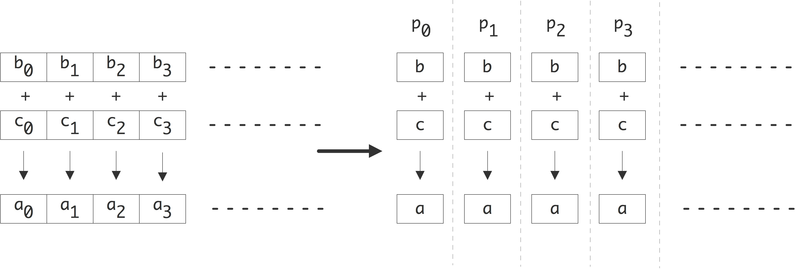</img>
<p name="caption">
FIGURE 2.1: Parallelization of a vector addition
</p>

</float>
</figure>
<!-- environment: figure end embedded generator -->
<p name="switchToTextMode">
the single instruction 
<tt>a=b+c</tt>
. This is depicted in
figure&nbsp;
2.1
.
</p>

<p name="switchToTextMode">
In the general case, where each processor executes something like
<!-- environment: verbatim start embedded generator -->
</p>
for (i=my_low; i&lt;my_high; i++)
  a[i] = b[i] + c[i];
</pre>
</verbatim>
<!-- environment: verbatim end embedded generator -->
<p name="switchToTextMode">
execution time is linearly
reduced with the number of processors. If each operation takes a unit
time, the original algorithm takes time&nbsp;$n$, and the parallel
execution on $p$ processors&nbsp;$n/p$. The parallel algorithm is faster by
a factor of&nbsp;$p$%
<!-- environment: footnoteenv start embedded generator -->
</p>
<!-- TranslatingLineGenerator footnoteenv ['footnoteenv'] -->
  {Here we ignore lower order errors in this result
  when $p$ does not divide perfectly in&nbsp;$n$. We will also, in general,
  ignore matters of loop overhead.}
</p name="footnoteenv">
)
</footnoteenv>
<!-- environment: footnoteenv end embedded generator -->
<p name="switchToTextMode">
.
</p>

<p name="switchToTextMode">
Next, let us consider summing the elements of a vector.
(An operation that has a vector as input but only a scalar as output
is often called a 
<i>reduction</i>
.)
We again
assume that each processor contains just a single array element. The
sequential code:
<!-- environment: verbatim start embedded generator -->
</p>
s = 0;
for (i=0; i&lt;n; i++)
  s += x[i]
</pre>
</verbatim>
<!-- environment: verbatim end embedded generator -->
<p name="switchToTextMode">
is no longer obviously parallel, but if we recode the loop as
<!-- environment: verbatim start embedded generator -->
</p>
for (s=2; s&lt;2*n; s*=2)
  for (i=0; i&lt;n-s/2; i+=s)
    x[i] += x[i+s/2]
</pre>
</verbatim>
<!-- environment: verbatim end embedded generator -->
<p name="switchToTextMode">
there is a way to parallelize it: every iteration of the outer loop is
now a loop that can be done by $n/s$ processors in parallel. Since the
<!-- environment: figure start embedded generator -->
</p>
<!-- TranslatingLineGenerator figure ['figure'] -->
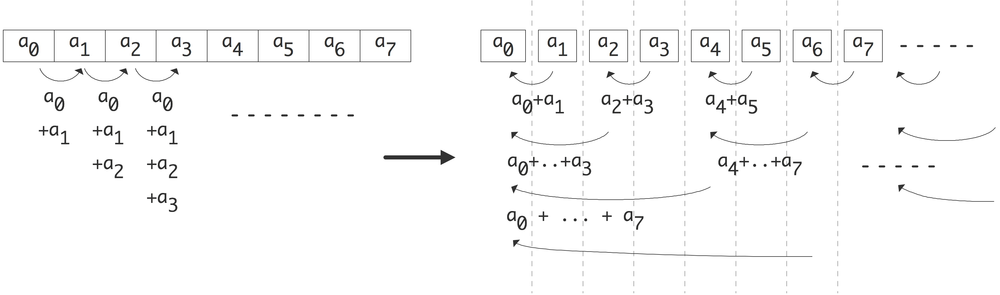</img>
<p name="caption">
FIGURE 2.2: Parallelization of a vector reduction
</p>

</float>
</figure>
<!-- environment: figure end embedded generator -->
<p name="switchToTextMode">
outer loop will go through $\log_2n$ iterations, we see that the new
algorithm has a reduced runtime of $n/p\cdot\log_2 n$. The parallel
algorithm is now faster by a factor of $p/\log_2n$. This is depicted
in figure&nbsp;
2.2
.
</p>

<p name="switchToTextMode">
Even from these two simple examples we can see some of the
characteristics of parallel computing:
<!-- environment: itemize start embedded generator -->
</p>
<!-- TranslatingLineGenerator itemize ['itemize'] -->
<li>
Sometimes algorithms need to be rewritten slightly to make them
  parallel.
<li>
A parallel algorithm may not show perfect speedup.
</ul>
</itemize>
<!-- environment: itemize end embedded generator -->
<p name="switchToTextMode">
There are other things to remark on. In the first case, if each
processors has its $x_i,y_i$ in a local store the
algorithm can be executed without further complications. In the second
case, processors need to 
<i>communicate</i>
 data among each
other and we haven't assigned a cost to that yet.
</p>

<p name="switchToTextMode">
First let us look systematically at communication. We can take the
parallel algorithm in the right half
of figure&nbsp;
2.2
 and turn it into a tree graph
(see Appendix&nbsp;
app:graph
) by defining the inputs as leave nodes,
all partial sums as interior nodes, and the root as the total
sum. There is an edge from one node to another if the first is input
to the (partial) sum in the other. This is illustrated in
figure&nbsp;
2.3
. In this figure nodes are horizontally
aligned with other computations that can be performed simultaneously;
each level is sometimes called a 
<i>superstep</i>
 in the computation.
Nodes are vertically aligned if they are computed on the same
processors, and an arrow corresponds to a communication if it goes
from one processor to another.
<!-- environment: figure start embedded generator -->
</p>
<!-- TranslatingLineGenerator figure ['figure'] -->
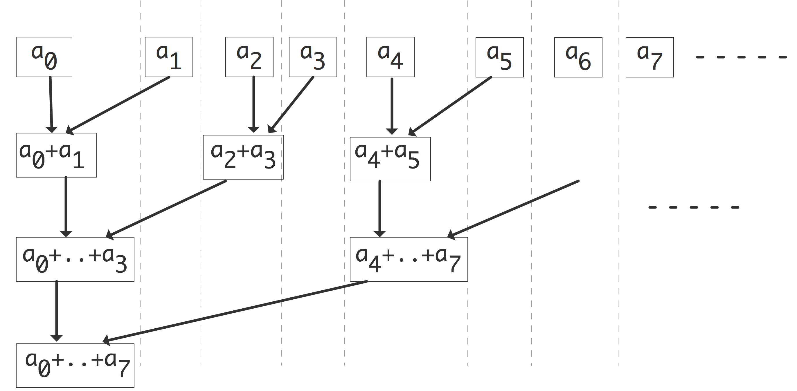</img>
<p name="caption">
FIGURE 2.3: Communication structure of a parallel vector reduction
</p>

</float>
</figure>
<!-- environment: figure end embedded generator -->
<p name="switchToTextMode">
The vertical alignment in figure&nbsp;
2.3
 is not the
only one possible. If nodes are shuffled within a superstep or
horizontal level, a different communication pattern arises.
<!-- environment: exercise start embedded generator -->
</p>
<!-- TranslatingLineGenerator exercise ['exercise'] -->
  Consider placing the nodes within a superstep on random
  processors. Show that, if no two nodes wind up on the same
  processor, at most twice the number of communications is performed
  from the case in figure&nbsp;
2.3
.
</p name="exercise">
</exercise>
<!-- environment: exercise end embedded generator -->
<!-- environment: answer start embedded generator -->

</answer>
<!-- environment: answer end embedded generator -->
<p name="switchToTextMode">

<!-- environment: exercise start embedded generator -->
</p>
<!-- TranslatingLineGenerator exercise ['exercise'] -->
  Can you draw the graph of a computation that leaves the sum result
  on each processor? There is a solution that takes twice the number
  of supersteps, and there is one that takes the same number. In both
  cases the graph is no longer a tree, but a more general 
<span title="acronym" ><i>DAG</i></span>
.
</p name="exercise">
</exercise>
<!-- environment: exercise end embedded generator -->
<!-- environment: answer start embedded generator -->

</answer>
<!-- environment: answer end embedded generator -->
<p name="switchToTextMode">

Processors are often connected through a network, and moving data
through this network takes time. This introduces a concept of distance
between the processors.
In figure&nbsp;
2.3
, where the processors are linearly ordered,
this is related to their rank in the ordering.
If the network only connects a
processor with its immediate neighbors,  each iteration of the
outer loop increases the distance over which communication takes
place.
</p>

<!-- environment: exercise start embedded generator -->
<!-- TranslatingLineGenerator exercise ['exercise'] -->

  Assume that an addition takes a certain unit time, and that moving a
  number from one processor to another takes that same unit time. Show
  that the communication time equals the computation time.
</p>

<p name="switchToTextMode">
  Now assume that sending a number from processor $p$ to $p\pm k$
  takes time&nbsp;$k$. Show that the execution time of the parallel
  algorithm now is of the same order as the sequential time.
</p name="exercise">
</exercise>
<!-- environment: exercise end embedded generator -->
<!-- environment: answer start embedded generator -->

</answer>
<!-- environment: answer end embedded generator -->
<p name="switchToTextMode">

The summing example made the unrealistic assumption that every
processor initially stored just one vector element: in practice we will
have $p&lt;n$, and every processor stores a number of vector
elements. The obvious strategy is to give each processor a consecutive
stretch of elements, but sometimes the obvious strategy is not the
best.
</p>

<!-- environment: exercise start embedded generator -->
<!-- TranslatingLineGenerator exercise ['exercise'] -->
  Consider the case of summing 8 elements with 4 processors. Show that
  some of the edges in the graph of figure&nbsp;
2.3
 no
  longer correspond to actual communications.
  Now consider summing 16 elements with, again, 4 processors. What is
  the number of communication edges this time?
</p name="exercise">
</exercise>
<!-- environment: exercise end embedded generator -->
<!-- environment: answer start embedded generator -->

</answer>
<!-- environment: answer end embedded generator -->
<p name="switchToTextMode">

These matters of algorithm adaptation, efficiency, and communication,
are crucial to all of parallel computing. We will return to these
issues in various guises throughout this chapter.
</p>

<h3><a id="Functionalparallelismversusdataparallelism">2.1.1</a> Functional parallelism versus data parallelism</h3>
<p name=crumbs>
crumb trail:  > <a href="parallel.html">parallel</a> > <a href="parallel.html#Introduction">Introduction</a> > <a href="parallel.html#Functionalparallelismversusdataparallelism">Functional parallelism versus data parallelism</a>
</p>
<p name="switchToTextMode">

From the above introduction we can describe parallelism as finding
independent operations in the execution of a program. In all of the examples
these independent operations were in fact identical operations, but applied to
different data items. We could call this
<i>data parallelism</i>
: the same
operation is applied in parallel to many data elements.
This is in fact a common scenario in scientific computing: parallelism
often stems from the fact that a data set (vector, matrix,
graph,&hellip;) is spread over many processors, each working on its part
of the data.
</p>

<p name="switchToTextMode">
The term data parallelism is traditionally mostly applied
if the operation is a single instruction; in the case of a subprogram
it is often called 
<i>task parallelism</i>
.
</p>

<p name="switchToTextMode">
It is also possible to find independence, not based on data elements,
but based on the instructions themselves. Traditionally, compilers
analyze code in terms of 
<span title="acronym" ><i>ILP</i></span>
: independent instructions can be given
to separate floating point units, or reordered, for instance to optimize
register usage (see also section&nbsp;
2.5.2
).
<span title="acronym" ><i>ILP</i></span>
 is one case of 
<i>functional parallelism</i>
;
on a higher level, functional parallelism can be obtained
by considering independent subprograms, often called 
<i>task parallelism</i>
;
see section&nbsp;
2.5.3
.
</p>

<p name="switchToTextMode">
Some examples of functional parallelism are Monte Carlo simulations,
and other algorithms that traverse a parametrized search space,
such as boolean 
<i>satisfyability</i>
 problems.
</p>

<h3><a id="Parallelisminthealgorithmversusinthecode">2.1.2</a> Parallelism in the algorithm versus in the code</h3>
<p name=crumbs>
crumb trail:  > <a href="parallel.html">parallel</a> > <a href="parallel.html#Introduction">Introduction</a> > <a href="parallel.html#Parallelisminthealgorithmversusinthecode">Parallelism in the algorithm versus in the code</a>
</p>
<p name="switchToTextMode">

Often we are in the situation that we want to parallelize an algorithm
that has a common expression in sequential form.
In some cases, this
sequential form is straightforward to parallelize, such as in the vector
addition discussed above. In other cases there is no simple way to
parallelize the algorithm; we will discuss linear recurrences in
section&nbsp;
6.9.2
. And in yet another case the sequential code may
look not parallel, but the algorithm actually has parallelism.
</p>

<!-- environment: exercise start embedded generator -->
<!-- TranslatingLineGenerator exercise ['exercise'] -->
<!-- environment: verbatim start embedded generator -->
</p>
for i in [1:N]:
    x[0,i] = some_function_of(i)
    x[i,0] = some_function_of(i)


for i in [1:N]:
    for j in [1:N]:
        x[i,j] = x[i-1,j]+x[i,j-1]
</pre>
</verbatim>
<!-- environment: verbatim end embedded generator -->
<p name="switchToTextMode">

Answer the following questions about the double 
<tt>i,j</tt>
 loop:
<!-- environment: enumerate start embedded generator -->
</p>
<!-- TranslatingLineGenerator enumerate ['enumerate'] -->
<li>
Are the iterations of the inner loop independent, that is, could
  they be executed simultaneously?
<li>
Are the iterations of the outer loop independent?
<li>
If 
<tt>x[1,1]</tt>
 is known, show that 
<tt>x[2,1]</tt>
 and 
<tt>x[1,2]</tt>
 can
  be computed independently.
<li>
Does this give you an idea for a parallelization strategy?
</ol>
</enumerate>
<!-- environment: enumerate end embedded generator -->
</exercise>
<!-- environment: exercise end embedded generator -->
<!-- environment: answer start embedded generator -->

</answer>
<!-- environment: answer end embedded generator -->
<p name="switchToTextMode">

We will discuss the solution to this conundrum in
section&nbsp;
6.9.1
. In general, the whole of
chapter&nbsp;
High performance linear algebra
 will be about the amount of
parallelism intrinsic in scientific computing algorithms.
</p>

<h2><a id="Theoreticalconcepts">2.2</a> Theoretical concepts</h2>
<p name=crumbs>
crumb trail:  > <a href="parallel.html">parallel</a> > <a href="parallel.html#Theoreticalconcepts">Theoretical concepts</a>
</p>

<p name="switchToTextMode">

There are two important reasons for using a parallel computer: to have
access to more memory or to obtain higher performance. It is easy to
characterize the gain in memory, as the total memory is the sum of the
individual memories. The speed of a parallel computer is harder to
characterize. This section will have an extended discussion on
theoretical measures for expressing and judging the gain in execution
speed from going to a parallel architecture.
</p>

<h3><a id="Definitions">2.2.1</a> Definitions</h3>
<p name=crumbs>
crumb trail:  > <a href="parallel.html">parallel</a> > <a href="parallel.html#Theoreticalconcepts">Theoretical concepts</a> > <a href="parallel.html#Definitions">Definitions</a>
</p>

<p name="switchToTextMode">

<h4><a id="Speedupandefficiency">2.2.1.1</a> Speedup and efficiency</h4>
<p name=crumbs>
crumb trail:  > <a href="parallel.html">parallel</a> > <a href="parallel.html#Theoreticalconcepts">Theoretical concepts</a> > <a href="parallel.html#Definitions">Definitions</a> > <a href="parallel.html#Speedupandefficiency">Speedup and efficiency</a>
</p>
</p>

<p name="switchToTextMode">
A&nbsp;simple approach to defining speedup is to let the same program run on a
single processor, and on a parallel machine with $p$ processors, and
to compare runtimes.
With $T_1$ the execution time on a single processor and
$T_p$ the time on $p$ processors, we define the 
<i>speedup</i>
 as
$S_p=T_1/T_p$. (Sometimes $T_1$ is defined as `the best time to solve the
problem on a single processor', which allows for using a different
algorithm on a single processor than in parallel.)
In the ideal case, $T_p=T_1/p$, but in practice we don't expect to
attain that, so $S_p\leq p$. To measure how far we are from the ideal
speedup, we introduce the 
<i>efficiency</i>
 $E_p=S_p/p$. Clearly,
$0&lt; E_p\leq 1$.
</p>

<p name="switchToTextMode">
There is a practical problem with
the above definitions: a problem that can be solved on a parallel machine
may be too large to fit on any single processor. Conversely,
distributing a single processor problem
over many processors may give a distorted picture since very little
data will wind up on each processor. Below we will discuss more
realistic measures of speed-up.
</p>

<p name="switchToTextMode">
There are various reasons why the actual speed is less than&nbsp;$p$. For
one, using more than one processors necessitates communication, which
is overhead that was not part of the original computation. Secondly,
if the processors do not have exactly the same amount of work to do,
they may be idle part of the time (this is known as
<i>load unbalance</i>
), again lowering the actually attained
speedup. Finally, code may have sections that are inherently
sequential.
</p>

<p name="switchToTextMode">
Communication between processors is an important source of a loss of
efficiency. Clearly, a problem that can be solved without
communication will be very efficient. Such problems, in effect
consisting of a number of completely independent calculations, is
called 
<i>embarrassingly parallel</i>
; it will have close to a perfect
speedup and efficiency.
</p>

<!-- environment: exercise start embedded generator -->
<!-- TranslatingLineGenerator exercise ['exercise'] -->
  The case of speedup larger than the number of processors is called
<i>superlinear speedup</i>
. Give a theoretical argument why
  this can never happen.
</p name="exercise">
</exercise>
<!-- environment: exercise end embedded generator -->
<p name="switchToTextMode">

In practice, superlinear speedup can happen. For instance, suppose a
problem is too large to fit in memory, and a single processor can only
solve it by swapping data to disc. If the same problem fits in the
memory of two processors, the speedup may well be larger than&nbsp;$2$
since disc swapping no longer occurs. Having less, or more localized,
data may also improve the cache behavior of a code.
</p>

<h4><a id="Cost-optimality">2.2.1.2</a> Cost-optimality</h4>
<p name=crumbs>
crumb trail:  > <a href="parallel.html">parallel</a> > <a href="parallel.html#Theoreticalconcepts">Theoretical concepts</a> > <a href="parallel.html#Definitions">Definitions</a> > <a href="parallel.html#Cost-optimality">Cost-optimality</a>
</p>
<p name="switchToTextMode">

In cases where the speedup is not perfect we can define
<i>overhead</i>
 as the difference 
\[
 T_o = pT_p-T1. 
\]
We can also interpret this as the difference between simulating the
parallel algorithm on a single processor, and the actual best
sequential algorithm.
</p>

<p name="switchToTextMode">
We will later see two different types of overhead:
<!-- environment: enumerate start embedded generator -->
</p>
<!-- TranslatingLineGenerator enumerate ['enumerate'] -->
<li>
The parallel algorithm can be essentially different from the
  sequential one. For instance, sorting algorithms have a
  complexity&nbsp;$O(n\log n)$, but the parallel bitonic sort
  (section&nbsp;
8.6
) has complexity&nbsp;$O(n\log^2n)$.
<li>
The parallel algorithm can have overhead derived from the
  process or parallelizing, such as the cost of sending messages. As
  an example, section&nbsp;
6.2.2
 analyzes the
  communication overhead in the matrix-vector product.
</ol>
</enumerate>
<!-- environment: enumerate end embedded generator -->
<p name="switchToTextMode">

A parallel algorithm is called 
<i>cost-optimal</i>
 if the
overhead is at most of the order of the running time of the sequential
algorithm.
</p>

<!-- environment: exercise start embedded generator -->
<!-- TranslatingLineGenerator exercise ['exercise'] -->
  The definition of overhead above implicitly assumes that overhead is
  not parallelizable. Discuss this assumption in the context of the
  two examples above.
</p name="exercise">
</exercise>
<!-- environment: exercise end embedded generator -->
<p name="switchToTextMode">

<h3><a id="Asymptotics">2.2.2</a> Asymptotics</h3>
<p name=crumbs>
crumb trail:  > <a href="parallel.html">parallel</a> > <a href="parallel.html#Theoreticalconcepts">Theoretical concepts</a> > <a href="parallel.html#Asymptotics">Asymptotics</a>
</p>

<!-- TranslatingLineGenerator file ['file'] -->
</p>

<p name="switchToTextMode">
If we ignore limitations such as that the number of processors has to
be finite, or the physicalities of the  interconnect between them, we can
derive theoretical results on the limits of parallel computing. This
section will give a brief introduction to such results, and discuss
their connection to real life high performance computing.
</p>

<p name="switchToTextMode">
Consider for instance the matrix-matrix multiplication
$C=AB$, which takes $2N^3$ operations where $N$ is the matrix
size. Since there are no dependencies between the operations for the
elements of~$C$, we can perform them all in parallel. If we had $N^2$
processors, we could assign each to an $(i,j)$ coordinate in~$C$, and
have it compute $c_{ij}$ in $2N$ time. Thus, this parallel operation
has efficiency~$1$, which is optimal.
</p>

<!-- environment: exercise start embedded generator -->
<!-- TranslatingLineGenerator exercise ['exercise'] -->
  Show that this algorithm ignores some serious issues about memory
  usage:
<!-- environment: itemize start embedded generator -->
</p>
<!-- TranslatingLineGenerator itemize ['itemize'] -->
<li>
If the matrix is kept in shared memory, how many simultaneous
    reads from each memory locations are performed?
<li>
If the processors keep the input and output to the local
    computations in  local storage, how much duplication
    is there of the matrix elements?
</ul>
</itemize>
<!-- environment: itemize end embedded generator -->
</exercise>
<!-- environment: exercise end embedded generator -->
<p name="switchToTextMode">

Adding $N$ numbers $\{x_i\}_{i=1\ldots N}$ can be performed in
$\log_2 N$ time with $N/2$ processors. As a simple example, consider the sum
of $n$ numbers: $s=\sum_{i=1}^n a_i$. If we have $n/2$ processors we
could compute:
<!-- environment: enumerate start embedded generator -->
</p>
<!-- TranslatingLineGenerator enumerate ['enumerate'] -->
<li>
Define $s^{(0)}_i = a_i$.
<li>
Iterate with $j=1,\ldots,\log_2 n$:
<li>
Compute $n/2^j$ partial sums $s^{(j)}_i=s^{(j-1)}_{2i}+s^{(j-1)}_{2i+1}$
</ol>
</enumerate>
<!-- environment: enumerate end embedded generator -->
<p name="switchToTextMode">
We see that the $n/2$ processors perform a total of $n$ operations (as
they should) in $\log_2n$ time. The efficiency of this parallel scheme
is~$O(1/\log_2n)$, a slowly decreasing function of~$n$.
<!-- environment: exercise start embedded generator -->
</p>
<!-- TranslatingLineGenerator exercise ['exercise'] -->
  Show that, with the scheme for parallel addition just outlined, you
  can multiply two matrices in $\log_2 N$ time with $N^3/2$
  processors. What is the resulting efficiency?
</p name="exercise">
</exercise>
<!-- environment: exercise end embedded generator -->
<p name="switchToTextMode">

It is now a legitimate theoretical question to ask
<!-- environment: itemize start embedded generator -->
</p>
<!-- TranslatingLineGenerator itemize ['itemize'] -->
<li>
If we had infinitely many processors, what is the lowest
  possible time complexity for matrix-matrix multiplication, or
<li>
Are there faster algorithms that still have $O(1)$ efficiency?
</ul>
</itemize>
<!-- environment: itemize end embedded generator -->
<p name="switchToTextMode">
Such questions have been researched (see for
instance~
<a href="https://pages.tacc.utexas.edu/~eijkhout/istc/html/bibliography.html#He:surveyparallel">[He:surveyparallel]</a>
), but they have little bearing on
high performance computing.
</p>

<p name="switchToTextMode">
A first objection to these kinds of theoretical bounds is that they
implicitly assume some form of shared memory. In fact, the formal
model for these algorithms is called a 
<i>PRAM</i>
, where the
assumption is that every memory location is accessible to any
processor.  Often an additional assumption is made that multiple simultaneous
accesses to the same location are in fact possible
<!-- environment: footnoteenv start embedded generator -->
</p>
<!-- TranslatingLineGenerator footnoteenv ['footnoteenv'] -->
  {This notion
  can be made precise; for instance, one talks of a CREW-PRAM, for
  Concurrent Read, Exclusive Write PRAM.}
</p name="footnoteenv">
)
</footnoteenv>
<!-- environment: footnoteenv end embedded generator -->
<p name="switchToTextMode">
. These assumptions are
unrealistic in practice, especially in the context of scaling up the
problem size and the number of processors. A~further objection to the
<span title="acronym" ><i>PRAM</i></span>
 model is that even on a single processor it ignores the
memory hierarchy; section~
1.3
.
</p>

<p name="switchToTextMode">
But even if we take distributed memory into account, theoretical
results can still be unrealistic. The above summation algorithm can
indeed work unchanged in distributed memory, except that we have to
worry about the distance between active processors increasing as we
iterate further. If the processors are connected by a linear array,
the number of `hops' between active processors doubles, and with that,
asymptotically, the computation time of the iteration. The total
execution time then becomes~$n/2$, a disappointing result given that
we throw so many processors at the problem.
</p>

<p name="switchToTextMode">
What if the processors are
connected with a hypercube topology (section~
2.7.5
)?
It is not hard to see that the
summation algorithm can then indeed work in $\log_2n$ time. However,
as $n\rightarrow\infty$, can we build a sequence of hypercubes of $n$ nodes
and keep the communication time between two connected constant? Since
communication time depends on latency, which partly depends on the
length of the wires, we have to worry about the physical distance
between nearest neighbors.
</p>

<p name="switchToTextMode">
The crucial question here is whether the hypercube (an $n$-dimensional
object) can be embedded in 3-dimensional space, while keeping the
distance (measured in meters) constant between connected neighbors.
It is easy to see that a 3-dimensional grid can be scaled up
arbitrarily while maintaining a unit wire length, but the question is
not clear for a hypercube.  There, the length of the wires may have to
increase as $n$ grows, which runs afoul of the finite speed of
electrons.
</p>

<p name="switchToTextMode">
We sketch a proof (see~
<a href="https://pages.tacc.utexas.edu/~eijkhout/istc/html/bibliography.html#Fisher:fastparallel">[Fisher:fastparallel]</a>
 for more details)
that, in our three dimensional world and with a finite speed of light,
speedup is limited to $\sqrt[4]{n}$ for a problem on $n$ processors,
no matter the interconnect. The argument goes as follows. Consider an
operation that involves collecting a final result on one processor. Assume
that each processor takes a unit volume of space, produces one result
per unit time, and can send one data item per unit time. Then, in an
amount of time~$t$, at most the processors in a ball with radius~$t$,
that is, $O(t^3)$ processors can contribute to the
final result; all others are too far away. In time~$T$, then, the
number of operations
that can contribute to the final result is $\int_0^T
t^3dt=O(T^4)$. This means that the maximum achievable speedup is the
fourth root of the sequential time.
</p>

<p name="switchToTextMode">
Finally, the question `what if we had infinitely many processors' is
not realistic as such, but we will allow it in the sense that we will
ask the 
<i>weak scaling</i>
 question (section~
2.2.5
)
`what if we let the problem size and the number of processors grow
proportional to each other'. This question is legitimate, since it
corresponds to the very practical deliberation whether buying more
processors will allow one to run larger problems, and if so, with what
`bang for the buck'.
</p>

<p name="switchToTextMode">

</p>

<h3><a id="Amdahl'slaw">2.2.3</a> Amdahl's law</h3>
<p name=crumbs>
crumb trail:  > <a href="parallel.html">parallel</a> > <a href="parallel.html#Theoreticalconcepts">Theoretical concepts</a> > <a href="parallel.html#Amdahl'slaw">Amdahl's law</a>
</p>

<!-- index -->
<p name="switchToTextMode">

One reason for less than perfect speedup is that parts of a code can
be inherently sequential. This limits the parallel efficiency as
follows. Suppose that $5\%$ of a code is sequential, then the time for
that part can not be reduced, no matter how many processors are
available. Thus, the speedup on that code is limited to a factor
of&nbsp;$20$. This phenomenon is known as 
<i>Amdahl's   Law</i>
&nbsp;
<a href="https://pages.tacc.utexas.edu/~eijkhout/istc/html/bibliography.html#amd:law">[amd:law]</a>
, which we will now formulate.
</p>

<p name="switchToTextMode">
Let $F_s$ be the
<i>sequential fraction</i>
 and
$F_p$ be the 
<i>parallel fraction</i>
(or more strictly: the `parallelizable'
fraction) of a code, respectively. Then $F_p+F_s=1$. The parallel
execution time $T_p$ on $p$ processors
is the sum of the part that is sequential
$T_1F_s$ and the part that can be parallelized $T_1F_p/P$:
<!-- environment: equation start embedded generator -->
</p>
  T\_P=T\_1(F\_s+F\_p/P).
\label{eq:amdahl}
\end{equation}
</equation>
<!-- environment: equation end embedded generator -->
<p name="switchToTextMode">
As the number of processors grows
$P\rightarrow\infty$, the parallel execution time now approaches that
of the sequential fraction of the code: $T_P\downarrow
T_1F_s$. We conclude that speedup is limited by $S_P\leq 1/F_s$ and
efficiency is a decreasing function $E\sim 1/P$.
</p>

<p name="switchToTextMode">
The sequential fraction of a code can consist of things such as I/O
operations. However, there are also parts of a code that in effect act
as sequential. Consider a program that executes a single loop, where
all iterations can be computed independently.
Clearly, this code is offers no obstacles to parallelization.
However by splitting the loop in a number of
parts, one per processor, each processor now has to deal with loop
overhead: calculation of bounds, and the test for completion. This
overhead is replicated as many times as there are processors. In
effect, loop overhead acts as a sequential part of the code.
</p>

<!-- environment: exercise start embedded generator -->
<!-- TranslatingLineGenerator exercise ['exercise'] -->
  Let's do a specific example. Assume that a code has a setup that
  takes 1&nbsp;second and a parallelizable section that takes 1000&nbsp;seconds
  on one processor. What are the speedup and efficiency if the code is
  executed with 100 processors? What are they for 500&nbsp;processors?
  Express your answer to at most two significant digits.
</p name="exercise">
</exercise>
<!-- environment: exercise end embedded generator -->
<!-- environment: answer start embedded generator -->

</answer>
<!-- environment: answer end embedded generator -->
<p name="switchToTextMode">

<!-- environment: exercise start embedded generator -->
</p>
<!-- TranslatingLineGenerator exercise ['exercise'] -->

  Investigate the implications of Amdahl's law: if the number of
  processors&nbsp;$P$ increases, how does the parallel fraction of a code
  have to increase to maintain a fixed efficiency?
</p name="exercise">
</exercise>
<!-- environment: exercise end embedded generator -->
<p name="switchToTextMode">

<!-- environment: answer start embedded generator -->
</p>

</answer>
<!-- environment: answer end embedded generator -->
<p name="switchToTextMode">

<h4><a id="Amdahl'slawwithcommunicationoverhead">2.2.3.1</a> Amdahl's law with communication overhead</h4>
<p name=crumbs>
crumb trail:  > <a href="parallel.html">parallel</a> > <a href="parallel.html#Theoreticalconcepts">Theoretical concepts</a> > <a href="parallel.html#Amdahl'slaw">Amdahl's law</a> > <a href="parallel.html#Amdahl'slawwithcommunicationoverhead">Amdahl's law with communication overhead</a>
</p>
</p>

<p name="switchToTextMode">
In a way, Amdahl's law, sobering as it is, is even optimistic.
Parallelizing a code will give a certain speedup, but it also
introduces 
<i>communication overhead</i>
 that will lower the
speedup attained. Let us refine our model of
equation&nbsp;\eqref{eq:amdahl} (see&nbsp;
\cite[p.&nbsp;367]{Landau:comp-phys}):
\[
 T_p= T_1(F_s+F_p/P) +T_c, 
\]
where $T_c$ is a fixed communication time.
</p>

<p name="switchToTextMode">
To assess the influence of this communication overhead, we assume that
the code is fully parallelizable, that is, $F_p=1$. We then find that
<!-- environment: equation start embedded generator -->
</p>
    S\_p=\frac{T\_1}{T\_1/p+T\_c}.
\label{eq:amdahl-comm}
\end{equation}
</equation>
<!-- environment: equation end embedded generator -->
<p name="switchToTextMode">
For this to be close to&nbsp;$p$, we need $T_c\ll T_1/p$ or $p\ll
T_1/T_c$. In other words, the number of processors should not grow
beyond the ratio of scalar execution time and communication overhead.
</p>

<h4><a id="Gustafson'slaw">2.2.3.2</a> Gustafson's law</h4>
<p name=crumbs>
crumb trail:  > <a href="parallel.html">parallel</a> > <a href="parallel.html#Theoreticalconcepts">Theoretical concepts</a> > <a href="parallel.html#Amdahl'slaw">Amdahl's law</a> > <a href="parallel.html#Gustafson'slaw">Gustafson's law</a>
</p>
<!-- index -->
<p name="switchToTextMode">

Amdahl's law was thought to show that large numbers of processors
would never pay off. However, the implicit assumption in Amdahl's law
is that there is a fixed computation which gets executed on more and
more processors. In practice this is not the case: typically there is
a way of 
<i>scaling</i>
 up a 
<i>problem</i>

<!-- index -->
(in chapter&nbsp;
Numerical treatment of differential equations
 you will
learn the concept of `discretization'), and one
tailors the size of the problem to the number of available processors.
</p>

<p name="switchToTextMode">
A more realistic assumption would be to say that there is a  sequential
fraction independent of the problem size, and parallel fraction that
can be arbitrarily replicated.  To formalize this, instead of starting
with the execution time of the sequential program, let us start with
the execution time of the parallel program, and say that
\[
 T_p=T(F_s+F_p) \qquad\hbox{with $F_s+F_p=1$}. 
\]
Now we have two possible definitions of&nbsp;$T_1$. First of all, there is the $T_1$
you get from setting $p=1$ in&nbsp;$T_p$. (Convince yourself that that is actually
the same as&nbsp;$T_p$.) However, what we need is $T_1$ describing the time
to do all the operations of the parallel program.
<!-- environment: figure start embedded generator -->
</p>
<!-- TranslatingLineGenerator figure ['figure'] -->
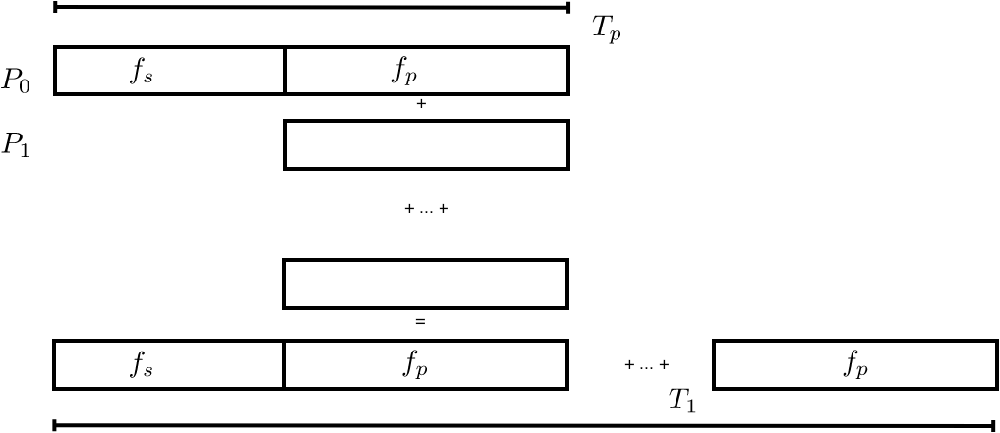</img>
<p name="caption">
FIGURE 2.4: Sequential and parallel time in Gustafson's analysis
</p>

</float>
</figure>
<!-- environment: figure end embedded generator -->
<p name="switchToTextMode">
(See figure&nbsp;
2.4
.)
This is:
\[
 T_1=F_sT+p\cdot F_pT. 
\]
This gives us a speedup of
<!-- environment: equation start embedded generator -->
</p>
  S\_p=\frac{T\_1}{T\_p}=\frac{F\_s+p\cdot F\_p}{F\_s+F\_p}
  = F\_s+p\cdot F\_p = p-(p-1)\cdot F\_s.
\label{eq:gustaf-s}
\end{equation}
</equation>
<!-- environment: equation end embedded generator -->
<p name="switchToTextMode">

From this formula we see that:
<!-- environment: itemize start embedded generator -->
</p>
<!-- TranslatingLineGenerator itemize ['itemize'] -->
<li>
Speedup is still bounded by&nbsp;$p$;
<li>
&hellip;&nbsp;but it's a positive number;
<li>
for a given&nbsp;$p$ it's again a decreasing function of the sequential fraction.
</ul>
</itemize>
<!-- environment: itemize end embedded generator -->
<p name="switchToTextMode">

<!-- environment: exercise start embedded generator -->
</p>
<!-- TranslatingLineGenerator exercise ['exercise'] -->

  Rewrite equation&nbsp;\eqref{eq:gustaf-s} to express the speedup in terms of $p$
  and&nbsp;$F_p$. What is the asymptotic behavior of the efficiency&nbsp;$E_p$?
</p name="exercise">
</exercise>
<!-- environment: exercise end embedded generator -->
<!-- environment: answer start embedded generator -->

</answer>
<!-- environment: answer end embedded generator -->
<p name="switchToTextMode">

As with Amdahl's law, we can investigate the behavior of Gustafson's
law if we include communication overhead. Let's go back to
equation&nbsp;\eqref{eq:amdahl-comm} for a perfectly parallelizable
problem, and approximate it as
\[
 S_p = p(1-\frac{T_c}{T_1}p). 
\]
Now, under the assumption of a problem that is gradually being scaled up,
$T_c,T_1$ become functions of&nbsp;$p$. We see that if $T_1(p)\sim pT_c(p)$,
we get linear speedup that is a constant fraction away from&nbsp;$1$.
In general we can not take this analysis further; in section&nbsp;
6.2.2
you'll see a detailed analysis of an example.
</p>

<!-- index -->
<p name="switchToTextMode">

<h4><a id="Amdahl'slawandhybridprogramming">2.2.3.3</a> Amdahl's law and hybrid programming</h4>
<p name=crumbs>
crumb trail:  > <a href="parallel.html">parallel</a> > <a href="parallel.html#Theoreticalconcepts">Theoretical concepts</a> > <a href="parallel.html#Amdahl'slaw">Amdahl's law</a> > <a href="parallel.html#Amdahl'slawandhybridprogramming">Amdahl's law and hybrid programming</a>
</p>
</p>

<p name="switchToTextMode">
Above, you learned about hybrid programming, a mix between distributed
and shared memory programming. This leads to a new form of Amdahl's
law.
</p>

<p name="switchToTextMode">
Suppose we have $p$ nodes with $c$ cores each, and $F_p$ describes the fraction
of the code that uses $c$-way thread parallelism. We assume that the
whole code is fully parallel over the $p$ nodes.
The ideal speed up would be $p c$, and the ideal parallel running
time $T_1/(pc)$, but the actual running time is
\[
  T_{p,c} = T_1 \left(\frac {F_s}{p} + \frac{F_p}{p c}\right)
  = \frac{T_1}{pc}\left( F_sc+F_p\right)
  = \frac{T_1}{pc}\left( 1+ F_s(c-1)\right).
\]
<!-- environment: exercise start embedded generator -->
</p>
<!-- TranslatingLineGenerator exercise ['exercise'] -->
  Show that the speedup $T_1/T_{p,c}$ can be approximated by&nbsp;$p/F_s$.
</p name="exercise">
</exercise>
<!-- environment: exercise end embedded generator -->
<!-- environment: answer start embedded generator -->

</answer>
<!-- environment: answer end embedded generator -->
<p name="switchToTextMode">
In the original Amdahl's law, speedup was limited by the sequential
portion to a fixed number&nbsp;$1/F_s$, in hybrid programming it is limited
by the task parallel portion to&nbsp;$p/F_s$.
</p>

<!-- index -->
<p name="switchToTextMode">

<h3><a id="CriticalpathandBrent'stheorem">2.2.4</a> Critical path and Brent's theorem</h3>
<p name=crumbs>
crumb trail:  > <a href="parallel.html">parallel</a> > <a href="parallel.html#Theoreticalconcepts">Theoretical concepts</a> > <a href="parallel.html#CriticalpathandBrent'stheorem">Critical path and Brent's theorem</a>
</p>

</p>

<p name="switchToTextMode">
The above definitions of speedup and efficiency,
and the discussion of Amdahl's law and Gustafson's law,
made an implicit assumption
that parallel work can be arbitrarily subdivided.
As you saw in the summing example in section&nbsp;
2.1
,
this may not always be the case: there can be dependencies between
operations, which limits the amount of parallelism that can be
employed.
</p>

<p name="switchToTextMode">
We define the 
<i>critical path</i>
 as a (possibly non-unique) chain of dependencies
of maximum length. (This length is sometimes known as&nbsp;
<i>span</i>
.)
Since the tasks on a critical path need to be
executed one after another, the length of the critical path is a lower
bound on parallel execution time.
</p>

<p name="switchToTextMode">
To make these notions precise, we define the following concepts:
<!-- environment: definition start embedded generator -->
</p>
<!-- TranslatingLineGenerator definition ['definition'] -->
\[
\begin{array}{l@{\colon}l}
    T_1&\hbox{the time the computation takes on a single processor}\\
    T_p&\hbox{the time the computation takes with $p$ processors}\\
    T_\infty&\hbox{the time the computation takes if unlimited processors are available}\\
    P_\infty&\hbox{the value of $p$ for which $T_p=T_\infty$}
\end{array}
\]
</p name="definition">
</definition>
<!-- environment: definition end embedded generator -->
<p name="switchToTextMode">
With these concepts, we can define the 
<i>average parallelism</i>
of an algorithm as $T_1/T_\infty$, and the length of the critical path is&nbsp;$T_\infty$.
</p>

<p name="switchToTextMode">
We will now give a few illustrations by showing a graph of tasks and their dependencies.
We assume for simplicity that each node is a unit time task.
</p>

<!-- environment: minipage start embedded generator -->
<!-- TranslatingLineGenerator minipage ['minipage'] -->
<!-- environment: minipage start embedded generator -->
</p>
<!-- TranslatingLineGenerator minipage ['minipage'] -->
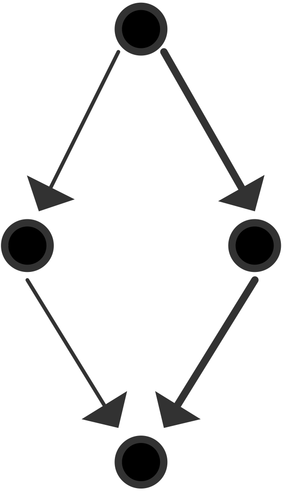</img>
</p name="minipage">
</minipage>
<!-- environment: minipage end embedded generator -->
<p name="switchToTextMode">
{.25\textwidth}
<!-- environment: minipage start embedded generator -->
</p>
<!-- TranslatingLineGenerator minipage ['minipage'] -->
    The maximum number of processors that can be used is&nbsp;2 and the
    average parallelism is&nbsp;$4/3$:
\[
\begin{array}{l}
      T_1=4,\quad T_\infty=3 \quad\Rightarrow T_1/T_\infty=4/3\\
      T_2=3,\quad S_2=4/3,\quad E_2=2/3\\
      P_\infty=2
\end{array}
\]
</p name="minipage">
</minipage>
<!-- environment: minipage end embedded generator -->
<p name="switchToTextMode">
{.75\textwidth}
</p name="minipage">
</minipage>
<!-- environment: minipage end embedded generator -->
<p name="switchToTextMode">
{\textwidth}
</p>

<!-- environment: minipage start embedded generator -->
<!-- TranslatingLineGenerator minipage ['minipage'] -->
<!-- environment: minipage start embedded generator -->
</p>
<!-- TranslatingLineGenerator minipage ['minipage'] -->
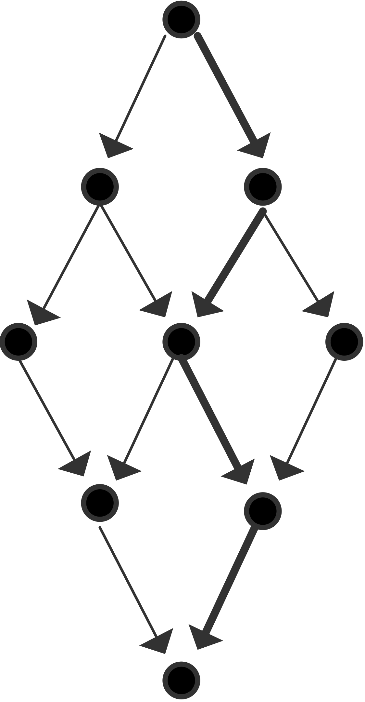</img>
</p name="minipage">
</minipage>
<!-- environment: minipage end embedded generator -->
<p name="switchToTextMode">
{.25\textwidth}
<!-- environment: minipage start embedded generator -->
</p>
<!-- TranslatingLineGenerator minipage ['minipage'] -->
    The maximum number of processors that can be used is&nbsp;3 and the
    average parallelism is&nbsp;$9/5$; efficiency is maximal for&nbsp;$p=2$:
\[
\begin{array}{l}
      T_1=9,\quad T_\infty=5 \quad\Rightarrow T_1/T_\infty=9/5\\
      T_2=6,\quad S_2=3/2,\quad E_2=3/4\\
      T_3=5,\quad S_3=9/5,\quad E_3=3/5\\
      P_\infty=3
\end{array}
\]
</p name="minipage">
</minipage>
<!-- environment: minipage end embedded generator -->
<p name="switchToTextMode">
{.75\textwidth}
</p name="minipage">
</minipage>
<!-- environment: minipage end embedded generator -->
<p name="switchToTextMode">
{\textwidth}
</p>

<!-- environment: minipage start embedded generator -->
<!-- TranslatingLineGenerator minipage ['minipage'] -->
<!-- environment: minipage start embedded generator -->
</p>
<!-- TranslatingLineGenerator minipage ['minipage'] -->
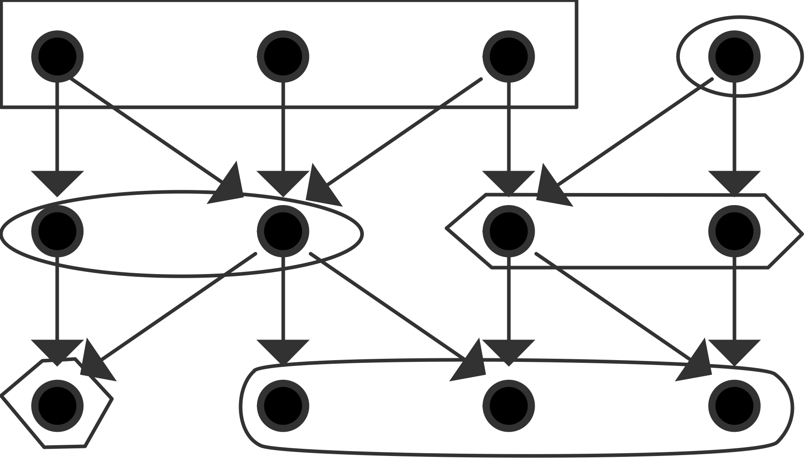</img>
</p name="minipage">
</minipage>
<!-- environment: minipage end embedded generator -->
<p name="switchToTextMode">
{.4\textwidth}
<!-- environment: minipage start embedded generator -->
</p>
<!-- TranslatingLineGenerator minipage ['minipage'] -->
    The maximum number of processors that can be used is&nbsp;4
    and that is also the average parallelism;
    the figure illustrates a parallelization with $P=3$ that
    has efficiency&nbsp;$\equiv1$:
\[
\begin{array}{l}
      T_1=12,\quad T_\infty=4 \quad\Rightarrow T_1/T_\infty=3\\
      T_2=6,\quad S_2=2,\quad E_2=1\\
      T_3=4,\quad S_3=3,\quad E_3=1\\
      T_4=3,\quad S_4=4,\quad E_4=1\\
      P_\infty=4
\end{array}
\]
</p name="minipage">
</minipage>
<!-- environment: minipage end embedded generator -->
<p name="switchToTextMode">
{.6\textwidth}
</p name="minipage">
</minipage>
<!-- environment: minipage end embedded generator -->
<p name="switchToTextMode">
{\textwidth}
</p>

<p name="switchToTextMode">
Based on these examples, you probably see that there are two extreme cases:
<!-- environment: itemize start embedded generator -->
</p>
<!-- TranslatingLineGenerator itemize ['itemize'] -->
<li>
If every task depends on precisely on other, you get a chain
  of dependencies, and $T_p=T_1$ for any&nbsp;$p$.
<li>
On the other hand, if all tasks are independent (and $p$&nbsp;divides
  their number) you get $T_p=T_1/p$ for any&nbsp;$p$.
<li>
In a slightly less trivial scenario than the previous,
  consider the case where
  the critical path is of length&nbsp;$m$, and in each of these $m$ steps
  there are $p-1$ independent tasks, or at least: dependent only on
  tasks in the previous step. There will then be perfect parallelism
  in each of the $m$ steps, and we can express $T_p = T_1/p$
  or $T_p= m+ (T_1-m)/p$.
</ul>
</itemize>
<!-- environment: itemize end embedded generator -->
<p name="switchToTextMode">

That last statement actually holds in general. This is known as
<i>Brent's theorem</i>
:
<!-- environment: theorem start embedded generator -->
</p>
<!-- TranslatingLineGenerator theorem ['theorem'] -->
  Let $m$ be the total number of tasks, $p$&nbsp;the number of processors,
  and $t$ the length of a 
<i>critical path</i>
. Then
  the computation can be done in 
\[
 T_p \leq t +\frac{m-t}{p}. 
\]
</p name="theorem">
</theorem>
<!-- environment: theorem end embedded generator -->
<!-- environment: proof start embedded generator -->
<!-- TranslatingLineGenerator proof ['proof'] -->
  Divide the computation in steps, such that tasks in step&nbsp;$i+1$
  are independent of each other, and only dependent on step&nbsp;$i$.
  Let $s_i$ be the number of tasks in step&nbsp;$i$, then the time
  for that step is $\lceil \frac{s_i}{p} \rceil$.
  Summing over&nbsp;$i$ gives
\[
 T_p = \sum_i^t \lceil \frac{s_i}{p} \rceil
  \leq \sum_i^t  \frac{s_i+p-1}{p}  = t + \sum_i^t  \frac{s_i-1}{p}  = t+\frac{m-t}{p}.
\]
</p name="proof">
</proof>
<!-- environment: proof end embedded generator -->
<p name="switchToTextMode">

<!-- environment: exercise start embedded generator -->
</p>
<!-- TranslatingLineGenerator exercise ['exercise'] -->

  Consider a tree of depth&nbsp;$d$, that is, with $2^d-1$ nodes,
  and a search 
\[
 \max_{n\in\mathrm{nodes}} f(n). 
\]
  Assume that all nodes need to be visited: we have no knowledge
  or any ordering on their values.
</p>

<p name="switchToTextMode">
  Analyze the parallel running time on $p$ processors, where
  you may assume that $p=2^q$, with $q&lt;d$.
  How does this relate to the numbers you get from
  Brent's theorem and Amdahl's law?
</p name="exercise">
</exercise>
<!-- environment: exercise end embedded generator -->
<!-- environment: answer start embedded generator -->

</answer>
<!-- environment: answer end embedded generator -->
<p name="switchToTextMode">

<!-- environment: exercise start embedded generator -->
</p>
<!-- TranslatingLineGenerator exercise ['exercise'] -->
  Apply Brent's theorem to Gaussian elimination,
  assuming that add/multiply/division all take one unit time.
</p>

<p name="switchToTextMode">
  Describe the critical path and give the length.
  What is the resulting upper bound on the parallel runtime?
</p>

<p name="switchToTextMode">
  How many processors could you theoretically use?
  What speedup and efficiency does that give?
</p name="exercise">
</exercise>
<!-- environment: exercise end embedded generator -->
<!-- environment: answer start embedded generator -->

</answer>
<!-- environment: answer end embedded generator -->
<p name="switchToTextMode">

<h3><a id="Scalability">2.2.5</a> Scalability</h3>
<p name=crumbs>
crumb trail:  > <a href="parallel.html">parallel</a> > <a href="parallel.html#Theoreticalconcepts">Theoretical concepts</a> > <a href="parallel.html#Scalability">Scalability</a>
</p>

<!-- index -->
<!-- index -->
</p>

<p name="switchToTextMode">
Above, we remarked that splitting a given problem over more and more
processors does not make sense: at a certain point there is just not
enough work for each processor to operate efficiently. Instead, in
practice, users of a parallel code will either choose the number of
processors to match the problem size, or they will solve a series of
increasingly larger problems on correspondingly growing numbers of
processors. In both cases it is hard to talk about speedup. Instead,
the concept of 
<i>scalability</i>
 is used.
</p>

<p name="switchToTextMode">
We distinguish two types of scalability.
So-called
<i>strong scalability</i>
<!-- index -->
is in effect the same as speedup,
as discussed above.
We say that a problem shows strong scalability if,
partitioned over more and more processors, it shows perfect or near
perfect speedup, that is, the execution time goes down linearly with
the number of processors. In terms of efficiency we can describe this
as:
\[
 \left.
\begin{array}{l}
  N\equiv\mathrm{constant}\\ P\rightarrow\infty
\end{array}
\right\} \Rightarrow E_P\approx\mathrm{constant}
\]
Typically, one encounters statements like `this
problem scales up to 500 processors', meaning that up to 500
processors the speedup will not noticeably decrease from optimal. It
is not necessary for this problem to fit on a single processor: often
a smaller number such as 64 processors is used as the baseline from
which scalability is judged.
</p>

<p name="switchToTextMode">
More interestingly,
<i>weak scalability</i>
<!-- index -->
is a more vaguely defined term.
It describes the behavior of execution, as problem size and number of
processors both grow, but in such a way that the amount of data per processor
stays constant.
Measures such as speedup are somewhat hard to report, since
the relation between the number of operations and the amount of data
can be complicated. If this relation is linear, one could state that
the amount of data per processor is kept constant, and report that parallel
execution time is constant as the number of processors grows.
(Can you think of applications where the relation between work and
data is linear? Where it is not?)
</p>

<p name="switchToTextMode">
In terms of efficiency:
\[
 \left.
\begin{array}{l}
  N\rightarrow\infty\\ P\rightarrow\infty\\ M=N/P\equiv\mathrm{constant}
\end{array}
\right\} \Rightarrow E_P\approx\mathrm{constant}
\]
</p>

<!-- environment: exercise start embedded generator -->
<!-- TranslatingLineGenerator exercise ['exercise'] -->
  We can formulate strong scaling as a runtime that is inversely
  proportional to the number of processors: 
\[
 t=c/p. 
\]
  Show that on a log-log plot, that is, you plot the logarithm of the
  runtime against the logarithm of the number of processors,
  you will get a straight line with slope&nbsp;$-1$.
</p>

<p name="switchToTextMode">
  Can you suggest a way of dealing with a non-parallelizable
  section, that is, with a runtime $t=c_1+c_2/p$?
</p name="exercise">
</exercise>
<!-- environment: exercise end embedded generator -->
<!-- environment: answer start embedded generator -->

</answer>
<!-- environment: answer end embedded generator -->
<p name="switchToTextMode">

<!-- environment: exercise start embedded generator -->
</p>
<!-- TranslatingLineGenerator exercise ['exercise'] -->
  Suppose you are investigating the weak scalability of a code.
  After running it for a couple of sizes and corresponding numbers
  of processes, you find that in each case the flop rate is roughly the same.
  Argue that the code is indeed weakly scalable.
</p name="exercise">
</exercise>
<!-- environment: exercise end embedded generator -->
<p name="switchToTextMode">

<!-- environment: exercise start embedded generator -->
</p>
<!-- TranslatingLineGenerator exercise ['exercise'] -->
  In the above discussion we always implicitly compared a sequential
  algorithm and the parallel form of that same algorithm. However,
  in section&nbsp;
2.2.1
 we noted that sometimes speedup is defined
  as a comparison of a parallel algorithm with the \textbf{best} sequential
  algorithm for the same problem. With that in mind, compare a parallel sorting
  algorithm with runtime $(\log n)^2$ (for instance, 
<i>bitonic sort</i>
;
  section&nbsp;
7.10
) to the best serial algorithm, which has
  a running time of $n\log n$.
</p>

<p name="switchToTextMode">
  Show that in the weak scaling case of $n=p$ speedup is $p/\log p$.
  Show that in the strong scaling case speedup is a descending function of&nbsp;$n$.
</p name="exercise">
</exercise>
<!-- environment: exercise end embedded generator -->
<!-- environment: answer start embedded generator -->

</answer>
<!-- environment: answer end embedded generator -->
<p name="switchToTextMode">

<!-- environment: remark start embedded generator -->
</p>
<!-- TranslatingLineGenerator remark ['remark'] -->
  A historical anecdoate.
</p>

<!-- environment: verbatim start embedded generator -->
Message:  1023110, 88 lines Posted:  5:34pm EST, Mon Nov
25/85, imported:  ....  Subject:  Challenge from Alan Karp
To:  Numerical-Analysis, ...  From GOLUB@SU-SCORE.ARPA


I have just returned from the Second SIAM Conference on
Parallel Processing for Scientific Computing in Norfolk,
Virginia.  There I heard about 1,000 processor systems,
4,000 processor systems, and even a proposed 1,000,000
processor system.  Since I wonder if such systems are the
best way to do general purpose, scientific computing, I am
making the following offer.


I will pay $100 to the first person to demonstrate a speedup
of at least 200 on a general purpose, MIMD computer used for
scientific computing.  This offer will be withdrawn at 11:59
PM on 31 December 1995.
</pre>
</verbatim>
<!-- environment: verbatim end embedded generator -->
<p name="switchToTextMode">

This was satisfied by scaling up the problem.
</p name="remark">
</remark>
<!-- environment: remark end embedded generator -->
<p name="switchToTextMode">

<h4><a id="Iso-efficiency">2.2.5.1</a> Iso-efficiency</h4>
<p name=crumbs>
crumb trail:  > <a href="parallel.html">parallel</a> > <a href="parallel.html#Theoreticalconcepts">Theoretical concepts</a> > <a href="parallel.html#Scalability">Scalability</a> > <a href="parallel.html#Iso-efficiency">Iso-efficiency</a>
</p>

</p>

<p name="switchToTextMode">
In the definition of 
<i>weak scalability</i>
 above, we stated
that, under some relation between problem size&nbsp;$N$ and number of
processors&nbsp;$P$, efficiency will stay constant. We can make this
precise and define the 
<i>iso-efficiency curve</i>
 as the
relation between $N,P$ that gives constant
efficiency&nbsp;
<a href="https://pages.tacc.utexas.edu/~eijkhout/istc/html/bibliography.html#Grama:1993:isoefficiency">[Grama:1993:isoefficiency]</a>
.
</p>

<h4><a id="Preciselywhatdoyoumeanbyscalable?">2.2.5.2</a> Precisely what do you mean by scalable?</h4>
<p name=crumbs>
crumb trail:  > <a href="parallel.html">parallel</a> > <a href="parallel.html#Theoreticalconcepts">Theoretical concepts</a> > <a href="parallel.html#Scalability">Scalability</a> > <a href="parallel.html#Preciselywhatdoyoumeanbyscalable?">Precisely what do you mean by scalable?</a>
</p>
<p name="switchToTextMode">

In scientific computing
scalability is a property of an algorithm and the way it is
parallelized on an architecture, in
particular noting the way data is distributed.
</p>

<p name="switchToTextMode">
In computer
<i>industry parlance</i>
<!-- index -->
the term `scalability' is sometimes
applied to architectures or whole computer systems:
<!-- environment: quotation start embedded generator -->
</p>
<!-- TranslatingLineGenerator quotation ['quotation'] -->
  A
  scalable computer is a computer designed from a small number of
  basic components, without a single bottleneck component, so that
  the computer can be incrementally expanded over its designed scaling
  range, delivering linear incremental performance for a well-defined
  set of scalable applications.  General-purpose scalable computers
  provide a wide range of processing, memory size, and I/O
  resources.  Scalability is the degree to which performance
  increments of a scalable computer are linear''&nbsp;
<a href="https://pages.tacc.utexas.edu/~eijkhout/istc/html/bibliography.html#Bell:outlook">[Bell:outlook]</a>
.
</p name="quotation">
</quotation>
<!-- environment: quotation end embedded generator -->
<p name="switchToTextMode">

In particular,
<!-- environment: itemize start embedded generator -->
</p>
<!-- TranslatingLineGenerator itemize ['itemize'] -->
<li>
<i>horizontal scaling</i>
 is adding more hardware components,
  such as adding nodes to a cluster;
<li>
<i>vertical scaling</i>
 corresponds to using more powerful
  hardware, for instance by doing a hardware upgrade.
</ul>
</itemize>
<!-- environment: itemize end embedded generator -->
<p name="switchToTextMode">

<h3><a id="Simulationscaling">2.2.6</a> Simulation scaling</h3>
<p name=crumbs>
crumb trail:  > <a href="parallel.html">parallel</a> > <a href="parallel.html#Theoreticalconcepts">Theoretical concepts</a> > <a href="parallel.html#Simulationscaling">Simulation scaling</a>
</p>
</p>

<p name="switchToTextMode">
In most discussions of weak scaling
we assume that the amount of work and
the amount of storage are linearly related. This is not always the case; for instance
the operation complexity of a matrix-matrix product is $N^3$ for $N^2$ data.
If you linearly increase the number of processors, and keep the data
per process constant, the work may go up with a higher power.
</p>

<p name="switchToTextMode">
A similar effect comes into play if you simulate time-dependent 
<span title="acronym" ><i>PDEs</i></span>
.
(This uses concepts from chapter&nbsp;
Numerical treatment of differential equations
.)
Here, the total work is a product of the work per time step and the number of
time steps. These two numbers are related; in section&nbsp;
4.1.2
 you
saw that the time step has a certain minimum size as a function of the
space discretization. Thus, the number of time steps will go up as the work per
time step goes up.
</p>

<p name="switchToTextMode">
Rather than investigating scalability from the point of the running
of an algorithm, in this section we will look at the case where the simulated time&nbsp;$S$
and the running time&nbsp;$T$ are constant, and we look at how this influences the amount of
memory we need. This corresponds to the following real-life scenario:
you have a simulation that models a certain amount of real-world time
in a certain amount of running time; now you buy a bigger computer, and you wonder
what size problem you can solve in the same running time and maintaining
the same simulated time. In other words, if you can compute a two-day weather
forecast in one day you don't want to it to start taking three days
when you buy a bigger computer.
</p>

<p name="switchToTextMode">
Let $m$ be the memory per processor, and $P$ the number of processors, giving:
\[
 M=Pm\qquad\hbox{total memory.} 
\]
If $d$ is the number of space dimensions of the problem, typically 2&nbsp;or&nbsp;3,
we get
\[
 \Delta x = 1/M^{1/d}\qquad\hbox{grid spacing.} 
\]
For stability this limits the time step $\Delta t$ to
\[
 \Delta t=
\begin{cases}
\Delta x=1\bigm/M^{1/d}&\hbox{hyperbolic case}\\
\Delta x^2=1\bigm/M^{2/d}&\hbox{parabolic case}
\end{cases}
\]
(noting that the hyperbolic case was not discussed in chapter&nbsp;
Numerical treatment of differential equations
.)
With a simulated time $S$, we find
\[
 k=S/\Delta t\qquad \hbox{time steps.} 
\]
If we assume that the individual time steps are perfectly parallelizable,
that is, we use explicit methods, or implicit methods with optimal solvers,
we find a running time
\[
 T=kM/P=\frac{S}{\Delta t}m. 
\]
Setting $T/S=C$, we find
\[
 m=C\Delta t, 
\]
that is, the amount of memory per processor goes down as we increase the processor
count. (What is the missing step in that last sentence?)
</p>

<p name="switchToTextMode">
Further analyzing this result, we find
\[
 m=C\Delta t = c
\begin{cases}
1\bigm/M^{1/d}&\hbox{hyperbolic case}\\
1\bigm/M^{2/d}&\hbox{parabolic case}
\end{cases}
\]
Substituting $M=Pm$, we find ultimately
\[
 m = C
\begin{cases}
1\bigm/P^{1/(d+1)}&\hbox{hyperbolic}\\
1\bigm/P^{2/(d+2)}&\hbox{parabolic}
\end{cases}
\]
that is, the memory per processor that we can use
goes down as a higher power of the number of processors.
</p>

<!-- environment: exercise start embedded generator -->
<!-- TranslatingLineGenerator exercise ['exercise'] -->

  Explore simulation scaling in the context of the
<i>Linpack benchmark</i>
,
  that is, Gaussian elimination.
  Ignore the system solving part and
  only consider the factorization part.
<!-- environment: enumerate start embedded generator -->
</p>
<!-- TranslatingLineGenerator enumerate ['enumerate'] -->
<li>
Suppose you have a single core machine,
    and your benchmark run takes time&nbsp;$T$ with $M$&nbsp;words of memory
    Now you buy a processor twice as fast, and you want to do a
    benchmark run that again takes time&nbsp;$T$. How much memory do you need?
<li>
Now suppose you have a machine with $P$ processors,
    each with $M$ memory, and your benchmark run takes time&nbsp;$T$.
    You buy a machine with $2P$ processors, of the same clock speed
    and core count, and you want to do a benchmark run, again
    taking time&nbsp;$T$. How much memory does each node take?
</ol>
</enumerate>
<!-- environment: enumerate end embedded generator -->
</exercise>
<!-- environment: exercise end embedded generator -->
<!-- environment: answer start embedded generator -->

</answer>
<!-- environment: answer end embedded generator -->
<p name="switchToTextMode">

<h3><a id="Otherscalingmeasures">2.2.7</a> Other scaling measures</h3>
<p name=crumbs>
crumb trail:  > <a href="parallel.html">parallel</a> > <a href="parallel.html#Theoreticalconcepts">Theoretical concepts</a> > <a href="parallel.html#Otherscalingmeasures">Other scaling measures</a>
</p>
</p>

<p name="switchToTextMode">
Amdahl's law above was formulated in terms of the execution time on
one processor. In many practical situations this is unrealistic, since
the problems executed in parallel would be too large
to fit on any single processor.
Some formula manipulation gives us quantities that are to
an extent equivalent, but that do not rely on this single-processor
number&nbsp;
<a href="https://pages.tacc.utexas.edu/~eijkhout/istc/html/bibliography.html#Moreland:formalmetrics2015">[Moreland:formalmetrics2015]</a>
.
</p>

<p name="switchToTextMode">
For starters, applying the definition
$S_p(n) = \frac{ T_1(n) }{ T_p(n) }$
to strong scaling, we observe that $T_1(n)/n$ is the sequential time
per operation, and its inverse $n/T_1(n)$ can be called the sequential
<i>computational rate</i>
, denoted $R_1(n)$. Similarly
defining a `parallel computational rate'
<!-- environment: equation start embedded generator -->
</p>
  R\_p(n) = n/T\_p(n)
\end{equation}
</equation>
<!-- environment: equation end embedded generator -->
<p name="switchToTextMode">
we find that
\[
 S_p(n) = R_p(n)/R_1(n) 
\]
In strong scaling $R_1(n)$ will be a constant, so we
make a logarithmic plot of speedup, purely based on measuring&nbsp;$T_p(n)$.
</p>

<!-- index -->
<!-- index -->
<p name="switchToTextMode">

<h3><a id="Concurrency;asynchronousanddistributedcomputing">2.2.8</a> Concurrency; asynchronous and distributed computing</h3>
<p name=crumbs>
crumb trail:  > <a href="parallel.html">parallel</a> > <a href="parallel.html#Theoreticalconcepts">Theoretical concepts</a> > <a href="parallel.html#Concurrency;asynchronousanddistributedcomputing">Concurrency; asynchronous and distributed computing</a>
</p>
</p>

<p name="switchToTextMode">
Even on computers that are not parallel there is a question of the
execution of multiple simultaneous processes. Operating systems
typically have a concept of 
<i>time slicing</i>
, where all active
process are given command of the 
<span title="acronym" ><i>CPU</i></span>
 for a small slice of time in
rotation. In this way, a sequential can emulate a parallel machine; of
course, without the efficiency.
</p>

<p name="switchToTextMode">
However, time slicing is useful even when not running a parallel
application: 
<span title="acronym" ><i>OSs</i></span>
 will have independent processes (your editor,
something monitoring your incoming mail, et cetera) that all need to
stay active and run more or less often. The difficulty with such
independent processes arises from the fact that they sometimes need
access to the same resources. The situation where two processes both
need the same two resources, each getting hold of one, is called
<i>deadlock</i>
. A&nbsp;famous formalization of
<i>resource contention</i>
 is
known as the 
<i>dining philosophers</i>
 problem.
</p>

<p name="switchToTextMode">
The field that studies such as independent processes is variously
known as
<i>concurrency</i>
,
<i>asynchronous computing</i>
, or
<i>distributed computing</i>
.
The term concurrency describes that we are dealing with tasks that are
simultaneously active, with no temporal ordering between their actions.
The term distributed computing derives from
such applications as database systems, where multiple independent clients need to
access a shared database.
</p>

<p name="switchToTextMode">
We will not discuss this topic much in this
book. Section&nbsp;
2.6.1
 discusses the 
<i>thread</i>
mechanism that supports time slicing; on modern multicore processors
threads can be used to implement shared memory parallel computing.
</p>

<p name="switchToTextMode">
The book `Communicating Sequential
Processes' offers an analysis of the interaction between
concurrent processes&nbsp;
<a href="https://pages.tacc.utexas.edu/~eijkhout/istc/html/bibliography.html#Hoare:CSP">[Hoare:CSP]</a>
. Other authors use topology to analyze
asynchronous computing&nbsp;
<a href="https://pages.tacc.utexas.edu/~eijkhout/istc/html/bibliography.html#Herlihy:1999:topological">[Herlihy:1999:topological]</a>
.
</p>

<h2><a id="ParallelComputersArchitectures">2.3</a> Parallel Computers Architectures</h2>
<p name=crumbs>
crumb trail:  > <a href="parallel.html">parallel</a> > <a href="parallel.html#ParallelComputersArchitectures">Parallel Computers Architectures</a>
</p>
<p name="switchToTextMode">

For quite a while now, the top computers have been
some sort of parallel computer, that is, an architecture that allows
the simultaneous execution of multiple instructions or instruction
sequences. One way of characterizing the various forms this can take
is due to Flynn&nbsp;
<a href="https://pages.tacc.utexas.edu/~eijkhout/istc/html/bibliography.html#flynn:taxonomy">[flynn:taxonomy]</a>
. 
<i>Flynn's taxonomy</i>
characterizes architectures by whether the 
<i>data flow</i>
and 
<i>control flow</i>
 are shared or independent.
The following four types result (see also figure&nbsp;
2.5
):
<!-- environment: figure start embedded generator -->
</p>
<!-- TranslatingLineGenerator figure ['figure'] -->
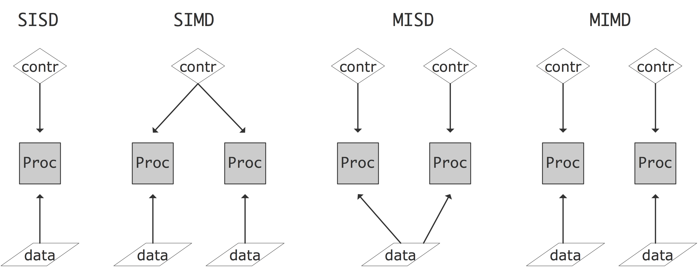</img>
<p name="caption">
FIGURE 2.5: The four classes of the Flynn's taxonomy
</p>

</float>
</figure>
<!-- environment: figure end embedded generator -->
<!-- environment: description start embedded generator -->
<!-- TranslatingLineGenerator description ['description'] -->
<li>
[SISD] Single Instruction Single Data: this is the traditional
  CPU architecture: at any one time only a single instruction is
  executed, operating on a single data item.
<li>
[SIMD] Single Instruction Multiple Data: in this computer type
  there can be multiple processors, each operating on its own data
  item, but they are all executing the same instruction on that data
  item. Vector computers (section&nbsp;
2.3.1.1
) are typically also
  characterized as SIMD.
<li>
[MISD] Multiple Instruction Single Data. No architectures
  answering to this description exist; one could argue that
  redundant computations for safety-critical applications are an
  example of MISD.
<li>
[MIMD] Multiple Instruction Multiple Data: here multiple CPUs
  operate on multiple data items, each executing independent
  instructions. Most current parallel computers are of this
  type.
</ul>
</description>
<!-- environment: description end embedded generator -->
<p name="switchToTextMode">

We will now discuss SIMD and MIMD architectures in more detail.
</p>

<h3><a id="SIMD">2.3.1</a> SIMD</h3>
<p name=crumbs>
crumb trail:  > <a href="parallel.html">parallel</a> > <a href="parallel.html#ParallelComputersArchitectures">Parallel Computers Architectures</a> > <a href="parallel.html#SIMD">SIMD</a>
</p>

<p name="switchToTextMode">

<!-- environment: lulu start embedded generator -->
</p>
<!-- TranslatingLineGenerator lulu ['lulu'] -->
<!-- environment: wrapfigure start embedded generator -->
</p>
<!-- TranslatingLineGenerator wrapfigure ['wrapfigure'] -->
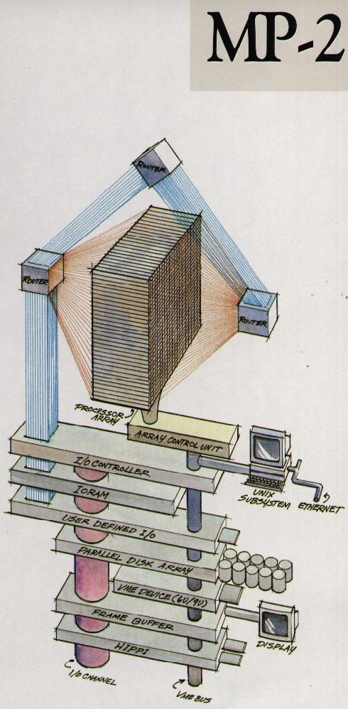</img>
<p name="caption">
WRAPFIGURE 2.6: Architecture of the MasPar 2 array processors
</p>

</wrapfigure>
<!-- environment: wrapfigure end embedded generator -->
<p name="switchToTextMode">
{r}{2in}
</p name="lulu">

</lulu>
<!-- environment: lulu end embedded generator -->
<p name="switchToTextMode">
Parallel computers of the SIMD type apply the same operation
simultaneously to a number of data items. The design of the CPUs of
such a computer can be quite simple, since the arithmetic unit does
not need separate logic and instruction decoding units: all CPUs
execute the same operation in lock step.
This makes SIMD computers excel at operations on arrays, such as
<!-- environment: verbatim start embedded generator -->
</p>
for (i=0; i&lt;N; i++) a[i] = b[i]+c[i];
</pre>
</verbatim>
<!-- environment: verbatim end embedded generator -->
<p name="switchToTextMode">
and, for this reason, they are also often called 
  processors}. Scientific codes can often be written so that
a large fraction of the time is spent in array operations.
</p>

<p name="switchToTextMode">
On the other hand, there are operations that can not can be executed
efficiently on an array processor. For instance, evaluating a number
of terms of a recurrence $x_{i+1}=ax_i+b_i$ involves that many
additions and multiplications, but they alternate, so only one
operation of each type can be processed at any one time. There are no
arrays of numbers here that are simultaneously the input of an
addition or multiplication.
</p>

<p name="switchToTextMode">
In order to allow for different instruction streams on
different parts of the data, the processor would have a `mask bit'
that could be set to prevent execution of instructions. In code, this
typically looks like
<!-- environment: verbatim start embedded generator -->
</p>
where (x&gt;0) {
  x[i] = sqrt(x[i])
</pre>
</verbatim>
<!-- environment: verbatim end embedded generator -->
<p name="switchToTextMode">
The programming model where identical operations are applied to a
number of data items simultaneously, is known as
<i>data parallelism</i>
.
</p>

<!-- environment: notlulu start embedded generator -->

</notlulu>
<!-- environment: notlulu end embedded generator -->
<p name="switchToTextMode">
Such array operations can occur in the context of physics simulations,
but another important source is graphics applications. For this
application, the processors in an array processor can be much weaker
than the processor in a PC: often they are in fact bit processors,
capable of operating on only a single bit at a time. Along these
lines, 
<i>ICL</i>

<!-- index -->
 had the 4096 processor
DAP&nbsp;
<a href="https://pages.tacc.utexas.edu/~eijkhout/istc/html/bibliography.html#DAP:79a">[DAP:79a]</a>
 in the 1980s, and
<i>Goodyear</i>
<!-- index -->
 built a 16K processor
MPP&nbsp;
<a href="https://pages.tacc.utexas.edu/~eijkhout/istc/html/bibliography.html#Batcher:85a">[Batcher:85a]</a>
 in the 1970s.
</p>

<p name="switchToTextMode">
Later, the 
<i>Connection Machine</i>
 (CM-1, CM-2, CM-5) were quite popular.
While the first Connection Machine had bit processors (16 to a chip),
the later models had traditional processors capable of floating point
arithmetic, and were not true SIMD architectures. All were based on a
hyper-cube interconnection network; see section&nbsp;
2.7.5
. Another
manufacturer that had a commercially successful array processor was
<i>MasPar</i>
; figure&nbsp;
2.6
 illustrates the architecture.
You clearly see the single control unit for a square array of processors,
plus a network for doing global operations.
</p>

<p name="switchToTextMode">
Supercomputers based on array processing do not exist anymore, but the
notion of SIMD lives on in various guises. For instance, 
<span title="acronym" ><i>GPUs</i></span>
are SIMD-based, enforced through their 
<i>CUDA</i>
programming language. Also, the 
<i>Intel Xeon Phi</i>
 has a
strong SIMD component. While early SIMD architectures were motivated
by minimizing the number of transistors necessary, these modern
co-processors are motivated by 
<i>power efficiency</i>
considerations. Processing instructions (known as
<i>instruction issue</i>
) is actually expensive compared to a
floating point operation, in time, energy, and chip real estate needed.
Using SIMD is then a way to economize on the last two measures.
</p>

<h4><a id="Pipelining">2.3.1.1</a> Pipelining</h4>
<p name=crumbs>
crumb trail:  > <a href="parallel.html">parallel</a> > <a href="parallel.html#ParallelComputersArchitectures">Parallel Computers Architectures</a> > <a href="parallel.html#SIMD">SIMD</a> > <a href="parallel.html#Pipelining">Pipelining</a>
</p>

<!-- index -->
<p name="switchToTextMode">

A number of computers have been based on a 
  processor} or 
<i>pipeline processor</i>
 design. The first
commercially successful supercomputers, the Cray-1 and the Cyber-205
were of this type. In recent times, the Cray-X1 and the NEC SX series
have featured vector pipes. The `Earth Simulator'
computer&nbsp;
<a href="https://pages.tacc.utexas.edu/~eijkhout/istc/html/bibliography.html#Sato2004">[Sato2004]</a>
, which led the TOP500
(section&nbsp;
2.11.6
) for 3&nbsp;years, was based on NEC&nbsp;SX
processors.  The general idea behind pipelining was described in
section&nbsp;
1.2.1.3
.
</p>

<p name="switchToTextMode">
While supercomputers based on pipeline processors are in a distinct
minority, pipelining is now mainstream in the superscalar CPUs that
are the basis for 
<i>clusters</i>
. A&nbsp;typical CPU has pipelined floating point
units, often with separate units for addition and multiplication; see
section&nbsp;
1.2.1.3
.
</p>

<p name="switchToTextMode">
However, there are some important differences between pipelining in a
modern superscalar CPU and in, more old-fashioned, vector units.  The
pipeline units in these vector computers are not integrated floating
point units in the CPU, but can better be considered as attached
vector units to a CPU that itself has a floating point unit. The
vector unit has 
<!-- index -->
<i>vector registers</i>
<!-- environment: footnoteenv start embedded generator -->
</p>
<!-- TranslatingLineGenerator footnoteenv ['footnoteenv'] -->
  {The Cyber205 was an exception, with direct-to-memory architecture.}
</p name="footnoteenv">
)
</footnoteenv>
<!-- environment: footnoteenv end embedded generator -->
<p name="switchToTextMode">
with a typical
length of 64 floating point numbers; there is typically no `vector
cache'. The logic in vector units is also simpler, often addressable
by explicit vector instructions. Superscalar CPUs, on the other hand,
are fully integrated in the CPU and geared towards exploiting data
streams in unstructured code.
</p>

<h4><a id="TrueSIMDinCPUsandGPUs">2.3.1.2</a> True SIMD in CPUs and GPUs</h4>
<p name=crumbs>
crumb trail:  > <a href="parallel.html">parallel</a> > <a href="parallel.html#ParallelComputersArchitectures">Parallel Computers Architectures</a> > <a href="parallel.html#SIMD">SIMD</a> > <a href="parallel.html#TrueSIMDinCPUsandGPUs">True SIMD in CPUs and GPUs</a>
</p>

<!-- index -->
<p name="switchToTextMode">

True SIMD array processing can be found in modern CPUs and GPUs, in
both cases inspired by the parallelism that is needed in graphics
applications.
</p>

<p name="switchToTextMode">
Modern CPUs from Intel
<!-- index -->
 and AMD
<!-- index -->
, as well as
PowerPC
<!-- index -->
 chips, have 
multiple instances of an operation simultaneously. On Intel processors
this is known as 
<i>SSE</i>
 or 
<i>AVX</i>
. These extensions were
originally intended for graphics processing, where often the same
operation needs to be performed on a large number of pixels. Often,
the data has to be a total of, say, 128 bits, and this can be divided
into two 64-bit reals, four&nbsp;32-bit reals, or a larger number of even
smaller chunks such as 4&nbsp;bits.
</p>

<p name="switchToTextMode">
The 
<span title="acronym" ><i>AVX</i></span>
 instructions are based on up to
512-bit wide SIMD, that is, eight floating point numbers can be
processed simultaneously. Just as single floating point operations
operate on data in registers (section&nbsp;
1.3.3
),
vector operations use 
<!-- index -->
<i>vector registers</i>
The locations in a vector register are sometimes referred to as 
</p>

<p name="switchToTextMode">
The use of SIMD is mostly
motivated by power considerations. Decoding instructions is actually
more power consuming than executing them, so SIMD parallelism is a way
to save power.
</p>

<p name="switchToTextMode">
Current compilers can generate 
<span title="acronym" ><i>SSE</i></span>
 or 
<span title="acronym" ><i>AVX</i></span>
instructions automatically;
sometimes it is also possible for the user to insert pragmas, for
instance with the Intel compiler:
<!-- environment: verbatim start embedded generator -->
</p>
void func(float *restrict c, float *restrict a,
          float *restrict b, int n)
{
#pragma vector always
  for (int i=0; i&lt;n; i++)
    c[i] = a[i] * b[i];
}
</pre>
</verbatim>
<!-- environment: verbatim end embedded generator -->
<p name="switchToTextMode">
Use of these extensions often requires data to be aligned with cache
line boundaries (section&nbsp;
1.3.4.7
), so there are special
allocate and free calls that return aligned memory.
</p>

<p name="switchToTextMode">
Version 4 of 
<i>OpenMP</i>

<!-- index -->
 also has directives for indicating SIMD parallelism.
</p>

<!-- environment: comment start embedded generator -->

</comment>
<!-- environment: comment end embedded generator -->
<p name="switchToTextMode">

Array processing on a larger scale can be found in
<i>GPU</i>
s. A&nbsp;
<span title="acronym" ><i>GPU</i></span>
 contains a large number of simple
processors, ordered in groups of&nbsp;32, typically. Each processor group
is limited to executing the same instruction. Thus, this is true
example of&nbsp;
<span title="acronym" ><i>SIMD</i></span>
 processing.
For further discussion, see section&nbsp;
2.9.3
.
</p>

<h3><a id="MIMDSPMDcomputers">2.3.2</a> MIMD / SPMD computers</h3>
<p name=crumbs>
crumb trail:  > <a href="parallel.html">parallel</a> > <a href="parallel.html#ParallelComputersArchitectures">Parallel Computers Architectures</a> > <a href="parallel.html#MIMDSPMDcomputers">MIMD / SPMD computers</a>
</p>


<!-- index -->
<p name="switchToTextMode">

By far the most common parallel computer architecture these days is
called 
<span title="acronym" ><i>MIMD</i></span>
: the processors execute multiple, possibly differing
instructions, each on their own data. Saying that the instructions
differ does not mean that the processors actually run different
programs: most of these machines operate in 
<i>SPMD</i>
 mode, where the
programmer starts up the same executable on the parallel processors.
Since the different instances of the executable can take differing
paths through conditional statements, or execute differing numbers of
iterations of loops, they will in general not be completely in sync as
they were on 
<span title="acronym" ><i>SIMD</i></span>
 machines. If this lack of synchronization is
due to processors working on different amounts of data, it is
called 
<i>load unbalance</i>
, and it is a major source of less
than perfect 
<i>speedup</i>
; see section&nbsp;
2.10
.
</p>

<p name="switchToTextMode">
There is a great variety in 
<span title="acronym" ><i>MIMD</i></span>
 computers. Some of the aspects
concern the way memory is organized, and the network that connects the
processors. Apart from these hardware aspects, there are also
differing ways of programming these machines. We will see all these
aspects below. Many machines these days are
called 
<i>clusters</i>
. They can be built out of custom or
commodity processors (if they consist of PCs, running Linux, and
connected with 
<i>Ethernet</i>
, they are referred to as 
{clusters}&nbsp;
<a href="https://pages.tacc.utexas.edu/~eijkhout/istc/html/bibliography.html#Gropp:BeowulfBook">[Gropp:BeowulfBook]</a>
); since the processors are
independent they are examples of the 
<span title="acronym" ><i>MIMD</i></span>
 or 
<span title="acronym" ><i>SPMD</i></span>
 model.
</p>

<!-- index -->
<p name="switchToTextMode">

<h3><a id="Thecommoditizationofsupercomputers">2.3.3</a> The commoditization of supercomputers</h3>
<p name=crumbs>
crumb trail:  > <a href="parallel.html">parallel</a> > <a href="parallel.html#ParallelComputersArchitectures">Parallel Computers Architectures</a> > <a href="parallel.html#Thecommoditizationofsupercomputers">The commoditization of supercomputers</a>
</p>

</p>

<p name="switchToTextMode">
In the 1980s and 1990s supercomputers were radically different from
personal computer and mini or super-mini computers such as the DEC PDP
and VAX series. The SIMD vector computers had one
(
<i>CDC Cyber205</i>
 or 
<i>Cray-1</i>

<!-- index -->
), or
at most a few (
<i>ETA-10</i>
, 
<i>Cray-2</i>

<!-- index -->
,
<i>Cray X/MP</i>
, 
<i>Cray Y/MP</i>
), extremely
powerful processors, often a vector processor. Around the mid-1990s
clusters with thousands of simpler (micro) processors started taking
over from the machines with relative small numbers of vector pipes
(see 
<a href=http://www.top500.org/lists/1994/11>http://www.top500.org/lists/1994/11</a>
). At first these
microprocessors (
<i>IBM Power series</i>
,
<i>Intel i860</i>
, 
<i>MIPS</i>
,
<i>DEC Alpha</i>
) were still much more powerful than `home
computer' processors, but later this distinction also faded to an
extent. Currently, many of the most powerful clusters are powered by
essentially the same Intel Xeon and AMD Opteron chips that are
available on the consumer market. Others use IBM Power Series or other
`server' chips. See section&nbsp;
2.11.6
 for illustrations of
this history since 1993.
</p>

<h2><a id="Differenttypesofmemoryaccess">2.4</a> Different types of memory access</h2>
<p name=crumbs>
crumb trail:  > <a href="parallel.html">parallel</a> > <a href="parallel.html#Differenttypesofmemoryaccess">Different types of memory access</a>
</p>
<p name="switchToTextMode">

In the introduction we defined a parallel computer as a setup where
multiple processors work together on the same problem. In all but the
simplest cases this means that these processors need access to a joint
pool of data. In the previous chapter you saw how, even on a single
processor, memory can have a hard time keeping up with processor demands.
For parallel machines, where potentially several processors
want to access the same memory location, this problem becomes even
worse. We can characterize parallel machines by the approach they take
to the problem of reconciling multiple accesses, by multiple
processes, to a joint pool of data.
</p>

<p name="switchToTextMode">
The main distinction here is between
<i>distributed memory</i>
 and
<i>shared memory</i>
. With distributed memory, each processor
has its own physical memory, and more importantly its own
<i>address space</i>
.
<!-- environment: figure start embedded generator -->
</p>
<!-- TranslatingLineGenerator figure ['figure'] -->
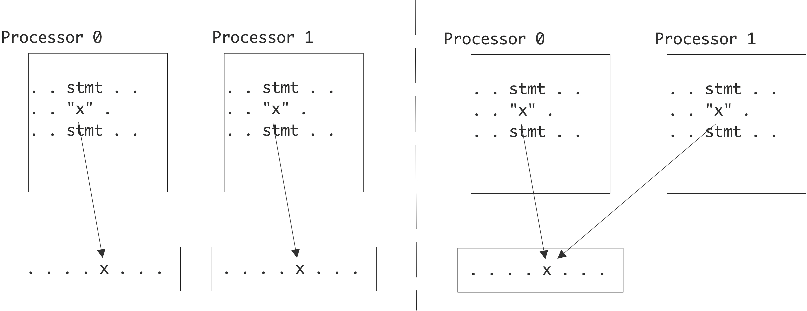</img>
<p name="switchToTextMode">
  \caption{References to identically named variables in the
    distributed and shared memory case}

</float>
</figure>
<!-- environment: figure end embedded generator -->
<p name="switchToTextMode">
Thus, if two processors refer to a variable&nbsp;
<tt>x</tt>
, they access a
variable in their own local memory. On the other hand, with shared
memory, all processors access the same memory; we also say that they
have a 
<i>shared address space</i>
. Thus, if two processors
both refer to a variable&nbsp;
<tt>x</tt>
, they access the same memory location.
</p>

<h3><a id="SymmetricMulti-Processors:UniformMemoryAccess">2.4.1</a> Symmetric Multi-Processors: Uniform Memory Access</h3>
<p name=crumbs>
crumb trail:  > <a href="parallel.html">parallel</a> > <a href="parallel.html#Differenttypesofmemoryaccess">Different types of memory access</a> > <a href="parallel.html#SymmetricMulti-Processors:UniformMemoryAccess">Symmetric Multi-Processors: Uniform Memory Access</a>
</p>

<p name="switchToTextMode">

Parallel programming is fairly simple if any processor can access any
memory location. For this reason, there is a strong incentive for
manufacturers to make architectures where processors see no difference
between one memory location and another: any memory location is
accessible to every processor, and
the access times do not differ. This is called 
<i>UMA</i>
, and
the programming model for
architectures on this principle is often called 
<i>SMP</i>
.
</p>

<p name="switchToTextMode">
There are a few ways to realize an SMP architecture.  Current desktop
computers can have a few processors accessing a shared memory through
a single memory bus; for instance Apple markets a model with 2
six-core processors. Having a memory bus that is shared between
processors works only for small numbers of processors; for larger
numbers one can use a 
<i>crossbar</i>
 that connects multiple
processors to multiple memory banks; see section&nbsp;
2.7.6
.
2.26
 shows
2.27
 show
<i>butterfly exchange</i>
, which is built up out of simple
</p>

<p name="switchToTextMode">
On 
<i>multicore</i>
 processors there is uniform memory access of
a different type: the cores typically have a
<i>shared cache</i>
, typically the L3 or L2 cache.
</p>

<h3><a id="Non-UniformMemoryAccess">2.4.2</a> Non-Uniform Memory Access</h3>
<p name=crumbs>
crumb trail:  > <a href="parallel.html">parallel</a> > <a href="parallel.html#Differenttypesofmemoryaccess">Different types of memory access</a> > <a href="parallel.html#Non-UniformMemoryAccess">Non-Uniform Memory Access</a>
</p>

<p name="switchToTextMode">

The 
<span title="acronym" ><i>UMA</i></span>
 approach based on shared memory
is obviously limited to a small number of
processors. The crossbar networks are expandable, so they would seem
the best choice.
However, in practice one puts
processors with a local memory in a configuration with an exchange
network. This leads to a situation where a processor can access its
own memory fast, and other processors' memory slower.
This is one case of so-called 
<i>NUMA</i>
: a strategy that
uses physically distributed memory, abandoning the uniform access
time, but maintaining the logically shared address space: each processor can
still access any memory location.
</p>

<!-- environment: figure start embedded generator -->
<!-- TranslatingLineGenerator figure ['figure'] -->
<!-- environment: quote start embedded generator -->
<!-- TranslatingLineGenerator quote ['quote'] -->
</img>
</p name="quote">
</quote>
<!-- environment: quote end embedded generator -->
<p name="caption">
FIGURE 2.8: Non-uniform memory access in a four-socket motherboard
</p>

</float>
</figure>
<!-- environment: figure end embedded generator -->
<p name="switchToTextMode">

Figure&nbsp;
2.8
 illustrates 
<span title="acronym" ><i>NUMA</i></span>
 in the case of the
four-socket motherboard of the 
<i>TACC Ranger cluster</i>
. Each chip has its
own memory (8Gb) but the motherboard acts as if the processors have
access to a shared pool of 32Gb. Obviously, accessing the memory of
another processor is slower than accessing local memory. In addition,
note that each processor has three connections that could be used to
access other memory, but the rightmost two chips use one connection to
connect to the network. This means that accessing each other's memory
can only happen through an intermediate processor, slowing down the
transfer, and tying up that processor's connections.
</p>

<p name="switchToTextMode">
While the 
<span title="acronym" ><i>NUMA</i></span>
 approach is convenient for the programmer, it offers some
challenges for the system. Imagine that two different processors each
have a copy of a memory location in their local (cache) memory. If one
processor alters the content of this location, this change has to be
propagated to the other processors. If both processors try to alter
the content of the one memory location, the behavior of the program
can become undetermined.
</p>

<p name="switchToTextMode">
Keeping copies of a memory location synchronized is known as
<i>cache coherence</i>
 (see section&nbsp;
1.4.1
 for further details);
a multi-processor system using it is sometimes called a
`cache-coherent NUMA' or 
<i>ccNUMA</i>
 architecture.
</p>

<p name="switchToTextMode">
Taking NUMA to its extreme, it is possible to have a software layer
that makes network-connected processors appear to operate on shared memory.
This is known as 
<i>distributed shared memory</i>
or 
<i>virtual shared memory</i>
. In this approach
a 
<i>hypervisor</i>
 offers a shared memory API, by translating
system calls to distributed memory management. This shared memory
API can be utilized by the 
<i>Linux kernel</i>
, which
can support 4096 threads.
</p>

<p name="switchToTextMode">
Among current vendors only SGI (the 
<i>UV</i>

<!-- index -->
 line) and
Cray (the 
<i>XE6</i>

<!-- index -->
) market products with large scale
NUMA. Both offer strong support for 
<i>PGAS</i>
 languages; see
section&nbsp;
2.6.5
. There are vendors, such as 
<i>ScaleMP</i>
,
that offer a software solution to distributed shared memory on regular clusters.
</p>

<h3><a id="Logicallyandphysicallydistributedmemory">2.4.3</a> Logically and physically distributed memory</h3>
<p name=crumbs>
crumb trail:  > <a href="parallel.html">parallel</a> > <a href="parallel.html#Differenttypesofmemoryaccess">Different types of memory access</a> > <a href="parallel.html#Logicallyandphysicallydistributedmemory">Logically and physically distributed memory</a>
</p>
<p name="switchToTextMode">

The most extreme solution to the memory access problem is to offer
memory that is not just physically, but that is also logically
distributed: the processors have their own address space, and can not
directly see another processor's memory. This approach is often called
`distributed memory', but this term is unfortunate, since we really
have to consider the questions separately whether memory 
<i>is</i>

distributed and whether is 
<i>appears</i>
 distributed.
Note that NUMA also has physically
distributed memory; the distributed nature of it is just not apparent
to the programmer.
</p>

<p name="switchToTextMode">
With logically 
<i>and</i>
 physically distributed memory, the only way
one processor can exchange information with another is through passing
information explicitly through the network. You will see more about
this in section&nbsp;
2.6.3.3
.
</p>

<p name="switchToTextMode">
This type of architecture has the significant advantage that it can
scale up to large numbers of processors: the
<i>IBM BlueGene</i>
 has been built with over 200,000
processors. On the other hand, this is also the hardest kind of
parallel system to program.
</p>

<p name="switchToTextMode">
Various kinds of hybrids between the above types exist. In fact,
most modern clusters will have 
<span title="acronym" ><i>NUMA</i></span>
 nodes, but a distributed
memory network between nodes.
</p>

<h2><a id="Granularityofparallelism">2.5</a> Granularity of parallelism</h2>
<p name=crumbs>
crumb trail:  > <a href="parallel.html">parallel</a> > <a href="parallel.html#Granularityofparallelism">Granularity of parallelism</a>
</p>
<!-- TranslatingLineGenerator file ['file'] -->
<p name="switchToTextMode">

Let us take a look at the question `how much parallelism is there in a
program execution'.
There is the theoretical question of the
absolutely maximum number of actions that can be taken in parallel,
but we also need to wonder what kind of actions these are and how hard
it is to actually execute them in parallel, as well has how efficient
the resulting execution is.
</p>

<p name="switchToTextMode">
The discussion in this section will be mostly on a conceptual level;
in section~
2.6
 we will go into some detail
on how parallelism can actually be programmed.
</p>

<h3><a id="Dataparallelism">2.5.1</a> Data parallelism</h3>
<p name=crumbs>
crumb trail:  > <a href="parallel.html">parallel</a> > <a href="parallel.html#Granularityofparallelism">Granularity of parallelism</a> > <a href="parallel.html#Dataparallelism">Data parallelism</a>
</p>

<p name="switchToTextMode">

It is fairly common for a program that have loops with a simple body,
that gets executed for all elements in a large data set:
<!-- environment: verbatim start embedded generator -->
</p>
for (i=0; i&lt;1000000; i++)
  a[i] = 2*b[i];
</pre>
</verbatim>
<!-- environment: verbatim end embedded generator -->
<p name="switchToTextMode">
Such code is considered an instance of
<i>data parallelism</i>
 or
<i>fine-grained parallelism</i>
. If you had as many
processors as array elements, this code would look very simple: each
processor would execute the statement
<!-- environment: verbatim start embedded generator -->
</p>
a = 2*b
</pre>
</verbatim>
<!-- environment: verbatim end embedded generator -->
<p name="switchToTextMode">
on its local data.
</p>

<p name="switchToTextMode">
If your code consists predominantly of such loops
over arrays, it can be executed efficiently with all processors in
lockstep. Architectures based on this idea, where the processors can
in fact 
<i>only</i>
 work in lockstep, have existed, see
section&nbsp;
2.3.1
. Such fully parallel operations on arrays
appear in computer graphics, where every pixel of an image is processed
independently. For this reason, 
<span title="acronym" ><i>GPUs</i></span>
(section&nbsp;
2.9.3
)
are strongly based on data parallelism.
</p>

<p name="switchToTextMode">
Continuing the above example for a little bit, consider the operation
</p>

<!-- environment: displayalgorithm start embedded generator -->
<p>\For{$0\leq i&lt</p>
\mathrm{max}$}{    $i\_{\mathrm{left}}=\mod(i-1,\mathrm{max})$\\    $i\_{\mathrm{right}}=\mod(i+1,\mathrm{max})$\\    $a\_i = (b\_{i\_{\mathrm{left}}}+b\_{i\_{\mathrm{right}}})/2$}
<!-- environment: displayalgorithm end embedded generator -->
<p name="switchToTextMode">

On a data parallel machine, that could be implemented as
</p>

<!-- environment: displayalgorithm start embedded generator -->
\SetKw{shiftleft}{shiftleft}  \SetKw{shiftright}{shiftright}  $bleft \leftarrow \shiftright(b)$\\  $bright \leftarrow \shiftleft(b)$\\  $a \leftarrow (bleft+bright)/2$
<!-- environment: displayalgorithm end embedded generator -->
<p name="switchToTextMode">

where the 
<tt>shiftleft/right</tt>
 instructions cause a data item to be
sent to the processor with a number lower or higher by&nbsp;1.
For this second example to be efficient, it is necessary that each
processor can communicate quickly with its immediate neighbors, and
the first and last processor with each other.
</p>

<p name="switchToTextMode">
In
various contexts such a `blur' operations in graphics, it makes sense
to have operations on 2D data:
</p>

<!-- environment: displayalgorithm start embedded generator -->
<p>\For{$0&lt;i&lt;m$}{    \For{$0&lt;j&lt</p>
n$}{$a\_{ij}\leftarrow (b\_{ij-1}+b\_{ij+1}+b\_{i-1j}+b\_{i+1j})$}}
<!-- environment: displayalgorithm end embedded generator -->
<p name="switchToTextMode">

and consequently processors have be able to move data to neighbors in
a 2D grid.
</p>

<h3><a id="Instruction-levelparallelism">2.5.2</a> Instruction-level parallelism</h3>
<p name=crumbs>
crumb trail:  > <a href="parallel.html">parallel</a> > <a href="parallel.html#Granularityofparallelism">Granularity of parallelism</a> > <a href="parallel.html#Instruction-levelparallelism">Instruction-level parallelism</a>
</p>

<p name="switchToTextMode">

In 
<i>ILP</i>
, the parallelism is still on the level of individual
instructions, but these need not be similar. For instance, in
</p>

<!-- environment: displayalgorithm start embedded generator -->
$a\leftarrow b+c$\\ $d\leftarrow e*f$
<!-- environment: displayalgorithm end embedded generator -->
<p name="switchToTextMode">

the two assignments are independent, and can therefore be executed
simultaneously. This kind of parallelism is too cumbersome for humans
to identify, but 
<!-- index -->
compilers are very good at this. In
fact, identifying 
<span title="acronym" ><i>ILP</i></span>
 is crucial for getting good performance out
of modern 
<i>superscalar</i>
 CPUs.
</p>

<h3><a id="Task-levelparallelism">2.5.3</a> Task-level parallelism</h3>
<p name=crumbs>
crumb trail:  > <a href="parallel.html">parallel</a> > <a href="parallel.html#Granularityofparallelism">Granularity of parallelism</a> > <a href="parallel.html#Task-levelparallelism">Task-level parallelism</a>
</p>

<!-- index -->
<p name="switchToTextMode">

At the other extreme from data and instruction-level parallelism,
<i>task parallelism</i>
that can be executed in parallel. As an example, searching in a tree
data structure could be implemented as follows:
</p>

<!-- environment: displayprocedure start embedded generator -->
\SetKw{optimal}{optimal}\SetKw{exit}{exit}\SetKw{search}{SearchInTree}\SetKw{parl}{parallel}  \eIf{\optimal(root)}{\exit}  {\parl: \search(leftchild),\search(rightchild)}
<!-- environment: displayprocedure end embedded generator -->
<p name="switchToTextMode">
{SearchInTree}{root}
</p>

<p name="switchToTextMode">
The search tasks in this example are not synchronized, and the number
of tasks is not fixed: it can grow arbitrarily. In practice, having
too many tasks is not a good idea, since processors are most efficient
if they work on just a single task. Tasks can then be scheduled as
follows:
</p>

<!-- environment: displayalgorithm start embedded generator -->
<p>\While{there are tasks left}{    wait until a processor becomes inactive</p>
\\    spawn a new task on it}
<!-- environment: displayalgorithm end embedded generator -->
<p name="switchToTextMode">

(There is a subtle distinction between the two previous
pseudo-codes. In the first, tasks were self-scheduling: each task
spawned off two new ones. The second code is an example of
the 
<i>manager-worker paradigm</i>
: there is one central task which
lives for the duration of the code, and which spawns and assigns the
worker tasks.)
</p>

<p name="switchToTextMode">
Unlike in the data parallel example above, the assignment of data to
processor is not determined in advance in such a scheme. Therefore,
this mode of parallelism is most suited for thread-programming, for
instance through the OpenMP library; section&nbsp;
2.6.2
.
</p>

<p name="switchToTextMode">
Let us consider a more serious example of task-level parallelism.
</p>

<p name="switchToTextMode">
A finite element mesh is, in the simplest case, a collection of
triangles that covers a 2D object. Since angles that are too acute
should be avoided, the 
<i>Delauney mesh refinement</i>
 process
can take certain triangles, and replace them by better shaped
ones. This is illustrated in figure&nbsp;
2.9
: the black
triangles violate some angle condition, so either they themselves get
subdivided, or they are joined with some neighboring ones (rendered
in grey) and then jointly redivided.
</p>

<!-- environment: figure start embedded generator -->
<!-- TranslatingLineGenerator figure ['figure'] -->
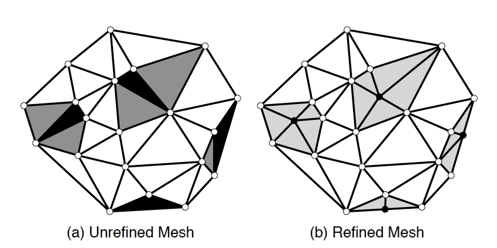</img>
<p name="caption">
FIGURE 2.9: A mesh before and after refinement
</p>

</float>
</figure>
<!-- environment: figure end embedded generator -->
<p name="switchToTextMode">

In pseudo-code, this can be implemented as in
figure&nbsp;
2.10
.
<!-- environment: figure start embedded generator -->
</p>
<!-- TranslatingLineGenerator figure ['figure'] -->
<!-- environment: displayalgorithm start embedded generator -->
<p>Mesh m = /* read in initial mesh */ \\WorkList wl; \\wl.add(mesh.badTriangles()); \\\While { (wl.size() != 0) } {Element e = wl.get(); //get bad triangle \\if (e no longer in mesh) continue; \\Cavity c = new Cavity(e); \\c.expand(); \\c.retriangulate(); \\mesh.update(c); \\wl.add(c.badTriangles())</p>
\\}
<!-- environment: displayalgorithm end embedded generator -->
<p name="caption">
FIGURE 2.10: Task queue implementation of Delauney refinement
</p>

</float>
</figure>
<!-- environment: figure end embedded generator -->
<p name="switchToTextMode">
(This figure and code are to be found in&nbsp;
<a href="https://pages.tacc.utexas.edu/~eijkhout/istc/html/bibliography.html#Kulkami:howmuch">[Kulkami:howmuch]</a>
,
which also contains a more detailed discussion.)
</p>

<p name="switchToTextMode">

It is clear that this algorithm is driven by a worklist (or
<i>task queue</i>
) data structure
that has to be shared between all processes. Together with the dynamic
assignment of data to processes, this implies that this type of
<i>irregular parallelism</i>
 is suited to shared memory
programming, and is much harder to do with distributed memory.
</p>

<!-- index -->
<p name="switchToTextMode">

<h3><a id="Convenientlyparallelcomputing">2.5.4</a> Conveniently parallel computing</h3>
<p name=crumbs>
crumb trail:  > <a href="parallel.html">parallel</a> > <a href="parallel.html#Granularityofparallelism">Granularity of parallelism</a> > <a href="parallel.html#Convenientlyparallelcomputing">Conveniently parallel computing</a>
</p>
</p>

<p name="switchToTextMode">
In certain contexts, a simple, often single processor, calculation needs to
be performed on many different inputs.
Since the computations have no data dependencies and
need not be done in any particular sequence, this is often called
<i>embarrassingly parallel</i>
 or 
  parallel} computing.
This sort of parallelism can happen at several levels. In examples
such as calculation of the 
<i>Mandelbrot set</i>
 or evaluating
moves in a 
<i>chess</i>
 game, a subroutine-level computation is
invoked for many parameter values.
On a coarser level it can be the case that a simple program needs to
be run for many inputs. In this case, the overall calculation
is referred to as a 
<i>parameter sweep</i>
.
</p>

<h3><a id="Medium-graindataparallelism">2.5.5</a> Medium-grain data parallelism</h3>
<p name=crumbs>
crumb trail:  > <a href="parallel.html">parallel</a> > <a href="parallel.html#Granularityofparallelism">Granularity of parallelism</a> > <a href="parallel.html#Medium-graindataparallelism">Medium-grain data parallelism</a>
</p>

<p name="switchToTextMode">

The above strict realization of data parallelism assumes that there
are as many processors as data elements. In practice, processors will
have much more memory than that, and the number of data elements is
likely to be far larger than the processor count of even the largest
computers. Therefore, arrays are grouped onto processors in subarrays.
The code then looks like this:
<!-- environment: verbatim start embedded generator -->
</p>
my_lower_bound = // some processor-dependent number
my_upper_bound = // some processor-dependent number
for (i=my_lower_bound; i&lt;my_upper_bound; i++)
  // the loop body goes here
</pre>
</verbatim>
<!-- environment: verbatim end embedded generator -->
<p name="switchToTextMode">

This model has some characteristics of data parallelism, since the
operation performed is identical on a large number of data items. It
can also be viewed as task parallelism, since each processor executes
a larger section of code, and does not necessarily operate on equal
sized chunks of data.
</p>

<h3><a id="Taskgranularity">2.5.6</a> Task granularity</h3>
<p name=crumbs>
crumb trail:  > <a href="parallel.html">parallel</a> > <a href="parallel.html#Granularityofparallelism">Granularity of parallelism</a> > <a href="parallel.html#Taskgranularity">Task granularity</a>
</p>
<!-- index -->
<p name="switchToTextMode">

In the previous subsections we considered different level of finding
parallel work, or different ways of dividing up work so as to find
parallelism. There is another way of looking at this: we define
the 
<i>granularity</i>
 of a parallel scheme as the amount of work (or
the task size) that a processing element can perform before having to
communicate or synchronize with other processing elements.
</p>

<p name="switchToTextMode">
In 
<span title="acronym" ><i>ILP</i></span>
 we are dealing with very fine-grained parallelism, on the
order of a single instruction or just a few instructions. In true task
parallelism the granularity is much coarser.
</p>

<p name="switchToTextMode">
The interesting case here is data parallelism, where we have the
freedom to choose the task sizes. On 
<span title="acronym" ><i>SIMD</i></span>
 machines we can choose
a granularity of a single instruction, but, as you saw in
section&nbsp;
2.5.5
, operations can be grouped into
medium-sized tasks. Thus, operations that are data parallel can be
executed on distributed memory clusters, given the right balance
between the number of processors and total problem size.
</p>

<!-- environment: exercise start embedded generator -->
<!-- TranslatingLineGenerator exercise ['exercise'] -->
  Discuss choosing the right granularity for a data parallel operation
  such as averaging on a two-dimensional grid. Show that there is a
<i>surface-to-volume</i>
 effect: the amount of communication is
  of a lower order than the computation. This means that, even if
  communication is much slower than computation, increasing the task
  size will still give a balanced execution.
</p name="exercise">
</exercise>
<!-- environment: exercise end embedded generator -->
<p name="switchToTextMode">

Unfortunately, choosing a large task size to overcome slow
communication may aggravate another problem: aggregating these
operations may give tasks with varying running time, causing
<i>load imbalance</i>
.  One solution here is to use an
<i>overdecomposition</i>
 of the problem: create more tasks then
there are processing elements, and assign multiple tasks to a
processor (or assign tasks dynamically) to even out irregular running
times. This is known as 
<i>dynamic scheduling</i>
,
and the examples in section&nbsp;
2.5.3
 illustrate this;
see also section&nbsp;
2.6.2.1
.
An example of 
<i>overdecomposition</i>
 in linear algebra is
discussed in section&nbsp;
6.3.2
.
</p>

<!-- index -->
<p name="switchToTextMode">

</p>

<h2><a id="Parallelprogramming">2.6</a> Parallel programming</h2>
<p name=crumbs>
crumb trail:  > <a href="parallel.html">parallel</a> > <a href="parallel.html#Parallelprogramming">Parallel programming</a>
</p>
<!-- TranslatingLineGenerator file ['file'] -->
<p name="switchToTextMode">


</p>

<p name="switchToTextMode">
Parallel programming is more complicated than sequential
programming. While for sequential programming most programming
languages operate on similar principles (some exceptions such as
functional or logic languages aside), there is a variety of ways of
tackling parallelism. Let's explore some of the concepts and practical
aspects.
</p>

<p name="switchToTextMode">
There are various approaches to parallel programming. First of all,
there does not seem to be any hope of a
<i>parallelizing compiler</i>
that can
automagically transform a sequential program into a parallel
one. Apart from the problem of figuring out which operations are
independent, the main
problem is that the problem of locating data in a parallel context is
very hard. A~compiler would need to consider the whole code, rather
than a subroutine at a time. Even then, results have been
disappointing.
</p>

<p name="switchToTextMode">
More productive is the approach where the user writes mostly a
sequential program, but gives some indications about what computations
can be parallelized, and how data should be distributed. Indicating
parallelism of operations explicitly is done in OpenMP
(section~
2.6.2
); indicating the data distribution and
leaving parallelism to the compiler and runtime is the basis for PGAS
languages (section~
2.6.5
). Such approaches work best with
shared memory.
</p>

<p name="switchToTextMode">
By far the hardest way to program in parallel, but with the best
results in practice, is to expose the parallelism to the programmer
and let the programmer manage everything explicitly. This approach is
necessary in the case of distributed memory programming. We will have
a general discussion of distributed programming in
section~
2.6.3.1
; section~
2.6.3.3
 will
discuss the MPI library.
</p>

<h3><a id="Threadparallelism">2.6.1</a> Thread parallelism</h3>
<p name=crumbs>
crumb trail:  > <a href="parallel.html">parallel</a> > <a href="parallel.html#Parallelprogramming">Parallel programming</a> > <a href="parallel.html#Threadparallelism">Thread parallelism</a>
</p>

<!-- index -->
<!-- TranslatingLineGenerator file ['file'] -->
<p name="switchToTextMode">

As a preliminary to OpenMP (section~
2.6.2
), we will briefly
go into `threads'.
</p>

<p name="switchToTextMode">
To explain what a 
<i>thread</i>
 is, we first need to get
technical about what a 
<i>process</i>
 is.
A~unix process corresponds to the execution of a single program.
Thus, it has in memory:
<!-- environment: itemize start embedded generator -->
</p>
<!-- TranslatingLineGenerator itemize ['itemize'] -->
<li>
The program code, in the form of machine language instructions;
<li>
A 
<i>heap</i>
, containing for instance arrays that were
  created with 
<tt>malloc</tt>
;
<li>
A stack with quick-changing information, such as the
<i>program counter</i>
 that indicates what instruction is
  currently being executed, and data items with local scope, as well
  as intermediate results from computations.
</ul>
</itemize>
<!-- environment: itemize end embedded generator -->
<p name="switchToTextMode">
This process can have multiple threads; these are similar
in that they see the same program code and heap,
but they have their own stack. Thus, a thread is an independent
`strand' of execution through a process.
</p>

<p name="switchToTextMode">
Processes can belong to different users, or be different
programs that a single user is running concurrently, so they
have their own data space.
On the other hand, threads are part of one process and
therefore share the process heap.
Threads can have some
private data, for instance by have their own data stack, but
their main characteristic is that they can collaborate on the same
data.
</p>

<h4><a id="Thefork-joinmechanism">2.6.1.1</a> The fork-join mechanism</h4>
<p name=crumbs>
crumb trail:  > <a href="parallel.html">parallel</a> > <a href="parallel.html#Parallelprogramming">Parallel programming</a> > <a href="parallel.html#Threadparallelism">Thread parallelism</a> > <a href="parallel.html#Thefork-joinmechanism">The fork-join mechanism</a>
</p>
<p name="switchToTextMode">

Threads are dynamic, in the sense that they can be created during program
execution. (This is different from the MPI model, where every processor
run one process, and they are all created and destroyed at the same time.)
When a program starts, there is one thread active: the 
<i>main thread</i>
.
Other threads are created by 
the main thread can wait for their completion.
<!-- environment: figure start embedded generator -->
</p>
<!-- TranslatingLineGenerator figure ['figure'] -->
</img>
<p name="caption">
FIGURE 2.11: Thread creation and deletion during parallel execution
</p>

</float>
</figure>
<!-- environment: figure end embedded generator -->
<p name="switchToTextMode">
This is known as the 
<i>fork-join</i>
 model; it is illustrated
in figure~
2.11
. A~group of threads that is
forked from the same thread and active simultaneously is known
as a 
<i>thread team</i>
.
</p>

<h4><a id="Hardwaresupportforthreads">2.6.1.2</a> Hardware support for threads</h4>
<p name=crumbs>
crumb trail:  > <a href="parallel.html">parallel</a> > <a href="parallel.html#Parallelprogramming">Parallel programming</a> > <a href="parallel.html#Threadparallelism">Thread parallelism</a> > <a href="parallel.html#Hardwaresupportforthreads">Hardware support for threads</a>
</p>
<p name="switchToTextMode">

Threads as they were described above are a software
construct. Threading was possible before parallel computers existed;
they were for instance used to handle independent activities in an
<span title="acronym" ><i>OS</i></span>
.
In the absence of parallel hardware, the 
<span title="acronym" ><i>OS</i></span>
 would handle
the threads through 
<i>multitasking</i>
 or 
  slicing}: each thread would regularly get to use the 
<span title="acronym" ><i>CPU</i></span>
 for a
fraction of a second. (Technically, the Linux kernel treads processes
and threads though the 
<i>task</i>
 concept; tasks are kept in
a list, and are regularly activated or de-activated.)
</p>

<p name="switchToTextMode">
This can lead to higher processor utilization,
since the instructions of one thread can be processed
while another thread is waiting for data.
(On traditional CPUs,
switching between threads is somewhat expensive (an exception is the
<i>hyperthreading</i>
 mechanism) but on 
<span title="acronym" ><i>GPUs</i></span>
 it is not, and
in fact they 
<i>need</i>
 many threads to attain high performance.)
</p>

<p name="switchToTextMode">
On modern 
<i>multicore</i>
 processors there is an obvious way of
supporting threads: having one thread per core gives a parallel
execution that uses your hardware efficiently. The shared memory allows the threads to all
see the same data. This can also lead to problems; see
section~
2.6.1.5
.
</p>

<h4><a id="Threadsexample">2.6.1.3</a> Threads example</h4>
<p name=crumbs>
crumb trail:  > <a href="parallel.html">parallel</a> > <a href="parallel.html#Parallelprogramming">Parallel programming</a> > <a href="parallel.html#Threadparallelism">Thread parallelism</a> > <a href="parallel.html#Threadsexample">Threads example</a>
</p>

<!-- index -->
<p name="switchToTextMode">

The following example,
which is strictly Unix-centric and will not work on Windows,
is a clear illustration of the 
<i>fork-join</i>
 model.
It uses the 
<i>pthreads</i>
 library to spawn
a number of tasks that all update a global counter. Since threads
share the same memory space, they indeed see and update the same
memory location.
<!-- environment: verbatim start embedded generator -->
</p>
#include &lt;stdlib.h&gt;
#include &lt;stdio.h&gt;
#include "pthread.h"


int sum=0;


void adder() {
  sum = sum+1;
  return;
}


#define NTHREADS 50
int main() {
  int i;
  pthread_t threads[NTHREADS];
  printf("forking\n");
  for (i=0; i&lt;NTHREADS; i++)
    if (pthread_create(threads+i,NULL,&adder,NULL)!=0) return i+1;
  printf("joining\n");
  for (i=0; i&lt;NTHREADS; i++)
    if (pthread_join(threads[i],NULL)!=0) return NTHREADS+i+1;
  printf("Sum computed: %d\n",sum);


  return 0;
}
</pre>
</verbatim>
<!-- environment: verbatim end embedded generator -->
<p name="switchToTextMode">
The fact that this code gives the right result is a
coincidence: it
only happens because updating the variable is so much quicker than
creating the thread. (On a multicore processor the chance of errors
will greatly increase.) If we artificially increase the time for the
update, we will no longer get the right result:
<!-- environment: verbatim start embedded generator -->
</p>
void adder() {
  int t = sum; sleep(1); sum = t+1;
  return;
}
</pre>
</verbatim>
<!-- environment: verbatim end embedded generator -->
<p name="switchToTextMode">
Now all threads read out the value of 
<tt>sum</tt>
, wait a while
(presumably calculating something) and then update.
</p>

<p name="switchToTextMode">
This can be fixed by having a 
<i>lock</i>
 on the code region that should be
`mutually exclusive':
<!-- environment: verbatim start embedded generator -->
</p>
pthread_mutex_t lock;


void adder() {
  int t;
  pthread_mutex_lock(&lock);
  t = sum; sleep(1); sum = t+1;
  pthread_mutex_unlock(&lock);
  return;
}


int main() {
  ....
  pthread_mutex_init(&lock,NULL);


</pre>
</verbatim>
<!-- environment: verbatim end embedded generator -->
<p name="switchToTextMode">
The lock and unlock commands guarantee that no two threads can
interfere with each other's update.
</p>

<p name="switchToTextMode">
For more information on pthreads, see for instance

<a href=https://computing.llnl.gov/tutorials/pthreads>https://computing.llnl.gov/tutorials/pthreads</a>
.
</p>

<!-- index -->
<p name="switchToTextMode">

<h4><a id="Contexts">2.6.1.4</a> Contexts</h4>
<p name=crumbs>
crumb trail:  > <a href="parallel.html">parallel</a> > <a href="parallel.html#Parallelprogramming">Parallel programming</a> > <a href="parallel.html#Threadparallelism">Thread parallelism</a> > <a href="parallel.html#Contexts">Contexts</a>
</p>

<!-- index -->
</p>

<p name="switchToTextMode">
In the above example and its version with the 
<tt>sleep</tt>
 command
we glanced over the fact that there were two types of data involved.
First of all, the variable&nbsp;
<tt>s</tt>
 was created outside the thread spawning
part. Thus, this variable was 
<i>shared</i>

<!-- index -->
.
</p>

<p name="switchToTextMode">
On the other hand, the variable&nbsp;
<tt>t</tt>
 was created once in each spawned thread.
We call this 
<i>private</i>

<!-- index -->
 data.
</p>

<p name="switchToTextMode">
The totality of all data that a thread can access is called
its 
<i>context</i>
.  It contains private and shared data, as well as
temporary results of computations that the thread is working
on.
(It also contains the program counter and stack pointer. If
    you don't know what those are, don't worry.)
</p>

<p name="switchToTextMode">
It is quite possible to create more threads than a processor has cores,
so a processor may need to switch between the execution of different threads.
This is known as a 
</p>

<p name="switchToTextMode">
Context switches are not for free on regular CPUs, so they only pay off
if the 
<i>granularity</i>
 of the threaded work is high enough.
The exceptions to this story are:
<!-- environment: itemize start embedded generator -->
</p>
<!-- TranslatingLineGenerator itemize ['itemize'] -->
<li>
CPUs that have hardware support for multiple threads, for
  instance through 
<i>hyperthreading</i>
  (section&nbsp;
2.6.1.9
), or as in the
<i>Intel Xeon Phi</i>
 (section&nbsp;
2.9
);
<li>
<span title="acronym" ><i>GPUs</i></span>
, which in fact rely on fast context switching (section&nbsp;
2.9.3
);
<li>
certain other `exotic' architectures such as the 
<i>Cray XMT</i>
  (section&nbsp;
2.8
).
</ul>
</itemize>
<!-- environment: itemize end embedded generator -->
<p name="switchToTextMode">

<!-- index -->
</p>

<h4><a id="Raceconditions,threadsafety,andatomicoperations">2.6.1.5</a> Race conditions, thread safety, and atomic operations</h4>
<p name=crumbs>
crumb trail:  > <a href="parallel.html">parallel</a> > <a href="parallel.html#Parallelprogramming">Parallel programming</a> > <a href="parallel.html#Threadparallelism">Thread parallelism</a> > <a href="parallel.html#Raceconditions,threadsafety,andatomicoperations">Race conditions, thread safety, and atomic operations</a>
</p>
<!-- index -->
<!-- index -->

<p name="switchToTextMode">

Shared memory makes life easy for the programmer, since every
processor has access to all of the data: no explicit data traffic
between the processor is needed. On the other hand, multiple
processes/processors can also write to the same variable, which is a
source of potential problems.
</p>

<p name="switchToTextMode">
Suppose that two processes both try to increment an integer
variable&nbsp;
<tt>I</tt>
:
<!-- environment: tabbing start embedded generator -->
</p>
<p style="margin-left: 40px">
<!-- TranslatingLineGenerator tabbing ['tabbing'] --><br>
<p name="switchToTextMode"><br>
  process 1: <br>
<tt>I=I+2</tt><br>
<br>
  process 2: <br>
<tt>I=I+3</tt><br>
<br>
</p>
<!-- environment: tabbing end embedded generator -->
<p name="switchToTextMode">
This is a legitimate activity if the variable is an accumulator for
values computed by independent processes.
The result of these two updates
depends on the sequence in which the processors read and
write the variable.
</p>

<!-- environment: figure start embedded generator -->
<!-- TranslatingLineGenerator figure ['figure'] -->
<!-- environment: tabular start embedded generator -->
<table>
<tr>
<td>
<!-- TranslatingLineGenerator tabular ['tabular'] -->
    </td></tr>
<tr><td>
    scenario 1.</td><td> scenario 1.</td><td>
    scenario 3.\ </td></tr>
<tr><td>
    \multicolumn{6}{|c|}{$
<tt>I</tt>
=0$}\ </td></tr>
<tr><td>
    read $
<tt>I</tt>
=0$</td><td>read $
<tt>I</tt>
=0$</td><td>
    read $
<tt>I</tt>
=0$</td><td>read $
<tt>I</tt>
=0$</td><td>
    read $
<tt>I</tt>
=0$</td><td> </td></tr>
<tr><td>
    compute $
<tt>I</tt>
=2$</td><td>compute $
<tt>I</tt>
=3$</td><td>
    compute $
<tt>I</tt>
=2$</td><td>compute $
<tt>I</tt>
=3$</td><td>
    compute $
<tt>I</tt>
=2$</td><td> </td></tr>
<tr><td>
    write $
<tt>I</tt>
=2$</td><td> </td><td> </td><td>write $
<tt>I</tt>
=3$</td><td>write $
<tt>I</tt>
=2$</td><td> </td></tr>
<tr><td>
    </td><td>write $
<tt>I</tt>
=3$</td><td>write $
<tt>I</tt>
=2$</td><td> </td><td> </td><td>read $
<tt>I</tt>
=2$</td></tr>
<tr><td>
    </td><td></td><td></td><td></td><td></td><td>compute $
<tt>I</tt>
=5$</td></tr>
<tr><td>
    </td><td></td><td></td><td></td><td></td><td>write $
<tt>I</tt>
=5$</td></tr>
<tr><td>
    </td></tr>
<tr><td>
    \multicolumn{2}{|c|}{$
<tt>I</tt>
=3$}</td><td> \multicolumn{2}{|c|}{$
<tt>I</tt>
=2$}</td><td>
    \multicolumn{2}{|c|}{$
<tt>I</tt>
=5$}\ </td></tr>
<tr><td>
</td>
</tr>
</table>
<!-- environment: tabular end embedded generator -->
<p name="caption">
FIGURE 2.12: Three executions of a data race scenario
</p>

</float>
</figure>
<!-- environment: figure end embedded generator -->
<p name="switchToTextMode">

Figure&nbsp;
2.12
 illustrates
three scenarios.
Such a scenario, where the final result depends on which thread
executes first, is known as a 
<i>race condition</i>
 or
<i>data race</i>
<!-- index -->
.
A&nbsp;formal definition would be:
<!-- environment: quotation start embedded generator -->
</p>
<!-- TranslatingLineGenerator quotation ['quotation'] -->
  We talk of a a 
<i>data race</i>
 if there are two statements&nbsp;$S_1,S_2$,
<!-- environment: itemize start embedded generator -->
</p>
<!-- TranslatingLineGenerator itemize ['itemize'] -->
<li>
that are not causally related;
<li>
that both access a location&nbsp;$L$; and
<li>
at least one access is a write.
</ul>
</itemize>
<!-- environment: itemize end embedded generator -->
</quotation>
<!-- environment: quotation end embedded generator -->
<p name="switchToTextMode">

A very practical example of such conflicting updates is the inner
product calculation:
<!-- environment: verbatim start embedded generator -->
</p>
for (i=0; i&lt;1000; i++)
   sum = sum+a[i]*b[i];
</pre>
</verbatim>
<!-- environment: verbatim end embedded generator -->
<p name="switchToTextMode">
Here the products are truly independent, so we could choose to have
the loop iterations do them in parallel, for instance by their own
threads. However, all threads need to update the same variable&nbsp;
<tt>sum</tt>
.
</p>

<p name="switchToTextMode">
Code that behaves the same whether it's executed
sequentially or threaded is called 
As you can see from the above examples, a lack of thread safety is
typically due to the treatment of shared data. This implies that
the more your program uses local data, the higher the chance
that it is thread safe. Unfortunately, sometimes the threads need
to write to shared/global data, for instance when the program
does a 
<i>reduction</i>

<!-- index -->
.
</p>

<p name="switchToTextMode">
There are essentially two ways of solving this problem.
One is that we declare such updates of a shared variable a
<i>critical section</i>
 of code. This means that the instructions
in the critical section (in the inner product example `read 
<tt>sum</tt>

from memory, update it, write back to memory') can be executed by only
one thread at a time. In particular, they need to be executed
entirely by one thread before any other thread can start them so the
ambiguity problem above will not arise. Of course, the above code
fragment is so common that systems like OpenMP
(section&nbsp;
2.6.2
) have a dedicated mechanism for it, by
declaring it a 
<i>reduction</i>

<!-- index -->
operation.
</p>

<p name="switchToTextMode">
Critical sections can for instance be implemented through the
<i>semaphore</i>
mechanism&nbsp;
<a href="https://pages.tacc.utexas.edu/~eijkhout/istc/html/bibliography.html#Dijkstra:semaphores">[Dijkstra:semaphores]</a>
. Surrounding each critical
section there will be two atomic operations controlling a semaphore, a
sign post.
The first process to encounter the semaphore will lower it, and start
executing the critical section. Other processes see the lowered
semaphore, and wait. When the first process finishes the critical
section, it executes the second instruction which raises the
semaphore, allowing one of the waiting processes to enter the critical
section.
</p>

<p name="switchToTextMode">
The other way to resolve common access to shared data is to set a
temporary 
<i>lock</i>
 on certain memory areas. This solution may
be preferable, if common execution of the critical section is likely,
for instance if it implements writing to a database or hash table. In
this case, one process entering a
critical section would prevent any other process from writing
to the data, even if they might be writing to different locations;
locking the specific data item being accessed is then a better
solution.
</p>

<p name="switchToTextMode">
The problem with locks is that they typically exist on the operating
system level. This means that they are relatively slow. Since we hope that
iterations of the inner product loop above would be executed at the
speed of the floating point unit, or at least that of the memory bus,
this is unacceptable.
</p>

<p name="switchToTextMode">
One implementation of
this is 
<i>transactional memory</i>
, where the hardware itself
supports atomic operations; the term derives from database
transactions, which have a similar integrity problem. In transactional
memory, a process will perform a normal memory update, unless the
processor detects a conflict with an update from another process. In
that case, the updates (`transactions') are canceled and retried with
one processor locking the memory and the other waiting for the
lock. This is an elegant solution; however, canceling the transaction
may carry a certain cost of 
<i>pipeline flushing</i>
(section&nbsp;
1.2.5
) and
cache line invalidation (section&nbsp;
1.4.1
).
</p>

<!-- index -->
<p name="switchToTextMode">

<h4><a id="Memorymodelsandsequentialconsistency">2.6.1.6</a> Memory models and sequential consistency</h4>
<p name=crumbs>
crumb trail:  > <a href="parallel.html">parallel</a> > <a href="parallel.html#Parallelprogramming">Parallel programming</a> > <a href="parallel.html#Threadparallelism">Thread parallelism</a> > <a href="parallel.html#Memorymodelsandsequentialconsistency">Memory models and sequential consistency</a>
</p>

</p>

<p name="switchToTextMode">
The above signaled phenomenon of a 
<i>race condition</i>
means that the result of some programs can be non-deterministic,
depending on the sequence in which instructions are executed.
There is a further factor that comes into play, and which is
called the 
<i>memory model</i>
 that a processor and/or a
language uses&nbsp;
<a href="https://pages.tacc.utexas.edu/~eijkhout/istc/html/bibliography.html#AdveBoehm:memorymodels">[AdveBoehm:memorymodels]</a>
.
The memory model controls how the activity of one thread or core
is seen by other threads or cores.
</p>

<p name="switchToTextMode">
As an example, consider
<!-- environment: tabbing start embedded generator -->
</p>
<p style="margin-left: 40px">
<!-- TranslatingLineGenerator tabbing ['tabbing'] --><br>
<p name="switchToTextMode"><br>
  initially: <br>
<tt>A=B=0;</tt><br>
, then<br>
  process 1: <br>
<tt>A=1; x = B;</tt><br>
<br>
  process 2: <br>
<tt>B=1; y = A;</tt><br>
<br>
</p>
<!-- environment: tabbing end embedded generator -->
<p name="switchToTextMode">
As above, we have three scenarios, which we describe by
giving a global sequence of statements:
</p>

<!-- environment: tabular start embedded generator -->
<table>
<tr>
<td>
<!-- TranslatingLineGenerator tabular ['tabular'] -->
  </td></tr>
<tr><td>
  scenario 1.</td><td> scenario 2.</td><td> scenario 3.\ </td></tr>
<tr><td>
  $
<tt>A</tt>
\leftarrow 
<tt>1</tt>
$</td><td>$
<tt>A</tt>
\leftarrow 
<tt>1</tt>
$</td><td>$
<tt>B</tt>
\leftarrow 
<tt>1</tt>
$</td></tr>
<tr><td>
  $
<tt>x</tt>
\leftarrow 
<tt>B</tt>
$</td><td>$
<tt>B</tt>
\leftarrow 
<tt>1</tt>
$</td><td>$
<tt>y</tt>
\leftarrow 
<tt>A</tt>
$</td></tr>
<tr><td>
  $
<tt>B</tt>
\leftarrow 
<tt>1</tt>
$</td><td>$
<tt>x</tt>
\leftarrow 
<tt>B</tt>
$</td><td>$
<tt>A</tt>
\leftarrow 
<tt>1</tt>
$</td></tr>
<tr><td>
  $
<tt>y</tt>
\leftarrow 
<tt>A</tt>
$</td><td>$
<tt>y</tt>
\leftarrow 
<tt>A</tt>
$</td><td>$
<tt>x</tt>
\leftarrow 
<tt>B</tt>
$</td></tr>
<tr><td>
  </td></tr>
<tr><td>
  $x=0, y=1$</td><td> $x=1,y=1$</td><td> $x=1,y=0$</td></tr>
<tr><td>
  </td></tr>
<tr><td>
</td>
</tr>
</table>
<!-- environment: tabular end embedded generator -->
<p name="switchToTextMode">

(In the second scenario, statements 1,2 can be reversed, as can 3,4,
without change in outcome.)
</p>

<p name="switchToTextMode">
The three different outcomes can be characterized as being computed by a global ordering
on the statements that respects the local orderings. This is known as 
  consistency}: the parallel outcome is consistent with a sequential execution that
interleaves the parallel computations, respecting their local statement orderings.
</p>

<p name="switchToTextMode">
Maintaining sequential consistency is expensive: it means that any change to a variable
immediately needs to be visible on all other threads, or that any access to a variable
on a thread
needs to consult all other threads. We discussed this in section&nbsp;
1.4.1
.
</p>

<p name="switchToTextMode">
In a 
<i>relaxed memory model</i>
 it is possible to get a result that
is not sequentially consistent. Suppose, in the above example,
that the compiler decides to reorder the
statements for the two processes, since the read and write are independent.
In effect we get a fourth scenario:
</p>

<!-- environment: tabular start embedded generator -->
<table>
<tr>
<td>
<!-- TranslatingLineGenerator tabular ['tabular'] -->
  </td></tr>
<tr><td>
  scenario 4.\ </td></tr>
<tr><td>
  $
<tt>x</tt>
\leftarrow 
<tt>B</tt>
$</td></tr>
<tr><td>
  $
<tt>y</tt>
\leftarrow 
<tt>A</tt>
$</td></tr>
<tr><td>
  $
<tt>A</tt>
\leftarrow 
<tt>1</tt>
$</td></tr>
<tr><td>
  $
<tt>B</tt>
\leftarrow 
<tt>1</tt>
$</td></tr>
<tr><td>
  </td></tr>
<tr><td>
  $x=0, y=0$</td></tr>
<tr><td>
  </td></tr>
<tr><td>
</td>
</tr>
</table>
<!-- environment: tabular end embedded generator -->
<p name="switchToTextMode">

leading to the result $x=0,y=0$, which was not possible under the
sequentially consistent model above. (There are algorithms for finding
such dependencies&nbsp;
<a href="https://pages.tacc.utexas.edu/~eijkhout/istc/html/bibliography.html#KrishnaYelick:cycledetect">[KrishnaYelick:cycledetect]</a>
.)
</p>

<p name="switchToTextMode">

Sequential consistency implies that
<!-- environment: verbatim start embedded generator -->
</p>
integer n
n = 0
!$omp parallel shared(n)
n = n + 1
!$omp end parallel
</pre>
</verbatim>
<!-- environment: verbatim end embedded generator -->
<p name="switchToTextMode">
should have the same effect as
<!-- environment: verbatim start embedded generator -->
</p>
n = 0
n = n+1 ! for processor 0
n = n+1 ! for processor 1
        ! et cetera
</pre>
</verbatim>
<!-- environment: verbatim end embedded generator -->
<p name="switchToTextMode">
With sequential consistency it is no longer necessary to declare
atomic operations or critical sections; however, this puts strong
demands on the implementation of the model, so it may lead to
inefficient code.
</p>

<!-- environment: comment start embedded generator -->

</comment>
<!-- environment: comment end embedded generator -->
<p name="switchToTextMode">

<h4><a id="Affinity">2.6.1.7</a> Affinity</h4>
<p name=crumbs>
crumb trail:  > <a href="parallel.html">parallel</a> > <a href="parallel.html#Parallelprogramming">Parallel programming</a> > <a href="parallel.html#Threadparallelism">Thread parallelism</a> > <a href="parallel.html#Affinity">Affinity</a>
</p>
<!-- index -->
</p>

<p name="switchToTextMode">
Thread programming is very flexible, effectively creating parallelism
as needed. However, a large part of this book is about the importance
of data movement in scientific computations, and that aspect can not
be ignored in thread programming.
</p>

<p name="switchToTextMode">
In the context of a multicore processor, any thread can be scheduled
to any core, and there is no immediate problem with this. However, if
you care about high performance, this flexibility can have unexpected
costs. There are various reasons why you want to certain threads to
run only on certain cores. Since the 
<span title="acronym" ><i>OS</i></span>
 is allowed to
<i>migrate threads</i>
<!-- index -->
, may be you simply want
threads to stay in place.
</p>

<!-- environment: itemize start embedded generator -->
<!-- TranslatingLineGenerator itemize ['itemize'] -->
<li>
If a thread migrates to a different core, and that core has its
  own cache, you lose the contents of the original cache, and
  unnecessary memory transfers will occur.
<li>
If a thread migrates, there is nothing to prevent the OS from
  putting two threads on one core, and leaving another core completely
  unused. This obviously leads to less than perfect speedup, even if
  the number of threads equals the number of cores.
</ul>
</itemize>
<!-- environment: itemize end embedded generator -->
<p name="switchToTextMode">

We call 
<i>affinity</i>
 the mapping between
threads (
<i>thread affinity</i>

<!-- index -->
)
or processes (
<i>process   affinity</i>

<!-- index -->
) and cores.
Affinity is usually expressed as a 
<i>mask</i>

<!-- index -->
: a
description of the locations where a thread is allowed to run.
</p>

<p name="switchToTextMode">
As an example, consider a two-socket node, where each socket has four
cores.
</p>

<p name="switchToTextMode">
With two threads and socket affinity we have the following affinity mask:\\
<!-- environment: tabular start embedded generator -->
</p>
<table>
<tr>
<td>
<!-- TranslatingLineGenerator tabular ['tabular'] -->
  </td></tr>
<tr><td>
  thread </td><td> socket 0 </td><td> socket 1</td></tr>
<tr><td>
  </td></tr>
<tr><td> </td></tr>
<tr><td>
  0 </td><td> 0-1-2-3 </td><td> </td></tr>
<tr><td>
  1 </td><td> </td><td> 4-5-6-7 </td></tr>
<tr><td>
  </td></tr>
<tr><td>
</td>
</tr>
</table>
<!-- environment: tabular end embedded generator -->
<p name="switchToTextMode">

With core affinity the mask depends on the affinity type. The typical
strategies are `close' and `spread'. With 
<i>close affinity</i>
, the mask
could be:\\
<!-- environment: tabular start embedded generator -->
</p>
<table>
<tr>
<td>
<!-- TranslatingLineGenerator tabular ['tabular'] -->
  </td></tr>
<tr><td>
  thread </td><td> socket 0 </td><td> socket 1</td></tr>
<tr><td>
  </td></tr>
<tr><td> </td></tr>
<tr><td>
  0 </td><td> 0 </td><td> </td></tr>
<tr><td>
  1 </td><td> \hphantom{0-}1 </td><td> </td></tr>
<tr><td>
  </td></tr>
<tr><td>
</td>
</tr>
</table>
<!-- environment: tabular end embedded generator -->
<p name="switchToTextMode">

Having two threads on the same socket means that they probably share
an L2&nbsp;cache, so this strategy is appropriate if they share data.
</p>

<p name="switchToTextMode">
On the other hand, with 
<i>spread affinity</i>
 the threads
are placed further apart:\\
<!-- environment: tabular start embedded generator -->
</p>
<table>
<tr>
<td>
<!-- TranslatingLineGenerator tabular ['tabular'] -->
  </td></tr>
<tr><td>
  thread </td><td> socket 0 </td><td> socket 1</td></tr>
<tr><td>
  </td></tr>
<tr><td> </td></tr>
<tr><td>
  0 </td><td> 0 </td><td> </td></tr>
<tr><td>
  1 </td><td> </td><td> 4 </td></tr>
<tr><td>
  </td></tr>
<tr><td>
</td>
</tr>
</table>
<!-- environment: tabular end embedded generator -->
<p name="switchToTextMode">

This strategy is better for bandwidth-bound applications, since now
each thread has the bandwidth of a socket, rather than having to share
it in the `close' case.
</p>

<p name="switchToTextMode">
If you assign all cores, the close and spread strategies lead to
different arrangements:\\
<!-- environment: tabular start embedded generator -->
</p>
<table>
<tr>
<td>
<!-- TranslatingLineGenerator tabular ['tabular'] -->
  </td></tr>
<tr><td>
  socket 0 </td><td> socket 1</td></tr>
<tr><td>
  </td></tr>
<tr><td> </td></tr>
<tr><td>
  0-1-2-3 </td><td> </td></tr>
<tr><td>
  </td><td> 4-5-6-7</td></tr>
<tr><td>
  </td></tr>
<tr><td>
</td>
</tr>
</table>
<!-- environment: tabular end embedded generator -->
<p name="switchToTextMode">

versus\\
<!-- environment: tabular start embedded generator -->
</p>
<table>
<tr>
<td>
<!-- TranslatingLineGenerator tabular ['tabular'] -->
  </td></tr>
<tr><td>
  socket 0 </td><td> socket 1</td></tr>
<tr><td>
  </td></tr>
<tr><td> </td></tr>
<tr><td>
  0-2-4-6 </td><td> </td></tr>
<tr><td>
  </td><td> 1-3-5-7 </td></tr>
<tr><td>
  </td></tr>
<tr><td>
</td>
</tr>
</table>
<!-- environment: tabular end embedded generator -->
<p name="switchToTextMode">


<b>Affinity and data access patterns</b><br>

</p>

<p name="switchToTextMode">
Affinity can also be considered as a strategy of binding execution to data.
</p>

<p name="switchToTextMode">
Consider this code:
<!-- environment: verbatim start embedded generator -->
</p>
for (i=0; i&lt;ndata; i++) // this loop will be done by threads
  x[i] = ....
for (i=0; i&lt;ndata; i++) // as will this one
  ... = .... x[i] ...
</pre>
</verbatim>
<!-- environment: verbatim end embedded generator -->
<p name="switchToTextMode">
The first loop, by accessing elements of&nbsp;$x$, bring memory into cache
or page table. The second loop accesses elements in the same order, so
having a fixed affinity is the right decision for performance.
</p>

<p name="switchToTextMode">
In other cases a fixed mapping is not the right solution:
<!-- environment: verbatim start embedded generator -->
</p>
for (i=0; i&lt;ndata; i++) // produces loop
  x[i] = ....
for (i=0; i&lt;ndata; i+=2) // use even indices
  ... = ... x[i] ...
for (i=1; i&lt;ndata; i+=2) // use odd indices
  ... = ... x[i] ...
</pre>
</verbatim>
<!-- environment: verbatim end embedded generator -->
<p name="switchToTextMode">
In this second example, either the program has to be transformed, or
the programmer has to maintain in effect a 
<i>task queue</i>
.
</p>

<p name="switchToTextMode">


<b>First touch</b><br>

</p>

<p name="switchToTextMode">
It is natural to think of affinity in terms of `put the
execution where the data is'. However, in practice the opposite view
sometimes makes sense.  For instance, figure&nbsp;
2.8
showed how the shared memory of a cluster node can actually be
distributed. Thus, a thread can be attached to a socket, but data can
be allocated by the 
<span title="acronym" ><i>OS</i></span>
 on any of the sockets.  The mechanism that
is often used by the 
<span title="acronym" ><i>OS</i></span>
 is called the 
<i>first-touch</i>
policy:
<!-- environment: itemize start embedded generator -->
</p>
<!-- TranslatingLineGenerator itemize ['itemize'] -->
<li>
When the program allocates data, the 
<span title="acronym" ><i>OS</i></span>
 does not actually
  create it;
<li>
instead, the memory area for the data is created the first
  time a thread accesses it;
<li>
thus, the first thread to touch the area in effect causes the
  data to be allocated on the memory of its socket.
</ul>
</itemize>
<!-- environment: itemize end embedded generator -->
<p name="switchToTextMode">

<!-- environment: exercise start embedded generator -->
</p>
<!-- TranslatingLineGenerator exercise ['exercise'] -->
  Explain the problem with the following code:
<!-- environment: verbatim start embedded generator -->
</p>
// serial initialization
for (i=0; i&lt;N; i++)
  a[i] = 0.;
#pragma omp parallel for
for (i=0; i&lt;N; i++)
  a[i] = b[i] + c[i];
</pre>
</verbatim>
<!-- environment: verbatim end embedded generator -->
</exercise>
<!-- environment: exercise end embedded generator -->
<!-- environment: answer start embedded generator -->

</answer>
<!-- environment: answer end embedded generator -->
<p name="switchToTextMode">

For an in-depth discussion of memory policies, see&nbsp;
<a href="https://pages.tacc.utexas.edu/~eijkhout/istc/html/bibliography.html#Lameter:NUMAq">[Lameter:NUMAq]</a>
.
</p>

<!-- index -->
<p name="switchToTextMode">

<h4><a id="CilkPlus">2.6.1.8</a> Cilk Plus</h4>
<p name=crumbs>
crumb trail:  > <a href="parallel.html">parallel</a> > <a href="parallel.html#Parallelprogramming">Parallel programming</a> > <a href="parallel.html#Threadparallelism">Thread parallelism</a> > <a href="parallel.html#CilkPlus">Cilk Plus</a>
</p>
</p>

<p name="switchToTextMode">
Other programming models based on threads exist. For instance,
Intel 
<i>Cilk Plus</i>
 (
<a href=http://www.cilkplus.org/>http://www.cilkplus.org/</a>
)
is a set of extensions of C/C++ with which a
programmer can create threads.
</p>

<p name="switchToTextMode">
\hbox{%
  \kern.5\unitindent
<!-- environment: minipage start embedded generator -->
</p>
<!-- TranslatingLineGenerator minipage ['minipage'] -->
<!-- environment: tabbing start embedded generator -->
</p>
<p style="margin-left: 40px">
<!-- TranslatingLineGenerator tabbing ['tabbing'] --><br>
<p name="switchToTextMode"><br>
      \textit{Sequential code:}<br>
      int fib(int n)\{ <br>
      \&gt;if (n&lt;2) return 1;<br>
      \&gt;else \{<br>
      \&gt;\&gt;int rst=0;<br>
      \&gt;\&gt;rst += fib(n-1);<br>
      \&gt;\&gt;rst += fib(n-2);<br>
      \&gt;\&gt;return rst;<br>
      \&gt;\&gt;\}<br>
      \}<br>
</p>
<!-- environment: tabbing end embedded generator -->
</minipage>
<!-- environment: minipage end embedded generator -->
<p name="switchToTextMode">
{2in}\tt
  \kern.5\unitindent
<!-- environment: minipage start embedded generator -->
</p>
<!-- TranslatingLineGenerator minipage ['minipage'] -->
<!-- environment: tabbing start embedded generator -->
</p>
<p style="margin-left: 40px">
<!-- TranslatingLineGenerator tabbing ['tabbing'] --><br>
<p name="switchToTextMode"><br>
      \textit{Cilk code:}<br>
      cilk int fib(int n)\{ <br>
      \&gt;if (n&lt;2) return 1;<br>
      \&gt;else \{<br>
      \&gt;\&gt;int rst=0;<br>
      \&gt;\&gt;rst += cilk\_spawn fib(n-1);<br>
      \&gt;\&gt;rst += cilk\_spawn fib(n-2);<br>
      \&gt;\&gt;cilk\_sync;<br>
      \&gt;\&gt;return rst;<br>
      \&gt;\&gt;\}<br>
      \}<br>
</p>
<!-- environment: tabbing end embedded generator -->
</minipage>
<!-- environment: minipage end embedded generator -->
<p name="switchToTextMode">
{2in}\tt
}
</p>

<p name="switchToTextMode">
In this example, the variable 
<tt>rst</tt>
 is updated by two, potentially
independent threads. The semantics of this update, that is, the
precise definition of how conflicts such as simultaneous writes are
resolved, is defined by 
<i>sequential consistency</i>
; see
section&nbsp;
2.6.1.6
.
</p>

<h4><a id="Hyperthreadingversusmulti-threading">2.6.1.9</a> Hyperthreading versus multi-threading</h4>
<p name=crumbs>
crumb trail:  > <a href="parallel.html">parallel</a> > <a href="parallel.html#Parallelprogramming">Parallel programming</a> > <a href="parallel.html#Threadparallelism">Thread parallelism</a> > <a href="parallel.html#Hyperthreadingversusmulti-threading">Hyperthreading versus multi-threading</a>
</p>

<!-- index -->
<!-- index -->
<p name="switchToTextMode">

In the above examples you saw that the threads that are spawned during one
program run essentially execute the same code, and have access to the same data.
Thus, at a hardware level, a thread is uniquely determined by a small number of
local variables, such as its location in the code (the 
<i>program counter</i>
)
and intermediate results of the current computation it is engaged in.
</p>

<p name="switchToTextMode">
Hyperthreading is an Intel technology to let multiple threads use the
processor truly simultaneously, so that part of the processor would
be optimally used.
2.13
.
<!-- environment: figure start embedded generator -->
</p>
<!-- TranslatingLineGenerator figure ['figure'] -->

</float>
</figure>
<!-- environment: figure end embedded generator -->
<p name="switchToTextMode">

If a processor switches between executing one thread and another, it saves this
local information of the one thread, and loads the information of the other.
The cost of doing this is modest compared to running a whole program, but
can be expensive compared to the cost of a single instruction. Thus,
hyperthreading may not always give a performance improvement.
</p>

<p name="switchToTextMode">
Certain architectures have support
for 
<i>multi-threading</i>
. This means that the hardware actually
has explicit storage for the local information of multiple threads,
and switching between the threads can be very fast. This is the case
on 
<span title="acronym" ><i>GPUs</i></span>
 (section&nbsp;
2.9.3
), and on
the 
<i>Intel Xeon Phi</i>
 architecture, where each core can
support up to four threads.
</p>

<p name="switchToTextMode">
However, the hyperthreads share the functional units of the core,
that is, the arithmetic processing.
Therefore, multiple active threads will not give a proportional increase
in performance for computation-dominated codes.
Most gain is expected in the case where the
threads are heterogeneous in character.
</p>

<!-- index -->
<p name="switchToTextMode">

<!-- index -->
</p>

<h3><a id="OpenMP">2.6.2</a> OpenMP</h3>
<p name=crumbs>
crumb trail:  > <a href="parallel.html">parallel</a> > <a href="parallel.html#Parallelprogramming">Parallel programming</a> > <a href="parallel.html#OpenMP">OpenMP</a>
</p>

<!-- index -->
<p name="switchToTextMode">

<i>OpenMP</i>
 is an extension to the programming languages
C and Fortran.
Its main approach to parallelism is the parallel execution of loops:
based on 
<i>compiler directives</i>
, a preprocessor can schedule the parallel
execution of the loop iterations.
</p>

<p name="switchToTextMode">
Since OpenMP is based on 
<i>threads</i>

<!-- index -->
,
it features 
<i>dynamic parallelism</i>
: the number of
execution streams operating in parallel can vary from one part of the
code to another. Parallelism is declared by creating
parallel regions, for instance indicating that all iterations
of a loop nest are independent,
and the runtime system will then use whatever resources
are available.
</p>

<p name="switchToTextMode">
OpenMP is not a language, but an extension to the existing C and
Fortran languages. It mostly operates by inserting
directives into source code, which are interpreted by the
compiler. It also has a modest number of library calls, but these are
not the main point, unlike in MPI (section~
2.6.3.3
). Finally,
there is a runtime system that manages the parallel execution.
</p>

<p name="switchToTextMode">
OpenMP has an important advantage over MPI in its programmability:
it is possible to start with a sequential code and transform
it by 
<i>incremental parallelization</i>
. By contrast,
turning a sequential code into a distributed memory MPI program
is an all-or-nothing affair.
</p>

<p name="switchToTextMode">
Many compilers, such as 
<i>gcc</i>

<!-- index -->
 or the Intel compiler, support
the OpenMP extensions. In Fortran, OpenMP directives are placed in
comment statements; in~C, they are placed in <tt></tt> CPP
directives, which indicate compiler specific extensions. As a result,
OpenMP code still looks like legal C or Fortran to a compiler that
does not support OpenMP. Programs need to be linked to an OpenMP
runtime library, and their behavior can be controlled through
environment variables.
</p>

<p name="switchToTextMode">
For more information about OpenMP, see~
<a href="https://pages.tacc.utexas.edu/~eijkhout/istc/html/bibliography.html#Chapman2008:OpenMPbook">[Chapman2008:OpenMPbook]</a>
and 
<a href=http://openmp.org/wp/>http://openmp.org/wp/</a>
.
</p>

<h4><a id="OpenMPexamples">2.6.2.1</a> OpenMP examples</h4>
<p name=crumbs>
crumb trail:  > <a href="parallel.html">parallel</a> > <a href="parallel.html#Parallelprogramming">Parallel programming</a> > <a href="parallel.html#OpenMP">OpenMP</a> > <a href="parallel.html#OpenMPexamples">OpenMP examples</a>
</p>

<p name="switchToTextMode">

The simplest example of OpenMP use is the parallel loop.
<!-- environment: lstlisting start embedded generator -->
</p>
#pragma omp parallel for
for (i=0; i&lt;ProblemSize; i++) {
  a[i] = b[i];
}
</pre>
</lstlisting>
<!-- environment: lstlisting end embedded generator -->
<p name="switchToTextMode">
Clearly, all iterations can be executed independently and in any
order. The pragma CPP directive then conveys this fact to the
compiler.
</p>

<p name="switchToTextMode">
Some loops are fully parallel conceptually, but not in implementation:
<!-- environment: lstlisting start embedded generator -->
</p>
for (i=0; i&lt;ProblemSize; i++) {
  t = b[i]*b[i];
  a[i] = sin(t) + cos(t);
}
</pre>
</lstlisting>
<!-- environment: lstlisting end embedded generator -->
<p name="switchToTextMode">
Here it looks as if each iteration writes to, and reads from, a shared
variable&nbsp;
<tt>t</tt>
. However, 
<tt>t</tt>
&nbsp;is really a temporary variable,
local to each iteration. Code that should be parallelizable, but is
not due to such constructs, is called not 
<i>thread safe</i>
.
</p>

<p name="switchToTextMode">
OpenMP indicates that the temporary is private to each iteration as follows:
<!-- environment: lstlisting start embedded generator -->
</p>
#pragma omp parallel for shared(a,b), private(t)
  for (i=0; i&lt;ProblemSize; i++) {
    t = b[i]*b[i];
    a[i] = sin(t) + cos(t);
  }
</pre>
</lstlisting>
<!-- environment: lstlisting end embedded generator -->
<p name="switchToTextMode">
If a scalar 
<i>is</i>
 indeed shared, OpenMP has various mechanisms for
dealing with that. For instance, shared variables commonly occur in
<i>reduction operations</i>
:
<!-- environment: lstlisting start embedded generator -->
</p>
  s = 0;
#pragma omp parallel for reduction(+:sum)
  for (i=0; i&lt;ProblemSize; i++) {
    s = s + a[i]*b[i];
  }
</pre>
</lstlisting>
<!-- environment: lstlisting end embedded generator -->
<p name="switchToTextMode">
As you see, a sequential code can be parallelized with minimal effort.
</p>

<p name="switchToTextMode">
The assignment of iterations to threads is done by the runtime system,
but the user can guide this assignment. We are mostly concerned with
the case where there are more iterations than threads: if there are
$P$ threads and $N$ iterations and $N&gt;P$, how is iteration&nbsp;$i$ going
to be assigned to a thread?
</p>

<p name="switchToTextMode">
The simplest assignment uses 
<i>round-robin task scheduling</i>
, a
<i>static scheduling</i>
 strategy where thread&nbsp;$p$ gets iterations
$p\times(N/P),&hellip;,(p+1)\times (N/P)-1$.
This has the advantage that if some data is
reused between iterations, it will stay in the data cache of the
processor executing that thread. On the other hand, if the iterations
differ in the amount of work involved, the process may suffer from
<i>load unbalance</i>
 with static scheduling. In that case, a
<i>dynamic scheduling</i>
 strategy would work better, where each
thread starts work on the next unprocessed iteration as soon as it
finishes its current iteration. See the example in section&nbsp;
2.10.2
.
</p>

<p name="switchToTextMode">
You can control OpenMP scheduling of loop iterations with the 
<tt>schedule</tt>

keyword; its values include 
<tt>static</tt>
 and 
<tt>dynamic</tt>
. It is also possible
to indicate a 
<tt>chunksize</tt>
, which controls the size of the block of
iterations that gets assigned together to a thread. If you omit the chunksize,
OpenMP will divide the iterations into as many blocks as there are threads.
</p>

<!-- environment: exercise start embedded generator -->
<!-- TranslatingLineGenerator exercise ['exercise'] -->
Let's say there are $t$ threads, and your code looks like
<!-- environment: lstlisting start embedded generator -->
</p>
for (i=0; i&lt;N; i++) {
  a[i] = // some calculation
}
</pre>
</lstlisting>
<!-- environment: lstlisting end embedded generator -->
<p name="switchToTextMode">
If you specify a chunksize of&nbsp;1,
iterations $0,t,2t,&hellip;$ go to the first thread,
$1,1+t,1+2t,&hellip;$ to the second, et cetera. Discuss why this is a bad
strategy from a performance point of view. Hint: look up the definition of
<i>false sharing</i>
. What would be a good chunksize?
</p name="exercise">
</exercise>
<!-- environment: exercise end embedded generator -->
<!-- environment: answer start embedded generator -->

</answer>
<!-- environment: answer end embedded generator -->
<p name="switchToTextMode">

<!-- index -->
</p>

<h3><a id="Distributedmemoryprogrammingthroughmessagepassing">2.6.3</a> Distributed memory programming through message passing</h3>
<p name=crumbs>
crumb trail:  > <a href="parallel.html">parallel</a> > <a href="parallel.html#Parallelprogramming">Parallel programming</a> > <a href="parallel.html#Distributedmemoryprogrammingthroughmessagepassing">Distributed memory programming through message passing</a>
</p>
<p name="switchToTextMode">

While OpenMP programs, and programs written using other shared memory
paradigms, still look very much like sequential programs, this does
not hold true for message passing code. Before we discuss the 
<span title="acronym" ><i>MPI</i></span>
library in some detail, we will take a look at this shift the way
parallel code is written.
</p>

<h4><a id="Theglobalversusthelocalviewindistributedprogramming">2.6.3.1</a> The global versus the local view in distributed programming</h4>
<p name=crumbs>
crumb trail:  > <a href="parallel.html">parallel</a> > <a href="parallel.html#Parallelprogramming">Parallel programming</a> > <a href="parallel.html#Distributedmemoryprogrammingthroughmessagepassing">Distributed memory programming through message passing</a> > <a href="parallel.html#Theglobalversusthelocalviewindistributedprogramming">The global versus the local view in distributed programming</a>
</p>

<!-- TranslatingLineGenerator file ['file'] -->
<p name="switchToTextMode">

There can be a marked difference between how a parallel algorithm looks to an
observer, and how it is actually programmed.
Consider the case where we have an array of processors~$\{P_i\}_{i=0..p-1}$,
each containing one element of the arrays $x$~and~$y$, and
$P_i$~computes
<!-- environment: equation start embedded generator -->
</p>
\begin{cases}
y\_i\leftarrow y\_i+x\_{i-1}&i&gt;0\\ \mbox{$y\_i$ unchanged}&i=0
\end{cases}
\label{eq:mpi-send-left}
\end{equation}
</equation>
<!-- environment: equation end embedded generator -->
<p name="switchToTextMode">
The global description of this could be
<!-- environment: itemize start embedded generator -->
</p>
<!-- TranslatingLineGenerator itemize ['itemize'] -->
<li>
Every processor $P_i$ except the last sends its $x$ element to&nbsp;$P_{i+1}$;
<li>
every processor $P_i$ except the first receive an $x$ element from
  their neighbor&nbsp;$P_{i-1}$, and
<li>
they add it to their $y$ element.
</ul>
</itemize>
<!-- environment: itemize end embedded generator -->
<p name="switchToTextMode">
However, in general we can not code in these global terms.
In the 
<span title="acronym" ><i>SPMD</i></span>
 model (section&nbsp;
2.3.2
) each
processor executes the same code, and the overall algorithm
is the result of  these individual behaviors.
The local program has access only to local data --&nbsp;everything else
needs to be communicated with send and receive operations&nbsp;-- and the
processor knows its own number.
</p>

<p name="switchToTextMode">
One possible way of writing this would be
<!-- environment: itemize start embedded generator -->
</p>
<!-- TranslatingLineGenerator itemize ['itemize'] -->
<li>
If I am processor&nbsp;0 do nothing. Otherwise receive a $y$ element
  from the left, add it to my $x$ element.
<li>
If I am the last processor do nothing. Otherwise send my $y$
  element to the right.
</ul>
</itemize>
<!-- environment: itemize end embedded generator -->
<p name="switchToTextMode">
At first we look at the case where sends and
receives are so-called 
<i>blocking communication</i>
instructions: a send instruction does not finish until the sent item
is actually received, and a receive instruction waits for the
corresponding send. This means that sends and receives between
processors have to be carefully paired. We will now see that this can
lead to various problems on the way to an efficient code.
</p>

<p name="switchToTextMode">
The above solution is illustrated in figure&nbsp;
2.14
,
where we show
<!-- environment: figure start embedded generator -->
</p>
<!-- TranslatingLineGenerator figure ['figure'] -->
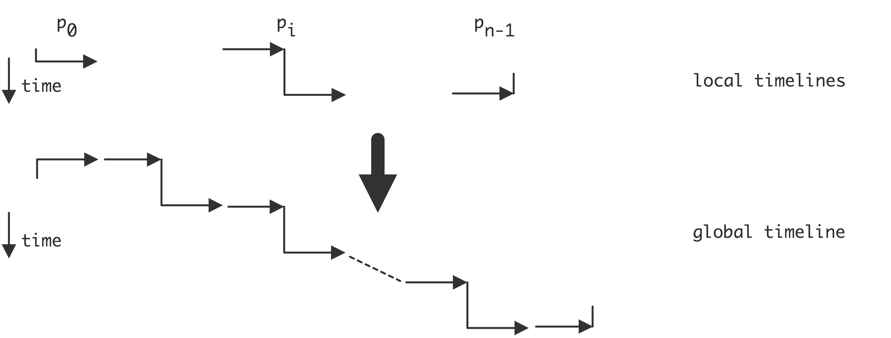</img>
<p name="switchToTextMode">
  \caption{Local and resulting global view of an algorithm for sending
    data to the right}

</float>
</figure>
<!-- environment: figure end embedded generator -->
<p name="switchToTextMode">
the local timelines depicting the local processor code, and the resulting
global behavior. You see that the processors are not working at the
same time: we get 
<i>serialized execution</i>
.
</p>

<p name="switchToTextMode">
What if we reverse the send and receive operations?
<!-- environment: itemize start embedded generator -->
</p>
<!-- TranslatingLineGenerator itemize ['itemize'] -->
<li>
If I am not the last processor, send my $x$ element to the
  right;
<li>
If I am not the first processor, receive an $x$ element from the
  left and add it to my $y$ element.
</ul>
</itemize>
<!-- environment: itemize end embedded generator -->
<p name="switchToTextMode">
This is illustrated in figure&nbsp;
2.15
 and you see that
<!-- environment: figure start embedded generator -->
</p>
<!-- TranslatingLineGenerator figure ['figure'] -->
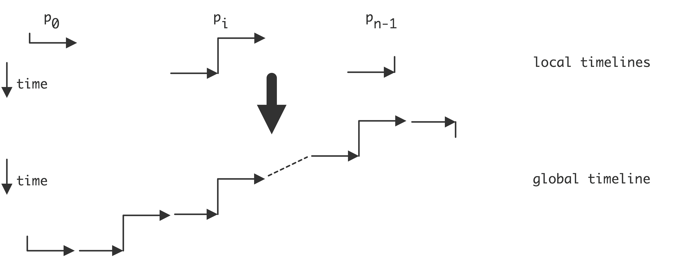</img>
<p name="switchToTextMode">
  \caption{Local and resulting global view of an algorithm for sending
    data to the right}

</float>
</figure>
<!-- environment: figure end embedded generator -->
<p name="switchToTextMode">
again we get a serialized execution, except that now the processors are
activated right to left.
</p>

<p name="switchToTextMode">
If the algorithm in equation&nbsp;
eq:mpi-send-left
 had been cyclic:
<!-- environment: equation start embedded generator -->
</p>
\begin{cases}
y\_i\leftarrow y\_i+x\_{i-1}&i=1&hellip; n-1\\
y\_0\leftarrow y\_0+x\_{n-1}&i=0
\end{cases}
\label{eq:cyclic-add}
\end{equation}
</equation>
<!-- environment: equation end embedded generator -->
<p name="switchToTextMode">
the problem would be even worse. Now the last processor can not start
its receive since it is blocked sending&nbsp;$x_{n-1}$ to processor&nbsp;0. This
situation, where the program can not progress because every processor is
waiting for another, is called 
<i>deadlock</i>
.
</p>

<p name="switchToTextMode">
The solution to getting an efficient code is to make as much of the
communication happen simultaneously as possible. After all, there are
no serial dependencies in the algorithm. Thus we program the algorithm
as follows:
<!-- environment: itemize start embedded generator -->
</p>
<!-- TranslatingLineGenerator itemize ['itemize'] -->
<li>
If I am an odd numbered processor, I send first, then receive;
<li>
If I am an even numbered processor, I receive first, then send.
</ul>
</itemize>
<!-- environment: itemize end embedded generator -->
<p name="switchToTextMode">
This is illustrated in figure&nbsp;
2.16
, and we see that
<!-- environment: figure start embedded generator -->
</p>
<!-- TranslatingLineGenerator figure ['figure'] -->
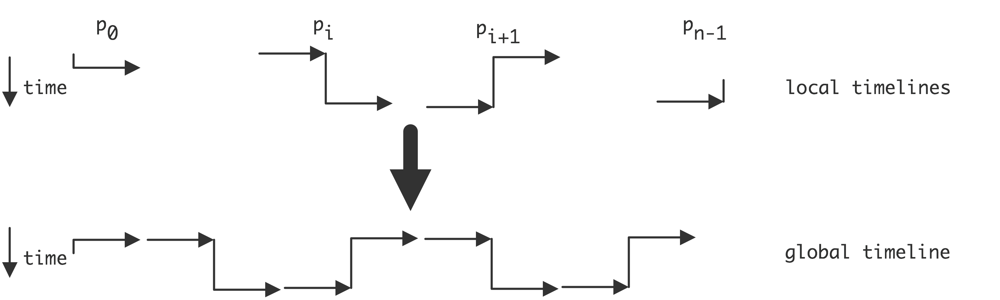</img>
<p name="switchToTextMode">
  \caption{Local and resulting global view of an algorithm for sending
    data to the right}

</float>
</figure>
<!-- environment: figure end embedded generator -->
<p name="switchToTextMode">
the execution is now parallel.
</p>

<!-- environment: exercise start embedded generator -->
<!-- TranslatingLineGenerator exercise ['exercise'] -->
  Take another look at figure&nbsp;
2.3
 of a parallel
  reduction. The basic actions are:
<!-- environment: itemize start embedded generator -->
</p>
<!-- TranslatingLineGenerator itemize ['itemize'] -->
<li>
receive data from a neighbor
<li>
add it to your own data
<li>
send the result on.
</ul>
</itemize>
<!-- environment: itemize end embedded generator -->
<p name="switchToTextMode">
  As you see in the diagram, there is at least one processor who does
  not send data on, and others may do a variable number of receives
  before they send their result on.
</p>

<p name="switchToTextMode">
  Write node code so that an 
<span title="acronym" ><i>SPMD</i></span>
 program realizes the
  distributed reduction. Hint: write each processor number in
  binary. The algorithm uses a number of steps that is equal to the
  length of this bitstring.
<!-- environment: itemize start embedded generator -->
</p>
<!-- TranslatingLineGenerator itemize ['itemize'] -->
<li>
Assuming that a processor receives a message, express the
    distance to the origin of that message in the step number.
<li>
Every processor sends at most one message. Express the step
    where this happens in terms of the binary processor number.
</ul>
</itemize>
<!-- environment: itemize end embedded generator -->
</exercise>
<!-- environment: exercise end embedded generator -->
<!-- environment: answer start embedded generator -->

</answer>
<!-- environment: answer end embedded generator -->
<p name="switchToTextMode">

<h4><a id="Blockingandnon-blockingcommunication">2.6.3.2</a> Blocking and non-blocking communication</h4>
<p name=crumbs>
crumb trail:  > <a href="parallel.html">parallel</a> > <a href="parallel.html#Parallelprogramming">Parallel programming</a> > <a href="parallel.html#Distributedmemoryprogrammingthroughmessagepassing">Distributed memory programming through message passing</a> > <a href="parallel.html#Blockingandnon-blockingcommunication">Blocking and non-blocking communication</a>
</p>
</p>

<p name="switchToTextMode">
The reason for blocking instructions is to prevent accumulation of
data in the network. If a send instruction were to complete before the
corresponding receive started, the network would have to store the
data somewhere in the mean time.
Consider a simple example:
<!-- environment: verbatim start embedded generator -->
</p>
buffer = ... ;  // generate some data
send(buffer,0); // send to processor 0
buffer = ... ;  // generate more data
send(buffer,1); // send to processor 1
</pre>
</verbatim>
<!-- environment: verbatim end embedded generator -->
<p name="switchToTextMode">
After the first send, we start overwriting the buffer. If the data in
it hasn't been received, the first set of values would have to be
buffered somewhere in the network, which is not realistic.
By having the send operation block,
the data stays in the sender's buffer until it is guaranteed to have
been copied to the recipient's buffer.
</p>

<p name="switchToTextMode">
One way out of the problem of sequentialization or deadlock that
arises from blocking instruction is the use
of 
<i>non-blocking communication</i>
 instructions, which include
explicit buffers for the data. With non-blocking send instruction, the
user needs to allocate a buffer for each send, and check when it is
safe to overwrite the buffer.
<!-- environment: verbatim start embedded generator -->
</p>
buffer0 = ... ;   // data for processor 0
send(buffer0,0);  // send to processor 0
buffer1 = ... ;   // data for processor 1
send(buffer1,1);  // send to processor 1
...
// wait for completion of all send operations.
</pre>
</verbatim>
<!-- environment: verbatim end embedded generator -->
<p name="switchToTextMode">

</p>

<h4><a id="TheMPIlibrary">2.6.3.3</a> The MPI library</h4>
<p name=crumbs>
crumb trail:  > <a href="parallel.html">parallel</a> > <a href="parallel.html#Parallelprogramming">Parallel programming</a> > <a href="parallel.html#Distributedmemoryprogrammingthroughmessagepassing">Distributed memory programming through message passing</a> > <a href="parallel.html#TheMPIlibrary">The MPI library</a>
</p>
<!-- index -->

<!-- TranslatingLineGenerator file ['file'] -->
<p name="switchToTextMode">

If OpenMP is the way to program shared memory,
<span title="acronym" ><i>MPI</i></span>
~
<a href="https://pages.tacc.utexas.edu/~eijkhout/istc/html/bibliography.html#mpi-reference">[mpi-reference]</a>
 is the standard solution for
programming distributed memory. MPI (`Message Passing Interface') is a
specification for a library interface for moving data
between processes that do
not otherwise share data. The MPI routines can be divided roughly in
the following categories:
<!-- environment: itemize start embedded generator -->
</p>
<!-- TranslatingLineGenerator itemize ['itemize'] -->
<li>
Process management. This includes querying the parallel
  environment and constructing subsets of processors.
<li>
Point-to-point communication
  communication}. This is a set of calls where two processes
  interact. These are mostly variants of the send and receive calls.
<li>
<!-- index -->
 Collective calls. In these
  routines, all processors (or the whole of a specified subset) are
  involved. Examples are the 
<i>broadcast</i>
 call, where one
  processor shares its data with every other processor, or the
<i>gather</i>
 call, where one processor collects data from all
  participating processors.
</ul>
</itemize>
<!-- environment: itemize end embedded generator -->
<p name="switchToTextMode">

Let us consider how the OpenMP examples can be coded in
MPI
<!-- environment: footnoteenv start embedded generator -->
</p>
<!-- TranslatingLineGenerator footnoteenv ['footnoteenv'] -->
{This is not a course in MPI programming, and consequently
  the examples will leave out many details of the MPI calls. If you
  want to learn MPI programming, consult for
  instance~
<a href="https://pages.tacc.utexas.edu/~eijkhout/istc/html/bibliography.html#Gropp:UsingMPI1,Gropp:UsingMPI2,Gropp:UsingAdvancedMPI">[Gropp:UsingMPI1,Gropp:UsingMPI2,Gropp:UsingAdvancedMPI]</a>
.}
</p>

<p name="switchToTextMode">
  . First of all, we no longer allocate
<!-- environment: verbatim start embedded generator -->
</p>
double a[ProblemSize];
</pre>
</verbatim>
<!-- environment: verbatim end embedded generator -->
<p name="switchToTextMode">
but
<!-- environment: verbatim start embedded generator -->
</p>
double a[LocalProblemSize];
</pre>
</verbatim>
<!-- environment: verbatim end embedded generator -->
<p name="switchToTextMode">
where the local size is roughly a $1/P$ fraction of the global
size. (Practical considerations dictate whether you want this
distribution to be as evenly as possible, or rather biased in some
way.)
</p>

<p name="switchToTextMode">
The parallel loop
is trivially parallel, with the only difference that it now operates
on a fraction of the arrays:
<!-- environment: verbatim start embedded generator -->
</p>
for (i=0; i&lt;LocalProblemSize; i++) {
  a[i] = b[i];
}
</pre>
</verbatim>
<!-- environment: verbatim end embedded generator -->
<p name="switchToTextMode">

However, if the loop involves a calculation based on the iteration
number, we need to map that to the global value:
<!-- environment: verbatim start embedded generator -->
</p>
for (i=0; i&lt;LocalProblemSize; i++) {
  a[i] = b[i]+f(i+MyFirstVariable);
}
</pre>
</verbatim>
<!-- environment: verbatim end embedded generator -->
<p name="switchToTextMode">
(We will assume that each process has somehow calculated the values of

<tt>LocalProblemSize</tt>
 and 
<tt>MyFirstVariable</tt>
.)
Local variables are now automatically local, because each process has
its own instance:
<!-- environment: verbatim start embedded generator -->
</p>
for (i=0; i&lt;LocalProblemSize; i++) {
  t = b[i]*b[i];
  a[i] = sin(t) + cos(t);
}
</pre>
</verbatim>
<!-- environment: verbatim end embedded generator -->
<p name="switchToTextMode">
However, shared variables are harder to implement. Since each process
has its own data, the local accumulation has to be explicitly assembled:
<!-- environment: verbatim start embedded generator -->
</p>
for (i=0; i&lt;LocalProblemSize; i++) {
  s = s + a[i]*b[i];
}
MPI_Allreduce(s,globals,1,MPI_DOUBLE,MPI_SUM);
</pre>
</verbatim>
<!-- environment: verbatim end embedded generator -->
<p name="switchToTextMode">
The `reduce' operation sums together all local values&nbsp;
<tt>s</tt>
 into a
variable 
<tt>globals</tt>
 that receives an identical value on each
processor. This is known as a 
<i>collective operation</i>
.
</p>

<p name="switchToTextMode">
Let us make the example slightly more complicated:
<!-- environment: verbatim start embedded generator -->
</p>
for (i=0; i&lt;ProblemSize; i++) {
  if (i==0)
    a[i] = (b[i]+b[i+1])/2
  else if (i==ProblemSize-1)
    a[i] = (b[i]+b[i-1])/2
  else
    a[i] = (b[i]+b[i-1]+b[i+1])/3
}
</pre>
</verbatim>
<!-- environment: verbatim end embedded generator -->
<p name="switchToTextMode">
If we had shared memory, we could write the following parallel code:
<!-- environment: verbatim start embedded generator -->
</p>
for (i=0; i&lt;LocalProblemSize; i++) {
  bleft = b[i-1]; bright = b[i+1];
  a[i] = (b[i]+bleft+bright)/3
}
</pre>
</verbatim>
<!-- environment: verbatim end embedded generator -->
<p name="switchToTextMode">
To turn this into valid distributed memory code,
first we account for the fact that 
<tt>bleft</tt>
 and 
<tt>bright</tt>
 need to be
obtained from a different processor for 
<tt>i==0</tt>
 (
<tt>bleft</tt>
), and for

<tt>i==LocalProblemSize-1</tt>
 (
<tt>bright</tt>
). We do this with a exchange
operation with our left and right neighbor processor:
<!-- environment: verbatim start embedded generator -->
</p>
// get bfromleft and bfromright from neighbor processors, then
for (i=0; i&lt;LocalProblemSize; i++) {
  if (i==0) bleft=bfromleft;
    else bleft = b[i-1]
  if (i==LocalProblemSize-1) bright=bfromright;
    else bright = b[i+1];
  a[i] = (b[i]+bleft+bright)/3
}
</pre>
</verbatim>
<!-- environment: verbatim end embedded generator -->
<p name="switchToTextMode">
Obtaining the neighbor values is done as follows. First we need to
ask our processor number, so that we can start a communication with
the processor with a number one higher and lower.
<!-- environment: verbatim start embedded generator -->
</p>
MPI_Comm_rank(MPI_COMM_WORLD,&myTaskID);
MPI_Sendrecv
   (/* to be sent:  */ &b[LocalProblemSize-1],
    /* destination  */ myTaskID+1,
    /* to be recvd: */ &bfromleft,
    /* source:      */ myTaskID-1,
    /* some parameters omitted */
   );
MPI_Sendrecv(&b[0],myTaskID-1,
    &bfromright, /* ... */ );
</pre>
</verbatim>
<!-- environment: verbatim end embedded generator -->
<p name="switchToTextMode">
There are still two problems with this code. First, the sendrecv
operations need exceptions for the first and last processors. This can
be done elegantly as follows:
<!-- environment: verbatim start embedded generator -->
</p>
MPI_Comm_rank(MPI_COMM_WORLD,&myTaskID);
MPI_Comm_size(MPI_COMM_WORLD,&nTasks);
if (myTaskID==0) leftproc = MPI_PROC_NULL;
  else leftproc = myTaskID-1;
if (myTaskID==nTasks-1) rightproc = MPI_PROC_NULL;
  else rightproc = myTaskID+1;
MPI_Sendrecv( &b[LocalProblemSize-1], &bfromleft,  rightproc );
MPI_Sendrecv( &b[0],                  &bfromright, leftproc);
</pre>
</verbatim>
<!-- environment: verbatim end embedded generator -->
<p name="switchToTextMode">

<!-- environment: exercise start embedded generator -->
</p>
<!-- TranslatingLineGenerator exercise ['exercise'] -->
  There is still a problem left with this code: the boundary
  conditions from the original, global, version have not been taken
  into account. Give code that solves that problem.
</p name="exercise">
</exercise>
<!-- environment: exercise end embedded generator -->
<!-- environment: answer start embedded generator -->

</answer>
<!-- environment: answer end embedded generator -->
<p name="switchToTextMode">

MPI gets complicated if different processes need to take
different actions, for example, if one needs to send data to
another. The problem here is that each process executes the same
executable, so it needs to contain both the send and the receive
instruction, to be executed depending on what the rank of the process
is.
<!-- environment: verbatim start embedded generator -->
</p>
if (myTaskID==0) {
  MPI_Send(myInfo,1,MPI_INT,/* to: */ 1,/* labeled: */,0,
    MPI_COMM_WORLD);
} else {
  MPI_Recv(myInfo,1,MPI_INT,/* from: */ 0,/* labeled: */,0,
    /* not explained here: */&status,MPI_COMM_WORLD);
}
</pre>
</verbatim>
<!-- environment: verbatim end embedded generator -->
<p name="switchToTextMode">

<h4><a id="Blocking">2.6.3.4</a> Blocking</h4>
<p name=crumbs>
crumb trail:  > <a href="parallel.html">parallel</a> > <a href="parallel.html#Parallelprogramming">Parallel programming</a> > <a href="parallel.html#Distributedmemoryprogrammingthroughmessagepassing">Distributed memory programming through message passing</a> > <a href="parallel.html#Blocking">Blocking</a>
</p>

</p>

<p name="switchToTextMode">
Although MPI is sometimes called the `assembly language of parallel
programming', for its perceived difficulty and level of explicitness,
it is not all that hard to learn, as evinced by the large number of scientific
codes that use it. The main issues that make MPI somewhat intricate to
use are buffer management and blocking semantics.
</p>

<p name="switchToTextMode">
These issues are related, and stem from the fact that, ideally, data
should not be in two places at the same time. Let us briefly
consider what happens if processor&nbsp;1 sends data to processor&nbsp;2. The
safest strategy is for processor&nbsp;1 to execute the send instruction,
and then wait until processor&nbsp;2 acknowledges that the data was
successfully received. This means that processor&nbsp;1 is temporarily
blocked until processor&nbsp;2 actually executes its receive instruction,
and the data has made its way through the network. This is the
standard behavior of the 
<tt>MPI_Send</tt>
 and 
<tt>MPI_Recv</tt>
 calls, which
are said to use 
<i>blocking communication</i>
.
</p>

<p name="switchToTextMode">
Alternatively,
processor&nbsp;1 could put its data in a buffer, tell the system to make
sure that it gets sent at some point, and later checks to see that the
buffer is safe to reuse. This second strategy is called
<i>non-blocking communication</i>
, and it requires the use
of a temporary buffer.
</p>

<h4><a id="Collectiveoperations">2.6.3.5</a> Collective operations</h4>
<p name=crumbs>
crumb trail:  > <a href="parallel.html">parallel</a> > <a href="parallel.html#Parallelprogramming">Parallel programming</a> > <a href="parallel.html#Distributedmemoryprogrammingthroughmessagepassing">Distributed memory programming through message passing</a> > <a href="parallel.html#Collectiveoperations">Collective operations</a>
</p>

<!-- index -->
<p name="switchToTextMode">

In the above examples, you saw the 
<tt>MPI_Allreduce</tt>
 call, which
computed a global sum and left the result on each processor. There is
also a local version 
<tt>MPI_Reduce</tt>
 which computes the result only on
one processor. These calls are examples of 
<i>collective   operations</i>
 or collectives. The collectives are:
<!-- environment: description start embedded generator -->
</p>
<!-- TranslatingLineGenerator description ['description'] -->
<li>
[reduction]: each processor has a data item, and these items need
  to be combined arithmetically with an addition, multiplication, max,
  or min operation. The result can be left on one processor, or on
  all, in which case we call this an {\bf allreduce} operation.
<li>
[broadcast]: one processor has a data item that all processors
  need to receive.
<li>
[gather]: each processor has a data item, and these items need
  to be collected in an array, without
  combining them in an operations such as an addition. The result can
  be left on one processor, or on all, in which case we call this an
  {\bf allgather}.
<li>
[scatter]: one processor has an array of data items, and each
  processor receives one element of that array.
<li>
[all-to-all]: each processor has an array of items, to be
  scattered to all other processors.
</ul>
</description>
<!-- environment: description end embedded generator -->
<p name="switchToTextMode">
Collective operations are blocking (see section&nbsp;
2.6.3.4
),
although MPI&nbsp;3.0
<!-- index -->
(which is currently only a draft) will have
non-blocking collectives.
We will analyze the cost of collective operations in detail in
section&nbsp;
6.1
.
</p>

<!-- index -->
<p name="switchToTextMode">

<h4><a id="Non-blockingcommunication">2.6.3.6</a> Non-blocking communication</h4>
<p name=crumbs>
crumb trail:  > <a href="parallel.html">parallel</a> > <a href="parallel.html#Parallelprogramming">Parallel programming</a> > <a href="parallel.html#Distributedmemoryprogrammingthroughmessagepassing">Distributed memory programming through message passing</a> > <a href="parallel.html#Non-blockingcommunication">Non-blocking communication</a>
</p>

</p>

<p name="switchToTextMode">
In a simple computer program, each instruction takes some time to
execute, in a way that depends on what goes on in the processor. In
parallel programs the situation is more complicated. A&nbsp;send operation,
in its simplest form, declares that a certain buffer of data needs to
be sent, and program execution will then stop until that buffer has
been safely sent and received by another processor. This sort of
operation is called a 
<i>non-local operation</i>
 since it depends
on the actions of other processes, and a 
  communication} operation since execution will halt until a certain
event takes place.
</p>

<p name="switchToTextMode">
Blocking operations have the disadvantage that they can lead to
<i>deadlock</i>
. In the context of message passing this
describes the situation that a process is waiting for an event that
never happens; for instance, it can be waiting to receive a message
and the sender of that message is waiting for something else.
Deadlock occurs if two processes are waiting
for each other, or more generally, if you have a cycle of processes
where each is waiting for the next process in the cycle. Example:
<!-- environment: verbatim start embedded generator -->
</p>
if ( /* this is process 0 */ )
   // wait for message from 1
else if ( /* this is process 1 */ )
   // wait for message from 0
</pre>
</verbatim>
<!-- environment: verbatim end embedded generator -->
<p name="switchToTextMode">
A block receive here leads to deadlock.
Even without deadlock, they can lead to considerable 
  time} in the processors, as they wait without performing any useful work.
On the other hand,  they have the advantage that it is clear when the
buffer can be reused: after the operation completes, there is a
guarantee that the data has been safely received at the other end.
</p>

<p name="switchToTextMode">
The blocking behavior can be avoided, at the cost of complicating the
buffer semantics, by using 
<i>non-blocking communication</i>
 operations. A
non-blocking send (
<tt>MPI_Isend</tt>
) declares that a data buffer needs to
be sent, but then does not wait for the completion of the
corresponding receive. There is a second operation 
<tt>MPI_Wait</tt>
 that
will actually block until the receive has been completed. The
advantage of this decoupling of sending and blocking is that it now
becomes possible to write:
<!-- environment: verbatim start embedded generator -->
</p>
MPI_ISend(somebuffer,&handle); // start sending, and
    // get a handle to this particular communication
{ ... }  // do useful work on local data
MPI_Wait(handle); // block until the communication is completed;
{ ... }  // do useful work on incoming data
</pre>
</verbatim>
<!-- environment: verbatim end embedded generator -->
<p name="switchToTextMode">
With a little luck, the local operations take more time than the
communication, and you have completely eliminated the communication
time.
</p>

<p name="switchToTextMode">
In addition to non-blocking sends, there are non-blocking receives. A
typical piece of code then looks like
<!-- environment: verbatim start embedded generator -->
</p>
MPI_ISend(sendbuffer,&sendhandle);
MPI_IReceive(recvbuffer,&recvhandle);
{ ... }  // do useful work on local data
MPI_Wait(sendhandle); Wait(recvhandle);
{ ... }  // do useful work on incoming data
</pre>
</verbatim>
<!-- environment: verbatim end embedded generator -->
<p name="switchToTextMode">

<!-- environment: exercise start embedded generator -->
</p>
<!-- TranslatingLineGenerator exercise ['exercise'] -->
  Take another look at equation&nbsp;\eqref{eq:cyclic-add} and give pseudocode that
  solves the problem using non-blocking sends and receives. What is
  the disadvantage of this code over a blocking solution?
</p name="exercise">
</exercise>
<!-- environment: exercise end embedded generator -->
<!-- environment: answer start embedded generator -->

</answer>
<!-- environment: answer end embedded generator -->
<p name="switchToTextMode">

<h4><a id="MPIversion1and2and3">2.6.3.7</a> MPI version 1 and 2 and 3</h4>
<p name=crumbs>
crumb trail:  > <a href="parallel.html">parallel</a> > <a href="parallel.html#Parallelprogramming">Parallel programming</a> > <a href="parallel.html#Distributedmemoryprogrammingthroughmessagepassing">Distributed memory programming through message passing</a> > <a href="parallel.html#MPIversion1and2and3">MPI version 1 and 2 and 3</a>
</p>

</p>

<p name="switchToTextMode">
The first MPI standard&nbsp;
<a href="https://pages.tacc.utexas.edu/~eijkhout/istc/html/bibliography.html#mpi-ref">[mpi-ref]</a>
 had a number of notable
omissions, which are included in the MPI&nbsp;2
standard&nbsp;
<a href="https://pages.tacc.utexas.edu/~eijkhout/istc/html/bibliography.html#mpi-2-reference">[mpi-2-reference]</a>
. One of these concerned parallel
input/output: there was no facility for multiple processes to access
the same file, even if the underlying hardware would allow
that. A&nbsp;separate project MPI-I/O has now been rolled into the MPI-2
standard. We will discuss parallel I/O in this book.
</p>

<p name="switchToTextMode">
A second facility missing in MPI, though it was present in
<i>PVM</i>
&nbsp;
<a href="https://pages.tacc.utexas.edu/~eijkhout/istc/html/bibliography.html#pvm-1,pvm-2">[pvm-1,pvm-2]</a>
 which predates MPI, is process
management: there is no way to create new processes and have them be
part of the parallel run.
</p>

<p name="switchToTextMode">
Finally, MPI-2 has support for one-sided communication: one process
puts data into the memory of another, without the receiving process
doing an actual receive instruction. We will have a short discussion
in section&nbsp;
2.6.3.8
 below.
</p>

<p name="switchToTextMode">
With MPI-3 the standard has gained a number of new features, such as
non-blocking collectives, neighborhood collectives, and a profiling
interface. The one-sided mechanisms have also been updated.
</p>

<h4><a id="One-sidedcommunication">2.6.3.8</a> One-sided communication</h4>
<p name=crumbs>
crumb trail:  > <a href="parallel.html">parallel</a> > <a href="parallel.html#Parallelprogramming">Parallel programming</a> > <a href="parallel.html#Distributedmemoryprogrammingthroughmessagepassing">Distributed memory programming through message passing</a> > <a href="parallel.html#One-sidedcommunication">One-sided communication</a>
</p>
<!-- index -->

<p name="switchToTextMode">

The MPI way of writing matching send and receive instructions is not
ideal for a number of reasons. First of all, it requires the
programmer to give the same data description twice, once in the send
and once in the receive call. Secondly, it requires a rather precise
orchestration of communication if deadlock is to be avoided; the
alternative of using asynchronous calls is tedious to program,
requiring the program to manage a lot of buffers.
Lastly, it requires a receiving processor to know how many incoming
messages to expect, which can be tricky in irregular applications.
Life would be so much easier if it was
possible to pull data from another processor, or conversely to put it
on another processor, without that other processor being explicitly
involved.
</p>

<p name="switchToTextMode">
This style of programming is further encouraged by the
existence of 
<i>RDMA</i>
 support on some hardware. An early example was
the  
<i>Cray T3E</i>
.
These days, one-sided communication is widely available through its
incorporation in the MPI-2 library; section&nbsp;
2.6.3.7
.
</p>

<p name="switchToTextMode">
Let us take a brief look at one-sided communication in MPI-2, using
averaging of array values as an example:
\[
 \forall_i\colon a_i\leftarrow (a_i+a_{i-1}+a_{i+1})/3. 
\]
The MPI parallel code will look like
<!-- environment: verbatim start embedded generator -->
</p>
// do data transfer
a_local = (a_local+left+right)/3
</pre>
</verbatim>
<!-- environment: verbatim end embedded generator -->
<p name="switchToTextMode">
It is clear what the transfer has to accomplish: the 
<tt>a_local</tt>

variable needs to become the 
<tt>left</tt>
 variable on the processor with
the next higher rank, and the 
<tt>right</tt>
 variable on the one with the
next lower rank.
</p>

<p name="switchToTextMode">
First of all, processors need to declare explicitly what memory area
is available for one-sided transfer, the so-called `window'. In this
example, that consists of the 
<tt>a_local</tt>
, 
<tt>left</tt>
, and 
<tt>right</tt>

variables on the processors:
<!-- environment: verbatim start embedded generator -->
</p>
MPI_Win_create(&a_local,...,&data_window);
MPI_Win_create(&left,....,&left_window);
MPI_Win_create(&right,....,&right_window);
</pre>
</verbatim>
<!-- environment: verbatim end embedded generator -->
<p name="switchToTextMode">
The code now has two options: it is possible to push data out
<!-- environment: verbatim start embedded generator -->
</p>
target = my_tid-1;
MPI_Put(&a_local,...,target,right_window);
target = my_tid+1;
MPI_Put(&a_local,...,target,left_window);
</pre>
</verbatim>
<!-- environment: verbatim end embedded generator -->
<p name="switchToTextMode">
or to pull it in
<!-- environment: verbatim start embedded generator -->
</p>
data_window = a_local;
source = my_tid-1;
MPI_Get(&right,...,data_window);
source = my_tid+1;
MPI_Get(&left,...,data_window);
</pre>
</verbatim>
<!-- environment: verbatim end embedded generator -->
<p name="switchToTextMode">
The above code will have the right semantics if the Put and Get calls
are blocking; see section&nbsp;
2.6.3.4
. However, part of the
attraction of one-sided communication is that it makes it easier to
express communication, and for this, a non-blocking semantics is
assumed.
</p>

<p name="switchToTextMode">
The problem with non-blocking one-sided calls is that it becomes
necessary to ensure explicitly that communication is successfully
completed. For instance, if one processor does a one-sided 
<i>put</i>

operation on another, the other processor has no way of checking that
the data has arrived, or indeed that transfer has begun at
all. Therefore it is necessary to insert a global barrier in the program,
for which every package has its own implementation. In MPI-2 the
relevant call is the

<tt>MPI_Win_fence</tt>
 routine. These barriers in effect divide the program
execution in 
<i>supersteps</i>
; see section&nbsp;
2.6.8
.
</p>

<p name="switchToTextMode">
Another form of one-sided communication is used in the Charm++
package; see section&nbsp;
2.6.7
.
</p>

<!-- index -->
<p name="switchToTextMode">

</p name="footnoteenv">
)
</footnoteenv>
<!-- environment: footnoteenv end embedded generator -->
<!-- index -->
<p name="switchToTextMode">

<h3><a id="Hybridshareddistributedmemorycomputing">2.6.4</a> Hybrid shared/distributed memory computing</h3>
<p name=crumbs>
crumb trail:  > <a href="parallel.html">parallel</a> > <a href="parallel.html#Parallelprogramming">Parallel programming</a> > <a href="parallel.html#Hybridshareddistributedmemorycomputing">Hybrid shared/distributed memory computing</a>
</p>

<!-- index -->
<!-- TranslatingLineGenerator file ['file'] -->
</p>

<p name="switchToTextMode">
Modern architectures are often a mix of shared and distributed
memory. For instance, a cluster will be distributed on the level of
the nodes, but sockets and cores on a node will have shared
memory. One level up, each socket can have a shared L3 cache but
separate L2 and L1 caches. Intuitively it seems clear that a mix of
shared and distributed programming techniques would give code
that is optimally matched to the architecture. In this section we will
discuss such hybrid programming models, and discuss their efficacy.
</p>

<p name="switchToTextMode">
A common setup of clusters uses distributed memory
<i>nodes</i>
<!-- index -->
, where each node contains several
<i>sockets</i>
<!-- index -->
, that share memory. This suggests
using MPI to communicate between the nodes
(
<i>inter-node communication</i>
) and OpenMP for parallelism on
the node (
<i>intra-node communication</i>
).
</p>

<p name="switchToTextMode">
In practice this is realized as follows:
<!-- environment: itemize start embedded generator -->
</p>
<!-- TranslatingLineGenerator itemize ['itemize'] -->
<li>
On each node a single MPI process is started (rather than one
  per core);
<li>
This one MPI process then uses OpenMP (or another threading
  protocol) to spawn as many threads are there are independent sockets
  or cores on the node.
<li>
The OpenMP threads can then access the shared memory of the node.
</ul>
</itemize>
<!-- environment: itemize end embedded generator -->
<p name="switchToTextMode">
The alternative would be to have an MPI process on each core or
socket and do all communication through message passing, even between
processes that can see the same shared memory.
</p>

<!-- environment: remark start embedded generator -->
<!-- TranslatingLineGenerator remark ['remark'] -->
  For reasons of 
<i>affinity</i>
 it may be desirable to start
  one MPI process per socket, rather than per node.
  This does not materially alter the above argument.
</p name="remark">
</remark>
<!-- environment: remark end embedded generator -->
<p name="switchToTextMode">

This hybrid strategy may sound like a good idea but the truth is complicated.
<!-- environment: itemize start embedded generator -->
</p>
<!-- TranslatingLineGenerator itemize ['itemize'] -->
<li>
Message passing between MPI processes sounds like it's more
  expensive than communicating through shared memory. However,
  optimized versions of MPI can typically detect when processes are on
  the same node, and they will replace the message passing by a simple
  data copy. The only argument against using MPI is then that each
  process has its own data space, so there is memory overhead because
  each process has to allocate space for buffers and duplicates of the
  data that is copied.
<li>
Threading is more flexible: if a certain part of the code needs
  more memory per process, an OpenMP approach could limit the number
  of threads on that part. On the other hand, flexible handling of
  threads incurs a certain amount of 
<span title="acronym" ><i>OS</i></span>
 overhead that MPI does
  not have with its fixed processes.
<li>
Shared memory programming is conceptually simple, but there can
  be unexpected performance pitfalls. For instance, the performance of
  two processes can now be impeded by the need for maintaining
<i>cache coherence</i>
 and by 
<i>false sharing</i>
.
</ul>
</itemize>
<!-- environment: itemize end embedded generator -->
<p name="switchToTextMode">

On the other hand, the hybrid approach offers some advantage since it
bundles messages. For instance, if two MPI processes on one node send
messages to each of two processes on another node there would be four
messages; in the hybrid model these would be bundled into one
message.
</p>

<!-- environment: exercise start embedded generator -->
<!-- TranslatingLineGenerator exercise ['exercise'] -->
  Analyze the discussion in the last item above. Assume that the
  bandwidth between the two nodes is only enough to sustain one
  message at a time. What is the cost savings of the hybrid model over
  the purely distributed model? Hint: consider bandwidth and latency
  separately.
</p name="exercise">
</exercise>
<!-- environment: exercise end embedded generator -->
<!-- environment: answer start embedded generator -->

</answer>
<!-- environment: answer end embedded generator -->
<p name="switchToTextMode">

This bundling of MPI processes may have an advantage for a deeper
technical reason. In order to support a 
<i>handshake protocol</i>
,
each MPI process needs a small amount of buffer space for each other process.
With a larger number of processes this can be a limitation, so bundling
is attractive on high core count processors such as the 
<i>Intel Xeon Phi</i>
.
</p>

<p name="switchToTextMode">
The MPI library is explicit about what sort of threading it supports:
you can query whether multi-threading is supported at all, whether all MPI
calls have to originate from one thread or one thread at-a-time, or whether
there is complete freedom in making MPI calls from threads.
</p>

<!-- index -->
<p name="switchToTextMode">

<h3><a id="Parallellanguages">2.6.5</a> Parallel languages</h3>
<p name=crumbs>
crumb trail:  > <a href="parallel.html">parallel</a> > <a href="parallel.html#Parallelprogramming">Parallel programming</a> > <a href="parallel.html#Parallellanguages">Parallel languages</a>
</p>

<!-- index -->
<!-- TranslatingLineGenerator file ['file'] -->
</p>

<p name="switchToTextMode">
One approach to  mitigating the difficulty of parallel programming
is the design of languages that offer explicit support for
parallelism. There are several approaches, and we will see some
examples.
<!-- environment: itemize start embedded generator -->
</p>
<!-- TranslatingLineGenerator itemize ['itemize'] -->
<li>
Some languages reflect the fact that many operations in
  scientific computing are data parallel
  (section~
2.5.1
). Languages such as 
<i>HPF</i>
  (section~
2.6.5.3
) have
  an 
<i>array syntax</i>
, where operations such as addition of
  arrays can be expressed as 
<tt>A = B+C</tt>
. This syntax simplifies
  programming, but more importantly, it specifies operations at an
  abstract level, so that a lower level can make specific decision
  about how to handle parallelism. However, the data parallelism
  expressed in 
<span title="acronym" ><i>HPF</i></span>
 is only of the simplest sort, where the data
  are contained in regular arrays. Irregular data parallelism is
  harder; the 
<i>Chapel</i>
 language (section~
2.6.5.5
)
  makes an attempt at addressing this.
<li>
Another concept in parallel languages, not necessarily
  orthogonal to the previous, is that of 
<span title="acronym" ><i>PGAS</i></span>
 model: there is only
  one address space (unlike in the MPI model), but this address space
  is partitioned, and each partition has affinity with a thread or
  process. Thus, this model encompasses both 
<span title="acronym" ><i>SMP</i></span>
 and distributed
  shared memory. A~typical 
<span title="acronym" ><i>PGAS</i></span>
 language, 
<i>UPC</i>
, allows you
  to write programs that for the most part looks like regular C code.
  However, by indicating how the major arrays are distributed over
  processors, the program can be executed in parallel.
</ul>
</itemize>
<!-- environment: itemize end embedded generator -->
<p name="switchToTextMode">

<h4><a id="Discussion">2.6.5.1</a> Discussion</h4>
<p name=crumbs>
crumb trail:  > <a href="parallel.html">parallel</a> > <a href="parallel.html#Parallelprogramming">Parallel programming</a> > <a href="parallel.html#Parallellanguages">Parallel languages</a> > <a href="parallel.html#Discussion">Discussion</a>
</p>
</p>

<p name="switchToTextMode">
Parallel languages hold the promise of making parallel programming
easier, since they make communication operations appear as simple
copies or arithmetic operations. However, by doing so they invite the
user to write code that may not be efficient, for instance by inducing
many small messages.
</p>

<!-- environment: figure start embedded generator -->
<!-- TranslatingLineGenerator figure ['figure'] -->
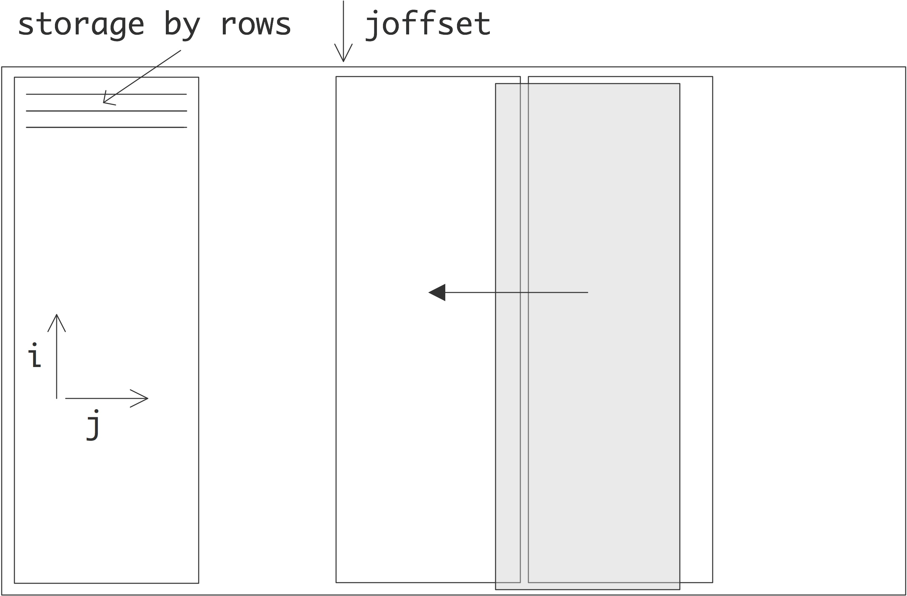</img>
<p name="caption">
FIGURE 2.17: Data shift that requires communication
</p>

</float>
</figure>
<!-- environment: figure end embedded generator -->
<p name="switchToTextMode">
As an example, consider arrays 
<tt>a,b</tt>
 that have been horizontally
partitioned over the processors, and that are shifted (see figure~
2.17
):
<!-- environment: verbatim start embedded generator -->
</p>
for (i=0; i&lt;N; i++)
  for (j=0; j&lt;N/np; j++)
    a[i][j+joffset] = b[i][j+1+joffset]
</pre>
</verbatim>
<!-- environment: verbatim end embedded generator -->
<p name="switchToTextMode">
If this code is executed on a shared memory machine, it will be
efficient, but a naive translation in the distributed case will have a
single number being communicated in each iteration of the

<tt>i</tt>
&nbsp;loop. Clearly, these can be combined in a single buffer
send/receive operation, but compilers
<!-- index -->
 are usually
unable to make this transformation. As a result, the user is forced
to, in effect, re-implement the blocking that needs to be done in an
MPI implementation:
<!-- environment: verbatim start embedded generator -->
</p>
for (i=0; i&lt;N; i++)
  t[i] = b[i][N/np+joffset]
for (i=0; i&lt;N; i++)
  for (j=0; j&lt;N/np-1; j++) {
    a[i][j] = b[i][j+1]
    a[i][N/np] = t[i]
  }
</pre>
</verbatim>
<!-- environment: verbatim end embedded generator -->
<p name="switchToTextMode">

On the other hand, certain machines support direct memory copies
through global memory hardware. In that case, 
<span title="acronym" ><i>PGAS</i></span>
 languages can
be more efficient than explicit message passing, even with physically
distributed memory.
</p>

<h4><a id="UnifiedParallelC">2.6.5.2</a> Unified Parallel C</h4>
<p name=crumbs>
crumb trail:  > <a href="parallel.html">parallel</a> > <a href="parallel.html#Parallelprogramming">Parallel programming</a> > <a href="parallel.html#Parallellanguages">Parallel languages</a> > <a href="parallel.html#UnifiedParallelC">Unified Parallel C</a>
</p>
<!-- index -->
<p name="switchToTextMode">

<span title="acronym" ><i>UPC</i></span>
&nbsp;
<a href="https://pages.tacc.utexas.edu/~eijkhout/istc/html/bibliography.html#UPC:homepage">[UPC:homepage]</a>
 is an extension to the C&nbsp;language.  Its
main source of parallelism is 
<i>data parallelism</i>
, where
the compiler
<!-- index -->
 discovers independence of operations on
arrays, and assigns them to separate processors. The language has an
extended array declaration, which allows the user to specify whether
the array is partitioned by blocks, or in a
<i>round-robin</i>
<!-- index -->
fashion.
</p>

<p name="switchToTextMode">
The following program in 
<span title="acronym" ><i>UPC</i></span>
 performs a vector-vector addition.
<!-- environment: verbatim start embedded generator -->
</p>
//vect_add.c
#include &lt;upc_relaxed.h&gt;
#define N 100*THREADS
shared int v1[N], v2[N], v1plusv2[N];
void main() {
  int i;
  for(i=MYTHREAD; i&lt;N; i+=THREADS)
    v1plusv2[i]=v1[i]+v2[i];
}
</pre>
</verbatim>
<!-- environment: verbatim end embedded generator -->
<p name="switchToTextMode">
The same program with an explicitly parallel loop construct:
<!-- environment: verbatim start embedded generator -->
</p>
//vect_add.c
#include &lt;upc_relaxed.h&gt;
#define N 100*THREADS
shared int v1[N], v2[N], v1plusv2[N];
void main()
{
  int i;
  upc_forall(i=0; i&lt;N; i++; i)
    v1plusv2[i]=v1[i]+v2[i];
}
</pre>
</verbatim>
<!-- environment: verbatim end embedded generator -->
<p name="switchToTextMode">

<!-- index -->
</p>

<!-- index -->
<p name="switchToTextMode">
 is comparable to 
<span title="acronym" ><i>UPC</i></span>
 in spirit, but based on Java rather
than on&nbsp;C.
</p>

<h4><a id="HighPerformanceFortran">2.6.5.3</a> High Performance Fortran</h4>
<p name=crumbs>
crumb trail:  > <a href="parallel.html">parallel</a> > <a href="parallel.html#Parallelprogramming">Parallel programming</a> > <a href="parallel.html#Parallellanguages">Parallel languages</a> > <a href="parallel.html#HighPerformanceFortran">High Performance Fortran</a>
</p>

<!-- index -->
<p name="switchToTextMode">

High Performance Fortran
<!-- environment: footnoteenv start embedded generator -->
</p>
<!-- TranslatingLineGenerator footnoteenv ['footnoteenv'] -->
  {This section quoted from Wikipedia}
</p name="footnoteenv">
)
</footnoteenv>
<!-- environment: footnoteenv end embedded generator -->
<p name="switchToTextMode">
(HPF) is an extension of Fortran 90 with constructs that support
parallel computing, published by the High Performance Fortran Forum
(HPFF). The HPFF was convened and chaired by Ken Kennedy of Rice
University. The first version of the HPF Report was published in 1993.
</p>

<p name="switchToTextMode">
Building on the array syntax introduced in Fortran 90, HPF uses a data
parallel model of computation to support spreading the work of a
single array computation over multiple processors. This allows
efficient implementation on both SIMD and MIMD style
architectures. HPF features included:
<!-- environment: itemize start embedded generator -->
</p>
<!-- TranslatingLineGenerator itemize ['itemize'] -->
<li>
New Fortran statements, such as FORALL, and the ability to
  create PURE (side effect free) procedures;
<li>
The use of 
<i>compiler directives</i>
 for recommended
  distributions of array data;
<li>
Extrinsic procedure interface for interfacing to non-HPF
  parallel procedures such as those using message passing;
<li>
Additional library routines, including environmental inquiry,
  parallel prefix/suffix (e.g., 'scan'), data scattering, and sorting
  operations.
</ul>
</itemize>
<!-- environment: itemize end embedded generator -->
<p name="switchToTextMode">
Fortran 95 incorporated several HPF capabilities.  While some vendors
did incorporate HPF into their compilers in the 1990s, some aspects
proved difficult to implement and of questionable use. Since then,
most vendors and users have moved to OpenMP-based parallel
processing. However, HPF continues to have
influence. For example the proposed BIT data type for the upcoming
Fortran-2008 standard contains a number of new intrinsic functions
taken directly from HPF.
</p>

<!-- index -->
<p name="switchToTextMode">

<h4><a id="Co-arrayFortran">2.6.5.4</a> Co-array Fortran</h4>
<p name=crumbs>
crumb trail:  > <a href="parallel.html">parallel</a> > <a href="parallel.html#Parallelprogramming">Parallel programming</a> > <a href="parallel.html#Parallellanguages">Parallel languages</a> > <a href="parallel.html#Co-arrayFortran">Co-array Fortran</a>
</p>
<!-- index -->
</p>

<span title="acronym" ><i>CAF</i></span>
<p name="switchToTextMode">
 is an extension to the Fortran 95/2003 language.
The main mechanism to support parallelism is an extension to the array
declaration syntax, where an extra dimension indicates the parallel
distribution. For instance, in
<!-- environment: verbatim start embedded generator -->
</p>
Real,dimension(100),codimension[*] :: X
Real :: Y(100)[*]
Real :: Z(100,200)[10,0:9,*]
</pre>
</verbatim>
<!-- environment: verbatim end embedded generator -->
<p name="switchToTextMode">
arrays 
<tt>X,Y</tt>
 have 100 elements on each processor.
Array 
<tt>Z</tt>
 behaves as if the available processors
are on a three-dimensional grid, with two sides specified
and the third adjustable to accommodate the available processors.
</p>

<p name="switchToTextMode">
Communication between processors is now done through copies along the
(co-)dimensions that describe the processor grid.
<!-- environment: verbatim start embedded generator -->
</p>
%%       COMMON/XCTILB4/ B(N,4)[*]
%%       SAVE  /XCTILB4/
%% C
%%       CALL SYNC_ALL( WAIT=(/IMG_S,IMG_N/) )
%%       B(:,3) = B(:,1)[IMG_S]
%%       B(:,4) = B(:,2)[IMG_N]
%%       CALL SYNC_ALL( WAIT=(/IMG_S,IMG_N/) )
%% 
</pre>
</verbatim>
<!-- environment: verbatim end embedded generator -->
<p name="switchToTextMode">
The Fortran 2008 standard includes co-arrays.
</p>

<!-- index -->
<p name="switchToTextMode">

<h4><a id="Chapel">2.6.5.5</a> Chapel</h4>
<p name=crumbs>
crumb trail:  > <a href="parallel.html">parallel</a> > <a href="parallel.html#Parallelprogramming">Parallel programming</a> > <a href="parallel.html#Parallellanguages">Parallel languages</a> > <a href="parallel.html#Chapel">Chapel</a>
</p>

<!-- index -->
</p>

<p name="switchToTextMode">
Chapel&nbsp;
<a href="https://pages.tacc.utexas.edu/~eijkhout/istc/html/bibliography.html#Chapel:homepage">[Chapel:homepage]</a>
 is a new parallel programming
language
<!-- environment: footnoteenv start embedded generator -->
</p>
<!-- TranslatingLineGenerator footnoteenv ['footnoteenv'] -->
  {This section quoted from the Chapel homepage.}
</p name="footnoteenv">
)
</footnoteenv>
<!-- environment: footnoteenv end embedded generator -->
<p name="switchToTextMode">
being developed by Cray Inc. as part of the DARPA-led High
Productivity Computing Systems program (HPCS). Chapel is designed to
improve the productivity of high-end computer users while also serving
as a portable parallel programming model that can be used on commodity
clusters or desktop multicore systems. Chapel strives to vastly
improve the programmability of large-scale parallel computers while
matching or beating the performance and portability of current
programming models like MPI.
</p>

<p name="switchToTextMode">
Chapel supports a multithreaded execution model via high-level
abstractions for data parallelism, task parallelism, concurrency, and
nested parallelism. Chapel's locale type enables users to specify and
reason about the placement of data and tasks on a target architecture
in order to tune for locality. Chapel supports global-view data
aggregates with user-defined implementations, permitting operations on
distributed data structures to be expressed in a natural manner. In
contrast to many previous higher-level parallel languages, Chapel is
designed around a multiresolution philosophy, permitting users to
initially write very abstract code and then incrementally add more
detail until they are as close to the machine as their needs
require. Chapel supports code reuse and rapid prototyping via
object-oriented design, type inference, and features for generic
programming.
</p>

<p name="switchToTextMode">
Chapel was designed from first principles rather than by extending an
existing language. It is an imperative block-structured language,
designed to be easy to learn for users of C, C++, Fortran, Java, Perl,
Matlab, and other popular languages. While Chapel builds on concepts
and syntax from many previous languages, its parallel features are
most directly influenced by ZPL, High-Performance Fortran (HPF), and
the Cray MTA's extensions to C and Fortran.
</p>

<p name="switchToTextMode">
Here is vector-vector addition in Chapel:
<!-- environment: verbatim start embedded generator -->
</p>
const BlockDist= newBlock1D(bbox=[1..m], tasksPerLocale=...);
const ProblemSpace: domain(1, 64)) distributed BlockDist = [1..m];
var A, B, C: [ProblemSpace] real;
forall(a, b, c) in(A, B, C) do
  a = b + alpha * c;
</pre>
</verbatim>
<!-- environment: verbatim end embedded generator -->
<p name="switchToTextMode">

<!-- index -->
</p>

<h4><a id="Fortress">2.6.5.6</a> Fortress</h4>
<p name=crumbs>
crumb trail:  > <a href="parallel.html">parallel</a> > <a href="parallel.html#Parallelprogramming">Parallel programming</a> > <a href="parallel.html#Parallellanguages">Parallel languages</a> > <a href="parallel.html#Fortress">Fortress</a>
</p>
<!-- index -->
<p name="switchToTextMode">

Fortress&nbsp;
<a href="https://pages.tacc.utexas.edu/~eijkhout/istc/html/bibliography.html#Fortress:homepage">[Fortress:homepage]</a>
 is a programming language developed
by Sun Microsystems.  Fortress
<!-- environment: footnoteenv start embedded generator -->
</p>
<!-- TranslatingLineGenerator footnoteenv ['footnoteenv'] -->
  {This section quoted from the
    Fortress homepage.}
</p name="footnoteenv">
)
</footnoteenv>
<!-- environment: footnoteenv end embedded generator -->
<p name="switchToTextMode">
aims to make parallelism more tractable
in several ways. First, parallelism is the default. This is intended
to push tool design, library design, and programmer skills in the
direction of parallelism. Second, the language is designed to be more
friendly to parallelism. Side-effects are discouraged because
side-effects require synchronization to avoid bugs. Fortress provides
transactions, so that programmers are not faced with the task of
determining lock orders, or tuning their locking code so that there is
enough for correctness, but not so much that performance is
impeded. The Fortress looping constructions, together with the
library, turns "iteration" inside out; instead of the loop specifying
how the data is accessed, the data structures specify how the loop is
run, and aggregate data structures are designed to break into large
parts that can be effectively scheduled for parallel
execution. Fortress also includes features from other languages
intended to generally help productivity -- test code and methods, tied
to the code under test; contracts that can optionally be checked when
the code is run; and properties, that might be too expensive to run,
but can be fed to a theorem prover or model checker. In addition,
Fortress includes safe-language features like checked array bounds,
type checking, and garbage collection that have been proven-useful in
Java. Fortress syntax is designed to resemble mathematical syntax as
much as possible, so that anyone solving a problem with math in its
specification can write a program that is visibly related to
its original specification.
</p>

<!-- index -->
<p name="switchToTextMode">

<h4><a id="X10">2.6.5.7</a> X10</h4>
<p name=crumbs>
crumb trail:  > <a href="parallel.html">parallel</a> > <a href="parallel.html#Parallelprogramming">Parallel programming</a> > <a href="parallel.html#Parallellanguages">Parallel languages</a> > <a href="parallel.html#X10">X10</a>
</p>
<!-- index -->
</p>

<p name="switchToTextMode">
X10 is an experimental new language currently under development at
IBM
<!-- index -->
 in collaboration with academic partners. The X10 effort
is part of the IBM PERCS project (Productive Easy-to-use Reliable
Computer Systems) in the DARPA program on High Productivity Computer
Systems. The PERCS project is focused on a hardware-software co-design
methodology to integrate advances in chip technology, architecture,
operating systems, compilers, programming language and programming
tools to deliver new adaptable, scalable systems that will provide an
order-of-magnitude improvement in development productivity for
parallel applications by 2010.
</p>

<p name="switchToTextMode">
X10 aims to contribute to this productivity improvement by developing
a new programming model, combined with a new set of tools integrated
into Eclipse and new implementation techniques for delivering
optimized scalable parallelism in a managed runtime environment. X10
is a type-safe, modern, parallel, distributed object-oriented language
intended to be accessible to Java(TM) programmers. It is
targeted to future low-end and high-end systems with nodes that are
built out of multi-core SMP chips with non-uniform memory hierarchies,
and interconnected in scalable cluster configurations. A member of the
Partitioned Global Address Space (PGAS) family of languages, X10
highlights the explicit reification of locality in the form of places;
lightweight activities embodied in async, future, foreach, and ateach
constructs; constructs for termination detection (finish) and phased
computation (clocks); the use of lock-free synchronization (atomic
blocks); and the manipulation of global arrays and data structures.
</p>

<!-- index -->
<p name="switchToTextMode">

<h4><a id="Linda">2.6.5.8</a> Linda</h4>
<p name=crumbs>
crumb trail:  > <a href="parallel.html">parallel</a> > <a href="parallel.html#Parallelprogramming">Parallel programming</a> > <a href="parallel.html#Parallellanguages">Parallel languages</a> > <a href="parallel.html#Linda">Linda</a>
</p>
<!-- index -->
</p>

<p name="switchToTextMode">
As should be clear by now, the treatment of data is by far the most
important aspect of parallel programming, far more important than
algorithmic considerations. The programming system
<i>Linda</i>
&nbsp;
<a href="https://pages.tacc.utexas.edu/~eijkhout/istc/html/bibliography.html#Gelernter85generativecommunication,Linda-CACM">[Gelernter85generativecommunication,Linda-CACM]</a>
, also called a
<i>coordination language</i>
, is designed to address the data
handling explicitly. Linda is not a language as such, but can, and has
been, incorporated into other languages.
</p>

<p name="switchToTextMode">
The basic concept of Linda is the 
<i>tuple space</i>
: data is added
to a pool of globally accessible information by adding a label to
it. Processes then retrieve data by the label value, and without needing to
know which processes added the data to the tuple space.
</p>

<p name="switchToTextMode">
Linda is aimed primarily at a different computation model than is
relevant for 
<i>HPC</i>
: it addresses the needs of
asynchronous communicating processes. However, is has been used for
scientific computation&nbsp;
<a href="https://pages.tacc.utexas.edu/~eijkhout/istc/html/bibliography.html#Deshpande92efficientparallel">[Deshpande92efficientparallel]</a>
. For
instance, in parallel simulations of the heat equation
(section&nbsp;
4.3
), processors can write their data into tuple
space, and neighboring processes can retrieve their 
  region} without having to
know its provenance. Thus, Linda becomes one way of implementing
<i>one-sided communication</i>
.
</p>

<!-- index -->
<p name="switchToTextMode">

<h4><a id="TheGlobalArrayslibrary">2.6.5.9</a> The Global Arrays library</h4>
<p name=crumbs>
crumb trail:  > <a href="parallel.html">parallel</a> > <a href="parallel.html#Parallelprogramming">Parallel programming</a> > <a href="parallel.html#Parallellanguages">Parallel languages</a> > <a href="parallel.html#TheGlobalArrayslibrary">The Global Arrays library</a>
</p>
<!-- index -->
</p>

<p name="switchToTextMode">
The Global Arrays library (
<a href=http://www.emsl.pnl.gov/docs/global/>http://www.emsl.pnl.gov/docs/global/</a>
)
is another example of 
<i>one-sided communication</i>
, and in fact
it predates MPI. This library has as its prime data structure
<i>Cartesian product</i>
 arrays
<!-- environment: footnoteenv start embedded generator -->
</p>
<!-- TranslatingLineGenerator footnoteenv ['footnoteenv'] -->
  {This means that if the
  array is three-dimensional, it can be described by three integers
  $n_1,n_2,n_3$, and each point has a coordinate $(i_1,i_2,i_3)$ with
  $1\leq i_1\leq n_1$ et cetera.}
</p name="footnoteenv">
)
</footnoteenv>
<!-- environment: footnoteenv end embedded generator -->
<p name="switchToTextMode">
, distributed over a processor grid
of the same or lower dimension. Through library calls, any processor
can access any sub-brick out of the array in either a 
<tt>put</tt>
 or

<tt>get</tt>
 operation. These operations are non-collective. As with any
one-sided protocol, a barrier sync is necessary to ensure completion
of the sends/receives.
</p>

<!-- index -->
<p name="switchToTextMode">

</p>

<!-- index -->
<p name="switchToTextMode">

<h3><a id="OS-basedapproaches">2.6.6</a> OS-based approaches</h3>
<p name=crumbs>
crumb trail:  > <a href="parallel.html">parallel</a> > <a href="parallel.html#Parallelprogramming">Parallel programming</a> > <a href="parallel.html#OS-basedapproaches">OS-based approaches</a>
</p>
</p>

<p name="switchToTextMode">
It is possible to design an architecture with a shared address space,
and let the data movement be handled by the operating system. The
Kendall Square computer&nbsp;
<a href="https://pages.tacc.utexas.edu/~eijkhout/istc/html/bibliography.html#KSRallcache">[KSRallcache]</a>
 had an architecture name
`all-cache', where no data was directly associated with any
processor. Instead, all data was considered to be cached on a
processor, and moved through the network on demand, much like data is
moved from main memory to cache in a regular CPU. This idea
is analogous to the 
<span title="acronym" ><i>NUMA</i></span>
 support in current SGI architectures.
</p>

<h3><a id="Activemessages">2.6.7</a> Active messages</h3>
<p name=crumbs>
crumb trail:  > <a href="parallel.html">parallel</a> > <a href="parallel.html#Parallelprogramming">Parallel programming</a> > <a href="parallel.html#Activemessages">Active messages</a>
</p>

<p name="switchToTextMode">

The MPI paradigm (section&nbsp;
2.6.3.3
) is traditionally based on
two-sided operations: each data transfer requires an explicit send and
receive operation. This approach works well with relatively simple
codes, but for complicated problems it becomes hard to orchestrate all
the data movement. One of the ways to simplify consists of using
<i>active messages</i>
. This is used in the package
<i>Charm++</i>
<a href="https://pages.tacc.utexas.edu/~eijkhout/istc/html/bibliography.html#charmpp">[charmpp]</a>
.
</p>

<p name="switchToTextMode">
With active messages, one processor can send data to another, without
that second processor doing an explicit receive operation. Instead,
the recipient declares code that handles the incoming data, a&nbsp;`method'
in objective orientation parlance, and the sending processor calls
this method with the data that it wants to send. Since the sending
processor in effect activates code on the other processor, this is
also known as 
<i>remote method invocation</i>
. A&nbsp;big advantage of
this method is that overlap of communication and computation becomes
easier to realize.
</p>

<p name="switchToTextMode">
As an example, consider the matrix-vector multiplication with a
tridiagonal matrix
\[
 \forall_i\colon y_i\leftarrow 2x_i-x_{i+1}-x_{i-1}. 
\]
See section&nbsp;
4.2.2
 for an explanation of the origin of this
problem in 
<span title="acronym" ><i>PDEs</i></span>
. Assuming that each processor has exactly one
index&nbsp;$i$, the MPI code could look like:
<!-- environment: lstlisting start embedded generator -->
</p>
if ( /* I am the first or last processor */ )
   n_neighbors = 1;
else
   n_neighbors = 2;


/* do the MPI_Isend operations on my local data */


sum = 2*local_x_data;
received = 0;
for (neighbor=0; neighbor&lt;n_neighbors; neighbor++) {
   MPI_WaitAny( /* wait for any incoming data */ )
   sum = sum - /* the element just received */
   received++
   if (received==n_neighbors)
      local_y_data = sum
}
</pre>
</lstlisting>
<!-- environment: lstlisting end embedded generator -->
<p name="switchToTextMode">
With active messages this looks like
<!-- environment: lstlisting start embedded generator -->
</p>
void incorporate_neighbor_data(x) {
   sum = sum-x;
   if (received==n_neighbors)
      local_y_data = sum
}
sum = 2*local_xdata;
received = 0;
all_processors[myid+1].incorporate_neighbor_data(local_x_data);
all_processors[myid-1].incorporate_neighbor_data(local_x_data);
</pre>
</lstlisting>
<!-- environment: lstlisting end embedded generator -->
<p name="switchToTextMode">

<h3><a id="Bulksynchronousparallelism">2.6.8</a> Bulk synchronous parallelism</h3>
<p name=crumbs>
crumb trail:  > <a href="parallel.html">parallel</a> > <a href="parallel.html#Parallelprogramming">Parallel programming</a> > <a href="parallel.html#Bulksynchronousparallelism">Bulk synchronous parallelism</a>
</p>

</p>

<p name="switchToTextMode">
The MPI library (section&nbsp;
2.6.3.3
) can lead to very efficient
code. The price for this is that the programmer needs to spell out the
communication in great detail. On the other end of the spectrum, PGAS
languages (section&nbsp;
2.6.5
) ask very little of the programmer,
but give not much performance in return. One attempt to find a middle
ground is the 
<i>BSP</i>
model&nbsp;
<a href="https://pages.tacc.utexas.edu/~eijkhout/istc/html/bibliography.html#Valiant:1990:BSP,Skillicorn96questionsand">[Valiant:1990:BSP,Skillicorn96questionsand]</a>
. Here the
programmer needs to spell out the communications, but not their
ordering.
</p>

<p name="switchToTextMode">
The 
<span title="acronym" ><i>BSP</i></span>
 model orders the program into a sequence of
<i>supersteps</i>
, each of which ends with a 
<i>barrier</i>
synchronization.  The communications that are started in one superstep
are all asynchronous and rely on the barrier for their completion.  This
makes programming easier and removes the possibility of deadlock.
Moreover, all communication are of the 
<i>one-sided communication</i>
type.
</p>

<!-- environment: exercise start embedded generator -->
<!-- TranslatingLineGenerator exercise ['exercise'] -->
  Consider the parallel summing example in
  section&nbsp;
2.1
. Argue that a 
<span title="acronym" ><i>BSP</i></span>
  implementation needs $\log_2n$ supersteps.
</p name="exercise">
</exercise>
<!-- environment: exercise end embedded generator -->
<p name="switchToTextMode">

Because of its synchronization of the processors through the barriers
concluding the supersteps the 
<span title="acronym" ><i>BSP</i></span>
 model can do a simple cost
analysis of parallel algorithms.
</p>

<p name="switchToTextMode">
Another aspect of the 
<span title="acronym" ><i>BSP</i></span>
 model is its use of 
<i>overdecomposition</i>
 of the
problem, where multiple processes are assigned to each processor, as well as
<i>random placement</i>
 of data and tasks. This is motivated with a statistical
argument that shows it can remedy 
<i>load imbalance</i>
.
If there are $p$&nbsp;processors and if in a superstep $p$&nbsp;remote accesses are made,
with high likelihood some processor receives $\log p/\log \log p$ accesses, while
others receive none. Thus, we have a load imbalance that worsens with increasing
processor count. On the other hand, if $p\log p$&nbsp;accesses are made, for
instance because there are $\log p$ processes on each processor, the maximum
number of accesses is $3\log p$ with high probability. This means the load balance
is within a constant factor of perfect.
</p>

<p name="switchToTextMode">
The 
<span title="acronym" ><i>BSP</i></span>
 model is implemented in BSPlib&nbsp;
<a href="https://pages.tacc.utexas.edu/~eijkhout/istc/html/bibliography.html#BSPlib">[BSPlib]</a>
.
Other system can be said to be BSP-like in that they use the concept
of supersteps; for instance Google
<!-- index -->
's
<i>Pregel</i>
&nbsp;
<a href="https://pages.tacc.utexas.edu/~eijkhout/istc/html/bibliography.html#Pregel:podc2009">[Pregel:podc2009]</a>
.
</p>

<h3><a id="Datadependencies">2.6.9</a> Data dependencies</h3>
<p name=crumbs>
crumb trail:  > <a href="parallel.html">parallel</a> > <a href="parallel.html#Parallelprogramming">Parallel programming</a> > <a href="parallel.html#Datadependencies">Data dependencies</a>
</p>
<p name="switchToTextMode">

If two statements refer to the same data item,
we say that there is a 
<i>data dependency</i>
 between
the statements. Such dependencies limit the extent to which
the execution of the statements can be  rearranged.
The study of this topic probably started in the 1960s,
when processors could execute statements 
<i>out of order</i>

<!-- index -->
to increase throughput. The re-ordering of statements
was limited by the fact that the execution
had to obey the 
<i>program order</i>
 semantics:
the result had to be as if the statements were executed
strictly in the order in which they appear in the program.
</p>

<p name="switchToTextMode">
These issues of statement ordering, and therefore of
data dependencies, arise in several ways:
<!-- environment: itemize start embedded generator -->
</p>
<!-- TranslatingLineGenerator itemize ['itemize'] -->
<li>
A 
<i>parallelizing compiler</i>
 has to analyze the
  source to determine what transformations are allowed;
<li>
if you parallelize a sequential code with OpenMP directives, you
  have to perform such an analysis yourself.
</ul>
</itemize>
<!-- environment: itemize end embedded generator -->
<p name="switchToTextMode">
Here are two types of activity that require such an analysis:
<!-- environment: itemize start embedded generator -->
</p>
<!-- TranslatingLineGenerator itemize ['itemize'] -->
<li>
When a loop is parallelized, the iterations are no longer
  executed in their program order, so we have to check for dependencies.
<li>
The introduction of tasks also means that parts of a program
  can be executed in a different order from in which they appear
  in a sequential execution.
</ul>
</itemize>
<!-- environment: itemize end embedded generator -->
<p name="switchToTextMode">

The easiest case of dependency analysis is that of
detecting that loop iterations can be executed independently.
Iterations are of course independent if a data item
is read in two different iterations, but if the same
item is read in one iteration and written in another,
or written in two different iterations,
we need to do further analysis.
</p>

<p name="switchToTextMode">
Analysis of 
<i>data dependencies</i>
 can be performed
by a compiler, but compilers take, of necessity,
a conservative approach. This means that iterations
may be independent, but can not be recognized as such by
a compiler. Therefore, OpenMP shifts this responsibility
to the programmer.
</p>

<p name="switchToTextMode">
We will now discuss data depencies in some detail.
</p>

<h4><a id="Typesofdatadependencies">2.6.9.1</a> Types of data dependencies</h4>
<p name=crumbs>
crumb trail:  > <a href="parallel.html">parallel</a> > <a href="parallel.html#Parallelprogramming">Parallel programming</a> > <a href="parallel.html#Datadependencies">Data dependencies</a> > <a href="parallel.html#Typesofdatadependencies">Types of data dependencies</a>
</p>
<!-- index -->
<!-- index -->
<!-- index -->
<!-- index -->
<!-- index -->
<!-- index -->
<p name="switchToTextMode">

The three types of dependencies are:
<!-- environment: itemize start embedded generator -->
</p>
<!-- TranslatingLineGenerator itemize ['itemize'] -->
<li>
flow dependencies, or `read-after-write';
<li>
anti dependencies, or `write-after-read'; and
<li>
output dependencies, or `write-after-write'.
</ul>
</itemize>
<!-- environment: itemize end embedded generator -->
<p name="switchToTextMode">
These dependencies can be studied in scalar code, and in fact
compilers do this to determine whether statements can be rearranged,
but we will mostly be concerned with their appearance in loops, since
in scientific computation much of the work appears there.
</p>

<p name="switchToTextMode">

<b>Flow dependencies</b><br>

</p>

<i>Flow dependencies</i>
<!-- index -->
<p name="switchToTextMode">
, or read-afer-write,
are not a problem if the read and write occur in the same
loop iteration:
<!-- environment: lstlisting start embedded generator -->
</p>
for (i=0; i&lt;N; i++) {
  x[i] = .... ;
  .... = ... x[i] ... ;
}
</pre>
</lstlisting>
<!-- environment: lstlisting end embedded generator -->
<p name="switchToTextMode">
On the other hand, if the read happens in a later iteration,
there is no simple way to parallelize or
<i>vectorize</i>
<!-- index -->
the loop:
<!-- environment: lstlisting start embedded generator -->
</p>
for (i=0; i&lt;N; i++) {
  .... = ... x[i] ... ;
  x[i+1] = .... ;
}
</pre>
</lstlisting>
<!-- environment: lstlisting end embedded generator -->
<p name="switchToTextMode">
This usually requires rewriting the code.
</p>

<!-- environment: exercise start embedded generator -->
<!-- TranslatingLineGenerator exercise ['exercise'] -->
  Consider the code
<!-- environment: lstlisting start embedded generator -->
</p>
for (i=0; i&lt;N; i++) {
  a[i] = f(x[i]);
  x[i+1] = g(b[i]);
}
</pre>
</lstlisting>
<!-- environment: lstlisting end embedded generator -->
<p name="switchToTextMode">
where 
<tt>f()</tt>
 and 
<tt>g()</tt>
 denote arithmetical expressions
with out further dependencies on 
<tt>x</tt>
 or&nbsp;
<tt>i</tt>
.
Show that this loop can be parallelized/vectorized
if you are allowed to use a temporary array.
</p name="exercise">
</exercise>
<!-- environment: exercise end embedded generator -->
<p name="switchToTextMode">

\heading {Anti dependencies}
</p>

<p name="switchToTextMode">
The simplest case of an 
<i>anti dependency</i>
 or
write-after-read is a reduction:
<!-- environment: lstlisting start embedded generator -->
</p>
for (i=0; i&lt;N; i++) {
  t = t + .....
}
</pre>
</lstlisting>
<!-- environment: lstlisting end embedded generator -->
<p name="switchToTextMode">
This can be dealt with by explicit declaring the loop to be a reduction,
or to use any of the other strategies in section&nbsp;
6.1.2
.
</p>

<p name="switchToTextMode">
If the read and write are on an array the situation is more complicated.
The iterations in this fragment
<!-- environment: lstlisting start embedded generator -->
</p>
for (i=0; i&lt;N; i++) {
  x[i] = ... x[i+1] ... ;
}
</pre>
</lstlisting>
<!-- environment: lstlisting end embedded generator -->
<p name="switchToTextMode">
can not be executed in arbitrary order as such. However, conceptually there
is no dependency. We can solve this by introducing a temporary array:
<!-- environment: lstlisting start embedded generator -->
</p>
for (i=0; i&lt;N; i++)
  xtmp[i] = x[i];
for (i=0; i&lt;N; i++) {
  x[i] = ... xtmp[i+1] ... ;
}
</pre>
</lstlisting>
<!-- environment: lstlisting end embedded generator -->
<p name="switchToTextMode">
This is an example of a transformation that a compiler is unlikely
to perform, since it can greatly affect the memory demands of the program.
Thus, this is left to the programmer.
</p>

<p name="switchToTextMode">
\heading {Output dependencies}
</p>

<p name="switchToTextMode">
The case of an 
<i>output dependency</i>
 or write-after-write
does not occur by itself: if a variable is written twice in sequence
without an intervening read, the first write can be removed without
changing the meaning of the program.  Thus, this case reduces to a
flow dependency.
</p>

<p name="switchToTextMode">
Other output dependencies can also be removed. In the following code, 
<tt>t</tt>
&nbsp;can be
declared private, thereby removing the dependency.
<!-- environment: lstlisting start embedded generator -->
</p>
for (i=0; i&lt;N; i++) {
  t = f(i)
  s += t*t;
}
</pre>
</lstlisting>
<!-- environment: lstlisting end embedded generator -->
<p name="switchToTextMode">
If the final value of 
<tt>t</tt>
 is wanted, the lastprivate can be used in OpenMP.
</p>

<!-- index -->
<p name="switchToTextMode">

<h4><a id="Parallelizingnestedloops">2.6.9.2</a> Parallelizing nested loops</h4>
<p name=crumbs>
crumb trail:  > <a href="parallel.html">parallel</a> > <a href="parallel.html#Parallelprogramming">Parallel programming</a> > <a href="parallel.html#Datadependencies">Data dependencies</a> > <a href="parallel.html#Parallelizingnestedloops">Parallelizing nested loops</a>
</p>
</p>

<p name="switchToTextMode">
In the above examples, data dependencies were non-trivial if in
iteration&nbsp;$i$ of a loop different indices appeared, such as
$i$&nbsp;and&nbsp;$i+1$. Conversely, loops such as
<!-- environment: lstlisting start embedded generator -->
</p>
for (int i=0; i&lt;N; i++)
  x[i] = x[i]+f(i);
</pre>
</lstlisting>
<!-- environment: lstlisting end embedded generator -->
<p name="switchToTextMode">
are simple to parallelize. Nested loops, however, take more
thought. OpenMP has a `collapse' directive for loops such as
<!-- environment: lstlisting start embedded generator -->
</p>
for (int i=0; i&lt;M; i++)
  for (int j=0; j&lt;N; j++)
    x[i][j] = x[i][j] + y[i] + z[j];
</pre>
</lstlisting>
<!-- environment: lstlisting end embedded generator -->
<p name="switchToTextMode">
Here, the whole $i,j$ iteration space is parallel.
</p>

<p name="switchToTextMode">
How is that with:
<!-- environment: lstlisting start embedded generator -->
</p>
for (n = 0; n &lt; NN; n++)
  for (i = 0; i &lt; N; i++)
    for (j = 0; j &lt; N; j++)
      a[i] += B[i][j]*c[j] + d[n];
</pre>
</lstlisting>
<!-- environment: lstlisting end embedded generator -->
<p name="switchToTextMode">

<!-- environment: exercise start embedded generator -->
</p>
<!-- TranslatingLineGenerator exercise ['exercise'] -->

  Do a reuse analysis on this loop. Assume that 
<tt>a,b,c</tt>
 do not all
  fit in cache together.
</p>

<p name="switchToTextMode">
  Now assume that 
<tt>c</tt>
 and one row of&nbsp;
<tt>b</tt>
 fit in cache, with a
  little room to spare. Can you find a loop interchange that will
  greatly benefit performance? Write a test to confirm this.
</p name="exercise">
</exercise>
<!-- environment: exercise end embedded generator -->
<p name="switchToTextMode">

Analyzing this loop nest for parallelism, you see that the 
<tt>j</tt>
-loop
is a reduction, and the 
<tt>n</tt>
-loop has flow dependencies: every

<tt>a[i]</tt>
 is updated in every 
<tt>n</tt>
-iteration. The conclusion is that
you can only reasonable parallelize the 
<tt>i</tt>
-loop.
</p>

<!-- environment: exercise start embedded generator -->
<!-- TranslatingLineGenerator exercise ['exercise'] -->
  How does this parallelism analysis relate to the loop exchange from
  exercise&nbsp;
2.6.9.2
? Is the loop after exchange
  still parallelizable?
</p>

<p name="switchToTextMode">
  If you speak OpenMP, confirm your answer by writing code that adds
  up the elements of&nbsp;
<tt>a</tt>
. You should get the same answer no matter
  the exchanges and the introduction of OpenMP parallelism.
</p name="exercise">
</exercise>
<!-- environment: exercise end embedded generator -->
<p name="switchToTextMode">

<h3><a id="Programdesignforparallelism">2.6.10</a> Program design for parallelism</h3>
<p name=crumbs>
crumb trail:  > <a href="parallel.html">parallel</a> > <a href="parallel.html#Parallelprogramming">Parallel programming</a> > <a href="parallel.html#Programdesignforparallelism">Program design for parallelism</a>
</p>

</p>

<p name="switchToTextMode">
A long time ago it was thought that some magic combination of
compiler and runtime system could transform an existing sequential
program into a parallel one. That hope has long evaporated, so these
days a parallel program will have been written from the ground up as parallel.
Of course there are different types of parallelism, and they each have
their own implications for precisely how you design your parallel program.
In this section we will briefly look into some of the issues.
</p>

<h4><a id="Paralleldatastructures">2.6.10.1</a> Parallel data structures</h4>
<p name=crumbs>
crumb trail:  > <a href="parallel.html">parallel</a> > <a href="parallel.html#Parallelprogramming">Parallel programming</a> > <a href="parallel.html#Programdesignforparallelism">Program design for parallelism</a> > <a href="parallel.html#Paralleldatastructures">Parallel data structures</a>
</p>
<p name="switchToTextMode">

One of the issues in parallel program design is the use of
<i>AOS</i>
 vs 
<i>SOA</i>
. In normal
program design you often define a structure
<!-- environment: lstlisting start embedded generator -->
</p>
struct { int number; double xcoord,ycoord; } _Node;
struct { double xtrans,ytrans} _Vector;
typedef struct _Node* Node;
typedef struct _Vector* Vector;
</pre>
</lstlisting>
<!-- environment: lstlisting end embedded generator -->
<p name="switchToTextMode">
and if you need a number of them you create an array of such structures.
<!-- environment: lstlisting start embedded generator -->
</p>
Node *nodes = (Node*) malloc( n_nodes*sizeof(struct _Node) );
</pre>
</lstlisting>
<!-- environment: lstlisting end embedded generator -->
<p name="switchToTextMode">
This is the AOS design.
</p>

<p name="switchToTextMode">
Now suppose that you want to parallelize an operation
<!-- environment: lstlisting start embedded generator -->
</p>
void shift(Node the_point,Vector by) {
  the_point-&gt;xcoord += by-&gt;xtrans;
  the_point-&gt;ycoord += by-&gt;ytrans;
}
</pre>
</lstlisting>
<!-- environment: lstlisting end embedded generator -->
<p name="switchToTextMode">
which is done in a loop
<!-- environment: lstlisting start embedded generator -->
</p>
for (i=0; i&lt;n_nodes; i++) {
  shift(nodes[i],shift_vector);
}
</pre>
</lstlisting>
<!-- environment: lstlisting end embedded generator -->
<p name="switchToTextMode">
This code has the right structure for MPI programming
(section&nbsp;
2.6.3.3
), where every processor has its own local array
of nodes. This loop is also readily parallelizable with OpenMP
(section&nbsp;
2.6.2
).
</p>

<p name="switchToTextMode">
However, in the 1980s codes had to be substantially rewritten as it
was realized that the AOS design was not good for vector computers.
In that case you operands need to be contiguous, and so codes had to
go to a SOA design:
<!-- environment: lstlisting start embedded generator -->
</p>
node_numbers = (int*) malloc( n_nodes*sizeof(int) );
node_xcoords = // et cetera
node_ycoords = // et cetera
</pre>
</lstlisting>
<!-- environment: lstlisting end embedded generator -->
<p name="switchToTextMode">
and you would iterate
<!-- environment: lstlisting start embedded generator -->
</p>
for (i=0; i&lt;n_nodes; i++) {
  node_xoords[i] += shift_vector-&gt;xtrans;
  node_yoords[i] += shift_vector-&gt;ytrans;
}
</pre>
</lstlisting>
<!-- environment: lstlisting end embedded generator -->
<p name="switchToTextMode">

Oh, did I just say that the original SOA design was best for
distributed memory programming?  That meant that 10 years after the
vector computer era everyone had to rewrite their codes again for
clusters. And of course nowadays, with
increasing 
<i>SIMD width</i>
, we need to go part way back to
the AOS design.
(There is some experimental software support for this transformation
in the Intel 
<i>ispc</i>
 project, 
<a href=http://ispc.github.io/>http://ispc.github.io/</a>
,
which translates 
<i>SPMD</i>
 code to 
<i>SIMD</i>
.)
</p>

<h4><a id="Latencyhiding">2.6.10.2</a> Latency hiding</h4>
<p name=crumbs>
crumb trail:  > <a href="parallel.html">parallel</a> > <a href="parallel.html#Parallelprogramming">Parallel programming</a> > <a href="parallel.html#Programdesignforparallelism">Program design for parallelism</a> > <a href="parallel.html#Latencyhiding">Latency hiding</a>
</p>

<p name="switchToTextMode">

Communication between processors is typically slow, slower than data
transfer from memory on a single processor, and much slower than
operating on data. For this reason, it is good to think about the
relative volumes of network traffic versus `useful' operations when
designing a parallel program. There has to be enough work per
processor to offset the communication.
</p>

<p name="switchToTextMode">
Another way of coping with the relative slowness of
communication is to arrange the program so that the communication
actually happens while some computation is going on. This is referred
to as 
<i>overlapping computation with communication</i>
 or
<i>latency hiding</i>
.
</p>

<p name="switchToTextMode">
For example, consider the parallel execution of a matrix-vector
product $y=Ax$ (there will be further discussion of this operation in
section&nbsp;
6.2.1
). Assume that the vectors are distributed,
so each processor&nbsp;$p$ executes
\[
 \forall_{i\in I_p}\colon y_i=\sum_j a_{ij}x_j. 
\]
Since $x$ is also distributed, we can write this as
\[
 \forall_{i\in I_p}\colon y_i=
  \left(\sum_{\mbox{\small $j$ local}}
    +\sum_{\mbox{\small $j$ not local}} \right) a_{ij}x_j.
\]
This scheme is illustrated in figure&nbsp;
2.18
.
<!-- environment: figure start embedded generator -->
</p>
<!-- TranslatingLineGenerator figure ['figure'] -->
<!-- environment: quote start embedded generator -->
<!-- TranslatingLineGenerator quote ['quote'] -->
</img>
</p name="quote">
</quote>
<!-- environment: quote end embedded generator -->
<p name="switchToTextMode">
  \caption{The parallel matrix-vector product with a blockrow
    distribution.}

</float>
</figure>
<!-- environment: figure end embedded generator -->
<p name="switchToTextMode">
We can now proceed as follows:
<!-- environment: itemize start embedded generator -->
</p>
<!-- TranslatingLineGenerator itemize ['itemize'] -->
<li>
Start the transfer of non-local elements of&nbsp;$x$;
<li>
Operate on the local elements of&nbsp;$x$ while data transfer is
  going on;
<li>
Make sure that the transfers are finished;
<li>
Operate on the non-local elements of&nbsp;$x$.
</ul>
</itemize>
<!-- environment: itemize end embedded generator -->
<p name="switchToTextMode">

<!-- environment: exercise start embedded generator -->
</p>
<!-- TranslatingLineGenerator exercise ['exercise'] -->
  How much can you gain from overlapping computation and
  communication?  Hint: consider the border cases where computation
  takes zero time and and there is only communication, and the
  reverse. Now consider the general case.
</p name="exercise">
</exercise>
<!-- environment: exercise end embedded generator -->
<!-- environment: answer start embedded generator -->

</answer>
<!-- environment: answer end embedded generator -->
<p name="switchToTextMode">

Of course, this scenario presupposes that there is software and
hardware support for this overlap. MPI allows for this (see
section&nbsp;
2.6.3.6
), through so-called
<i>asynchronous communication</i>
 or 
  communication} routines. This does not immediately imply that
overlap will actually happen, since hardware support is an entirely
separate question.
</p>

<p name="switchToTextMode">

<h2><a id="Topologies">2.7</a> Topologies</h2>
<p name=crumbs>
crumb trail:  > <a href="parallel.html">parallel</a> > <a href="parallel.html#Topologies">Topologies</a>
</p>
</p>

<p name="switchToTextMode">
If a number of processors are working together on a single task, most
likely they need to communicate data. For this reason there needs to
be a way for data to make it from any processor to any other. In this
section we will discuss some of the possible schemes to connect the
processors in a parallel machine. Such a scheme is called a
(processor) 
<i>topology</i>
.
</p>

<p name="switchToTextMode">
In order to get an appreciation for the fact that there is a genuine
problem here, consider two
simple schemes that do not `scale up':
<!-- environment: itemize start embedded generator -->
</p>
<!-- TranslatingLineGenerator itemize ['itemize'] -->
<li>
<i>Ethernet</i>
 is a connection scheme where all machines on a network
  are on a single cable (see remark below).
  If one
  machine puts a signal on the wire to send a message, and another
  also wants to send a message, the latter will detect that the sole
  available communication channel is occupied, and it will wait some
  time before retrying its send operation. Receiving data on ethernet
  is simple: messages contain the address of the intended recipient,
  so a processor only has to check whether the signal on the wire is
  intended for it.
</p>

<p name="switchToTextMode">
  The problems with this scheme should be clear. The capacity of the
  communication channel is finite, so as more processors are connected
  to it, the capacity available to each will go down. Because of the
  scheme for resolving conflicts, the average delay before a message
  can be started will also increase.
<li>
In a 
<i>fully connected</i>
 configuration,
  each processor has one wire for
  the communications with each other processor. This scheme is perfect
  in the sense that messages can be sent in the minimum amount of time,
  and two messages will never interfere with each other.
  The amount of data that can be sent from one
  processor is no longer a decreasing function of the number of
  processors; it is in fact an increasing function, and if the
  network controller can handle it, a processor can even engage in
  multiple simultaneous communications.
</p>

<p name="switchToTextMode">
  The problem with this scheme is of course that the design of the
  network interface of a processor
  is no longer fixed: as more processors are added
  to the parallel machine, the network interface gets more
  connecting wires. The network controller similarly becomes
  more complicated, and the cost of the machine increases faster than
  linearly in the number of processors.
</ul>
</itemize>
<!-- environment: itemize end embedded generator -->
<p name="switchToTextMode">

<!-- environment: remark start embedded generator -->
</p>
<!-- TranslatingLineGenerator remark ['remark'] -->
The above description of Ethernet is of the original design. With the
use of switches, especially in an HPC context, this description does
not really apply anymore.
</p>

<p name="switchToTextMode">
It was initially thought that message collisions implied that
ethernet would be inferior to other
solutions such as IBM
<!-- index -->
's 
<i>token ring</i>
 network,
which explicitly prevents collisions.
It takes fairly sophisticated statistical analysis to prove that
Ethernet works a lot better than was naively expected.
</p name="remark">
</remark>
<!-- environment: remark end embedded generator -->
<p name="switchToTextMode">

In this section we will see a number of schemes that 
<i>can</i>
 be
increased to large numbers of processors.
</p>

<h3><a id="Somegraphtheory">2.7.1</a> Some graph theory</h3>
<p name=crumbs>
crumb trail:  > <a href="parallel.html">parallel</a> > <a href="parallel.html#Topologies">Topologies</a> > <a href="parallel.html#Somegraphtheory">Some graph theory</a>
</p>

<p name="switchToTextMode">

The network that connects the processors in a parallel computer can
conveniently be described with some elementary 
<i>graph   theory</i>

<!-- index -->
 concepts. We
describe the parallel machine with a graph where each processor is a
node, and two nodes are connected if there is a direct connection
between them. (We assume that connections
  are symmetric, so that the network is an
<i>undirected graph</i>
.)
</p>

<p name="switchToTextMode">
We can then analyze two
important concepts of this graph.
</p>

<p name="switchToTextMode">
First of all, the 
<i>degree</i>
 of a node in a graph is the
number of other nodes it is connected to. With the nodes representing
processors, and the edges the wires, it is clear that a high degree
is not just desirable for efficiency of computing, but also costly
from an engineering point of view. We assume that all processors have
the same degree.
</p>

<p name="switchToTextMode">
Secondly, a message traveling from one processor to another, through
one or more intermediate nodes, will most likely incur some delay at each
stage of the path between the nodes.
For this reason, the 
<i>diameter</i>
 of the
graph is important. The diameter is defined as the maximum shortest
distance, counting numbers of links, between any two nodes:
\[
 d(G) = \max_{i,j}|\hbox{shortest path between $i$ and $j$}|. 
\]
If $d$ is the diameter,
and if sending a message over one wire takes unit time,
this means a message will always arrive in at most time&nbsp;$d$.
</p>

<!-- environment: exercise start embedded generator -->
<!-- TranslatingLineGenerator exercise ['exercise'] -->

  Find a relation between the number of processors, their degree,
  and the diameter of the connectivity graph.
</p name="exercise">
</exercise>
<!-- environment: exercise end embedded generator -->
<p name="switchToTextMode">

In addition to the question `how long will a message from processor&nbsp;A
to processor&nbsp;B take', we often worry about conflicts between two
simultaneous messages: is there a possibility that two messages, under
way at the same time, will need to use the same network link? In
figure&nbsp;
2.19
 we illustrate what happens if every
processor $p_i$ with $i&lt;n/2$ send a message to&nbsp;$p_{i+n/2}$: there will
be $n/2$ messages trying to get through the wire between $p_{n/2-1}$
and&nbsp;$p_{n/2}$.
<!-- environment: figure start embedded generator -->
</p>
<!-- TranslatingLineGenerator figure ['figure'] -->
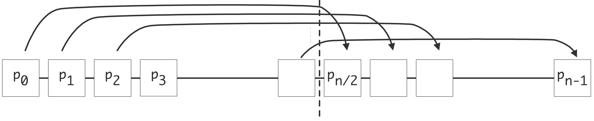</img>
<p name="caption">
FIGURE 2.19: Contention for a network link due to simultaneous messages
</p>

</float>
</figure>
<!-- environment: figure end embedded generator -->
<p name="switchToTextMode">
This
sort of conflict is called 
<i>congestion</i>
 or
<i>contention</i>
. Clearly, the more links a
parallel computer has, the smaller the chance of congestion.
</p>

<!-- index -->
<p name="switchToTextMode">

A&nbsp;precise way to describe the likelihood of congestion, is
to look at the 
<i>bisection width</i>
. This is defined as the
minimum number of links that have to be removed to partition the
processor graph into two unconnected graphs. For instance, consider
processors connected as a linear array, that is, processor $P_i$ is
connected to $P_{i-1}$ and&nbsp;$P_{i+1}$. In this case the bisection width
is&nbsp;1.
</p>

<p name="switchToTextMode">
The bisection width&nbsp;$w$ describes how many messages can, guaranteed,
be under way simultaneously in a parallel computer. Proof: take $w$
sending and $w$ receiving processors. The $w$ paths thus defined are
disjoint: if they were not, we could separate the processors into two
groups by removing only&nbsp;$w-1$ links.
</p>

<p name="switchToTextMode">
In practice, of course, more than
$w$ messages can be under way simultaneously. For instance, in a
linear array, which has $w=1$, $P/2$&nbsp;messages can be sent and received
simultaneously if all communication is between neighbors, and if a
processor can only send or receive, but not both, at any one time. If
processors can both send and receive simultaneously, $P$&nbsp;messages can
be under way in the network.
</p>

<p name="switchToTextMode">
Bisection width also describes 
<i>redundancy</i>
 in a network: if
one or more connections are malfunctioning, can a message
still find its way from sender to receiver?
</p>

<p name="switchToTextMode">
While bisection width is a measure expressing a number of wires, in
practice we care about the capacity through those wires. The relevant
concept here is 
<i>bisection bandwidth</i>
: the bandwidth across
the bisection width, which is the product of the bisection width, and
the capacity (in bits per second) of the wires.
Bisection bandwidth
can be considered as a measure for the bandwidth that can be attained
if an arbitrary half of the processors communicates with the other
half.
Bisection bandwidth is a more realistic measure than the
<i>aggregate bandwidth</i>
 which is sometimes quoted
and which is defined
as the  total data rate if every processor is sending: the number of
processors times the bandwidth of a connection times the number of
simultaneous sends a processor can perform. This can be quite
a high number, and it is typically not representative of the
communication rate that is achieved in actual applications.
</p>

<h3><a id="Busses">2.7.2</a> Busses</h3>
<p name=crumbs>
crumb trail:  > <a href="parallel.html">parallel</a> > <a href="parallel.html#Topologies">Topologies</a> > <a href="parallel.html#Busses">Busses</a>
</p>
<p name="switchToTextMode">

The first interconnect design we consider is to have all processors
on the same 
<i>memory bus</i>
. This design connects
all processors directly to the same memory pool, so it offers
a 
<i>UMA</i>
 or 
<i>SMP</i>
 model.
</p>

<p name="switchToTextMode">
The main disadvantage of using a bus is the limited scalability,
since only one processor at a time can do a memory access. To overcome this,
we need to assume that processors are slower than memory,
or that the processors have cache or other local memory to operate out of.
In the latter case, maintaining 
<i>cache coherence</i>
is easy with a bus by letting processors listen to all the memory traffic
on the bus&nbsp;-- a&nbsp;process known as 
<i>snooping</i>
.
</p>

<h3><a id="Lineararraysandrings">2.7.3</a> Linear arrays and rings</h3>
<p name=crumbs>
crumb trail:  > <a href="parallel.html">parallel</a> > <a href="parallel.html#Topologies">Topologies</a> > <a href="parallel.html#Lineararraysandrings">Linear arrays and rings</a>
</p>
<p name="switchToTextMode">

A simple way to hook up multiple processors is to connect them in a
<i>linear array</i>
<!-- index -->
: every processor has a number&nbsp;$i$, and
processor&nbsp;$P_i$ is connected to $P_{i-1}$ and&nbsp;$P_{i+1}$. The first and
last processor are possible exceptions: if they are connected to each
other, we call the architecture a 
<i>ring network</i>
.
</p>

<p name="switchToTextMode">
This solution requires each processor to have two network connections,
so the design is fairly simple.
</p>

<!-- environment: exercise start embedded generator -->
<!-- TranslatingLineGenerator exercise ['exercise'] -->

  What is the bisection width of a linear array? Of a ring?
</p name="exercise">
</exercise>
<!-- environment: exercise end embedded generator -->
<p name="switchToTextMode">

<!-- environment: exercise start embedded generator -->
</p>
<!-- TranslatingLineGenerator exercise ['exercise'] -->
  With the limited connections of a linear array, you may have to be
  clever about how to program parallel algorithms. For instance,
  consider a `broadcast' operation: processor&nbsp;$0$ has a data item that
  needs to be sent to every other processor.
</p>

<p name="switchToTextMode">
  We make the following simplifying assumptions:
<!-- environment: itemize start embedded generator -->
</p>
<!-- TranslatingLineGenerator itemize ['itemize'] -->
<li>
a processor can send any number of messages simultaneously,
<li>
but a wire can can carry only one message at a time; however,
<li>
communication between any two processors takes unit time,
      regardless of the number of processors in between them.
</ul>
</itemize>
<!-- environment: itemize end embedded generator -->
<p name="switchToTextMode">

  In a fully connected network or a star network
  you can simply write
<!-- environment: tabbing start embedded generator -->
</p>
<p style="margin-left: 40px">
<!-- TranslatingLineGenerator tabbing ['tabbing'] --><br>
<p name="switchToTextMode"><br>
    for $i=1&hellip; N-1$: \&gt;send the message to processor&nbsp;$i$<br>
</p>
<!-- environment: tabbing end embedded generator -->
<p name="switchToTextMode">
  With the assumption that a processor can send multiple messages,
  this means that the operation is done in one step.
</p>

<p name="switchToTextMode">
  Now consider a linear array. Show that, even with this unlimited capacity for
  sending, the above algorithm runs into trouble because of congestion.
</p>

<p name="switchToTextMode">
  Find a better way to organize the send operations. Hint: pretend
  that your processors are connected as a binary tree. Assume that
  there are $N=2^n-1$ processors.
  Show that the broadcast can be done in $\log N$ stages, and that
  processors only need to be able to send a single message simultaneously.
</p name="exercise">
</exercise>
<!-- environment: exercise end embedded generator -->
<!-- environment: answer start embedded generator -->

</answer>
<!-- environment: answer end embedded generator -->
<p name="switchToTextMode">
This exercise is an example of 
<i>embedding</i>
 a
`logical' communication pattern in a physical one.
</p>

<h3><a id="2Dand3Darrays">2.7.4</a> 2D and 3D arrays</h3>
<p name=crumbs>
crumb trail:  > <a href="parallel.html">parallel</a> > <a href="parallel.html#Topologies">Topologies</a> > <a href="parallel.html#2Dand3Darrays">2D and 3D arrays</a>
</p>
<p name="switchToTextMode">

A popular design for parallel computers is to organize the processors
in a two-dimensional or three-dimensional 
<i>Cartesian mesh</i>
.
This means that every processor has a coordinate $(i,j)$ or $(i,j,k)$,
and it is connected to its neighbors in all coordinate directions.
The processor design is still fairly simple: the number of network
connections (the degree of the connectivity graph) is twice the number
of space dimensions (2&nbsp;or&nbsp;3) of the network.
</p>

<p name="switchToTextMode">
It is a fairly natural idea to have 2D or 3D networks, since the world
around us is three-dimensional, and computers are often used to model
real-life phenomena. If we accept for now that the physical model
requires 
<i>nearest neighbor</i>
 type communications (which we
will see is the case in section&nbsp;
4.2.3
), then a mesh computer
is a natural candidate for running physics simulations.
</p>

<!-- environment: exercise start embedded generator -->
<!-- TranslatingLineGenerator exercise ['exercise'] -->

  What is the diameter of a 3D cube of $n\times n\times n$ processors? What is the
  bisection width? How does that change if you add wraparound torus
  connections?
</p name="exercise">
</exercise>
<!-- environment: exercise end embedded generator -->
<!-- environment: answer start embedded generator -->

</answer>
<!-- environment: answer end embedded generator -->
<p name="switchToTextMode">

<!-- environment: exercise start embedded generator -->
</p>
<!-- TranslatingLineGenerator exercise ['exercise'] -->
  Your parallel computer has its processors organized in a 2D grid.
  The chip manufacturer comes out with a new chip with same clock
  speed that is dual core instead of single core, and that will fit in
  the existing sockets. Critique the following argument: `the amount of
  work per second that can be done (that does not involve communication)
  doubles; since the network stays the same, the bisection bandwidth
  also stays the same, so I can reasonably expect my new machine to
  become twice as fast'.
</p name="exercise">
</exercise>
<!-- environment: exercise end embedded generator -->
<!-- environment: answer start embedded generator -->

</answer>
<!-- environment: answer end embedded generator -->
<p name="switchToTextMode">

Grid-based designs often have so-called 
<i>wrap-around</i>
 or
<i>torus</i>
 connections, which connect the left and right sides
of a 2D grid, as well as the top and bottom. This is illustrated in
figure&nbsp;
2.20
.
<!-- environment: figure start embedded generator -->
</p>
<!-- TranslatingLineGenerator figure ['figure'] -->
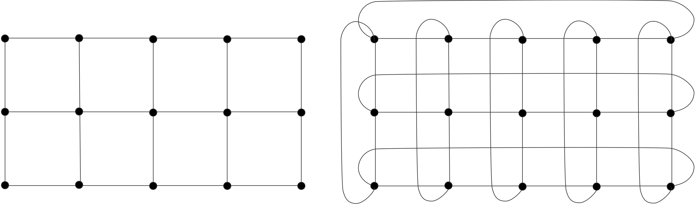</img>
<p name="caption">
FIGURE 2.20: A 2D grid with torus connections
</p>

</float>
</figure>
<!-- environment: figure end embedded generator -->
<p name="switchToTextMode">

Some computer designs claim to be a grid of high dimensionality, for
instance&nbsp;5D, but not all dimensions are equal here. For instance, a 3D
grid where each 
<i>node</i>
 is a quad-socket
quad-core can be considered as a
5D grid. However, the last two dimensions are fully connected.
</p>

<h3><a id="Hypercubes">2.7.5</a> Hypercubes</h3>
<p name=crumbs>
crumb trail:  > <a href="parallel.html">parallel</a> > <a href="parallel.html#Topologies">Topologies</a> > <a href="parallel.html#Hypercubes">Hypercubes</a>
</p>

<p name="switchToTextMode">

Above we gave a hand-waving argument for the suitability of
mesh-organized processors based on the prevalence of nearest
neighbor communications. However, sometimes sends and receives
between arbitrary processors occur. One example of this is the
above-mentioned broadcast. For this reason, it is desirable to have a
network with a smaller diameter than a mesh. On the other hand we want
to avoid the complicated design of a fully connected network.
</p>

<!-- environment: wrapfigure start embedded generator -->
<!-- TranslatingLineGenerator wrapfigure ['wrapfigure'] -->
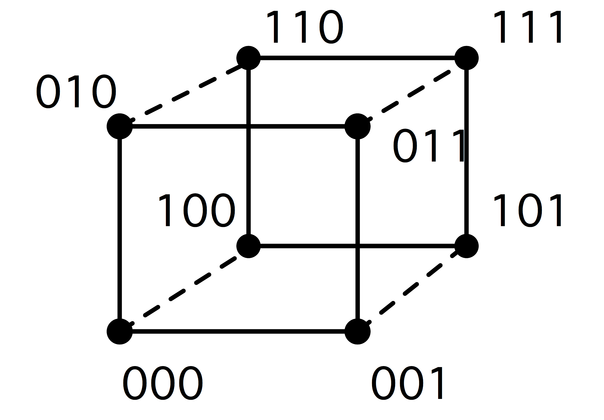</img>
<p name="caption">
WRAPFIGURE 2.21: Numbering of the nodes of a hypercube
</p>

</wrapfigure>
<!-- environment: wrapfigure end embedded generator -->
<p name="switchToTextMode">
{r}{3in}
A good intermediate solution is the 
<i>hypercube</i>
 design. An
$n$-dimensional hypercube computer has $2^n$ processors, with each
processor connected to one other in each dimension; see
figure&nbsp;
2.22
.
</p>

<!-- environment: figure start embedded generator -->
<!-- TranslatingLineGenerator figure ['figure'] -->
<!-- environment: quote start embedded generator -->
<!-- TranslatingLineGenerator quote ['quote'] -->
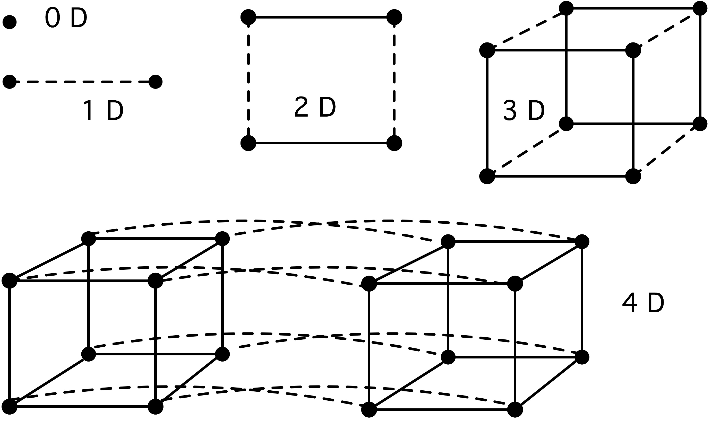</img>
</p name="quote">
</quote>
<!-- environment: quote end embedded generator -->
<p name="caption">
FIGURE 2.22: Hypercubes
</p>

</float>
</figure>
<!-- environment: figure end embedded generator -->
<p name="switchToTextMode">

<!-- environment: figure start embedded generator -->
</p>
<!-- TranslatingLineGenerator figure ['figure'] -->

</float>
</figure>
<!-- environment: figure end embedded generator -->
<p name="switchToTextMode">

An easy way to describe this is to give each processor an address
consisting of $d$&nbsp;bits: we give each node of a hypercube a number that
is the bit pattern describing its location in the cube; see
figure&nbsp;
2.23
.
</p>

<p name="switchToTextMode">
With this numbering scheme, a&nbsp;processor is then connected to all others
that have an address that differs by exactly one bit. This means that,
unlike in a grid, a processor's neighbors do not have numbers
that differ by&nbsp;1 or&nbsp;$\sqrt P$, but by&nbsp;$1,2,4,8,&hellip;$.
</p>

<p name="switchToTextMode">
The big advantages of a hypercube design are the small diameter and
large capacity for traffic through the network.
<!-- environment: exercise start embedded generator -->
</p>
<!-- TranslatingLineGenerator exercise ['exercise'] -->

  What is the diameter of a hypercube? What is the bisection width?
</p name="exercise">
</exercise>
<!-- environment: exercise end embedded generator -->
<p name="switchToTextMode">

One disadvantage is the fact that the processor design is dependent on
the total machine size. In practice, processors will be designed with
a maximum number of possible connections, and someone buying a smaller
machine then will be paying for unused capacity.  Another
disadvantage is the fact that extending a given machine can only be
done by doubling it: other sizes than $2^p$ are not possible.
</p>

<!-- environment: exercise start embedded generator -->
<!-- TranslatingLineGenerator exercise ['exercise'] -->

  Consider the parallel summing example of
  section&nbsp;
2.1
, and give the execution time of a
  parallel implementation on a
  hypercube. Show that
  the theoretical speedup from the example is attained (up to a
  factor) for the implementation on a hypercube.
</p name="exercise">
</exercise>
<!-- environment: exercise end embedded generator -->
<!-- environment: answer start embedded generator -->

</answer>
<!-- environment: answer end embedded generator -->
<p name="switchToTextMode">

<h4><a id="Embeddinggridsinahypercube">2.7.5.1</a> Embedding grids in a hypercube</h4>
<p name=crumbs>
crumb trail:  > <a href="parallel.html">parallel</a> > <a href="parallel.html#Topologies">Topologies</a> > <a href="parallel.html#Hypercubes">Hypercubes</a> > <a href="parallel.html#Embeddinggridsinahypercube">Embedding grids in a hypercube</a>
</p>
</p>

<p name="switchToTextMode">
\def\graycodepicture{
<!-- environment: wrapfigure start embedded generator -->
</p>
<!-- TranslatingLineGenerator wrapfigure ['wrapfigure'] -->
</img>
<p name="caption">
WRAPFIGURE 2.24: Gray code numbering of the nodes of a hypercube
</p>

</wrapfigure>
<!-- environment: wrapfigure end embedded generator -->
<p name="switchToTextMode">
{r}{3in}
}
</p>

<p name="switchToTextMode">
Above we made the argument that mesh-connected processors are a
logical choice for many applications that model physical phenomena.
Hypercubes do not look like a mesh, but they have enough
connections that they can simply pretend to be a mesh by ignoring
certain connections.
</p>

<!-- environment: lulu start embedded generator -->
<!-- TranslatingLineGenerator lulu ['lulu'] -->
\graycodepicture
</p name="lulu">

</lulu>
<!-- environment: lulu end embedded generator -->
<p name="switchToTextMode">
Let's say that we want the structure of a 1D array: we want processors
with a numbering so that processor $i$ can directly send data to $i-1$
and&nbsp;$i+1$. We can not use the obvious numbering of
nodes as in figure&nbsp;
2.23
. For instance, node&nbsp;1 is
directly connected to node&nbsp;0, but has a distance of&nbsp;2 to node&nbsp;2. The
right neighbor of node&nbsp;3 in a ring, node&nbsp;4, even has the maximum
distance of&nbsp;3 in this hypercube. Clearly we need to renumber the nodes
in some way.
</p>

<p name="switchToTextMode">
What we will show is that
it's possible to walk through a hypercube, touching
every corner exactly once, which is equivalent to embedding a 1D mesh
in the hypercube.
</p>

<!-- environment: figure start embedded generator -->
<!-- TranslatingLineGenerator figure ['figure'] -->
<p name="switchToTextMode">
\hbox{\fbox{1D Gray code}:
$\vcenter{$
\begin{array}{rll}
  \hphantom{1D code and reflection:}&0&1\\
\end{array}
$}
$}
</p>

<p name="switchToTextMode">
\hbox{\fbox{2D Gray code}:
$\vcenter{$
\begin{array}{rccccc}
  \hbox{1D code and reflection:}&0&1&\vdots&1&0\\
  \hbox{append 0 and 1 bit:}&0&0&\vdots&1&1
\end{array}
$}
$}
</p>

<p name="switchToTextMode">
\hbox{\fbox{3D Gray code}:
$\vcenter{$
\begin{array}{rccccccccc}
  \hbox{2D code and reflection:}&0&1&1&0&\vdots&0&1&1&0\\
  &0&0&1&1&\vdots&1&1&0&0\\
  \hbox{append 0 and 1 bit:}&0&0&0&0&\vdots&1&1&1&1
\end{array}
$}
$}
</p>

<p name="caption">
FIGURE 2.25: Gray codes
</p>

</float>
</figure>
<!-- environment: figure end embedded generator -->
<p name="switchToTextMode">

<!-- environment: notlulu start embedded generator -->
</p>

</notlulu>
<!-- environment: notlulu end embedded generator -->
<p name="switchToTextMode">
The basic concept here is a (binary reflected) 
  code}&nbsp;
<a href="https://pages.tacc.utexas.edu/~eijkhout/istc/html/bibliography.html#Gray:graycodepatent">[Gray:graycodepatent]</a>
. This is a way of ordering the
binary numbers $0&hellip;2^d-1$ as $g_0,&hellip; g_{2^d-1}$ so that $g_i$
and $g_{i+1}$ differ in only one bit. Clearly, the ordinary binary
numbers do not satisfy this: the binary representations for 1&nbsp;and&nbsp;2
already differ in two bits. Why do Gray codes help us? Well, since
$g_i$ and $g_{i+1}$ differ only in one bit, it means they are the
numbers of nodes in the hypercube that are directly connected.
</p>

<p name="switchToTextMode">
Figure&nbsp;
2.25
 illustrates how to construct a Gray
code. The procedure is recursive, and can be described informally as
`divide the cube into two subcubes, number the one subcube, cross over
to the other subcube, and number its nodes in the reverse order of the
first one'. The result for a 2D cube is in figure&nbsp;
2.24
.
</p>

<p name="switchToTextMode">
Since a Gray code offers us a way to embed a one-dimensional `mesh'
into a hypercube, we can now work our way up.
<!-- environment: exercise start embedded generator -->
</p>
<!-- TranslatingLineGenerator exercise ['exercise'] -->
  Show how a square mesh of $2^{2d}$ nodes can be embedded in a
  hypercube by appending the bit patterns of the embeddings of two
  $2^d$ node cubes. How would you accommodate a mesh of $2^{d_1+d_2}$
  nodes? A three-dimensional mesh of $2^{d_1+d_2+d_3}$ nodes?
</p name="exercise">
</exercise>
<!-- environment: exercise end embedded generator -->
<p name="switchToTextMode">

<h3><a id="Switchednetworks">2.7.6</a> Switched networks</h3>
<p name=crumbs>
crumb trail:  > <a href="parallel.html">parallel</a> > <a href="parallel.html#Topologies">Topologies</a> > <a href="parallel.html#Switchednetworks">Switched networks</a>
</p>

</p>

<p name="switchToTextMode">
\def\crossbarfig{
<!-- environment: wrapfigure start embedded generator -->
</p>
<!-- TranslatingLineGenerator wrapfigure ['wrapfigure'] -->
<!-- environment: quote start embedded generator -->
<!-- TranslatingLineGenerator quote ['quote'] -->
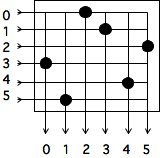</img>
</p name="quote">
</quote>
<!-- environment: quote end embedded generator -->
<p name="caption">
WRAPFIGURE 2.26: A simple cross bar connecting 6 inputs to 6 outputs
</p>

</wrapfigure>
<!-- environment: wrapfigure end embedded generator -->
<p name="switchToTextMode">
{r}{2.5in}%[ht]
}
</p>

<p name="switchToTextMode">
Above, we briefly discussed fully connected processors. They are
impractical if the connection is made by making a large number of
wires between all the processors. There is another possibility,
however, by connecting all the processors to a 
<i>switch</i>
 or
switching network. Some popular network designs are the
<i>crossbar</i>
, the 
<i>butterfly exchange</i>
, and the
<i>fat tree</i>
.
</p>

<p name="switchToTextMode">
Switching networks are made out of switching elements, each of which
have a small number (up to about a dozen) of inbound and outbound
links. By hooking all processors up to some switching element, and
having multiple stages of switching, it then becomes possible to
connect any two processors by a path through the network.
</p>

<h4><a id="Crossbar">2.7.6.1</a> Cross bar</h4>
<p name=crumbs>
crumb trail:  > <a href="parallel.html">parallel</a> > <a href="parallel.html#Topologies">Topologies</a> > <a href="parallel.html#Switchednetworks">Switched networks</a> > <a href="parallel.html#Crossbar">Cross bar</a>
</p>
<p name="switchToTextMode">

<!-- environment: notlulu start embedded generator -->
</p>

</notlulu>
<!-- environment: notlulu end embedded generator -->
<!-- environment: lulu start embedded generator -->
<!-- TranslatingLineGenerator lulu ['lulu'] -->
  \crossbarfig
</p name="lulu">

</lulu>
<!-- environment: lulu end embedded generator -->
<p name="switchToTextMode">
The simplest switching network is a cross bar, an arrangement of $n$
horizontal and vertical lines, with a switch element on each
intersection that determines whether the lines are connected; see
figure&nbsp;
2.26
. If we designate the horizontal lines as
inputs the vertical as outputs, this is clearly a way of having $n$
inputs be mapped to $n$ outputs. Every combination of inputs and
outputs (sometimes called a `permutation') is allowed.
</p>

<p name="switchToTextMode">
One advantage of this type of network is that no connection
blocks another.
The main disadvantage  is that the number of
switching elements is&nbsp;$n^2$, a&nbsp;fast growing function of the
number of processors&nbsp;$n$.
</p>

<h4><a id="Butterflyexchange">2.7.6.2</a> Butterfly exchange</h4>
<p name=crumbs>
crumb trail:  > <a href="parallel.html">parallel</a> > <a href="parallel.html#Topologies">Topologies</a> > <a href="parallel.html#Switchednetworks">Switched networks</a> > <a href="parallel.html#Butterflyexchange">Butterfly exchange</a>
</p>
<!-- index -->
<!-- index -->
<p name="switchToTextMode">

<!-- environment: figure start embedded generator -->
</p>
<!-- TranslatingLineGenerator figure ['figure'] -->
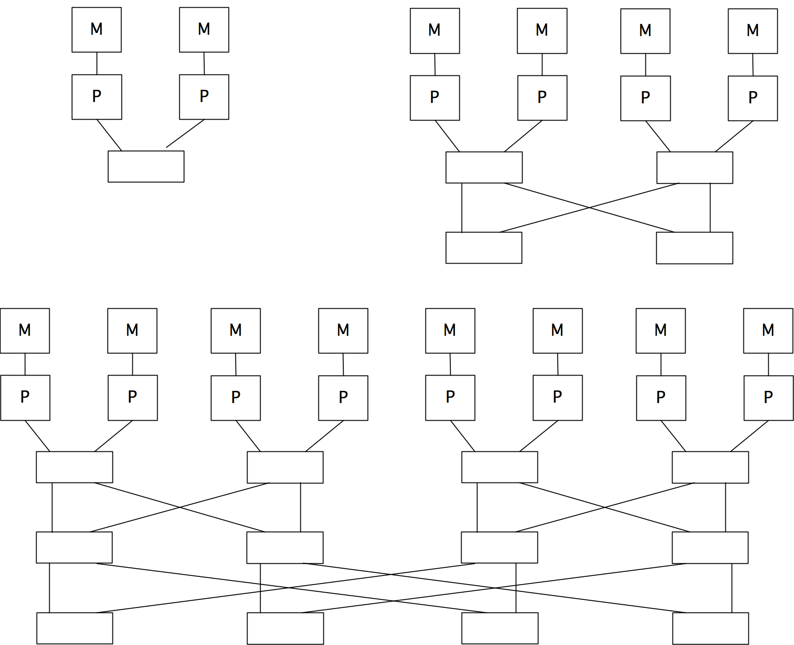</img>
<p name="switchToTextMode">
  \caption{Butterfly exchange networks for 2,4,8 processors, each with
    a local memory}

</float>
</figure>
<!-- environment: figure end embedded generator -->
<p name="switchToTextMode">

<i>Butterfly exchange</i>
elements, and they have multiple stages: as the number of processors
grows, the number of stages grows with it. Figure&nbsp;
2.27
shows shows butterfly networks to connect 2,4,&nbsp;and&nbsp;8 processors, each
with a local memory. (Alternatively, you could put all processors at
one side of the network, and all memories at the other.)
</p>

<p name="switchToTextMode">
As you can see in figure&nbsp;
2.28
, butterfly exchanges
allow several processors to access memory simultaneously. Also, their
access times are identical, so exchange networks are a way of
implementing a 
<i>UMA</i>
 architecture; see
section&nbsp;
2.4.1
. One computer that was based on a Butterfly
exchange network was the 
<i>BBN Butterfly</i>
(
<a href=http://en.wikipedia.org/wiki/BBN_Butterfly>http://en.wikipedia.org/wiki/BBN_Butterfly</a>
).  In
section&nbsp;
2.7.7.1
 we will see how these ideas are
realized in a practical cluster.
</p>

<!-- environment: figure start embedded generator -->
<!-- TranslatingLineGenerator figure ['figure'] -->
<!-- environment: quote start embedded generator -->
<!-- TranslatingLineGenerator quote ['quote'] -->
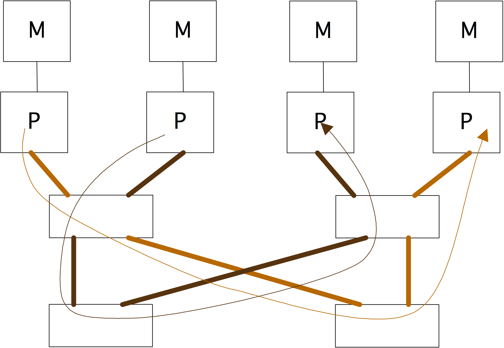</img>
</p name="quote">
</quote>
<!-- environment: quote end embedded generator -->
<p name="caption">
FIGURE 2.28: Two independent routes through a butterfly exchange network
</p>

</float>
</figure>
<!-- environment: figure end embedded generator -->
<p name="switchToTextMode">

<!-- environment: exercise start embedded generator -->
</p>
<!-- TranslatingLineGenerator exercise ['exercise'] -->
For both the simple cross bar and the butterfly
exchange, the network needs to be expanded as the number of processors grows.
Give the number of wires (of some unit length) and the number of switching
elements that is needed in both cases to connect&nbsp;$n$ processors and memories.
What is the time that a data packet needs to go from memory to processor,
expressed in the unit time that it takes to traverse a unit length of wire
and the time to traverse a switching element?
</p name="exercise">
</exercise>
<!-- environment: exercise end embedded generator -->
<p name="switchToTextMode">

<i>Packet routing</i>
<!-- index -->
 through a butterfly
network is done based on considering the bits in the destination
address. On the $i$-th level the $i$-th digit is considered;
<!-- environment: figure start embedded generator -->
</p>
<!-- TranslatingLineGenerator figure ['figure'] -->
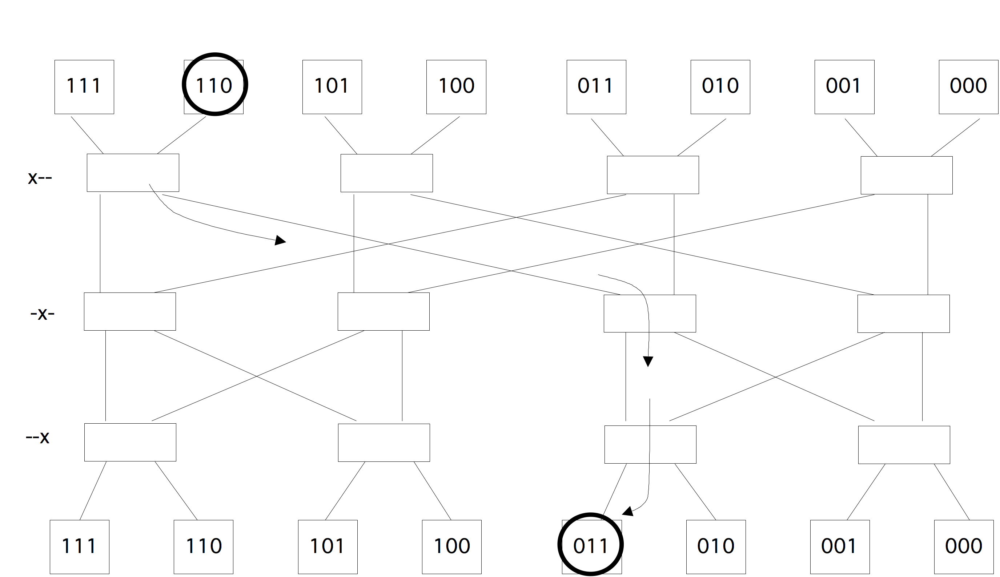</img>
<p name="caption">
FIGURE 2.29: Routing through a three-stage butterfly exchange network
</p>

</float>
</figure>
<!-- environment: figure end embedded generator -->
<p name="switchToTextMode">
if this is&nbsp;$1$, the left exit of the switch is taken, if&nbsp;$0$, the
right exit. This is illustrated in
figure&nbsp;
2.29
. If we attach the memories to the
processors, as in figure&nbsp;
2.28
, we need only two
bits (to the last switch) but a further
three bits to describe the reverse route.
</p>

<!-- index -->
<p name="switchToTextMode">

<h4><a id="Fat-trees">2.7.6.3</a> Fat-trees</h4>
<p name=crumbs>
crumb trail:  > <a href="parallel.html">parallel</a> > <a href="parallel.html#Topologies">Topologies</a> > <a href="parallel.html#Switchednetworks">Switched networks</a> > <a href="parallel.html#Fat-trees">Fat-trees</a>
</p>

<!-- index -->
</p>

<p name="switchToTextMode">
If we were to connect switching nodes like a tree, there would be a
big problem with congestion close to the root since there are only two
wires attached to the root note.  Say we have a $k$-level tree, so
there are $2^k$ leaf nodes.  If all leaf nodes in the left subtree try
to communicate with nodes in the right subtree, we have $2^{k-1}$
messages going through just one wire into the root, and similarly out
through one wire.  A fat-tree is a tree network where each level has
the same total bandwidth, so that this congestion problem does not
occur: the root will actually have $2^{k-1}$ incoming and outgoing
wires attached&nbsp;
<a href="https://pages.tacc.utexas.edu/~eijkhout/istc/html/bibliography.html#Greenberg89randomizedrouting">[Greenberg89randomizedrouting]</a>
.
Figure&nbsp;
2.30
 shows this structure on the left;
<!-- environment: figure start embedded generator -->
</p>
<!-- TranslatingLineGenerator figure ['figure'] -->
<!-- environment: quote start embedded generator -->
<!-- TranslatingLineGenerator quote ['quote'] -->
\hbox{%
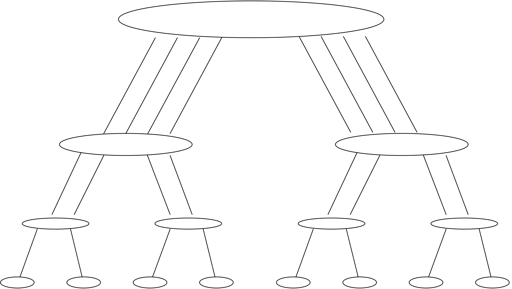</img>
  \kern20pt
  \includegraphics{stampede_leaf}
}
</p name="quote">
</quote>
<!-- environment: quote end embedded generator -->
<p name="switchToTextMode">
  \caption{A fat tree with a three-level interconnect (left);
  the leaf switches in a cabinet of the Stampede cluster (right)}

</float>
</figure>
<!-- environment: figure end embedded generator -->
<p name="switchToTextMode">
on the right is shown a cabinet of the 
<!-- index -->
{Stampede cluster},
with a 
<i>leaf switch</i>
 for top and bottom half of the cabinet.
</p>

<p name="switchToTextMode">
The first successful computer
architecture based on a fat-tree was the Connection Machines CM5.
</p>

<p name="switchToTextMode">
In fat-trees, as in other switching networks, each message carries its
own routing information. Since in a fat-tree the choices are limited
to going up a level, or switching to the other subtree at the
current level, a message needs to carry only as many bits routing
information as there are levels, which is $\log_2n$ for $n$
processors.
</p>

<!-- environment: exercise start embedded generator -->
<!-- TranslatingLineGenerator exercise ['exercise'] -->
Show that the 
<i>bisection width of a fat tree</i>
 is $P/2$
where $P$ is the number of processor leaf nodes. Hint: show that there
is only one way of splitting a fat tree-connected set of processors
into two connected subsets.
</p name="exercise">
</exercise>
<!-- environment: exercise end embedded generator -->
<p name="switchToTextMode">

The theoretical exposition of fat-trees in&nbsp;
<a href="https://pages.tacc.utexas.edu/~eijkhout/istc/html/bibliography.html#Leiserson:fattree">[Leiserson:fattree]</a>
shows that fat-trees are optimal in some sense: it can deliver
messages as fast (up to logarithmic factors) as any other network that
takes the same amount of space to build. The underlying assumption of
this statement is that switches closer to the root have to connect
more wires, therefore take more components, and correspondingly are
larger.
This argument, while theoretically interesting, is of no practical
significance, as the physical size of the network hardly plays a role
in the biggest currently available computers that use fat-tree
interconnect. For instance, in the
<i>TACC Frontera cluster</i>
 at The
University of Texas at Austin,
there are only 6 
<i>core switch</i>
es
(that is, cabinents housing the top levels of the fat tree),
connecting 91 processor cabinets.
</p>

<p name="switchToTextMode">
A fat tree, as sketched above, would be costly to build, since for
every next level a new, bigger, switch would have to be designed. In
practice, therefore, a network with the characteristics of a fat-tree
is constructed from simple switching elements; see
figure&nbsp;
2.31
.
<!-- environment: figure start embedded generator -->
</p>
<!-- TranslatingLineGenerator figure ['figure'] -->
<!-- environment: quote start embedded generator -->
<!-- TranslatingLineGenerator quote ['quote'] -->
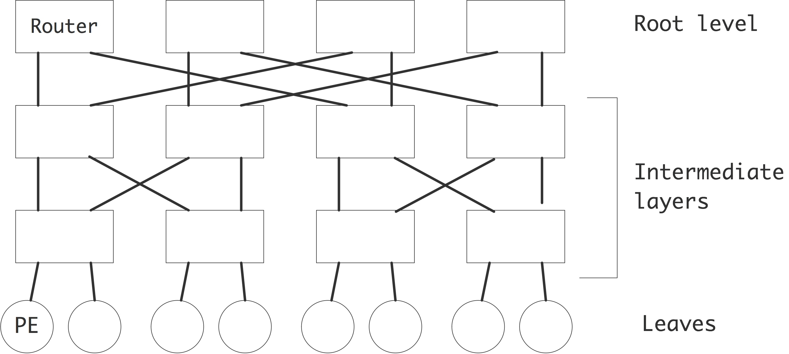</img>
</p name="quote">
</quote>
<!-- environment: quote end embedded generator -->
<p name="caption">
FIGURE 2.31: A fat-tree built from simple switching elements
</p>

</float>
</figure>
<!-- environment: figure end embedded generator -->
<p name="switchToTextMode">
This network is equivalent in its bandwidth and routing possibilities
to a fat-tree. Routing algorithms will be slightly more complicated:
in a fat-tree, a data packet can go up in only one way, but here a
packet has to know to which of the two higher switches to route.
</p>

<p name="switchToTextMode">
This type of switching network is one case of a 
  network}&nbsp;
<a href="https://pages.tacc.utexas.edu/~eijkhout/istc/html/bibliography.html#Clos1953">[Clos1953]</a>
.
</p>

<!-- index -->
<p name="switchToTextMode">

<h4><a id="Over-subscriptionandcontention">2.7.6.4</a> Over-subscription and contention</h4>
<p name=crumbs>
crumb trail:  > <a href="parallel.html">parallel</a> > <a href="parallel.html#Topologies">Topologies</a> > <a href="parallel.html#Switchednetworks">Switched networks</a> > <a href="parallel.html#Over-subscriptionandcontention">Over-subscription and contention</a>
</p>
</p>

<p name="switchToTextMode">
In practice, fat-tree networks do not use 2-in-2-out elements,
but switches that are more on the order of 20-in-20-out.
This makes it possible for the number of levels in a network to
be limited to 3 or&nbsp;4.
(The top level switches are known as 
<i>spine card</i>
s.)
</p>

<p name="switchToTextMode">
An extra complication to the analysis of networks in this case
is the possibility of
<i>oversubscription</i>
.
The ports in a network card are configurable as either in or&nbsp;out,
and only the total is fixed.
Thus, a&nbsp;40-port switch can be configured as 20-in and 20-out,
or 21-in and 19-out, et cetera.
Of course, if all 21 nodes connected to the switch send at the same time,
the 19 out ports will limit the bandwdidth.
</p>

<!-- environment: figure start embedded generator -->
<!-- TranslatingLineGenerator figure ['figure'] -->
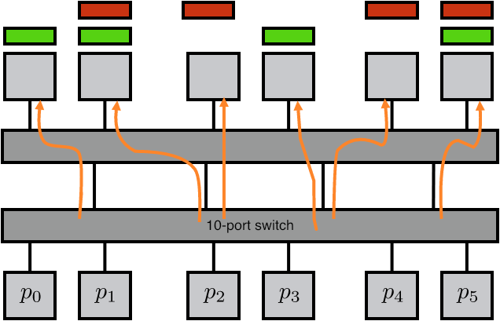</img>
<p name="caption">
FIGURE 2.32: Port contention in an over-subscribed switch
</p>

</float>
</figure>
<!-- environment: figure end embedded generator -->
<p name="switchToTextMode">

There is a further problem.
Let us considering building a small cluster with switches
configured to have $p$ in-ports and $w$ out-ports,
meaning we have $p+w$-port switches.
Figure&nbsp;
2.32
 depicts two of such switching,
connecting a total of $2p$ nodes.
If a node sends data through the switch,
its choice of the $w$ available wires is determined
by the target node.
This is known as 
<i>output routing</i>
.
</p>

<p name="switchToTextMode">
Clearly we can only expect $w$ nodes to be able to send
with message collisions, since that is the number of available
wires between the switches.
However, for many choices of $w$ targets there will be
contention for the wires regardless.
This is an example of the 
<i>birthday paradox</i>
.
</p>

<!-- environment: exercise start embedded generator -->
<!-- TranslatingLineGenerator exercise ['exercise'] -->
  Consider the above architecture with $p$ nodes sending through $w$ wires between
  the switching.
  Code a simulation where $w'\leq w$ out of $p$ nodes send a message to a randomly
  selected target node.
  What is the probability of collision as a function of $w',w,p$?
  Find a way to tabulate or plot data.
</p>

<p name="switchToTextMode">
  For bonus points, give a statistical analysis of the simple case&nbsp;$w'=2$.
</p>

</exercise>
<!-- environment: exercise end embedded generator -->
<p name="switchToTextMode">

<h3><a id="Clusternetworks">2.7.7</a> Cluster networks</h3>
<p name=crumbs>
crumb trail:  > <a href="parallel.html">parallel</a> > <a href="parallel.html#Topologies">Topologies</a> > <a href="parallel.html#Clusternetworks">Cluster networks</a>
</p>
</p>

<p name="switchToTextMode">
The above discussion was somewhat abstract, but in real-life clusters
you can actually see the network designs reflected. For instance,
<i>fat tree cluster networks</i>
<!-- index -->
<!-- environment: figure start embedded generator -->
</p>
<!-- TranslatingLineGenerator figure ['figure'] -->
<p name="switchToTextMode">
  \hbox{%
</img>
</img>
  }
<p name="caption">
FIGURE 2.33: Networks switches for the TACC Ranger and Stampede clusters
</p>

</float>
</figure>
<!-- environment: figure end embedded generator -->
<p name="switchToTextMode">
will have a central cabinet corresponding to the top level in the tree.
Figure&nbsp;
2.33
 shows the switches of the TACC
<i>Ranger</i>
<!-- index -->
 (no longer in service)
and 
<i>Stampede</i>

<!-- index -->
 clusters.
In the second picture it can be seen that there are actually
multiple redundant fat-tree networks.
</p>

<p name="switchToTextMode">
On the other hand, clusters such as the 
<i>IBM BlueGene</i>
,
which is based on a 
<i>torus-based cluster</i>

<!-- index -->
,
will look like a collection of identical cabinets, since each contains
<!-- environment: figure start embedded generator -->
</p>
<!-- TranslatingLineGenerator figure ['figure'] -->
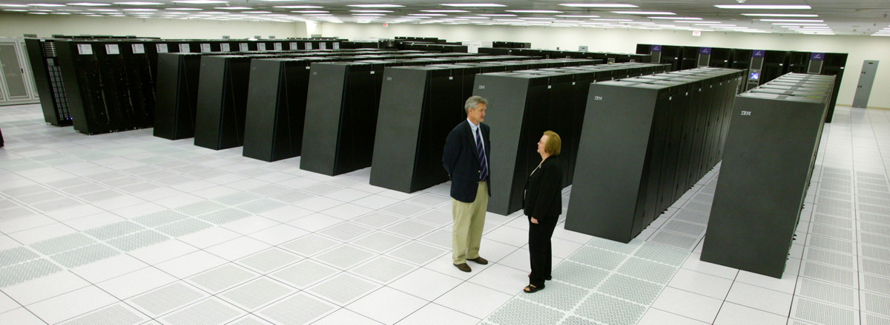</img>
<p name="caption">
FIGURE 2.34: A BlueGene computer
</p>

</float>
</figure>
<!-- environment: figure end embedded generator -->
<p name="switchToTextMode">
an identical part of the network; see figure&nbsp;
2.34
.
</p>

<h4><a id="Casestudy:Stampede">2.7.7.1</a> Case study: Stampede</h4>
<p name=crumbs>
crumb trail:  > <a href="parallel.html">parallel</a> > <a href="parallel.html#Topologies">Topologies</a> > <a href="parallel.html#Clusternetworks">Cluster networks</a> > <a href="parallel.html#Casestudy:Stampede">Case study: Stampede</a>
</p>

<p name="switchToTextMode">

As an example of networking in practice, let's consider the
<i>Stampede</i>
<!-- index -->
 cluster at the Texas
Advanced Computing Center. This can be described as a multi-root
multi-stage fat-tree.
<!-- environment: itemize start embedded generator -->
</p>
<!-- TranslatingLineGenerator itemize ['itemize'] -->
<li>
Each rack consists of 2 chassis, with 20 nodes each.
<li>
Each chassis has a leaf switch that is an internal
<i>crossbar</i>
 that gives perfect connectivity between the
  nodes in a chassis;
<li>
The leaf switch has 36 ports, with 20 connected to the nodes and
  16&nbsp;outbound. This 
<i>oversubscription</i>
 implies that at most
  16 nodes can have perfect bandwidth when communicating outside the
  chassis.
<li>
There are 8 central switches that function as 8 independent
  fat-tree root. Each chassis is connected by two connections to a
  `leaf card' in each
  of the central switches, taking up precisely the 16 outbound ports.
<li>
Each central switch has 18 spine cards with 36 ports each, with
  each port connecting to a different leaf card.
<li>
Each central switch has 36 leaf cards with 18 ports to the leaf switches
  and 18 ports to the spine cards. This means we can support 648
  chassis, of which 640 are actually used.
</ul>
</itemize>
<!-- environment: itemize end embedded generator -->
<p name="switchToTextMode">
One of the optimizations in the network is that two connections to the
same leaf card communicate without the latency of the higher tree levels.
This means that 16 nodes in one chassis and 16 nodes in another can
have perfect connectivity.
</p>

<p name="switchToTextMode">
However, with
<i>static routing</i>
, such as used in 
<i>Infiniband</i>
,
there is a fixed port associated with each destination. (This mapping
of destination to port is in the 
<i>routing tables</i>
 in
each switch.) Thus, for some subsets of 16 nodes out 20 possible
destination there will be perfect bandwidth, but other subsets will
see the traffic for two destinations go through the same port.
</p>

<h4><a id="Casestudy:CrayDragonflynetworks">2.7.7.2</a> Case study: Cray Dragonfly networks</h4>
<p name=crumbs>
crumb trail:  > <a href="parallel.html">parallel</a> > <a href="parallel.html#Topologies">Topologies</a> > <a href="parallel.html#Clusternetworks">Cluster networks</a> > <a href="parallel.html#Casestudy:CrayDragonflynetworks">Case study: Cray Dragonfly networks</a>
</p>
<p name="switchToTextMode">

<!-- index -->
The 
is an interesting practical compromise. Above we argued that a fully
connected network would be too expensive to scale up. However, it is possible to
have a fully connected set of processors, if the number stays
limited.  The Dragonfly design uses small fully connected groups, and
then makes a fully connected graph of these groups.
</p>

<p name="switchToTextMode">
This introduces an obvious asymmetry, since processors inside a group
have a larger bandwidth then between groups. However, thanks to
<i>dynamic routing</i>
 messages can take a non-minimal path,
being routed through other groups. This can alleviate the contention problem.
</p>

<h3><a id="Bandwidthandlatency">2.7.8</a> Bandwidth and latency</h3>
<p name=crumbs>
crumb trail:  > <a href="parallel.html">parallel</a> > <a href="parallel.html#Topologies">Topologies</a> > <a href="parallel.html#Bandwidthandlatency">Bandwidth and latency</a>
</p>

<p name="switchToTextMode">

The statement above that sending a message can be considered a unit
time operation, is of course unrealistic. A large message will take
longer to transmit than a short one. There are two concepts to arrive
at a more realistic description of the transmission process; we have
already seen this in section&nbsp;
1.3.2
 in the context
of transferring data between cache levels of a processor.
<!-- environment: description start embedded generator -->
</p>
<!-- TranslatingLineGenerator description ['description'] -->
<li>
[latency] Setting up a communication between two processors takes
  an amount of time that is independent of the message size. The time
  that this takes is known as the 
<i>latency</i>
 of a message.
  There are various causes for this delay.
<!-- environment: itemize start embedded generator -->
</p>
<!-- TranslatingLineGenerator itemize ['itemize'] -->
<li>
The two processors engage in `hand-shaking', to make sure that
    the recipient is ready, and that appropriate buffer space is
    available for receiving the message.
<li>
The message needs to be encoded for transmission by the sender,
    and decoded by the receiver.
<li>
The actual transmission may take time: parallel computers are
    often big enough that, even at lightspeed, the first byte of a
    message can take hundreds of cycles to traverse the distance
    between two processors.
</ul>
</itemize>
<!-- environment: itemize end embedded generator -->
<li>
[bandwidth] After a transmission between two processors has been
  initiated, the main number of interest is the number of bytes per
  second that can go through the channel. This is known as the
<i>bandwidth</i>
. The bandwidth can usually be determined by
  the 
<i>channel rate</i>
, the rate at which a physical link can
  deliver bits, and the 
<i>channel width</i>
, the number of
  physical wires in a link. The channel width is typically a multiple
  of 16, usually 64 or&nbsp;128. This is also expressed by saying that a
  channel can send one or&nbsp;two 8-byte words simultaneously.
</ul>
</description>
<!-- environment: description end embedded generator -->
<p name="switchToTextMode">

Bandwidth and latency are formalized in the expression
\[
 T(n)=\alpha+\beta n 
\]
for the transmission time of an $n$-byte message. Here, $\alpha$&nbsp;is
the latency and $\beta$&nbsp;is the time per byte, that is, the inverse of
bandwidth. Sometimes we consider data transfers that involve
communication, for instance in the case of a 
  operation}; see section&nbsp;
6.1
. We then extend
the transmission time formula to
\[
 T(n)=\alpha+\beta n+\gamma n 
\]
where $\gamma$ is the time per operation, that is, the inverse of the
<i>computation rate</i>
.
</p>

<p name="switchToTextMode">
It would also be possible to refine this formulas as
\[
 T(n,p) = \alpha+\beta n+\delta p 
\]
where $p$ is the number of network `hops' that is traversed. However,
on most networks the value of $\delta$ is far lower than of&nbsp;$\alpha$,
so we will ignore it here. Also, in fat-tree networks
(section&nbsp;
2.7.6.3
) the number of hops is of the order of
$\log P$, where $P$&nbsp;is the total number of processors, so it can never
be very large anyway.
</p>

<h3><a id="Localityinparallelcomputing">2.7.9</a> Locality in parallel computing</h3>
<p name=crumbs>
crumb trail:  > <a href="parallel.html">parallel</a> > <a href="parallel.html#Topologies">Topologies</a> > <a href="parallel.html#Localityinparallelcomputing">Locality in parallel computing</a>
</p>

<!-- index -->
<p name="switchToTextMode">

In section&nbsp;
1.6.2
 you found a discussion of
locality concepts in single-processor computing.
The concept of 
<i>locality in parallel computing</i>

comprises all this and a few levels more.
</p>

<p name="switchToTextMode">

<b>Between cores; private cache</b><br>
 Cores on modern processors have
private coherent caches. This means that
 it looks like you don't have to worry about locality, since data
  is accessible no matter what cache it is in. However, maintaining coherence
  costs bandwidth, so it is best to keep access localized.
</p>

<p name="switchToTextMode">

<b>Between cores; shared cache</b><br>
 The cache that is shared between cores
is one place where you don't have to worry about locality: this is memory that
is truly symmetric between the processing cores.
</p>

<p name="switchToTextMode">

<b>Between sockets</b><br>
 The sockets on a node (or motherboard)
appear to the programmer to have shared memory, but this is really
<i>NUMA</i>
 access (section&nbsp;
2.4.2
) since the memory is
associated with specific sockets.
</p>

<p name="switchToTextMode">

<b>Through the network structure</b><br>
 Some networks have clear locality effects.
You saw a simple example in section&nbsp;
2.7.1
, and
in general it is clear that any grid-type network will favor communication
between `nearby' processors. Networks based on fat-trees seem free of such
contention issues, but the levels induce a different form of locality.
One level higher than the locality on a node, small groups of nodes
are often connected by a 
<i>leaf switch</i>
,
which prevents data from going to the central switch.
</p>

<!-- index -->
<p name="switchToTextMode">

<h2><a id="Multi-threadedarchitectures">2.8</a> Multi-threaded architectures</h2>
<p name=crumbs>
crumb trail:  > <a href="parallel.html">parallel</a> > <a href="parallel.html#Multi-threadedarchitectures">Multi-threaded architectures</a>
</p>

<!-- TranslatingLineGenerator file ['file'] -->
</p>

<p name="switchToTextMode">
The architecture of modern CPUs is largely dictated by the fact that
getting data from memory is much slower than processing it. Hence, a
hierarchy of ever faster and smaller memories tries to keep data as close to
the processing unit as possible, mitigating the long latency and small
bandwidth of main memory. The 
<span title="acronym" ><i>ILP</i></span>
 in the processing unit
also helps to hide the latency and more fully utilize the available
bandwidth.
</p>

<p name="switchToTextMode">
However, finding 
<span title="acronym" ><i>ILP</i></span>
 is a job for the compiler and
there is a limit to what it can practically find. On the other hand,
scientific codes are often very 
<i>data parallel</i>
 in a sense
that is obvious to the programmer, though not necessarily to the
compiler. Would it be possible for the programmer to specify this
parallelism explicitly and for the processor to use it?
</p>

<p name="switchToTextMode">
In section~
2.3.1
 you saw that 
<span title="acronym" ><i>SIMD</i></span>
 architectures can be
programmed in an explicitly data parallel way. What if we have a great
deal of data parallelism but not that many processing units? In that
case, we could turn the parallel instruction streams into threads (see
section~
2.6.1
) and have multiple threads be executed on
each processing unit. Whenever a thread would stall because of an
outstanding memory request, the processor could switch to another
thread for which all the necessary inputs are available. This is
called 
<i>multi-threading</i>
. While it sounds like a way of
preventing the processor from waiting for memory, it can also be
viewed as a way of keeping memory maximally occupied.
</p>

<!-- environment: exercise start embedded generator -->
<!-- TranslatingLineGenerator exercise ['exercise'] -->
  If you consider the long latency and limited bandwidth of memory as
  two separate problems, does multi-threading address them both?
</p name="exercise">
</exercise>
<!-- environment: exercise end embedded generator -->
<!-- environment: answer start embedded generator -->

</answer>
<!-- environment: answer end embedded generator -->
<p name="switchToTextMode">

The problem here is that most CPUs are not good
at switching quickly between threads. A&nbsp;
<i>context switch</i>
(switching between one thread and another) takes a large number of
cycles, comparable to a wait for data from main memory. In a so-called
<i>MTA</i>
 a context-switch is very efficient, sometimes as little
as a single
cycle, which makes it possible for one processor to work on many
threads simultaneously.
</p>

<p name="switchToTextMode">
The multi-threaded concept was explored in the 
  Computer}{MTA} machine, which evolved into the current
<i>Cray XMT</i>
<!-- environment: footnoteenv start embedded generator -->
</p>
<!-- TranslatingLineGenerator footnoteenv ['footnoteenv'] -->
{Tera Computer renamed itself
<i>Cray Inc.</i>
 after acquiring 
<i>Cray Research</i>
 from
<i>SGI</i>
.}
</p name="footnoteenv">
)
</footnoteenv>
<!-- environment: footnoteenv end embedded generator -->
<p name="switchToTextMode">
  .
</p>

<p name="switchToTextMode">
The other example of an 
<span title="acronym" ><i>MTA</i></span>
 is the 
<span title="acronym" ><i>GPU</i></span>
, where the processors
work as 
<span title="acronym" ><i>SIMD</i></span>
 units, while being themselves multi-threaded; see
section&nbsp;
2.9.3
.
</p>

<p name="switchToTextMode">

<h2><a id="Co-processors,includingGPUs">2.9</a> Co-processors, including GPUs</h2>
<p name=crumbs>
crumb trail:  > <a href="parallel.html">parallel</a> > <a href="parallel.html#Co-processors,includingGPUs">Co-processors, including GPUs</a>
</p>

<!-- index -->
</p>

<p name="switchToTextMode">
Current CPUs are built to be moderately efficient at just about any
conceivable computation. This implies that by restricting the
functionality of a processor it may be possible to raise its
efficiency, or lower its power consumption at similar
efficiency. Thus, the idea of incorporating a 
<i>co-processor</i>

attached to the 
<i>host process</i>
has been explored many times. For instance, Intel's 8086 chip, which
powered the first generation of IBM PCs, could have a numerical
co-processor, the 80287, added to it. This processor was very
efficient at transcendental functions and it also incorporated
<span title="acronym" ><i>SIMD</i></span>
 technology. Using separate functionality for graphics has also
been popular, leading to the 
<i>SSE</i>
 instructions for the x86 processor,
and separate 
<span title="acronym" ><i>GPU</i></span>
 units to be attached to the PCI-X bus.
</p>

<p name="switchToTextMode">
Further examples are the use of co-processors
  for 
<span title="acronym" ><i>DSP</i></span>
 instructions, as well as 
<span title="acronym" ><i>FPGA</i></span>
 boards which can be
  reconfigured to accommodate specific needs.
Early 
<i>array processors</i>
such as the 
<i>ICL DAP</i>
 were also co-processors.
</p>

<p name="switchToTextMode">
In this section we look briefly at some modern incarnations of this idea,
in particular 
<span title="acronym" ><i>GPUs</i></span>
.
</p>

<h3><a id="Alittlehistory">2.9.1</a> A little history</h3>
<p name=crumbs>
crumb trail:  > <a href="parallel.html">parallel</a> > <a href="parallel.html#Co-processors,includingGPUs">Co-processors, including GPUs</a> > <a href="parallel.html#Alittlehistory">A little history</a>
</p>
<p name="switchToTextMode">

Co-processors can be programmed in two different ways: sometimes
it is seamlessly integrated, and certain instructions are
automatically executed there, rather than on the `host' processor. On
the other hand, it is also possible that co-processor functions need
to be explicitly invoked, and it may even be possible to overlap
co-processor functions with host functions. The latter case may sound
attractive from an efficiency point of view, but it raises a serious
problem of programmability. The programmer now needs to identify
explicitly two streams of work: one for the host processor and one for
the co-processor.
</p>

<p name="switchToTextMode">
Some notable parallel machines with co-processors are:
<!-- environment: itemize start embedded generator -->
</p>
<!-- TranslatingLineGenerator itemize ['itemize'] -->
<li>
The 
<i>Intel Paragon</i>
 (1993) had two processors per
  node, one for communication and the other for computation. These
  were in fact identical, the 
<i>Intel i860</i>
Intel i860
  processor. In a later revision, it became possible to pass data and
  function pointers to the communication processors.
<li>
The 
<i>IBM Roadrunner</i>
 at Los Alamos was the first
  machine to reach a PetaFlop.
  (The 
<i>Grape computer</i>
  had reached this point earlier, but that was a special purpose
  machine for molecular dynamics calculations.)
  It achieved this
  speed through the use of Cell
<!-- index -->
  co-processors. Incidentally, the Cell processor is in essence the
  engine of the Sony Playstation3, showing again the commoditization
  of supercomputers (section&nbsp;
2.3.3
).
<li>
The Chinese 
<i>Tianhe-1A</i>
 topped the Top 500 list in
  2010, reaching about 2.5 PetaFlops through the use of
  NVidia
<!-- index -->
<span title="acronym" ><i>GPUs</i></span>
.
<li>
The 
<i>Tianhe-2</i>
 and the 
<i>TACC Stampede cluster</i>
  use 
<i>Intel Xeon Phi</i>
 co-processors.
</ul>
</itemize>
<!-- environment: itemize end embedded generator -->
<p name="switchToTextMode">
The Roadrunner and Tianhe-1A are examples of co-processors that are
very powerful, and that need to be explicitly programmed independently
of the host CPU. For instance, code running on the 
<span title="acronym" ><i>GPUs</i></span>
 of the
Tianhe-1A is programmed in 
<i>CUDA</i>
 and compiled separately.
</p>

<p name="switchToTextMode">
In both cases the programmability problem is further exacerbated by
the fact that the co-processor can not directly talk to the network.
To send data from one co-processor to another it has to be passed to a
host processor, from there through the network to the other host
processor, and only then moved to the target co-processor.
</p>

<!-- index -->
<p name="switchToTextMode">

<h3><a id="Bottlenecks">2.9.2</a> Bottlenecks</h3>
<p name=crumbs>
crumb trail:  > <a href="parallel.html">parallel</a> > <a href="parallel.html#Co-processors,includingGPUs">Co-processors, including GPUs</a> > <a href="parallel.html#Bottlenecks">Bottlenecks</a>
</p>
</p>

<p name="switchToTextMode">
Co-processors often have their own memory, and the
<i>Intel Xeon Phi</i>
 can run programs independently, but
more often there is the question of how to access the memory of the
host processor. A&nbsp;popular solution is to connect the co-processor
through a 
<i>PCI bus</i>
. Accessing host memory this way is
slower than the direct connection that the host processor has. For
instance, the 
<i>Intel Xeon Phi</i>
 has a
<i>bandwidth</i>
<!-- index -->
 of 512-bit wide at
5.5GT per second (we will get to that `GT' in a second), while its
connection to host memory is 5.0GT/s, but only 16-bit wide.
</p>

<p name="switchToTextMode">

<b>GT measure</b><br>
 We are used to seeing bandwidth
measured in gigabits per second. For a 
<i>PCI bus</i>
 one often
see the 
<i>GT</i>

<!-- index -->
 measure. This stands
for giga-transfer, and it measures how fast the bus can change state
between zero and&nbsp;one.
Normally, every state transition would correspond to a bit, except that
the bus has to provide its own clock information, and if you would send a stream
of identical bits the clock would get confused. Therefore, every 8&nbsp;bits
are encoded in 10&nbsp;bits, to prevent such streams. However, this means
that the effective bandwidth is lower than the theoretical number,
by a factor of&nbsp;$4/5$ in this case.
</p>

<p name="switchToTextMode">
And since manufacturers like to give a positive spin on things,
they report the higher number.
</p>

<h3><a id="GPUcomputing">2.9.3</a> GPU computing</h3>
<p name=crumbs>
crumb trail:  > <a href="parallel.html">parallel</a> > <a href="parallel.html#Co-processors,includingGPUs">Co-processors, including GPUs</a> > <a href="parallel.html#GPUcomputing">GPU computing</a>
</p>

<!-- index -->
<!-- TranslatingLineGenerator file ['file'] -->
<p name="switchToTextMode">

A 
<i>GPU</i>
 (or sometimes 
<i>GPGPU</i>
) is a special purpose processor,
designed for fast graphics processing. However, since the operations
done for graphics are a form of arithmetic, 
<span title="acronym" ><i>GPUs</i></span>
 have gradually
evolved a design that is also useful for non-graphics computing.
The general design of a 
<span title="acronym" ><i>GPU</i></span>
 is motivated by the `graphics
pipeline': identical
operations are performed on many data elements
in a form of 
<i>data parallelism</i>
(section~
2.5.1
),
and a number of such
blocks of data parallelism can be active at the same time.
</p>

<!-- environment: wrapfigure start embedded generator -->
<!-- TranslatingLineGenerator wrapfigure ['wrapfigure'] -->
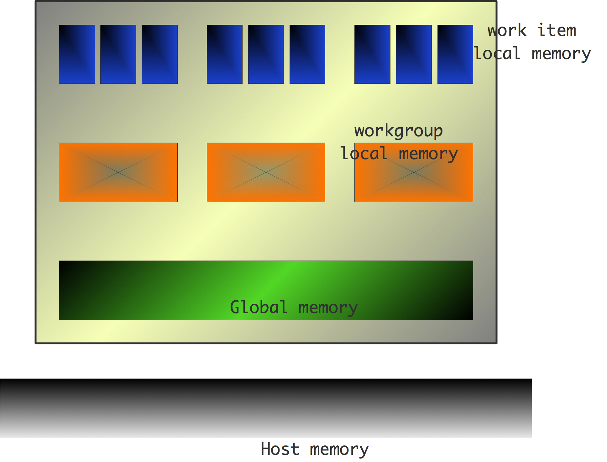</img>
<p name="caption">
WRAPFIGURE 2.35: Memory structure of a GPU
</p>

</wrapfigure>
<!-- environment: wrapfigure end embedded generator -->
<p name="switchToTextMode">
{r}{3.5in}
The basic limitations that hold for a CPU hold for a 
<span title="acronym" ><i>GPU</i></span>
:
accesses to memory incur a long latency. The solution to this problem
in a CPU is to introduce levels of cache; in the case of a 
<span title="acronym" ><i>GPU</i></span>
 a
different approach is taken (see also
section~
2.8
). 
<span title="acronym" ><i>GPUs</i></span>
 are concerned with
<i>throughput computing</i>
, delivering large amounts of data
with high average rates, rather than any single result as quickly as
possible. This is made possible by supporting many threads
(section~
2.6.1
) and having very fast switching between
them. While one thread is waiting for data from memory, another thread
that already has its data can proceed with its computations.
</p>

<h4><a id="SIMD-typeprogrammingwithkernels">2.9.3.1</a> SIMD-type programming with kernels</h4>
<p name=crumbs>
crumb trail:  > <a href="parallel.html">parallel</a> > <a href="parallel.html#Co-processors,includingGPUs">Co-processors, including GPUs</a> > <a href="parallel.html#GPUcomputing">GPU computing</a> > <a href="parallel.html#SIMD-typeprogrammingwithkernels">SIMD-type programming with kernels</a>
</p>

<p name="switchToTextMode">

Present day 
<span title="acronym" ><i>GPUs</i></span>
<!-- environment: footnoteenv start embedded generator -->
</p>
<!-- TranslatingLineGenerator footnoteenv ['footnoteenv'] -->
{The most popular GPUs today are made by
  NVidia, and are programmed in 
<i>CUDA</i>
, an extension of the
  C language.}
</p name="footnoteenv">
)
</footnoteenv>
<!-- environment: footnoteenv end embedded generator -->
<p name="switchToTextMode">
have an architecture that combines 
<span title="acronym" ><i>SIMD</i></span>
and 
<span title="acronym" ><i>SPMD</i></span>
 parallelism. Threads are not completely independent, but
are ordered in 
<i>thread blocks</i>
, where all threads in the
block execute the same instruction, making the execution 
<span title="acronym" ><i>SIMD</i></span>
. It
is also possible to schedule the same instruction stream
(a~`kernel'
<!-- index -->
 in Cuda terminology) on more than one
thread block. In this case, thread blocks can be out of sync, much
like processes in an 
<span title="acronym" ><i>SPMD</i></span>
 context. However, since we are dealing
with threads here, rather than processes, the term 
<i>SIMT</i>
 is used.
</p>

<p name="switchToTextMode">
This software design is apparent in the hardware; for instance, an
NVidia 
<span title="acronym" ><i>GPU</i></span>
 has 16--30 
<span title="acronym" ><i>SMs</i></span>
, and a 
<span title="acronym" ><i>SMs</i></span>
 consists of 8
<span title="acronym" ><i>SPs</i></span>
, which correspond to processor cores; see
figure~
2.36
. The 
<span title="acronym" ><i>SPs</i></span>
 act in true SIMD fashion.
The number of cores in a 
<span title="acronym" ><i>GPU</i></span>
 is
typically larger than in traditional multi-core processors, but the
cores are more limited. Hence, the term 
<i>manycore</i>
 is used here.
</p>

<!-- environment: figure start embedded generator -->
<!-- TranslatingLineGenerator figure ['figure'] -->
<!-- environment: quote start embedded generator -->
<!-- TranslatingLineGenerator quote ['quote'] -->
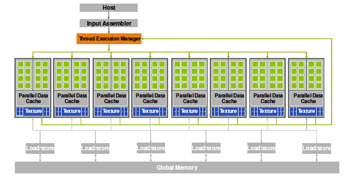</img>
</p name="quote">
</quote>
<!-- environment: quote end embedded generator -->
<p name="caption">
FIGURE 2.36: Diagram of a GPU
</p>

</float>
</figure>
<!-- environment: figure end embedded generator -->
<p name="switchToTextMode">

The 
<span title="acronym" ><i>SIMD</i></span>
, or 
<i>data parallel</i>
, nature of 
<span title="acronym" ><i>GPUs</i></span>
 becomes
apparent in the way 
<i>CUDA</i>
 starts
processes. A~
<i>kernel</i>

<!-- index -->
, that is, a function that will
be executed on the 
<span title="acronym" ><i>GPU</i></span>
, is started on $mn$ cores by:
<!-- environment: verbatim start embedded generator -->
</p>
KernelProc&lt;&lt; m,n &gt;&gt;(args)
</pre>
</verbatim>
<!-- environment: verbatim end embedded generator -->
<p name="switchToTextMode">
The collection of $mn$ cores executing the kernel is known as a
<i>grid</i>
<!-- index -->
, and it is structured as
$m$&nbsp;
<i>thread blocks</i>
 of $n$&nbsp;threads each.
A&nbsp;thread block can have up to 512 threads.
</p>

<p name="switchToTextMode">
Recall that threads share an address space (see
section&nbsp;
2.6.1
), so they need a way to identify what part
of the data each thread will operate on. For this, the blocks in a
thread are numbered with $x,y$ coordinates, and the threads in a block
are numbered with $x,y,z$ coordinates. Each thread knows its
coordinates in the block, and its block's coordinates in the grid.
</p>

<p name="switchToTextMode">
We illustrate this with a vector addition example:
<!-- environment: verbatim start embedded generator -->
</p>
// Each thread performs one addition
__global__ void vecAdd(float* A, float* B, float* C)
{
  int i = threadIdx.x + blockDim.x * blockIdx.x;
  C[i] = A[i] + B[i];
}
int main()
{
  // Run grid of N/256 blocks of 256 threads each
  vecAdd&lt;&lt;&lt; N/256, 256&gt;&gt;&gt;(d_A, d_B, d_C);
}
</pre>
</verbatim>
<!-- environment: verbatim end embedded generator -->
<p name="switchToTextMode">
This shows the 
<span title="acronym" ><i>SIMD</i></span>
 nature of 
<span title="acronym" ><i>GPUs</i></span>
: every thread executes
the same scalar program, just on different data.
</p>

<!-- environment: figure start embedded generator -->
<!-- TranslatingLineGenerator figure ['figure'] -->
</img>
<p name="caption">
FIGURE 2.37: Thread indexing in CUDA
</p>
</float>
</figure>
<!-- environment: figure end embedded generator -->
<p name="switchToTextMode">

<!-- environment: comment start embedded generator -->
</p>

</comment>
<!-- environment: comment end embedded generator -->
<p name="switchToTextMode">

</p>

<!-- environment: comment start embedded generator -->

</comment>
<!-- environment: comment end embedded generator -->
<p name="switchToTextMode">

Threads in a thread block are truly data parallel: if there is a
conditional that makes some threads take the 
<i>true</i>
 branch and
others the 
<i>false</i>
 branch, then one branch will be executed
first, with all threads in the other branch stopped. Subsequently,
<i>and not simultaneously</i>
then execute their code. This may induce a severe performance penalty.
</p>

<span title="acronym" ><i>GPUs</i></span>
<p name="switchToTextMode">
 rely on a large amount of data parallelism and the ability to
do a fast
<i>context switch</i>
. This means that they will thrive in
graphics and scientific applications, where there is lots of data
parallelism. However they are unlikely to do well on `business
applications' and operating systems, where the parallelism is of the
<span title="acronym" ><i>ILP</i></span>
 type, which is usually limited.
</p>

<h4><a id="GPUsversusCPUs">2.9.3.2</a> GPUs versus CPUs</h4>
<p name=crumbs>
crumb trail:  > <a href="parallel.html">parallel</a> > <a href="parallel.html#Co-processors,includingGPUs">Co-processors, including GPUs</a> > <a href="parallel.html#GPUcomputing">GPU computing</a> > <a href="parallel.html#GPUsversusCPUs">GPUs versus CPUs</a>
</p>
<p name="switchToTextMode">

These are some of the  differences between 
<span title="acronym" ><i>GPUs</i></span>
 and regular CPUs:
<!-- environment: itemize start embedded generator -->
</p>
<!-- TranslatingLineGenerator itemize ['itemize'] -->
<li>
First of all, as of this writing (late 2010), 
<span title="acronym" ><i>GPUs</i></span>
 are
  attached processors, for instance over a 
<i>PCI-X bus</i>
,
  so any data they operate on has to be
  transferred from the CPU. Since the memory 
<i>bandwidth</i>
 of
  this transfer is low, at least 10 times lower than the memory
  bandwidth in the 
<span title="acronym" ><i>GPU</i></span>
, sufficient work has to be done on the 
<span title="acronym" ><i>GPU</i></span>
  to overcome this overhead.
<li>
Since 
<span title="acronym" ><i>GPUs</i></span>
 are graphics processors, they put an emphasis on
<i>single precision</i>
 floating point arithmetic. To
  accommodate the scientific computing community, 
    precision} support is increasing, but double precision speed is
  typically half the single precision flop rate. This discrepancy is
  likely to be addressed in future generations.
<li>
A CPU is optimized to handle a single stream of instructions
  that can be very heterogeneous in character; a&nbsp;
<span title="acronym" ><i>GPU</i></span>
 is made
  explicitly for data parallelism, and will perform badly on
  traditional codes.
<li>
A CPU is made to handle one 
<i>thread</i>
, or at best a
  small number of threads. A&nbsp;
<span title="acronym" ><i>GPU</i></span>
 
<i>needs</i>
 a large number of
  threads, far larger than the number of computational cores, to
  perform efficiently.
</ul>
</itemize>
<!-- environment: itemize end embedded generator -->
<p name="switchToTextMode">

<h4><a id="ExpectedbenefitfromGPUs">2.9.3.3</a> Expected benefit from GPUs</h4>
<p name=crumbs>
crumb trail:  > <a href="parallel.html">parallel</a> > <a href="parallel.html#Co-processors,includingGPUs">Co-processors, including GPUs</a> > <a href="parallel.html#GPUcomputing">GPU computing</a> > <a href="parallel.html#ExpectedbenefitfromGPUs">Expected benefit from GPUs</a>
</p>
</p>

<span title="acronym" ><i>GPUs</i></span>
<p name="switchToTextMode">
 have rapidly gained a reputation for achieving high
performance, highly cost effectively. Stories abound of codes that
were ported with minimal effort to CUDA, with a resulting speedup of
sometimes $400$ times. Is the GPU really such a miracle machine? Were
the original codes badly programmed? Why don't we use GPUs for
everything if they are so great?
</p>

<p name="switchToTextMode">
The truth has several aspects.
</p>

<p name="switchToTextMode">
First of all, a 
<span title="acronym" ><i>GPU</i></span>
 is not as general-purpose as a regular CPU:
<span title="acronym" ><i>GPUs</i></span>
 are very good at doing 
<i>data parallel</i>
 computing,
and CUDA is good at expressing this fine-grained parallelism
elegantly. In other words, 
<span title="acronym" ><i>GPUs</i></span>
 are suitable for a certain type
of computation, and will be a poor fit for many others.
</p>

<p name="switchToTextMode">
Conversely, a regular CPU is not necessarily good at data
parallelism. Unless the code is very carefully written, performance
can degrade from optimal by approximately the following factors:
<!-- environment: itemize start embedded generator -->
</p>
<!-- TranslatingLineGenerator itemize ['itemize'] -->
<li>
Unless directives or explicit parallel constructs are used,
  compiled code will only use 1 out of the available cores, say&nbsp;4.
<li>
If instructions are not pipelined, the latency because of the
  floating point pipeline adds another factor of&nbsp;4.
<li>
If the core has independent add and multiply pipelines, another
  factor of&nbsp;2 will be lost if they are not both used simultaneously.
<li>
Failure to use SIMD registers can add more to the slowdown with
  respect to peak performance.
</ul>
</itemize>
<!-- environment: itemize end embedded generator -->
<p name="switchToTextMode">
Writing the optimal CPU implementation of a computational kernel often
requires writing in assembler, whereas straightforward CUDA code will
achieve high performance with comparatively little effort, provided of
course the computation has enough data parallelism.
</p>

<!-- index -->
<p name="switchToTextMode">

<h3><a id="IntelXeonPhi">2.9.4</a> Intel Xeon Phi</h3>
<p name=crumbs>
crumb trail:  > <a href="parallel.html">parallel</a> > <a href="parallel.html#Co-processors,includingGPUs">Co-processors, including GPUs</a> > <a href="parallel.html#IntelXeonPhi">Intel Xeon Phi</a>
</p>
<!-- index -->
</p>

<p name="switchToTextMode">
Intel 
<i>Xeon Phi</i>

<!-- index -->
(also known by its architecture design as 
<span title="acronym" ><i>MIC</i></span>
)
is a design expressly designed for numerical computing.
The initial design, the
<i>Knight's Corner</i>
<!-- index -->
was a co-processor, though the second iteration, the
<i>Knight's Landing</i>
<!-- index -->
was self-hosted.
</p>

<p name="switchToTextMode">
As a co-processor, the Xeon Phi has both differences and similarities with 
<span title="acronym" ><i>GPUs</i></span>
.
<!-- environment: itemize start embedded generator -->
</p>
<!-- TranslatingLineGenerator itemize ['itemize'] -->
<li>
Both are connected through a 
<i>PCI-X</i>
 bus, which means
  that operations on the device have a considerable latency in
  starting up.
<li>
The Xeon Phi has general purpose cores, so that it can run whole
  programs; 
<span title="acronym" ><i>GPUs</i></span>
 has that only to a limited extent (see
  section&nbsp;
2.9.3.1
).
<li>
The Xeon Phi accepts ordinary C code.
<li>
Both architectures require a large amount of SIMD-style
  parallelism, in the case of the Xeon Phi because of the 8-word wide
<i>AVX</i>
 instructions.
<li>
Both devices work, or can work, through 
<i>offloading</i>
  from a host program. In the case of the Xeon Phi this can happen
  with OpenMP constructs and 
<i>MKL</i>
 calls.
</ul>
</itemize>
<!-- environment: itemize end embedded generator -->
<p name="switchToTextMode">

<!-- index -->
</p>

<h2><a id="Loadbalancing">2.10</a> Load balancing</h2>
<p name=crumbs>
crumb trail:  > <a href="parallel.html">parallel</a> > <a href="parallel.html#Loadbalancing">Load balancing</a>
</p>

<!-- index -->
<!-- TranslatingLineGenerator file ['file'] -->
<p name="switchToTextMode">

In much of this chapter, we assumed that a problem could be perfectly
divided over processors, that is, a processor would always be
performing useful work, and only be 
<i>idle</i>
because of latency in communication. In practice, however, a processor
may be idle because it is waiting for a message, and the sending
processor has not even reached the send instruction in its code. Such
a situation, where one processor is working and another is idle, is
described as 
<i>load unbalance</i>
: there is no intrinsic reason
for the one processor to be idle, and it could have been working if we
had distributed the work load differently.
</p>

<p name="switchToTextMode">
There is an asymmetry between processors having too much work and
having not enough work: it is better to have one processor that
finishes a task early, than having one that is overloaded so that all
others wait for it.
</p>

<!-- environment: exercise start embedded generator -->
<!-- TranslatingLineGenerator exercise ['exercise'] -->
  Make this notion precise. Suppose a parallel task takes time~1 on
  all processors but one.
<!-- environment: itemize start embedded generator -->
</p>
<!-- TranslatingLineGenerator itemize ['itemize'] -->
<li>
Let $0<\alpha<1$ and let one processor take time
    $1+\alpha$. What is the speedup and efficiency as function of the
    number of processors? Consider this both in the Amdahl and
    Gustafsson sense (section~
2.2.3
).
<li>
Answer the same questions if one processor takes time $1-\alpha$.
</ul>
</itemize>
<!-- environment: itemize end embedded generator -->
</exercise>
<!-- environment: exercise end embedded generator -->
<p name="switchToTextMode">

Load balancing is often expensive since it requires moving relatively
large amounts of data. For instance, section~
6.5
 has an
analysis showing that the data exchanges during a sparse matrix-vector
product is of a lower order than what is stored on the
processor. However, we will not go into the actual cost of moving: our
main concerns here are to balance the workload, and to preserve any
locality in the original load distribution.
</p>

<h3><a id="Loadbalancingversusdatadistribution">2.10.1</a> Load balancing versus data distribution</h3>
<p name=crumbs>
crumb trail:  > <a href="parallel.html">parallel</a> > <a href="parallel.html#Loadbalancing">Load balancing</a> > <a href="parallel.html#Loadbalancingversusdatadistribution">Load balancing versus data distribution</a>
</p>

<p name="switchToTextMode">

There is a duality between work and data: in many applications
the distribution of data implies a distribution of work and
the other way around. If an application updates a large array,
each element of the array typically `lives' on a uniquely determined
processor, and that processor takes care of all the updates to that
element. This strategy is known as 
<i>owner computes</i>
.
</p>

<p name="switchToTextMode">
Thus, there is a direct relation between data and work,
and, correspondingly, data distribution and load balancing go hand in hand.
For instance, in section~
6.2
 we will talk about
how data distribution influences the efficiency, but this immediately translates
to concerns about load distribution:
<!-- environment: itemize start embedded generator -->
</p>
<!-- TranslatingLineGenerator itemize ['itemize'] -->
<li>
Load needs to be evenly distributed. This can often be done by
  evenly distributing the data, but sometimes this relation is not linear.
<li>
Tasks need to be placed to minimize the amount of traffic between them.
  In the matrix-vector multiplication case this means that a two-dimensional distribution
  is to be preferred over a one-dimensional one; the discussion about
  
<i>space-filling curves</i>

<!-- index -->
 is similarly motivated.
</ul>
</itemize>
<!-- environment: itemize end embedded generator -->
<p name="switchToTextMode">

As a simple example of how the data distribution influences the load
balance, consider a linear array where each point undergoes the same
computation, and each computation takes the same amount of time.
If the length of the array,~$N$, is perfectly divisible by the number
of processors,~$p$, the work is perfectly evenly distributed.
If the data is not evenly divisible, we start by assigning $\lfloor N/p\rfloor$
points to each processor, and the remaining $N-p\lfloor N/p\rfloor$
points to the last processors.
</p>

<!-- environment: exercise start embedded generator -->
<!-- TranslatingLineGenerator exercise ['exercise'] -->
In the worst case, how unbalanced does that make the processors' work?
Compare this scheme to the option of assigning $\lceil N/p\rceil$
points to all processors except one, which gets fewer; see the exercise above.
</p name="exercise">
</exercise>
<!-- environment: exercise end embedded generator -->
<p name="switchToTextMode">

It is better to spread the surplus $r=N-p\lfloor N/p\rfloor$
over $r$ processors than one. This could be done by giving one extra
data point to the first or last $r$ processors. This can be achieved
by assigning to process~$p$ the range
\[
 \bigl[ p\times \lfloor (N+p-1)/p \rfloor, (p+1)\times \lfloor
  (N+p-1)/p \rfloor \bigr)
\]
While this scheme
is decently balanced, computing for instance to what processor
a given point belongs is tricky. The following scheme makes
such computations easier: let $f(i)=\lfloor iN/p\rfloor$, then processor~$i$
gets points $f(i)$ up to~$f(i+1)$.
</p>

<!-- environment: exercise start embedded generator -->
<!-- TranslatingLineGenerator exercise ['exercise'] -->
Show that $\lfloor N/p\rfloor \leq f(i+1)-f(i)\leq \lceil N/p\rceil$.
</p name="exercise">
</exercise>
<!-- environment: exercise end embedded generator -->
<!-- environment: answer start embedded generator -->

</answer>
<!-- environment: answer end embedded generator -->
<p name="switchToTextMode">

Under this scheme, the processor that owns index&nbsp;$i$ is
$\lfloor (p(i+1)-1)/N \rfloor$.
</p>

<h3><a id="Loadscheduling">2.10.2</a> Load scheduling</h3>
<p name=crumbs>
crumb trail:  > <a href="parallel.html">parallel</a> > <a href="parallel.html#Loadbalancing">Load balancing</a> > <a href="parallel.html#Loadscheduling">Load scheduling</a>
</p>

<p name="switchToTextMode">

In some circumstances, the computational load can be freely assigned
to processors, for instance in the context of shared memory where all
processors have access to all the data. In that case we can consider
the difference between 
<i>static scheduling</i>
 using a
pre-determined assignment of work to processors, or
<i>dynamic scheduling</i>
 where the assignment is determined
during executions.
</p>

<p name="switchToTextMode">
As an illustration of the merits of dynamic scheduling consider
scheduling 8&nbsp;tasks of decreasing runtime on 4&nbsp;threads
(figure&nbsp;
2.38
).
<!-- environment: figure start embedded generator -->
</p>
<!-- TranslatingLineGenerator figure ['figure'] -->
<!-- environment: quote start embedded generator -->
<!-- TranslatingLineGenerator quote ['quote'] -->
</img>
</p name="quote">
</quote>
<!-- environment: quote end embedded generator -->
<p name="switchToTextMode">
  \caption{Static or round-robin (left) vs dynamic (right) thread
    scheduling; the task numbers are indicated.}

</float>
</figure>
<!-- environment: figure end embedded generator -->
<p name="switchToTextMode">
In static scheduling, the first thread gets
tasks 1&nbsp;and&nbsp;4, the second 2 and&nbsp;5, et cetera. In dynamic scheduling,
any thread that finishes its task gets the next task. This clearly
gives a better running time in this particular example. On the other
hand, dynamic scheduling is likely to have a higher overhead.
</p>

<h3><a id="Loadbalancingofindependenttasks">2.10.3</a> Load balancing of independent tasks</h3>
<p name=crumbs>
crumb trail:  > <a href="parallel.html">parallel</a> > <a href="parallel.html#Loadbalancing">Load balancing</a> > <a href="parallel.html#Loadbalancingofindependenttasks">Load balancing of independent tasks</a>
</p>
<p name="switchToTextMode">

In other cases, work load is not directly determined by data.
This can happen if there is a pool of work to be done,
and the processing time for each work item is not
easily computed from its description. In such cases
we may want some flexibility in assigning work to processes.
</p>

<p name="switchToTextMode">
Let us first consider the case of a job that can be partitioned into
independent tasks that do not communicate. An example would be
computing the pixels of a 
<i>Mandelbrot set</i>
 picture, where
each pixel is set according to a mathematical function that does not
depend on surrounding pixels. If we could predict the time it would
take to draw an arbitrary part of the picture, we could make a perfect
division of the work and assign it to the processors. This is known as
<i>static load balancing</i>
<!-- index -->
.
</p>

<p name="switchToTextMode">
More realistically, we can not predict the running time of a part of
the job perfectly, and we use an 
<i>overdecomposition</i>
 of the
work: we divide the work in more tasks than there are
processors. These tasks are then assigned to a 
<i>work pool</i>
,
and processors take the next job from the pool whenever they finish a
job. This is known as 
<i>dynamic load   balancing</i>

<!-- index -->
. Many graph and
combinatorial problems can be approached this way; see
section&nbsp;
2.5.3
. For task assignment in a multicore
context, see section&nbsp;
6.11
.
</p>

<p name="switchToTextMode">
There are results that show that randomized assignment of tasks to
processors is statistically close to optimal&nbsp;
<a href="https://pages.tacc.utexas.edu/~eijkhout/istc/html/bibliography.html#KarpZhang88">[KarpZhang88]</a>
, but
this ignores the aspect that in scientific computing tasks typically
communicate frequently.
</p>

<!-- environment: exercise start embedded generator -->
<!-- TranslatingLineGenerator exercise ['exercise'] -->
  Suppose you have tasks $\{T_i\}_{i=1,&hellip;,N}$ with running
  times&nbsp;$t_i$, and an unlimited number of processors.  Look up
<i>Brent's theorem</i>
 in section&nbsp;
2.2.4
, and
  derive from it that the fastest execution scheme for the tasks can
  be characterized as follows: there is one processor that
  only executes the task with maximal $t_i$ value.
  (This exercise was inspired by&nbsp;
<a href="https://pages.tacc.utexas.edu/~eijkhout/istc/html/bibliography.html#Pospiech2015">[Pospiech2015]</a>
.)
</p name="exercise">
</exercise>
<!-- environment: exercise end embedded generator -->
<p name="switchToTextMode">

<h3><a id="Loadbalancingasgraphproblem">2.10.4</a> Load balancing as graph problem</h3>
<p name=crumbs>
crumb trail:  > <a href="parallel.html">parallel</a> > <a href="parallel.html#Loadbalancing">Load balancing</a> > <a href="parallel.html#Loadbalancingasgraphproblem">Load balancing as graph problem</a>
</p>

</p>

<p name="switchToTextMode">
Next let us consider a parallel job where the parts do communicate. In
this case we need to balance both the scalar workload and the
communication.
</p>

<p name="switchToTextMode">
A parallel computation can be formulated as a graph (see
Appendix&nbsp;
app:graph
 for an introduction to graph theory) where the
processors are the vertices, and there is an edge between two vertices
if their processors need to communicate at some point. Such a graph is
often derived from an underlying graph of the problem being solved.
As an example consider the matrix-vector product $y=Ax$ where
$A$&nbsp;is a sparse matrix, and look in detail at the processor that is
computing&nbsp;$y_i$ for some&nbsp;$i$. The statement $y_i\leftarrow y_i+A_{ij}x_j$
implies that this processor will need the value&nbsp;$x_j$, so, if this
variable is on a different processor, it needs to be sent over.
</p>

<p name="switchToTextMode">
We can formalize this: Let the vectors $x$ and&nbsp;$y$ be distributed
disjointly over the processors, and define uniquely $P(i)$ as the
processor that owns index&nbsp;$i$. Then there is an edge $(P,Q)$ if there
is a nonzero element&nbsp;$a_{ij}$ with $P=P(i)$ and $Q=P(j)$. This graph
is undirected in the case of a
<i>structurally symmetric matrix</i>
,
that is $a_{ij}\not=0\Leftrightarrow a_{ji}\not=0$.
</p>

<p name="switchToTextMode">
The distribution of indices over the processors now gives us vertex
and edge weights: a processor has a vertex weight that is the number
of indices owned by it; an edge $(P,Q)$ has a weight that is the number of
vector components that need to be sent from&nbsp;$Q$ to&nbsp;$P$, as described above.
</p>

<p name="switchToTextMode">
The load balancing problem can now be formulated as
follows:
<!-- environment: quote start embedded generator -->
</p>
<!-- TranslatingLineGenerator quote ['quote'] -->
  Find a partitioning $\bbP=\cup_i \bbP_i$, such the variation in
  vertex weights is minimal, and simultaneously the edge weights are
  as low as possible.
</p name="quote">
</quote>
<!-- environment: quote end embedded generator -->
<p name="switchToTextMode">
Minimizing the variety in vertex weights implies that all processor
have approximately the same amount of work. Keeping the edge weights
low means that the amount of communication is low. These two
objectives need not be satisfiable at the same time: some trade-off is
likely.
</p>

<!-- environment: exercise start embedded generator -->
<!-- TranslatingLineGenerator exercise ['exercise'] -->
  Consider the limit case where processors are infinitely fast and
  bandwidth between processors is also unlimited. What is the sole
  remaining factor determining the runtime? What graph problem do you
  need to solve now to find the optimal load balance? What property of
  a sparse matrix gives the worst case behavior?
</p name="exercise">
</exercise>
<!-- environment: exercise end embedded generator -->
<!-- environment: answer start embedded generator -->

</answer>
<!-- environment: answer end embedded generator -->
<p name="switchToTextMode">

An interesting approach to load balancing comes from spectral graph
theory (section&nbsp;
19.6
): if $A_G$ is the adjacency matrix
of an undirected graph and $D_G-A_G$ the 
<i>graph Laplacian</i>
,
then the eigenvector&nbsp;$u_1$ to the smallest eigenvalue zero is
positive, and the eigenvector $u_2$ to the next eigenvalue is
orthogonal to it. Therefore $u_2$ has to have elements of alternating
sign; further analysis shows that the elements with positive sign are
connected, as are the negative ones. This leads to a natural bisection
of the graph.
</p>

<h3><a id="Loadredistributing">2.10.5</a> Load redistributing</h3>
<p name=crumbs>
crumb trail:  > <a href="parallel.html">parallel</a> > <a href="parallel.html#Loadbalancing">Load balancing</a> > <a href="parallel.html#Loadredistributing">Load redistributing</a>
</p>
<p name="switchToTextMode">

In certain applications an initial load distribution is clear, but
later adjustments are needed. A&nbsp;typical example is in 
<span title="acronym" ><i>FEM</i></span>
 codes,
where load can be distributed by a partitioning of the physical
domain; see section&nbsp;
6.5.3
. If later the discretization
of the domain changes, the load has to be
<i>rebalanced</i>
<!-- index -->
 or
<i>redistributed</i>
<!-- index -->
. In the next
subsections we will see techniques for load balancing and
rebalancing aimed at preserving locality.
</p>

<h4><a id="Diffusionloadbalancing">2.10.5.1</a> Diffusion load balancing</h4>
<p name=crumbs>
crumb trail:  > <a href="parallel.html">parallel</a> > <a href="parallel.html#Loadbalancing">Load balancing</a> > <a href="parallel.html#Loadredistributing">Load redistributing</a> > <a href="parallel.html#Diffusionloadbalancing">Diffusion load balancing</a>
</p>
<p name="switchToTextMode">

In many practical situations we can associate a
<i>processor graph</i>
 with our problem: there is a vertex
between any pair of processes that directly interacts through
point-to-point communication. Thus, it seems a natural thought to use
this graph in load balancing, and only move load from a processor to
its neighbors in the graph.
</p>

<p name="switchToTextMode">
This is the idea by
<i>diffusion</i>
<!-- index -->
 load
balancing&nbsp;
<a href="https://pages.tacc.utexas.edu/~eijkhout/istc/html/bibliography.html#Cybenko:1989:balancing,HuBlake:diffusion1999">[Cybenko:1989:balancing,HuBlake:diffusion1999]</a>
.
</p>

<p name="switchToTextMode">
While the graph is not intrinsically directed, for load balancing we
put arbitrary directions on the edges. Load balancing is then
described as follows.
</p>

<p name="switchToTextMode">
Let $\ell_i$ be the
load on process&nbsp;$i$, and $\tau^{(j)}_i$ the transfer of load on an edge
$j\rightarrow i$. Then
\[
 \ell_i \leftarrow \ell_i
    + \sum_{j\rightarrow i} \tau^{(j)}_i
    - \sum_{i\rightarrow j} \tau^{(i)}_j
\]
Although we just used a $i,j$ number of edges, in practice
we put a linear numbering the edges. We then get a system
\[
 AT=\bar L 
\]
where
<!-- environment: itemize start embedded generator -->
</p>
<!-- TranslatingLineGenerator itemize ['itemize'] -->
<li>
$A$ is a matrix of size $|N|\times|E|$ describing what edges
  connect in/out of a node, with elements values equal to $\pm1$ depending;
<li>
$T$ is the vector of transfers, of size&nbsp;$|E|$; and
<li>
$\bar L$ is the load deviation vector, indicating for each node
  how far over/under the average load they are.
</ul>
</itemize>
<!-- environment: itemize end embedded generator -->
<p name="switchToTextMode">

In the case of a linear processor array this matrix is
under-determined, with fewer edges than processors, but in most cases the
system will be over-determined, with more edges than processes.
Consequently, we solve
\[
 T= (A^tA)\inv A^t\bar L \qquad\hbox{or} T=A^t(AA^t)\inv \bar L. 
\]
Since $A^tA$ and $AA^t$ are positive indefinite, we could solve the
approximately by relaxation, needing only local knowledge.
Of course, such relaxation has slow convergence, and a global method,
such as 
<span title="acronym" ><i>CG</i></span>
, would be faster&nbsp;
<a href="https://pages.tacc.utexas.edu/~eijkhout/istc/html/bibliography.html#HuBlake:diffusion1999">[HuBlake:diffusion1999]</a>
.
</p>

<h4><a id="Loadbalancingwithspace-fillingcurves">2.10.5.2</a> Load balancing with space-filling curves</h4>
<p name=crumbs>
crumb trail:  > <a href="parallel.html">parallel</a> > <a href="parallel.html#Loadbalancing">Load balancing</a> > <a href="parallel.html#Loadredistributing">Load redistributing</a> > <a href="parallel.html#Loadbalancingwithspace-fillingcurves">Load balancing with space-filling curves</a>
</p>

<!-- index -->
<p name="switchToTextMode">

In the previous sections we considered two aspects of load balancing:
making sure all processors have an approximately equal amount of work,
and letting the distribution reflect the structure of the problem so
that communication is kept within reason. We can phrase the second
point trying to preserve the locality of the problem when
distributed over a parallel machine: points in space that are close together
are likely to interact, so they should be on the same processor, or
at least one not too far away.
</p>

<p name="switchToTextMode">
Striving to preserve locality is not obviously the right strategy. In
<span title="acronym" ><i>BSP</i></span>
 (see section&nbsp;
2.6.8
) a statistical argument is made
that 
<i>random placement</i>
 will give a good load balance as
well as balance of communication.
</p>

<!-- environment: exercise start embedded generator -->
<!-- TranslatingLineGenerator exercise ['exercise'] -->
  Consider the assignment of processes to processors, where the
  structure of the problem is such that
  each processes only communicates with its
  nearest neighbors, and let processors be ordered in a
  two-dimensional grid. If we do the obvious assignment of the process
  grid to the processor grid, there will be no contention. Now write a
  program that assigns processes to random processors, and evaluate
  how much contention there will be.
</p name="exercise">
</exercise>
<!-- environment: exercise end embedded generator -->
<p name="switchToTextMode">

In the previous section you saw how graph partitioning techniques can
help with the second point of preserving problem locality. In this
section you will see a different technique that is attractive both for
the initial load assignment and for subsequent
<i>load rebalancing</i>
. In the latter case, a processor's
work may increase or decrease, necessitating moving some of the load
to a different processor.
</p>

<p name="switchToTextMode">
For instance, some problems are adaptively
refined
<!-- index -->
<!-- environment: footnoteenv start embedded generator -->
</p>
<!-- TranslatingLineGenerator footnoteenv ['footnoteenv'] -->
  {For a detailed
    discussion, see&nbsp;
<a href="https://pages.tacc.utexas.edu/~eijkhout/istc/html/bibliography.html#Campbell:octree">[Campbell:octree]</a>
.}
</p name="footnoteenv">
)
</footnoteenv>
<!-- environment: footnoteenv end embedded generator -->
<p name="switchToTextMode">
. This is illustrated in
figure&nbsp;
2.39
.
<!-- environment: figure start embedded generator -->
</p>
<!-- TranslatingLineGenerator figure ['figure'] -->
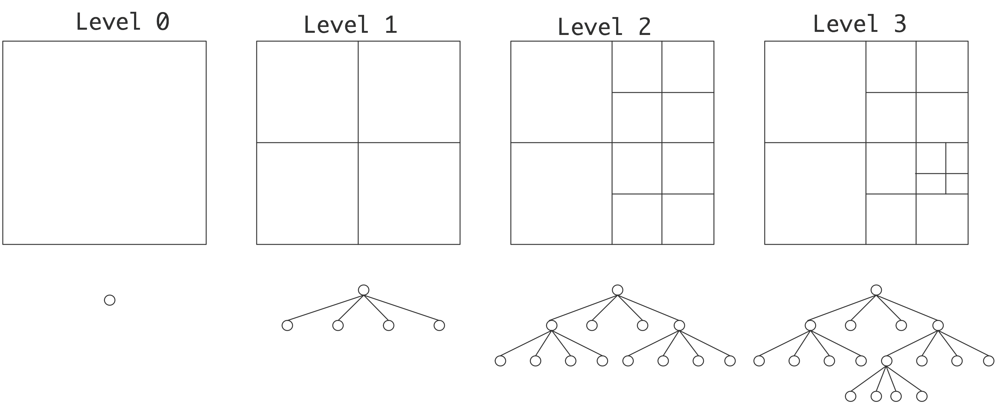</img>
<p name="caption">
FIGURE 2.39: Adaptive refinement of a domain in subsequent levels
</p>

</float>
</figure>
<!-- environment: figure end embedded generator -->
<p name="switchToTextMode">
If we keep track of these refinement levels, the problem gets a tree
structure, where the leaves contain all the work.
Load balancing becomes a matter of partitioning the leaves of the
tree over the processors; figure&nbsp;
2.40
.
<!-- environment: figure start embedded generator -->
</p>
<!-- TranslatingLineGenerator figure ['figure'] -->
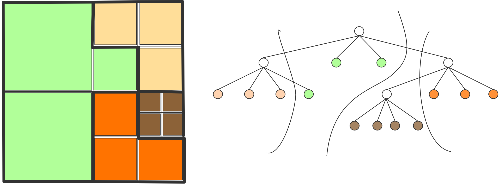</img>
<p name="caption">
FIGURE 2.40: Load distribution of an adaptively refined domain
</p>

</float>
</figure>
<!-- environment: figure end embedded generator -->
<p name="switchToTextMode">
Now we observe that the problem has a certain locality: the subtrees
of any non-leaf node are physically close, so there will probably be
communication between them.
<!-- environment: itemize start embedded generator -->
</p>
<!-- TranslatingLineGenerator itemize ['itemize'] -->
<li>
Likely there will be more subdomains than processors; to
  minimize communication between processors, we want each processor to
  contain a simply connected group of subdomains. Moreover, we want
  each processor to cover a part of the domain that is `compact' in
  the sense that it has low aspect ratio, and low surface-to-volume
  ratio.
<li>
When a subdomain gets further subdivided, part of the load of
  its processor may need to be shifted to another processor. This
  process of 
<i>load redistributing</i>
 should preserve
  locality.
</ul>
</itemize>
<!-- environment: itemize end embedded generator -->
<p name="switchToTextMode">

To fulfill these requirements we use 
<span title="acronym" ><i>SFCs</i></span>
. A 
<span title="acronym" ><i>SFC</i></span>
 for the
load balanced tree is shown in figure&nbsp;
2.41
. We will
not give a formal discussion of 
<span title="acronym" ><i>SFCs</i></span>
; instead we
<!-- environment: figure start embedded generator -->
</p>
<!-- TranslatingLineGenerator figure ['figure'] -->
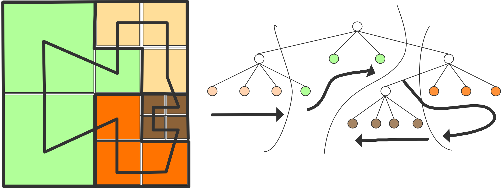</img>
<p name="caption">
FIGURE 2.41: A space filling curve for the load balanced tree
</p>

</float>
</figure>
<!-- environment: figure end embedded generator -->
<p name="switchToTextMode">
will let figure&nbsp;
2.42
 stand for a definition: a 
<span title="acronym" ><i>SFC</i></span>
 is a
recursively defined curve that touches each subdomain
once
<!-- environment: footnoteenv start embedded generator -->
</p>
<!-- TranslatingLineGenerator footnoteenv ['footnoteenv'] -->
  {
<span title="acronym" ><i>SFCs</i></span>
 were introduced by Peano as a mathematical
  device for constructing a continuous surjective function from the
  line segment $[0,1]$ to a higher dimensional cube $[0,1]^d$. This
  upset the intuitive notion of dimension that `you can not stretch
  and fold a line segment to fill up the square'. A&nbsp;proper treatment
  of the concept of dimension was later given by Brouwer.}
</p name="footnoteenv">
)
</footnoteenv>
<!-- environment: footnoteenv end embedded generator -->
<p name="switchToTextMode">
.
<!-- environment: figure start embedded generator -->
</p>
<!-- TranslatingLineGenerator figure ['figure'] -->
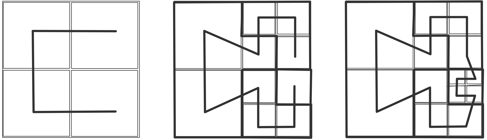</img>
<p name="caption">
FIGURE 2.42: Space filling curves, regularly and irregularly refined
</p>

</float>
</figure>
<!-- environment: figure end embedded generator -->
<p name="switchToTextMode">
The 
<span title="acronym" ><i>SFC</i></span>
 has the property that domain elements that are close
together physically will be close together on the curve, so if we map
the 
<span title="acronym" ><i>SFC</i></span>
 to a linear ordering of processors we will preserve the
locality of the problem.
</p>

<p name="switchToTextMode">
More importantly, if the domain is refined by
another level, we can refine the curve accordingly. Load can then be
redistributed to neighboring processors on the curve, and we will
still have locality preserved.
</p>

<p name="switchToTextMode">
(The use of 
<span title="acronym" ><i>SFCs</i></span>
 is N-body problems was
discussed in&nbsp;
<a href="https://pages.tacc.utexas.edu/~eijkhout/istc/html/bibliography.html#Warren:1993:hash-octree">[Warren:1993:hash-octree]</a>
 and&nbsp;
<a href="https://pages.tacc.utexas.edu/~eijkhout/istc/html/bibliography.html#Springel:gadget">[Springel:gadget]</a>
.)
</p>

<!-- index -->
<p name="switchToTextMode">

</p>

<!-- index -->
<p name="switchToTextMode">

<h2><a id="Remainingtopics">2.11</a> Remaining topics</h2>
<p name=crumbs>
crumb trail:  > <a href="parallel.html">parallel</a> > <a href="parallel.html#Remainingtopics">Remaining topics</a>
</p>
</p>

<h3><a id="Distributedcomputing,gridcomputing,cloudcomputing">2.11.1</a> Distributed computing, grid computing, cloud computing</h3>
<p name=crumbs>
crumb trail:  > <a href="parallel.html">parallel</a> > <a href="parallel.html#Remainingtopics">Remaining topics</a> > <a href="parallel.html#Distributedcomputing,gridcomputing,cloudcomputing">Distributed computing, grid computing, cloud computing</a>
</p>

<!-- index -->
<!-- index -->
<p name="switchToTextMode">
\SetBaseLevel 2
<!-- TranslatingLineGenerator file ['file'] -->
</p>

<p name="switchToTextMode">
In this section we will take a short look at terms such as
<i>cloud computing</i>
and an earlier term
<i>distributed computing</i>
These are concepts that have a
relation to parallel computing in the scientific sense, but that
differ in certain fundamental ways.
</p>

<p name="switchToTextMode">
Distributed computing can be traced back
as coming from large database servers, such as
airline reservations systems, which had to be accessed by many travel
agents simultaneously. For a large enough volume of database
accesses a single server will not suffice, so the mechanism of
<i>remote procedure call</i>
 was invented, where the central
server would call code (the procedure in question) on a different
(remote) machine. The remote call could involve transfer of data, the
data could be already on the remote machine, or there would be some
mechanism that data on the two machines would stay synchronized. This
gave rise to the 
<i>SAN</i>
. A~generation later than distributed
database systems, web servers had to deal with the same problem of
many simultaneous accesses to what had to act like a single server.
</p>

<p name="switchToTextMode">
We already see one big difference between distributed computing and
high performance parallel computing. Scientific computing needs
parallelism because a single simulation becomes too big or slow for
one machine; the business applications sketched above deal with many
users executing small programs (that is, database or web queries)
against a large data set. For scientific needs, the processors of a
parallel machine (the nodes in a cluster) have to have a very fast
connection to each other; for business needs no such network is
needed, as long as the central dataset stays coherent.
</p>

<p name="switchToTextMode">
Both in 
<i>HPC</i>
 and in business computing, the server has to stay
available and operative, but in distributed computing there is
considerably more liberty in how to realize this. For a user
connecting to a service such as a database, it does not matter what
actual server executes their request. Therefore, distributed computing
can make use of 
<i>virtualization</i>
: a virtual server can be
spawned off on any piece of hardware.
</p>

<p name="switchToTextMode">
An analogy can be made between remote servers, which supply computing
power wherever it is needed, and the electric grid, which supplies
electric power wherever it is needed. This has led to 
  computing} or 
<i>utility computing</i>
, with the Teragrid,
owned by the US National Science Foundation, as an example. Grid
computing was originally intended as a way of hooking up computers
connected by a 
<i>LAN</i>
 or 
<i>WAN</i>
, often the Internet. The machines
could be parallel themselves, and were often owned by different
institutions. More recently, it has been viewed as a way of sharing
resources, both datasets, software resources, and scientific
instruments, over the network.
</p>

<p name="switchToTextMode">
The notion of utility computing as a way of making services available,
which you recognize from the above description of distributed
computing, went mainstream
with Google's search engine, which
indexes the whole of the Internet. Another example is the GPS capability
of Android mobile phones, which combines GIS, GPS, and mashup
data. The computing model by which Google's gathers and processes data
has been formalized in
MapReduce~
<a href="https://pages.tacc.utexas.edu/~eijkhout/istc/html/bibliography.html#Google:mapreduce">[Google:mapreduce]</a>
. It combines a data parallel aspect (the
`map' part) and a central accumulation part (`reduce'). Neither
involves the tightly coupled neighbor-to-neighbor communication that
is common in scientific computing.
An open
source framework for MapReduce computing exists in
Hadoop~
<a href="https://pages.tacc.utexas.edu/~eijkhout/istc/html/bibliography.html#Hadoop-wiki">[Hadoop-wiki]</a>
. Amazon offers a commercial Hadoop service.
</p>

<p name="switchToTextMode">
The concept of having a remote computer serve user needs is attractive
even if no large datasets are involved, since it absolves the user
from the need of maintaining software on their local machine. Thus,
Google Docs
<!-- index -->
 offers various `office'
applications without the user actually installing any software. This
idea is sometimes called 
<i>SAS</i>
, where
the user connects to an `application server', and accesses it through
a client such as a web browser. In the case of Google Docs, there is
no longer a large central dataset, but each user interacts with their
own data, maintained on Google's servers. This of course has the large
advantage that the data is available from anywhere the user has access
to a web browser.
</p>

<p name="switchToTextMode">
The 
<span title="acronym" ><i>SAS</i></span>
 concept has several connections to earlier
technologies. For instance, after the mainframe and workstation eras,
the so-called 
<i>thin client</i>
 idea was briefly popular. Here,
the user would have a workstation rather than a terminal, yet work on
data stored on a central server. One product along these lines was
Sun's 
<i>Sun Ray</i>
 (circa 1999) where users relied on a smartcard to
establish their local environment on an arbitrary, otherwise stateless,
workstation.
</p>

<h3><a id="Usagescenarios">2.11.2</a> Usage scenarios</h3>
<p name=crumbs>
crumb trail:  > <a href="parallel.html">parallel</a> > <a href="parallel.html#Remainingtopics">Remaining topics</a> > <a href="parallel.html#Usagescenarios">Usage scenarios</a>
</p>
<p name="switchToTextMode">

The model where services are available on demand is attractive for
businesses, which increasingly are using cloud services. The
advantages are that it requires no initial monetary and time
investment, and that no decisions about type and size of equipment
have to be made. At the moment, cloud services are mostly focused on
databases and office applications, but scientific clouds with a high
performance interconnect are under development.
</p>

<p name="switchToTextMode">
The following is a broad classification of usage scenarios of cloud
resources
<!-- environment: footnoteenv start embedded generator -->
</p>
<!-- TranslatingLineGenerator footnoteenv ['footnoteenv'] -->
  {Based on a blog post by Ricky Ho:
    
<a href=http://blogs.globallogic.com/five-cloud-computing-patterns>http://blogs.globallogic.com/five-cloud-computing-patterns</a>
.}
</p name="footnoteenv">
)
</footnoteenv>
<!-- environment: footnoteenv end embedded generator -->
<p name="switchToTextMode">
.
<!-- environment: itemize start embedded generator -->
</p>
<!-- TranslatingLineGenerator itemize ['itemize'] -->
<li>
Scaling. Here the cloud resources are used as a platform that
  can be expanded based on user demand. This can be considered
  Platform-as-a-Service (PAS): the cloud provides software and development platforms,
  eliminating the administration and maintenance for the user.
</p>

<p name="switchToTextMode">
  We can distinguish between two cases: if the user is running single
  jobs and is actively waiting for the output, resources can be added
  to minimize the wait time for these jobs (capability computing). On
  the other hand, if the user is submitting jobs to a queue and the
  time-to-completion of any given job is not crucial (capacity
  computing), resources can be added as the queue grows.
</p>

<p name="switchToTextMode">
  In HPC applications, users can consider the cloud resources as a
  cluster; this falls under Infrastructure-as-a-Service (IAS): the
  cloud service is a computing platforms allowing
  customization at the operating system level.
<li>
Multi-tenancy. Here the same software is offered to multiple
  users, giving each the opportunity for individual
  customizations. This falls under Software-as-a-Service (SAS):
  software is provided on demand; the customer does not purchase
  software, but only pays for its use.
<li>
Batch processing. This is a limited version of one of the Scaling
  scenarios above: the user has a large amount of data to process in
  batch mode. The
  cloud then becomes a batch processor. This model is a good candidate
  for MapReduce computations; section~
2.11.5
.
<li>
Storage. Most cloud providers offer database services, so this
  model absolves the user from maintaining their own database, just
  like the Scaling and Batch processing models take away the user's
  concern with maintaining cluster hardware.
<li>
Synchronization. This model is popular for commercial user
  applications. Netflix and Amazon's Kindle allow users to consume
  online content (streaming movies and ebooks
<!-- index -->
  respectively); after pausing the content they can resume from any
  other platform. Apple's recent iCloud
<!-- index -->
 provides
  synchronization for data in office applications, but unlike Google
  Docs
<!-- index -->
 the applications are not `in the
  cloud' but on the user machine.
</ul>
</itemize>
<!-- environment: itemize end embedded generator -->
<p name="switchToTextMode">

The first Cloud to be publicly accessible was Amazon's Elastic Compute
cloud (EC2), launched in 2006. EC2 offers a variety of different
computing platforms and storage facilities. Nowadays
more than a hundred companies provide cloud based services, well beyond
the initial concept of computers-for-rent.
</p>

<p name="switchToTextMode">
The infrastructure for cloud computing can be interesting from a
computer science point of view, involving distributed file systems,
scheduling, virtualization, and mechanisms for ensuring high
reliability.
</p>

<p name="switchToTextMode">
An interesting project, combining aspects of grid and cloud computing
is the Canadian Advanced Network For Astronomical
Research
<a href="https://pages.tacc.utexas.edu/~eijkhout/istc/html/bibliography.html#canfar-lecture">[canfar-lecture]</a>
. Here large central datasets are being
made available to astronomers as in a grid, together with compute
resources to perform analysis on them, in a cloud-like
manner. Interestingly, the cloud resources even take the form of
user-configurable virtual clusters.
</p>

<h3><a id="Characterization">2.11.3</a> Characterization</h3>
<p name=crumbs>
crumb trail:  > <a href="parallel.html">parallel</a> > <a href="parallel.html#Remainingtopics">Remaining topics</a> > <a href="parallel.html#Characterization">Characterization</a>
</p>
<p name="switchToTextMode">

Summarizing
<!-- environment: footnoteenv start embedded generator -->
</p>
<!-- TranslatingLineGenerator footnoteenv ['footnoteenv'] -->
  {The remainder of this section is based on the
  NIST definition of cloud
  computing~
<a href=http://csrc.nist.gov/publications/nistpubs/800-145/SP800-145.pdf>http://csrc.nist.gov/publications/nistpubs/800-145/SP800-145.pdf</a>
.}
</p name="footnoteenv">
)
</footnoteenv>
<!-- environment: footnoteenv end embedded generator -->
<p name="switchToTextMode">
we have three 
<i>cloud computing service models</i>
:
<!-- environment: description start embedded generator -->
</p>
<!-- TranslatingLineGenerator description ['description'] -->
<li>
[Software as a Service] The consumer runs the provider's
    application, typically through a thin client such as a browser;
    the consumer does not install or administer software.
    A~good example is Google Docs
<!-- index -->
<li>
[Platform as a Service] The service offered to the consumer is
  the capability to run applications developed by the consumer, who
  does not otherwise manage the processing platform or data storage
  involved.
<li>
[Infrastructure as a Service] The provider offers to the consumer
  both the capability to run software, and to manage storage and
  networks. The consumer can be in charge of operating system choice
  and network components such as firewalls.
</ul>
</description>
<!-- environment: description end embedded generator -->
<p name="switchToTextMode">
These can be deployed as follows:
<!-- environment: description start embedded generator -->
</p>
<!-- TranslatingLineGenerator description ['description'] -->
<li>
[Private cloud] The cloud infrastructure is managed by one organization for its own exclusive use.
<li>
[Public cloud] The cloud infrastructure is managed for use by a broad customer base.
</ul>
</description>
<!-- environment: description end embedded generator -->
<p name="switchToTextMode">
One could also define hybrid models such as community clouds.
</p>

<p name="switchToTextMode">
The characteristics of cloud computing are then:
<!-- environment: description start embedded generator -->
</p>
<!-- TranslatingLineGenerator description ['description'] -->
<li>
[On-demand and self service] The consumer can quickly request services
    and change service levels, without requiring human interaction with the provider.
<li>
[Rapid elasticity] The amount of storage or computing power appears to the consumer
    to be unlimited, subject only to budgeting constraints. Requesting extra facilities
    is fast, in some cases automatic.
<li>
[Resource pooling] Virtualization mechanisms make a cloud
    appear like a single entity, regardless its underlying
    infrastructure. In some cases the cloud remembers the `state' of
    user access; for instance, Amazon's Kindle books allow one to read
    the same book on a PC, and a smartphone; the cloud-stored book
    `remembers' where the reader left off, regardless the platform.
<li>
[Network access] Clouds are available through a variety of
    network mechanisms, from web browsers to dedicated portals.
<li>
[Measured service] Cloud services are typically `metered', with the consumer
    paying for computing time, storage, and bandwidth.
</ul>
</description>
<!-- environment: description end embedded generator -->
<p name="switchToTextMode">

</p>

<p name="switchToTextMode">
\SetBaseLevel 1
<!-- index -->
<!-- index -->
</p>

<h3><a id="Capabilityversuscapacitycomputing">2.11.4</a> Capability versus capacity computing</h3>
<p name=crumbs>
crumb trail:  > <a href="parallel.html">parallel</a> > <a href="parallel.html#Remainingtopics">Remaining topics</a> > <a href="parallel.html#Capabilityversuscapacitycomputing">Capability versus capacity computing</a>
</p>

<!-- index -->
<!-- index -->
<!-- TranslatingLineGenerator file ['file'] -->
<p name="switchToTextMode">

Large parallel computers can be used in two different ways. In later
chapters you will see how scientific problems can be scaled up almost
arbitrarily. This means that with an increasing need for accuracy or
scale, increasingly large computers are needed. The use of a whole
machine for a single problem, with only time-to-solution as the
measure of success, is known as 
<i>capability computing</i>
.
</p>

<p name="switchToTextMode">
On the other hand, many problems need less than a whole supercomputer
to solve, so typically a computing center will set up a machine so
that it serves a continuous stream of user problems, each smaller than
the full machine. In this mode, the measure of success is the
sustained performance per unit cost. This is known as
<i>capacity computing</i>
, and it requires a finely tuned
<i>job scheduling</i>
 strategy.
</p>

<p name="switchToTextMode">
A~popular scheme is
<i>fair-share scheduling</i>
, which tries to allocate resources
equally between users, rather than between processes. This means
that it will lower a user's priority if the user had recent jobs, and it will
give higher priority to short or small jobs. Examples of schedulers
on this principle are 
<i>SGE</i>
 and 
<i>Slurm</i>
.
</p>

<p name="switchToTextMode">
Jobs can have dependencies, which makes scheduling harder. In fact,
under many realistic conditions scheduling problems are
<i>NP-complete</i>
, so in practice heuristics will be used.
This topic, while interesting, is not further discussed in this book.
</p>

<!-- index -->
<!-- index -->
<p name="switchToTextMode">

<!-- environment: notready start embedded generator -->
</p>

</notready>
<!-- environment: notready end embedded generator -->
<p name="switchToTextMode">

<h3><a id="MapReduce">2.11.5</a> MapReduce</h3>
<p name=crumbs>
crumb trail:  > <a href="parallel.html">parallel</a> > <a href="parallel.html#Remainingtopics">Remaining topics</a> > <a href="parallel.html#MapReduce">MapReduce</a>
</p>

<!-- index -->
<!-- TranslatingLineGenerator file ['file'] -->
</p>

<i>MapReduce</i>
<!-- index -->
<p name="switchToTextMode">
~
<a href="https://pages.tacc.utexas.edu/~eijkhout/istc/html/bibliography.html#Google:mapreduce">[Google:mapreduce]</a>
 is a
programming model for certain parallel operations. One of its
distinguishing characteristics is that it is implemented using
<i>functional programming</i>
.  The MapReduce model handles
computations of the following form:
<!-- environment: itemize start embedded generator -->
</p>
<!-- TranslatingLineGenerator itemize ['itemize'] -->
<li>
For all available data, select items that satisfy a certain
  criterion;
<li>
and emit a key-value pair for them. This is the mapping stage.
<li>
Optionally there can be a combine/sort stage where all pairs with the
  same key value are grouped together.
<li>
Then do a global reduction on the keys, yielding one or more of
  the corresponding values. This is the reduction stage.
</ul>
</itemize>
<!-- environment: itemize end embedded generator -->
<p name="switchToTextMode">

We will now give a few examples of using MapReduce, and present the
functional programming model that underlies the MapReduce abstraction.
</p>

<h4><a id="ExpressivepoweroftheMapReducemodel">2.11.5.1</a> Expressive power of the MapReduce model</h4>
<p name=crumbs>
crumb trail:  > <a href="parallel.html">parallel</a> > <a href="parallel.html#Remainingtopics">Remaining topics</a> > <a href="parallel.html#MapReduce">MapReduce</a> > <a href="parallel.html#ExpressivepoweroftheMapReducemodel">Expressive power of the MapReduce model</a>
</p>
<p name="switchToTextMode">

The reduce part of the MapReduce model makes it a prime candidate for
computing global statistics on a dataset.
One example would be to count how many times each of a set of words
appears in some set of documents. The function being mapped knows the
set of words, and outputs for each document a pair of document name
and a list with the occurrence counts of the words. The reduction then
does a componentwise sum of the occurrence counts.
</p>

<p name="switchToTextMode">
The combine stage of MapReduce makes it possible to transform data.
An example is a `Reverse Web-Link Graph': the map function
outputs target-source pairs for each link to a target URL found in
a page named "source". The reduce function concatenates the list of
all source URLs associated with a given target URL and emits the pair
target-list(source).
</p>

<p name="switchToTextMode">
A less obvious example is computing PageRank
(section~
9.5
) with MapReduce. Here we use the fact that
the PageRank computation relies on a distributed sparse matrix-vector
product. Each web page corresponds to a column of the web matrix~$W$;
given a probability $p_j$ of being on page~$j$, that page can then
compute tuples $\langle i,w_{ij}p_j\rangle$. The combine stage of MapReduce
then sums together $(Wp)_i=\sum_j w_{ij}p_j$.
</p>

<p name="switchToTextMode">
Database operations can be implemented with MapReduce but since it has
a relatively large latency, it is unlikely to be competitive with
standalone databases, which are optimized for fast processing of a
single query, rather than bulk statistics.
</p>

<i>Sorting</i>
<!-- index -->
<p name="switchToTextMode">
  with MapReduce is considered in section~
8.5.1
.
</p>

<p name="switchToTextMode">
For other applications see

<a href=http://horicky.blogspot.com/2010/08/designing-algorithmis-for-map-reduce.html>http://horicky.blogspot.com/2010/08/designing-algorithmis-for-map-reduce.html</a>
.
</p>

<h4><a id="Mapreducesoftware">2.11.5.2</a> Mapreduce software</h4>
<p name=crumbs>
crumb trail:  > <a href="parallel.html">parallel</a> > <a href="parallel.html#Remainingtopics">Remaining topics</a> > <a href="parallel.html#MapReduce">MapReduce</a> > <a href="parallel.html#Mapreducesoftware">Mapreduce software</a>
</p>
<p name="switchToTextMode">

The implementation of MapReduce by Google was released under the name 
<i>Hadoop</i>
.
While it suited the Google model of single-stage reading and processing of data,
it had considerable disadvantages for many other users:
<!-- environment: itemize start embedded generator -->
</p>
<!-- TranslatingLineGenerator itemize ['itemize'] -->
<li>
Hadoop would flush all its data back to disc after each MapReduce cycle, so
  for operations that take more than a single cycle the file system
  and bandwidth demands are too great.
<li>
In computing center environments, where a user's data is not continuously online,
  the time required for loading data into 
<i>HDFS</i>
 would likely overwhelm the
  actual analysis.
</ul>
</itemize>
<!-- environment: itemize end embedded generator -->
<p name="switchToTextMode">
For these reasons, further projects such as Apache 
<i>Spark</i>
(
<a href=https://spark.apache.org/>https://spark.apache.org/</a>
) offer caching of data.
</p>

<h4><a id="Implementationissues">2.11.5.3</a> Implementation issues</h4>
<p name=crumbs>
crumb trail:  > <a href="parallel.html">parallel</a> > <a href="parallel.html#Remainingtopics">Remaining topics</a> > <a href="parallel.html#MapReduce">MapReduce</a> > <a href="parallel.html#Implementationissues">Implementation issues</a>
</p>
<p name="switchToTextMode">

Implementing MapReduce on a distributed system has an interesting
problem: the set of keys in the key-value pairs is dynamically
determined. For instance, in the `word count' type of applications
above we do not \textsl{a priori} know the set of words. Therefore it
is not clear which reducer process to send the pair to.
</p>

<p name="switchToTextMode">
We could for instance use a 
<i>hash function</i>
 to determine
this. Since every process uses the same function, there is not
disagreement. This leaves the problem that a process does not know how
many messages with key-value pairs to receive. The solution to this
was described in section~
6.5.6
.
</p>

<h4><a id="Functionalprogramming">2.11.5.4</a> Functional programming</h4>
<p name=crumbs>
crumb trail:  > <a href="parallel.html">parallel</a> > <a href="parallel.html#Remainingtopics">Remaining topics</a> > <a href="parallel.html#MapReduce">MapReduce</a> > <a href="parallel.html#Functionalprogramming">Functional programming</a>
</p>
<!-- index -->
<p name="switchToTextMode">
The mapping and reduction operations are readily implemented on any
type of parallel architecture, using a combination of threading and
message passing. However, at Google where this model was developed
traditional parallelism was not attractive for two reasons. First of
all, processors could fail during the computation, so a traditional
model of parallelism would have to be enhanced with 
  tolerance} mechanisms. Secondly, the computing hardware could
already have a load, so parts of the computation may need to be
migrated, and in general any type of synchronization between tasks
would be very hard.
</p>

<p name="switchToTextMode">
MapReduce is one way to abstract from such details of parallel
computing, namely through adopting a functional programming model. In
such a model the only operation is the evaluation of a function,
applied to some arguments, where the arguments are themselves the
result of a function application, and the result of the computation is
again used as argument for another function application. In
particular, in a strict functional model there are no variables, so
there is no static data.
</p>

<p name="switchToTextMode">
A function application, written in 
<i>Lisp</i>
 style as \n{(f a
  b)} (meaning that the function 
<tt>f</tt>
 is applied to arguments 
<tt>a</tt>

and 
<tt>b</tt>
) would then be executed by collecting the inputs from
whereven they are to the processor that evaluates the
function~
<tt>f</tt>
. The mapping stage of a MapReduce process is denoted
<!-- environment: verbatim start embedded generator -->
</p>
  (map f (some list of arguments))
</pre>
</verbatim>
<!-- environment: verbatim end embedded generator -->
<p name="switchToTextMode">
and the result is a list of the function results of applying 
<tt>f</tt>
 to
the input list. All details of parallelism and of guaranteeing that
the computation successfully finishes are handled by the 
<tt>map</tt>

function.
</p>

<p name="switchToTextMode">
Now we are only missing the reduction stage, which is just as simple:
<!-- environment: verbatim start embedded generator -->
</p>
(reduce g (map f (the list of inputs)))
</pre>
</verbatim>
<!-- environment: verbatim end embedded generator -->
<p name="switchToTextMode">
The 
<tt>reduce</tt>
 function takes a list of inputs and performs a
reduction on it.
</p>

<p name="switchToTextMode">
The attractiveness of this functional model lies in the fact that
functions can not have 
<i>side effects</i>
: because they can only
yield a single output result, they can not change
their environment, and hence there is no coordination problem of
multiple tasks accessing the same data.
</p>

<p name="switchToTextMode">
Thus, MapReduce is a useful
abstraction for programmers dealing with large amounts of data.
Of course, on an implementation level the MapReduce software uses
familiar concepts such as decomposing the data space, keeping a work
list, assigning tasks to processors, retrying failed operations, et
cetera.
</p>

<!-- index -->
<p name="switchToTextMode">

<!-- index -->
</p>

<h3><a id="Thetop500list">2.11.6</a> The top500 list</h3>
<p name=crumbs>
crumb trail:  > <a href="parallel.html">parallel</a> > <a href="parallel.html#Remainingtopics">Remaining topics</a> > <a href="parallel.html#Thetop500list">The top500 list</a>
</p>

<!-- index -->
<!-- TranslatingLineGenerator file ['file'] -->
<p name="switchToTextMode">

There are several informal ways of measuring just `how big' a computer
is. The most popular is the TOP500 list, maintained at

<a href=http://www.top500.org/>http://www.top500.org/</a>
, which records a computer's performance
on the 
<i>Linpack benchmark</i>
. 
<i>Linpack</i>
 is a
package for linear algebra operations, and no longer in use, since it
has been superseded by 
<i>Lapack</i>
 for shared memory and
<i>Scalapack</i>
 for distributed memory computers. The benchmark
operation is the solution of a (square, nonsingular, dense) linear
system through LU factorization with partial pivoting, with subsequent
forward and backward solution.
</p>

<p name="switchToTextMode">
The LU factorization operation is one that has great opportunity for
cache reuse, since it is based on the matrix-matrix multiplication
kernel discussed in section~
1.6.1
. It also has the property
that the amount of work outweighs the amount of communication:
$O(n^3)$ versus~$O(n^2)$.  As a result, the Linpack benchmark is
likely to run at a substantial fraction of the peak speed of the
machine. Another way of phrasing this is to say that the Linpack
benchmark is a 
<i>CPU-bound</i>
 or 
<i>compute-bound</i>
algorithm.
</p>

<p name="switchToTextMode">
Typical efficiency figures are between 60 and 90 percent. However, it
should be noted that many scientific codes do not feature the dense
linear solution kernel, so the performance on this benchmark is not
indicative of the performance on a typical code. Linear system
solution through iterative methods (section~
5.5
), for
instance, is much less efficient in a flops-per-second sense, being
dominated by the bandwidth between CPU and memory
(a~
<i>bandwidth bound algorithm</i>
).
</p>

<p name="switchToTextMode">
One implementation of the Linpack benchmark that is often used is
`High-Performance LINPACK'
(
<a href=http://www.netlib.org/benchmark/hpl/>http://www.netlib.org/benchmark/hpl/</a>
), which has several
parameters such as blocksize that can be chosen to tune the performance.
</p>

<h4><a id="Thetop500listasarecenthistoryofsupercomputing">2.11.6.1</a> The top500 list as a recent history of supercomputing</h4>
<p name=crumbs>
crumb trail:  > <a href="parallel.html">parallel</a> > <a href="parallel.html#Remainingtopics">Remaining topics</a> > <a href="parallel.html#Thetop500list">The top500 list</a> > <a href="parallel.html#Thetop500listasarecenthistoryofsupercomputing">The top500 list as a recent history of supercomputing</a>
</p>
<p name="switchToTextMode">

The top500 list offers a history of almost 20 years of
supercomputing. In this section we will take a brief look at
historical developments
<!-- environment: footnoteenv start embedded generator -->
</p>
<!-- TranslatingLineGenerator footnoteenv ['footnoteenv'] -->
  {The graphs contain John McCalpin's
    analysis of the top500 data.}
</p>

<p name="switchToTextMode">
. First of all,
figure~
2.43
 shows the evolution of architecture types
<!-- environment: figure start embedded generator -->
</p>
<!-- TranslatingLineGenerator figure ['figure'] -->
</img>
<p name="caption">
FIGURE 2.43: Evolution of the architecture types on the top500 list
</p>

</float>
</figure>
<!-- environment: figure end embedded generator -->
<p name="switchToTextMode">
by charting what portion of the aggregate peak performance of the
whole list is due to each type.
<!-- environment: itemize start embedded generator -->
</p>
<!-- TranslatingLineGenerator itemize ['itemize'] -->
<li>
Vector machines feature a relatively small number of very powerful vector
  pipeline processors (section~
2.3.1.1
). This type of
  architecture has largely disappeared; the last major machine of this
  type was the Japanese 
<i>Earth Simulator</i>
 which is seen as
  the spike in the graph around 2002, and which was at the top of the
  list for two years.
<li>
Micro-processor based architectures get their power from the
  large number of processors in one machine. The graph distinguishes
  between 
<i>x86</i>
 (
<i>Intel</i>
 and 
<i>AMD</i>
  processors with the exception of the 
<i>Intel Itanium</i>
)
  processors and others; see also the next graph.
<li>
A number of systems were designed as highly scalable
  architectures: these are denoted MPP for `massively parallel
  processor'. In the early part of the timeline this includes
  architectures such as the 
<i>Connection Machine</i>
, later it
  is almost exclusively the 
<i>IBM BlueGene</i>
.
<li>
In recent years `accelerated systems' are the upcoming
  trend. Here, a processing unit such as a 
<i>GPU</i>
 is attached
  to the networked main processor.
</ul>
</itemize>
<!-- environment: itemize end embedded generator -->
<p name="switchToTextMode">
Next, figure~
2.44
 shows the dominance of the
<i>x86</i>
 processor type relative to other micro-processors.
<!-- environment: figure start embedded generator -->
</p>
<!-- TranslatingLineGenerator figure ['figure'] -->
</img>
<p name="caption">
FIGURE 2.44: Evolution of the architecture types on the top500 list
</p>

</float>
</figure>
<!-- environment: figure end embedded generator -->
<p name="switchToTextMode">
(Since we classified the 
<i>IBM BlueGene</i>
 as an MPP, its
processors are not in the `Power' category here.)
</p>

<p name="switchToTextMode">
Finally, figure~
2.45
 shows the gradual increase in
core count. Here we can make the following observations:
<!-- environment: figure start embedded generator -->
</p>
<!-- TranslatingLineGenerator figure ['figure'] -->
</img>
<p name="caption">
FIGURE 2.45: Evolution of the architecture types on the top500 list
</p>

</float>
</figure>
<!-- environment: figure end embedded generator -->
<!-- environment: itemize start embedded generator -->
<!-- TranslatingLineGenerator itemize ['itemize'] -->
<li>
In the 1990s many processors consisted of more than one chip.
  In the rest of the graph, we count the number of cores per
  `package', that is, per 
<i>socket</i>
. In some cases a socket
  can actually contain two separate dies.
<li>
With the advent of multi-core processors, it is remarkable how
  close to vertical the section in the graph are. This means that new
  processor types are very quickly adopted, and the lower core counts
  equally quickly completely disappear.
<li>
For accelerated systems (mostly systems with 
<span title="acronym" ><i>GPUs</i></span>
) the
  concept of `core count' is harder to define; the graph merely shows
  the increasing importance of this type of architecture.
</ul>
</itemize>
<!-- environment: itemize end embedded generator -->
<p name="switchToTextMode">

</p name="footnoteenv">
)
</footnoteenv>
<!-- environment: footnoteenv end embedded generator -->
<!-- index -->
<p name="switchToTextMode">

<h3><a id="Heterogeneouscomputing">2.11.7</a> Heterogeneous computing</h3>
<p name=crumbs>
crumb trail:  > <a href="parallel.html">parallel</a> > <a href="parallel.html#Remainingtopics">Remaining topics</a> > <a href="parallel.html#Heterogeneouscomputing">Heterogeneous computing</a>
</p>

<!-- index -->
<!-- TranslatingLineGenerator file ['file'] -->
</p>

<p name="switchToTextMode">
You have now seen several computing models: single core, shared memory
multicore, distributed memory clusters, GPUs. These models all have in
common that, if there is more than one instruction stream active, all
streams are interchangeable. With regard to GPUs we need to refine this
statement: all instruction stream 
<i>on the GPU</i>
 are
interchangeable. However, a GPU is not a standalone device, but can be
considered a 
<i>co-processor</i>
 to a 
  processor}.
</p>

<p name="switchToTextMode">
If we want to let the host perform useful work while the co-processor
is active, we now have two different instruction streams or types of
streams. This situation is known as 
<i>heterogeneous computing</i>
.
In the GPU case, these instruction streams are even
programmed by a slightly different mechanisms --~using
<i>CUDA</i>
 for the GPU~-- but this need not be the case: the
<!-- index -->
 Intel 
<span title="acronym" ><i>MIC</i></span>
 architecture is programmed in
ordinary~C.
</p>

<!-- index -->
<p name="switchToTextMode">

</div>
<a href="index.html">Back to Table of Contents</a>
